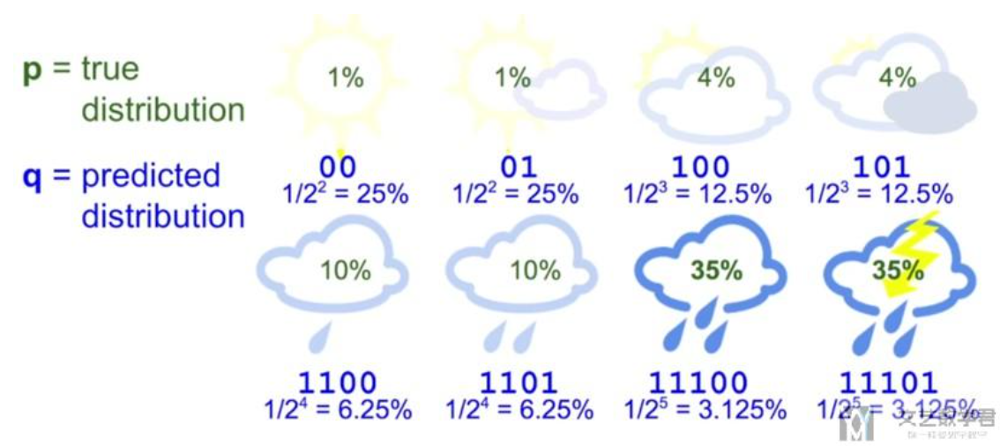
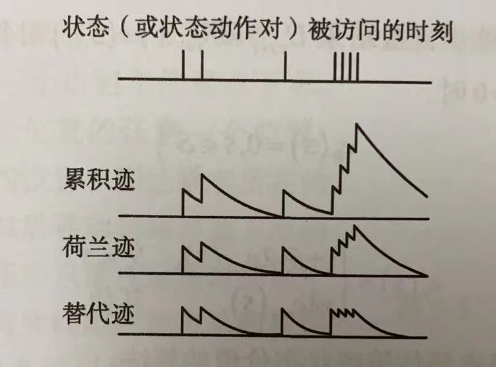

The owl of Minerva spreads its wings only with the falling of the dusk

Markdown与其支持的的LaTeX
Markdown
- 圆点突出：- +文字
- 序号列表：数字+.
- 链接：[文本](链接)
- 图片：
- 斜体：*文字*
- 加粗：**文字**
- 粗斜体：***文字***
- 分割线：*********或者----------
采用>+文字
几个#就代表几级标题
反引号
import numpy as np
利用三个反引号，后面加上代码使用的语言，如python可实现高亮
表格
| 表头 | 表头 |
| ---- | ---- |
| 单元格 | 单元格 |
| 单元格 | 单元格 |
| 表头 | 表头 |
|---|---|
| 单元格 | 单元格 |
| 单元格 | 单元格 |
还可设置表格的对齐方式
- :- 实现左对齐
- -: 实现右对齐
- :-: 实现居中
| 左对齐 | 右对齐 | 居中对齐 |
| :-----| ----: | :----: |
| 1 | 1 | 1 |
| 左对齐 | 右对齐 | 居中对齐 |
|---|---|---|
| 1 | 1 | 1 |
markdown中的LaTeX
支持的写法详情见katex官方文档
多行公式
为公式加编号：\tag{number}
$$
f(x) = x+1\tag{1}
$$
在VSCODE中必须使用aligned环境，如：
$$
\begin{aligned}
a&=1\
&=2
\end{aligned}
$$
$$
\begin{aligned}
a&=1\\
&=2
\end{aligned}
$$
分段函数
使用cases环境
$$
f(x) =
\begin{cases}
a, a<1,\\
b, a\geq1.
\end{cases}
$$
效果如下
$$ f(x) = \begin{cases} a&, a<1,\ b&, a\geq1. \end{cases} $$
文内链接
[能够点击的链接](#name)
<div id="name"></div>
python基础
导入本地脚本函数
from ..helpers import p4f
函数以及类注释
#函数
def fetch_bigtable_rows(big_table, keys, other_silly_variable=None):
"""Fetches rows from a Bigtable.
Retrieves rows pertaining to the given keys from the Table instance
represented by big_table. Silly things may happen if
other_silly_variable is not None.
Args:
big_table: An open Bigtable Table instance.
keys: A sequence of strings representing the key of each table row
to fetch.
other_silly_variable: Another optional variable, that has a much
longer name than the other args, and which does nothing.
Returns:
A dict mapping keys to the corresponding table row data
fetched. Each row is represented as a tuple of strings. For
example:
{'Serak': ('Rigel VII', 'Preparer'),
'Zim': ('Irk', 'Invader'),
'Lrrr': ('Omicron Persei 8', 'Emperor')}
If a key from the keys argument is missing from the dictionary,
then that row was not found in the table.
Raises:
IOError: An error occurred accessing the bigtable.Table object.
"""
pass
#类
class SampleClass(object):
"""Summary of class here.
Longer class information....
Longer class information....
Attributes:
likes_spam: A boolean indicating if we like SPAM or not.
eggs: An integer count of the eggs we have laid.
"""
def __init__(self, likes_spam=False):
"""Inits SampleClass with blah."""
self.likes_spam = likes_spam
self.eggs = 0
def public_method(self):
"""Performs operation blah."""
一． numpy
import numpy as np
基础
- 数组：np.array([[1,2,3],[4,5,6],...])
- 序列：np.arange(a,b,c) 初值a，终值b，步长c，不含终值
- 序列：np.linspace(a,b,c) 初值a，终值b，个数c，含终值
- 空数组：np.empty((a,b),np.int) shape&type
- 零数组：np.zeros((a,b),np.int)
- 单位阵：np.eye(N,M=None,k=0) 行数N，列数M，k为对角线上移(正)或下移(负)
- 全1阵：np.ones((a,b),np.int)
- 转置与内积：np.dot(A.T,A)
切片与索引
切片是视图而非副本，若要副本：arr[5:8].copy()
布尔型索引：data[data<0]=0, ~可用来反转条件
通用函数func
一元函数：np. f (arr)
- abs,fabs,sqrt开根,square平方
- exp,log,log10,log2
- sign,ceil向上取整,floor向下取整,rint四舍五入,modf拆成整数和小数
- isnan,isfinite,isinf
- cos,sin,cosh,sinh,tan,tanh
二元函数：np. f (arr)
- add,substract,multiply,divide,floor_divide 除后取整
- power,maximum,fmax,mod
- copysign 得到第二个数组的符号
- greater,greater_equal,less,less_equal,equal,not_equal返回布尔值
- meshgrid 接受两个一维数组，产生两个二维数组，对应所有(x,y)对
np.where()是 x if condition else y的矢量化版本
np.where(arr>2,2,-2)
np.where(arr>2,2,arr)
数组统计方法
- sum,mean,std,var,min,max
- argmax,argmin 索引,cumsum,cumprod
- 查询数组中是否有true:all,any(示例:
(a=b).all())
排序
sort
集合运算,数字1
- unique(x)
- intersect1d(x,y) 交集
- union1d(x,y) 并集
- in1d(x,y) 包含于
- setdiff1d(x,y) 差集
- setxor1d(x,y) 对称差
常用numpy.linalg函数(npl)
- diag 对角阵和一维数组转化
- dot,trace,det
- eig 特征值特征向量
- inv 逆
- pinv Moore-Penrose 伪逆
- qr QR分解
- svd 奇异值分解
- solve 解Ax=b ,A方针
- lstsq Ax=b最小二乘解
部分numpy.random函数
- seed 确定随机数生成器种子
- permutation 返回新的打乱的x,x不变
- shuffle 原地打乱x
- rand 均匀分布
- randint 给定范围内随机取整数
- randn 标准正态分布
- binomial 二项分布
- normal 正态分布
- beta,gamma
- chisquare 卡方分布
- uniform [0,1)均匀分布
数组合并与拼接
- append(arr,values,axis=None)
二． pytorch
创建网络的一种快捷方法：Sequential
net = torch.nn.Sequential(
torch.nn.Linear(STATE_SIZE, HIDDEN_SIZE),
torch.nn.ReLU(),
torch.nn.Linear(HIDDEN_SIZE, ACTION_SIZE),
)
2.1 构造张量的函数
torch.tensor()
torch.zeros(), torch.zeros_like()
torch.ones(), torch.ones_like()
torch.full(), torch.full_like() 全填充为指定值
torch.empty(), torch.empty_like()
torch.eye()
torch.arange(), torch.range(), torch.linspace()
torch.logspace() 等比
torch.rand(), torch.rand_like() 标准均匀
torch.randn(), torch.randn_like(), torch.normal() 标准正态
torch.randint(), torch.randint_like()
torch.bernoulli() 两点分布
torch.multinomial()
torch.randperm() {0,1,2,3...,n-1}的随机排列
2.2 重排张量元素
以下三种不会改变张量的实际位置（浅拷贝）
- reshape()
- squeeze()：消除张量中大小为 $1$ 的维度，
t.squeeze() - unsqueeze()：添加一个大小为 $0$ 的维度，
t.unsqueeze(dim=2)
2.3 张量扩展和拼接
- repeat()
- cat()：两个参数，第一个是要拼接的张量的列表，第二个是延哪一个维度
- stack()：同上，不同在于 stack 要求拼接的张量大小完全一样，延一个新的维度拼接
2.4 求解优化问题
- 在构造用做自变量的 torch.Tensor 类实例时，应将参数 requires_grad 设置为 True
- 调用张量类实例的成员方法 backward() 可以求偏导，调用完后，自变量的属性 grad 就储存了偏导的数值
from math import pi
import torch
x = torch.tensor([ pi/3 , pi/6 ], requires_grad=True)
f = -((x.cos()**2).sum)**2
print(f'value = {f}')
f.backward()
print(f'grad = {x.grad}')
优化算法与torch.optim包
在梯度下降时，先调用优化器实例的方法 zero_grad() 清空优化器在上次迭代中储存的数据，然后调用 torch.tensor 类实例的方法 backward() 求梯度，最后使用优化器的方法 step() 更新自变量的值
optimizer.zero_grad()
f.backward()
optimizer.step()
使用 torch.optim.SGD 梯度下降的一个实例
from math import pi
import torch
import torch.optim
x = torch.tensor([ pi/3 , pi/6 ], requires_grad=True)
optimizer = torch.optim.SGD([x,], lr=0.1 ,momentum=0)
for step in range(11):
if step:
optimizer.zero_grad()
f.backward()
optimizer.step()
f = -((x.cos()**2).sum)**2
print(f'step {step}: x = {x.tolist()}, f(x) = {f}')
torch.nn子包与损失类
torch.nn.Module 类及其子类可有以下用途
- 表示一个神经网络．如：torch.nn.Sequential 类可以表示一个前馈神经网络
- 表示神经网络的一个层：如 torch.nn.Linear 线性层，torch.nn.ReLU 激活层
- 表示损失：torch.nn.MSELoss，torh.nn.CrossEntropyLoss 等
激活层中逐元素激活分为以下三类
- S 型激活：Sigmoid，Softsign，Tanh，Hardtanh，ReLU6
- 单侧激活：ReLU，LeakyReLU，PReLU，RReLU，Threshold，ELU，SELU，Softplus，LogSigmoid
- 褶皱激活：Hardshrinkage，Softshrinkage，Tanhshrinkage
非逐元素激活
- Softmax，Softmax2d，LogSoftmax
torch.nn 里的损失类都是 torch.nn.Module 类的子类
criterion = torch.nn.MSELoss()
pred = torch.arange(5, requires_grad=True)
y = torch.ones(5)
loss = criterion(pred, y)
loss.backward()
训练集、验证集与训练集
训练集用来计算参数，验证集来判定欠拟合或过拟合，测试机来评价最终结果

| 欠拟合 | 过拟合 | |
|---|---|---|
| 泛化差错主要来源 | 偏差差错 (bias) | 方差差错 (variance) |
| 模型复杂度 | 过低 | 过高 |
| 学习曲线和验证曲线特征 | 收敛到比较大的差错值 | 两条曲线之间差别大 |
| 解决方案 | 增加模型复杂度 | 减小模型复杂度或增大训练集 |
2.5 标准化
- 批标准化( batch normalization )：对同一通道使用相同的均值和方差进行归一化，更适用于特征提取这样的应用
- 实例标准化( instance normalization )：对同一通道使用不同的均值和方差进行归一化，更适用于生成数据这样的应用
| 标准化操作类型 | 维度 | 标准化类 | 输入输出张量维度 | 适用网络 |
|---|---|---|---|---|
| 批标准化 | 1 | torch.nn.BatchNorm1d | $(n,c,l[0])$ | 前馈神经网络 |
| 批标准化 | 2 | torch.nn.BatchNorm2d | $(n,c,l[0],l[1])$ | 前馈神经网络 |
| 批标准化 | 3 | torch.nn.BatchNorm3d | $(n,c,l[0],l[1],l[2])$ | 前馈神经网络 |
| 实例标准化 | 1 | torch.nn.InstanceNorm1d | $(n,c,l[0])$ | 前馈神经网络 |
| 实例标准化 | 2 | torch.nn.InstanceNorm2d | $(n,c,l[0],l[1])$ | 前馈神经网络 |
| 实例标准化 | 3 | torch.nn.InstanceNorm3d | $(n,c,l[0]),l[1],l[2]$ | 前馈神经网络 |
| 层标准化 | 不限 | torch.nn.LayerNorm | $(n,L$ | 前馈神经网络 |
2.6 网络权重初始化
pytorch 中完成权重初始化需要 torch.nn.init 子包和 torch.nn.Module 类成员方法 apply()．
| 函数名 | 元素分布 | 分布参数确定方法 |
|---|---|---|
| torch.nn.init.uniform_() | 均匀分布 | 传入表示最小值的参数 a (默认为 0 )和表示最大值的参数 b (默认为 1 ) |
| torch.nn.init.normal_() | 正态分布 | 传入表示均值的参数 mean (默认为 0 )和表示方差的参数 std (默认为 1 ) |
| torch.nn.init.constant_() | 常量 | 传入常量 vaL |
| torch.nn.init.xavier_uniform_() | 均匀分布 | 均值为 0 ，标准差 $\sigma$ 根据输入的张量大小和增益函数 gain 计算得到 |
| torch.nn.init.xavier_uniform_() | 均匀分布 | 均值为 0 ，标准差 $\sigma$ 根据输入的张量大小和增益函数 gain 计算得到 |
apply() 方法有一个参数，参数是一个 python 函数，这个函数的参数必须是 torch.nn.Module 类．
import torch.nn.init as init
def weights_init(m):
init.xavier_normal_(m.weight)
init.constant_(m.bias, 0)
2.7 卷积神经网络
对一维卷积，设 $X$ 为输入张量，大小为 $(l_x,)$，$W$ 为卷积核，大小为 $(k,)$ ，输出张量为 $Z$ ，大小为 $(l_z,)$，则有 $$ l_z=l_x-k+1 $$
补全 (pad) 运算

在补零后 (前后各补 $p_{x-}$ ，$p_{x+}$) ，相应的张量维度为 $$ l_{补后}=p_{x-}+l_x+p_{x+} $$
核的膨胀(dilate)，基本互相关中，每个权重连续对应着输入张量中的元素，此时可认为膨胀系数为 $k_{膨胀}=1$ ，膨胀前后核大小关系为 $$ k_{膨胀后}=d_{膨胀}(k-1)+1 $$ 图 8-4 给出了膨胀系数 $d_{膨胀}=2$ 的例子．膨胀前，核的大小为 $k=3$ ，膨胀后，$k_{膨胀后}=5$

步幅(stride)，基本互相关中，卷积核每次相对输入张量 $X$ 向右移动一个元素的位置并得到一个输出张量，一共 $l_z=l_x-k+1$ 个输出．将此输出大小记为 $l_{z步幅前}$ 视为可以认为基本互相关操作的步幅 $s_{步幅}=1$ ，如果考虑更大步幅，则有 $$ l_z = \left[ \frac{l_{z步幅前}-1}{s_{步幅}}+1 \right] $$
补全、步幅、膨胀可以综合使用．综合前文，输入大小 $\left( l_{x},\right)$ ，输出大小 $\left(l_{z},\right)$ ，核张量大小 $(k,)$，两侧分别补全数 $p_{x-}$ 和 $p_{x+}$ ，步幅 $s_{步幅}$，膨胀系数 $d_{膨胀}$ 之间的关系满足 $$ \begin{aligned} l_{x补后}&=p_{x-}+l_x+p_{x+}\ k_{膨胀后}&=d_{膨胀}(k-1)+1\ l_{z步幅前}&=l_{x补后}-k_{膨胀后}+1\ l_z &= \left[ \frac{l_{z步幅前}-1}{s_{步幅}}+1 \right] \end{aligned} $$ 将以上几式综合起来，可以得到 $$ l_z=\left[ \frac{ (p_{x-}+l_x+p_{x+})-(d_{膨胀}(k-1)+1) }{s_{步幅}} +1 \right] $$
torch.nn 里的卷积层
| 运算类型 | 运算维度 | torch.nn.Module子类 | 类实例输入张量的大小 | 类实例输出张量的大小 |
|---|---|---|---|---|
| 互相关 | 1 | torch.nn.Conv1d | $(n,c_x,l_x[0])$ | $(n,c_x,l_z[0])$ |
| 互相关 | 2 | torch.nn.Conv2d | $(n,c_x,l_x[0],l_x[1])$ | $(n,c_x,l_z[0],l_z[1])$ |
| 互相关 | 3 | torch.nn.Conv3d | $(n,c_x,l_x[0],l_x[1],l_x[2])$ | $(n,c_x,l_z[0],l_z[1],l_z[2])$ |
$n$ 为样本的计数， $c$ 表示数据的通道数，即一条数据有几个 $d$ 维张量．卷积层的输出通道数表示最多支持的特征个数．因为每个通道使用相同的卷积核计算，每个卷积核只能提取一种特征．
conv = torch.nn.Conv2d(16, 33, kernel_size={3, 5}, stride={2, 1}, padding={4, 2}, dilation={3, 1})
inputs = torch.rand(20, 16, 50, 100) #20条样本，16个通道，每个通道大小为 50*100
outputs = conv(inputs)
outputs.size()
张量的池化
池化 (pooling)，核不需要权重
- 最大池化(max pool)：输出张量的每个元素都是若干个输入张量的最大值
- 平均池化(average pool)：输出元素由若干个输入元素求平均得到
- $l_p$池化($l_p$ pool)：计算输入元素组合的 $l_p$ 范数


以下为不带“自适应”(adaptive)的版本，带自适应只需在 MaxPool1d 前加上 Adaptive，此时不能设置补全数等，他会自动帮你计算
| 运算类型 | 运算维度 | torch.nn.Module子类 | 类实例输入张量的大小 | 类实例输出张量的大小 |
|---|---|---|---|---|
| 最大池化 | 1 | torch.nn.MaxPool1d | $(n,c_x,l_x[0])$ | $(n,c_x,l_z[0])$ |
| 最大池化 | 2 | torch.nn.MaxPool2d | $(n,c_x,l_x[0],l_x[1])$ | $(n,c_x,l_z[0],l_z[1])$ |
| 最大池化 | 3 | torch.nn.MaxPool3d | $(n,c_x,l_x[0],l_x[1],l_x[2])$ | $(n,c_x,l_z[0],l_z[1],l_z[2])$ |
| 平均池化 | 1 | torch.nn.AvgPool1d | $(n,c_x,l_x[0])$ | $(n,c_x,l_z[0])$ |
| 平均池化 | 2 | torch.nn.AvgPool2d | $(n,c_x,l_x[0],l_x[1])$ | $(n,c_x,l_z[0],l_z[1])$ |
| 平均池化 | 3 | torch.nn.AvgPool3d | $(n,c_x,l_x[0],l_x[1],l_x[2])$ | $(n,c_x,l_z[0],l_z[1],l_z[2])$ |
| $l_p$池化 | 1 | torch.nn.LPPool1d | $(n,c_x,l_x[0])$ | $(n,c_x,l_z[0])$ |
| $l_p$池化 | 2 | torch.nn.LPPool2d | $(n,c_x,l_x[0],l_x[1])$ | $(n,c_x,l_z[0],l_z[1])$ |
| 最大反池化 | 1 | torch.nn.MaxUnpool1d | $(n,c_x,l_x[0]$ | $(n,c_x,l_z[0])$ |
| 最大反池化 | 2 | torch.nn.MaxUnpool2d | $(n,c_x,l_x[0],l_x[1])$ | $(n,c_x,l_z[0],l_z[1])$ |
| 最大反池化 | 3 | torch.nn.MaxUnpool3d | $(n,c_x,l_x[0],l_x[1],l_x[2])$ | $(n,c_x,l_z[0],l_z[1],l_z[2])$ |
张量的上采样
张量的上采样(up-sample)，将输入张量的每个维度大小扩展若干倍．
- 最邻近上采样( nearest up-sample )：按照一个比例因子( scale factor )将每个元素重复若干次
- 线性插值上采样( linearup-sample )
pytorch 中上采样用的是 torch.nn 的子包 torch.nn.Unsample 类．
| 运算类型 | 运算维度 | torch.nn.Unsample类实例构造参数 | 类实例输入张量的大小 | 类实例输出张量的大小 |
|---|---|---|---|---|
| 最邻近上采样 | 1 | mode='nearest'(默认值) | $(n,c_x,l_x[0])$ | $(n,c_x,l_z[0])$ |
| 最邻近上采样 | 2 | mode='nearest'(默认值) | $(n,c_x,l_x[0],l_x[1])$ | $(n,c_x,l_z[0],l_z[1])$ |
| 最邻近上采样 | 3 | mode='nearest'(默认值) | $(n,c_x,l_x[0],l_x[1],l_x[2])$ | $(n,c_x,l_z[0],l_z[1],l_z[2])$ |
| 线性上采样 | 1 | mode='linear' | $(n,c_x,l_x[0])$ | $(n,c_x,l_z[0])$ |
| 线性上采样 | 2 | mode='bilinear' | $(n,c_x,l_x[0],l_x[1])$ | $(n,c_x,l_z[0],l_z[1])$ |
| 线性上采样 | 3 | mode='trilinear' | $(n,c_x,l_x[0],l_x[1],l_x[2])$ | $(n,c_x,l_z[0],l_z[1],l_z[2])$ |
张量的补全运算
- 常数补全( constant pad )：输入张量前后补上常数
- 重复补全( replication pad )：用最边上的值补全
- 反射补全( reflection pad )：以边界为对称轴补全
| 运算类型 | 运算维度 | torch.nn.Module子类 | 类实例输入张量的大小 | 类实例输出张量的大小 |
|---|---|---|---|---|
| 常数补全 | 2 | torch.nn.ConstantPad2d | $(n,c_x,l_x[0],l_x[1])$ | $(n,c_x,l_{x补后}[0],l_{x补后}[1])$ |
| 重复补全 | 2 | torch.nn.ReplicationPad2d | $(n,c_x,l_x[0],l_x[1])$ | $(n,c_x,l_{x补后},l_{x补后}[1])$ |
| 反射补全 | 2 | torch.nn.ReflectionPad2d | $(n,c_x,l_x[0],l_x[1])$ | $(n,c_x,l_{x补后}[0],l_{x补后}[1])$ |
| 反射补全 | 3 | torch.nn.Reflection3d | $(n,c_x,l_x[0],l_x[1],l_x[2])$ | $(n,c_x,l_{x补后}[0],l_{x补后}[1],l_{x补后}[2])$ |
inputs = torch.arange(12).view(1, 1, 3, 4)
pad = nn.ConstantPad2d(padding=[1, 1, 1, 1], value=-1)
pad = nn.Replication2d(padding=[1, 1, 1, 1])
pad = nn.Reflection2d(padding=[1, 1, 1, 1])
例如实现下图的卷积网络，可以参考的构建网络方法：

import torch.nn
class Net(torch.nn.Module):
def __init__(self):
super(Net, self).__init__()
self.conv0 = torch.nn.Conv2d(1, 64, kernel_size=3, padding=1)
self.relu1 = torch.nn.ReLU()
self.conv2 = torch.nn.Conv2d(64, 128, kernel_size=3, padding=1)
self.relu3 = torch.nn.ReLU()
self.pool4 = torch.nn.MaxPool2d(stride=2, kernel_size=2)
self.fc5 = torch.nn.Linear(128*14*14, 1024)
self.relu6 = torch.nn.ReLU()
self.drop7 = torch.nn.Dropout(p=0.5)
self.fc8 = torch.nn.Linear(1024, 10)
def forward(self, x):
x = self.conv0(x)
x = self.relu1(x)
x = self.conv2(x)
x = self.relu3(x)
x = self.pool4(x)
x = x.view(-1, 128 * 14 * 14)
x = self.fc5(x)
x = self.relu6(x)
x = self.drop7(x)
x = self.fc8(x)
return x
net = Net()
另外可用 sequential 方法
import torch.nn
class Net(torch.nn.Module):
def __init__(self):
super(Net, self).__init__()
self.conv = torch.nn.Sequential(
torch.nn.Conv2d(1, 64, kernel_size=3, padding=1)
torch.nn.ReLU()
torch.nn.Conv2d(64, 128, kernel_size=3, padding=1)
torch.nn.ReLU()
torch.nn.MaxPool2d(stride=2, kernel_size=2))
self.dense = torch.nn.Sequential(
torch.nn.Linear(128*14*14, 1024)
torch.nn.ReLU()
torch.nn.Dropout(p=0.5)
torch.nn.Linear(1024, 10))
def forward(self, x):
x = self.conv(x)
x = x.view(-1, 128 * 14 * 14)
x = self.dense(x)
return x
net = Net()
2.8 循环神经网络
TODO:循环神经网络
以下是 LSTM 示例
import torch.nn
class Net(torch.nn.Module):
def __init__(self, input_size, hidden_size):
super(Net, self).__init__()
self.rnn = torch.nn.LSTM(input_size, hidden_size)
self.fc = torch.nn.Linear(hidden_size, 1)
def forward(self, x):
x = x[:, :, None]
x, _ = self.rnn(x)
x = self.fc(x)
x = x[:, :, 0]
return x
net = Net(input_size=1, hidden_size=5)
2.9 生成对抗网络
- 生成网络( generative network )：一般一条随机输入是一个有多个元素的张量 $Z$，张量 $Z$ 的取值空间称为“潜在空间”( latent space )，张量 $Z$ 的元素个数称为“潜在大小”( latent size )．生成网络 $g$ 可以将这条潜在张量样本 $Z$ 映射为一条数据张量 $X=g(Z)$．
- 鉴别网络( discriminative network )：对生成网络生成的数据进行判定．
以 $l$ 记交叉熵损失函数
目的：训练鉴别网络 $d$ 使得 $$ \begin{aligned} &min_d l(d(X),1),\qquad其中X是真实数据\ &min_d l(d(g(X)),0) \end{aligned} $$ 训练生成网络使得 $$ max_g min_d l(d(g(Z)),0) $$
以下是CIFAR-10图像生成的实例
'''读取数据'''
from torch.utils.data import DataLoader
from torchvision.datasets import CIFAR10
import torchvision.transforms as transforms
from torchvision.utils import save_image
dataset = CIFAR10(root='./data', download=True,
transform=transforms.ToTensor())
dataloader = DataLoader(dataset, batch_size=64, shuffle=True)
for batch_idx, data in enumerate(dataloader):
real_images, _ = data
batch_size = real_images.size(0)
print ('#{} has {} images.'.format(batch_idx, batch_size))
if batch_idx % 100 == 0:
path = './data/CIFAR10_shuffled_batch{:03d}.png'.format(batch_idx)
save_image(real_images, path, normalize=True)
'''生成网络与鉴别网络的搭建'''
import torch.nn as nn
# 搭建生成网络
latent_size = 64 # 潜在大小
n_channel = 3 # 输出通道数
n_g_feature = 64 # 生成网络隐藏层大小
gnet = nn.Sequential(
# 输入大小 = (64, 1, 1)
nn.ConvTranspose2d(latent_size, 4 * n_g_feature, kernel_size=4,
bias=False),
nn.BatchNorm2d(4 * n_g_feature),
nn.ReLU(),
# 大小 = (256, 4, 4)
nn.ConvTranspose2d(4 * n_g_feature, 2 * n_g_feature, kernel_size=4,
stride=2, padding=1, bias=False),
nn.BatchNorm2d(2 * n_g_feature),
nn.ReLU(),
# 大小 = (128, 8, 8)
nn.ConvTranspose2d(2 * n_g_feature, n_g_feature, kernel_size=4,
stride=2, padding=1, bias=False),
nn.BatchNorm2d(n_g_feature),
nn.ReLU(),
# 大小 = (64, 16, 16)
nn.ConvTranspose2d(n_g_feature, n_channel, kernel_size=4,
stride=2, padding=1),
nn.Sigmoid(),
# 图片大小 = (3, 32, 32)
)
print (gnet)
# 搭建鉴别网络
n_d_feature = 64 # 鉴别网络隐藏层大小
dnet = nn.Sequential(
# 图片大小 = (3, 32, 32)
nn.Conv2d(n_channel, n_d_feature, kernel_size=4,
stride=2, padding=1),
nn.LeakyReLU(0.2),
# 大小 = (64, 16, 16)
nn.Conv2d(n_d_feature, 2 * n_d_feature, kernel_size=4,
stride=2, padding=1, bias=False),
nn.BatchNorm2d(2 * n_d_feature),
nn.LeakyReLU(0.2),
# 大小 = (128, 8, 8)
nn.Conv2d(2 * n_d_feature, 4 * n_d_feature, kernel_size=4,
stride=2, padding=1, bias=False),
nn.BatchNorm2d(4 * n_d_feature),
nn.LeakyReLU(0.2),
# 大小 = (256, 4, 4)
nn.Conv2d(4 * n_d_feature, 1, kernel_size=4),
# 对数赔率张量大小 = (1, 1, 1)
)
print(dnet)
'''网络初始化'''
import torch.nn.init as init
def weights_init(m): # 用于初始化权重值的函数
if type(m) in [nn.ConvTranspose2d, nn.Conv2d]:
init.xavier_normal_(m.weight)
elif type(m) == nn.BatchNorm2d:
init.normal_(m.weight, 1.0, 0.02)
init.constant_(m.bias, 0)
gnet.apply(weights_init)
dnet.apply(weights_init)
'''训练并输出图片'''
import torch
import torch.optim
# 损失
criterion = nn.BCEWithLogitsLoss()
# 优化器
goptimizer = torch.optim.Adam(gnet.parameters(),
lr=0.0002, betas=(0.5, 0.999))
doptimizer = torch.optim.Adam(dnet.parameters(),
lr=0.0002, betas=(0.5, 0.999))
# 用于测试的固定噪声,用来查看相同的潜在张量在训练过程中生成图片的变换
batch_size = 64
fixed_noises = torch.randn(batch_size, latent_size, 1, 1)
# 训练过程
epoch_num = 10
for epoch in range(epoch_num):
for batch_idx, data in enumerate(dataloader):
# 载入本批次数据
real_images, _ = data
batch_size = real_images.size(0)
# 训练鉴别网络
labels = torch.ones(batch_size) # 真实数据对应标签为1
preds = dnet(real_images) # 对真实数据进行判别
outputs = preds.reshape(-1)
dloss_real = criterion(outputs, labels) # 真实数据的鉴别器损失
dmean_real = outputs.sigmoid().mean()
# 计算鉴别器将多少比例的真数据判定为真,仅用于输出显示
noises = torch.randn(batch_size, latent_size, 1, 1) # 潜在噪声
fake_images = gnet(noises) # 生成假数据
labels = torch.zeros(batch_size) # 假数据对应标签为0
fake = fake_images.detach()
# 使得梯度的计算不回溯到生成网络,可用于加快训练速度.删去此步结果不变
preds = dnet(fake) # 对假数据进行鉴别
outputs = preds.view(-1)
dloss_fake = criterion(outputs, labels) # 假数据的鉴别器损失
dmean_fake = outputs.sigmoid().mean()
# 计算鉴别器将多少比例的假数据判定为真,仅用于输出显示
dloss = dloss_real + dloss_fake # 总的鉴别器损失
dnet.zero_grad()
dloss.backward()
doptimizer.step()
# 训练生成网络
labels = torch.ones(batch_size)
# 生成网络希望所有生成的数据都被认为是真数据
preds = dnet(fake_images) # 把假数据通过鉴别网络
outputs = preds.view(-1)
gloss = criterion(outputs, labels) # 真数据看到的损失
gmean_fake = outputs.sigmoid().mean()
# 计算鉴别器将多少比例的假数据判定为真,仅用于输出显示
gnet.zero_grad()
gloss.backward()
goptimizer.step()
# 输出本步训练结果
print('[{}/{}]'.format(epoch, epoch_num) +
'[{}/{}]'.format(batch_idx, len(dataloader)) +
'鉴别网络损失:{:g} 生成网络损失:{:g}'.format(dloss, gloss) +
'真数据判真比例:{:g} 假数据判真比例:{:g}/{:g}'.format(
dmean_real, dmean_fake, gmean_fake))
if batch_idx % 100 == 0:
fake = gnet(fixed_noises) # 由固定潜在张量生成假数据
save_image(fake, # 保存假数据
'./data/images_epoch{:02d}_batch{:03d}.png'.format(
epoch, batch_idx))
python之禅
print写法
name = 'ROSE'
country = 'China'
age = 20
print('hi, my name is {}. im from {}, and im {}'.format(name,country,age))
最简单写法
print(f'hi, my name is {name}, im from {country}, and im {age+1}')
for 循环时使用 enumerate 可返回两个参数，前一个是 index ，第二个是对应参数
for idx,step in enumerate(range(10))
3. Pandas
Series([1, 2, 3, 4], index=[a, b, c, d])
查缺失数据 .isnull(), .notnull(), 返回同结构的布尔值
Series对象本身及其索引有个 name 属性
a = pd.Series([1 ,2 ,3 ,4], index=['a', 'b', 'c', 'd'])
a.name = 'series'
将序列作为 DataFrame 的一列时，name属性就变为那一列的列名
DataFrame
data = np.ones([3,4])
d = pd.DataFrame(data, index=['a','b','c'], columns=['a','b','c','d'])
.head() 取前五行，.tail()
.del() 删除某一列，.drop()删除指定轴上某些项
.append() .difference() .intersection() .union()
索引 用标签名 data.loc['a',['c','d']] 不用标签名 data.iloc[2,[2,3]]
常用方法 .cumsum() .cumprod() .diff() .pct_change()
换指定列名 d=d.rename( index={1:'new'}, columns={'a':'shit'} )
4. matplotlib
import matplotlib.pyplot as plt
data1 = np.linspace(1,200,2000)
data2 = np.random.randn(2000)
fig = plt.figure()
ax1 = fig.add_subplot(2,2,1)
plt.plot(data1, label='first')
plt.plot(data2,'.', label='second')
ax1.set_xticks([1,2,40])
ax1.legend(loc='best')
ax1.set_title('first plot')
ax1.set_xlabel('index')
ax2 = fig.add_subplot(2,2,2)
'-'实线 '--'短划线 '-.'点划线 ':'虚线 '.'点 'v'倒三角 等
color参数 'b'蓝 'g'绿 'r'红 'c'青 'm'品红 'y'黄 'k'黑 'w'白
5. backtrader
import backtrader as bt
cerebro = bt.Cerebro()
# 设置初始资金
cerebro.broker.setcash(100000.0)
#获取当前broker的资金数
cerebro.broker.getvalue()
#设置交易手续费
cerebro.broker.setcommission(0.005)
# Create a Data Feed（默认的雅虎数据格式）
data = bt.feeds.YahooFinanceCSVData(
dataname=datapath,
# Do not pass values before this date
fromdate=datetime.datetime(2000, 1, 1),
# Do not pass values after this date
todate=datetime.datetime(2000, 12, 31),
reverse=False)
#一般的CSV文件
data = bt.feeds.GenericCSVData(
dataname='数据文件所在位置',
datetime=2,
open=3,
high=4,
low=5,
close=6,
volume=10,
dtformat=('%Y%m%d'),
fromdate=datetime(2010, 1, 1),
todate=datetime(2020, 4, 12)
)
机器学习
机器学习（Machine Learning，ML）是指从有限的观测数据中学习（或“猜测”）出具有一般性的规律，并利用这些规律对未知数据进行预测的方法。
机器学习方法可以粗略地分为三个基本要素：模型、学习准则、优化算法．
- 模型：根据经验来假设一个函数集合 ℱ ，称为假设空间（Hypothesis Space），然后通过观测其在训练集 𝒟 上的特性，从中选择一个理想的假设（Hypothesis）𝑓∗∈ ℱ．通常分为线性&非线性.
- 学习准则：
- 损失函数：
- 风险最小化准则：经验风险最小化（Empirical Risk Minimization，ERM）准则与结构风险最小化（Structure Risk Minimization，SRM）准则. 前者是要求你对训练集的拟合，后者是保证泛化能力.
- 损失函数：
- 优化算法：在确定了训练集 𝒟 、假设空间 ℱ 以及学习准则后，如何找到最优的模型 𝑓(𝒙,𝜃∗) 就成了一个最优化（Optimization）问题．机器学习的训练过程其实就是最优化问题的求解过程．
传统的机器学习主要关注如何学习一个预测模型．一般需要首先将数据表示为一组特征（Feature），特征的表示形式可以是连续的数值、离散的符号或其他形式．然后将这些特征输入到预测模型，并输出预测结果．这类机器学习可以看作浅层学习（Shallow Learning）．浅层学习的一个重要特点是不涉及特征学习，其特征主要靠人工经验或特征转换方法来抽取．
在实际任务中使用机器学习模型一般会包含以下几个步骤（如图1.2所示）：
- 数据预处理：经过数据的预处理，如去除噪声等．比如在文本分类中，去除停用词等．
- 特征提取：从原始数据中提取一些有效的特征．比如在图像分类中，提取边缘、尺度不变特征变换（Scale Invariant Feature Transform，SIFT）特征等．
- 特征转换：对特征进行一定的加工，比如降维和升维．降维包括特征抽取（Feature Extraction）和特征选择（Feature Selection）两种途径．常用的特征转换方法有主成分分析（Principal Components Analysis，PCA）、线性判别分析（Linear Discriminant Analysis，LDA）等.
- 预测：机器学习的核心部分，学习一个函数并进行预测．

表示学习：为了提高机器学习系统的准确率，我们就需要将输入信息转换为有效的特征，或者更一般性地称为表示（Representation）．如果有一种算法可以自动地学习出有效的特征，并提高最终机器学习模型的性能，那么这种学习就可以叫作表示学习（Representation Learning）．
语义鸿沟：表示学习的关键是解决语义鸿沟（Semantic Gap）问题．即车这一概念是高层语义特征，轿车、自行车、卡车是底层特征，如何同不同车种提取出那个高层特征“车”呢？如果一个预测模型直接建立在底层特征之上，会导致对预测模型的能力要求过高．如果可以有一个好的表示在某种程度上能够反映出数据的高层语义特征，那么我们就能相对容易地构建后续的机器学习模型。
一． 绪论
1.1 机器学习的定义
正如我们根据过去的经验来判断明天的天气，吃货们希望从购买经验中挑选一个好瓜，那能不能让计算机帮助人类来实现这个呢？机器学习正是这样的一门学科，人的“经验”对应计算机中的“数据”，让计算机来学习这些经验数据，生成一个算法模型，在面对新的情况中，计算机便能作出有效的判断，这便是机器学习。
另一本经典教材的作者Mitchell给出了一个形式化的定义，假设：
- P：计算机程序在某任务类T上的性能。
- T：计算机程序希望实现的任务类。
- E：表示经验，即历史的数据集。
若该计算机程序通过利用经验E在任务T上获得了性能P的改善，则称该程序对E进行了学习。
1.2 机器学习的一些基本术语
假设我们收集了一批西瓜的数据，例如：（色泽=青绿;根蒂=蜷缩;敲声=浊响)， (色泽=乌黑;根蒂=稍蜷;敲声=沉闷)， (色泽=浅自;根蒂=硬挺;敲声=清脆)……每对括号内是一个西瓜的记录，定义：
- 所有记录的集合为：数据集。
- 每一条记录为：一个实例（instance）或样本（sample）。
- 例如：色泽或敲声，单个的特点为特征（feature）或属性（attribute）。
- 对于一条记录，如果在坐标轴上表示，每个西瓜都可以用坐标轴中的一个点表示，一个点也是一个向量，例如（青绿，蜷缩，浊响），即每个西瓜为：一个特征向量（feature vector）。
- 一个样本的特征数为：维数（dimensionality），该西瓜的例子维数为3，当维数非常大时，也就是现在说的“维数灾难”。
计算机程序学习经验数据生成算法模型的过程中，每一条记录称为一个“训练样本”，同时在训练好模型后，我们希望使用新的样本来测试模型的效果，则每一个新的样本称为一个“测试样本”。定义：
- 所有训练样本的集合为：训练集（trainning set），[特殊]。
- 所有测试样本的集合为：测试集（test set），[一般]。
- 机器学习出来的模型适用于新样本的能力为：泛化能力（generalization），即从特殊到一般。
西瓜的例子中，我们是想计算机通过学习西瓜的特征数据，训练出一个决策模型，来判断一个新的西瓜是否是好瓜。可以得知我们预测的是：西瓜是好是坏，即好瓜与差瓜两种，是离散值。同样地，也有通过历年的人口数据，来预测未来的人口数量，人口数量则是连续值。定义：
- 预测值为离散值的问题为：分类（classification）。
- 预测值为连续值的问题为：回归（regression）。
我们预测西瓜是否是好瓜的过程中，很明显对于训练集中的西瓜，我们事先已经知道了该瓜是否是好瓜，学习器通过学习这些好瓜或差瓜的特征，从而总结出规律，即训练集中的西瓜我们都做了标记，称为标记信息。但也有没有标记信息的情形，例如：我们想将一堆西瓜根据特征分成两个小堆，使得某一堆的西瓜尽可能相似，即都是好瓜或差瓜，对于这种问题，我们事先并不知道西瓜的好坏，样本没有标记信息。定义：
- 训练数据有标记信息的学习任务为：监督学习（supervised learning），容易知道上面所描述的分类和回归都是监督学习的范畴。
- 训练数据没有标记信息的学习任务为：无监督学习（unsupervised learning），常见的有聚类和关联规则。
二． 模型的评估与选择
2.1 误差与过拟合
我们将学习器对样本的实际预测结果与样本的真实值之间的差异成为：误差（error）。定义：
- 在训练集上的误差称为训练误差（training error）或经验误差（empirical error）。
- 在测试集上的误差称为测试误差（test error）。
- 学习器在所有新样本上的误差称为泛化误差（generalization error）。
显然，我们希望得到的是在新样本上表现得很好的学习器，即泛化误差小的学习器。因此，我们应该让学习器尽可能地从训练集中学出普适性的“一般特征”，这样在遇到新样本时才能做出正确的判别。然而，当学习器把训练集学得“太好”的时候，即把一些训练样本的自身特点当做了普遍特征；同时也有学习能力不足的情况，即训练集的基本特征都没有学习出来。我们定义：
- 学习能力过强，以至于把训练样本所包含的不太一般的特性都学到了，称为：过拟合（overfitting）。
- 学习能太差，训练样本的一般性质尚未学好，称为：欠拟合（underfitting）。
可以得知：在过拟合问题中，训练误差十分小，但测试误差教大；在欠拟合问题中，训练误差和测试误差都比较大。目前，欠拟合问题比较容易克服，例如增加迭代次数等，但过拟合问题还没有十分好的解决方案，过拟合是机器学习面临的关键障碍。

2.2 评估方法
在现实任务中，我们往往有多种算法可供选择，那么我们应该选择哪一个算法才是最适合的呢？如上所述，我们希望得到的是泛化误差小的学习器，理想的解决方案是对模型的泛化误差进行评估，然后选择泛化误差最小的那个学习器。但是，泛化误差指的是模型在所有新样本上的适用能力，我们无法直接获得泛化误差。
因此，通常我们采用一个“测试集”来测试学习器对新样本的判别能力，然后以“测试集”上的“测试误差”作为“泛化误差”的近似。显然：我们选取的测试集应尽可能与训练集互斥，下面用一个小故事来解释why：
假设老师出了10 道习题供同学们练习，考试时老师又用同样的这10道题作为试题，可能有的童鞋只会做这10 道题却能得高分，很明显：这个考试成绩并不能有效地反映出真实水平。回到我们的问题上来，我们希望得到泛化性能好的模型，好比希望同学们课程学得好并获得了对所学知识"举一反三"的能力；训练样本相当于给同学们练习的习题，测试过程则相当于考试。显然，若测试样本被用作训练了，则得到的将是过于"乐观"的估计结果。
2.3 训练集与测试集的划分方法
如上所述：我们希望用一个“测试集”的“测试误差”来作为“泛化误差”的近似，因此我们需要对初始数据集进行有效划分，划分出互斥的“训练集”和“测试集”。下面介绍几种常用的划分方法：
2.3.1 留出法
将数据集D划分为两个互斥的集合，一个作为训练集S，一个作为测试集T，满足D=S∪T且S∩T=∅，常见的划分为：大约2/3-4/5的样本用作训练，剩下的用作测试。需要注意的是：训练/测试集的划分要尽可能保持数据分布的一致性，以避免由于分布的差异引入额外的偏差，常见的做法是采取分层抽样。同时，由于划分的随机性，单次的留出法结果往往不够稳定，一般要采用若干次随机划分，重复实验取平均值的做法。
2.3.2 交叉验证法
将数据集D划分为k个大小相同的互斥子集，满足D=D1∪D2∪...∪Dk，Di∩Dj=∅（i≠j），同样地尽可能保持数据分布的一致性，即采用分层抽样的方法获得这些子集。交叉验证法的思想是：每次用k-1个子集的并集作为训练集，余下的那个子集作为测试集，这样就有K种训练集/测试集划分的情况，从而可进行k次训练和测试，最终返回k次测试结果的均值。交叉验证法也称“k折交叉验证”，k最常用的取值是10，下图给出了10折交叉验证的示意图。

与留出法类似，将数据集D划分为K个子集的过程具有随机性，因此K折交叉验证通常也要重复p次，称为p次k折交叉验证，常见的是10次10折交叉验证，即进行了100次训练/测试。特殊地当划分的k个子集的每个子集中只有一个样本时，称为“留一法”，显然，留一法的评估结果比较准确，但对计算机的消耗也是巨大的。
2.3.3 自助法
我们希望评估的是用整个D训练出的模型。但在留出法和交叉验证法中，由于保留了一部分样本用于测试，因此实际评估的模型所使用的训练集比D小，这必然会引入一些因训练样本规模不同而导致的估计偏差。留一法受训练样本规模变化的影响较小，但计算复杂度又太高了。“自助法”正是解决了这样的问题。
自助法的基本思想是：给定包含m个样本的数据集D，每次随机从D 中挑选一个样本，将其拷贝放入D'，然后再将该样本放回初始数据集D 中，使得该样本在下次采样时仍有可能被采到。重复执行m 次，就可以得到了包含m个样本的数据集D'。可以得知在m次采样中，样本始终不被采到的概率取极限为：

这样，通过自助采样，初始样本集D中大约有36.8%的样本没有出现在D'中，于是可以将D'作为训练集，D-D'作为测试集。自助法在数据集较小，难以有效划分训练集/测试集时很有用，但由于自助法产生的数据集（随机抽样）改变了初始数据集的分布，因此引入了估计偏差。在初始数据集足够时，留出法和交叉验证法更加常用。
2.4 调参
大多数学习算法都有些参数(parameter) 需要设定，参数配置不同，学得模型的性能往往有显著差别，这就是通常所说的"参数调节"或简称"调参" (parameter tuning)。
学习算法的很多参数是在实数范围内取值，因此，对每种参数取值都训练出模型来是不可行的。常用的做法是：对每个参数选定一个范围和步长λ，这样使得学习的过程变得可行。例如：假定算法有3 个参数，每个参数仅考虑5 个候选值，这样对每一组训练/测试集就有555= 125 个模型需考察，由此可见：拿下一个参数（即经验值）对于算法人员来说是有多么的happy。
最后需要注意的是：当选定好模型和调参完成后，我们需要使用初始的数据集D重新训练模型，即让最初划分出来用于评估的测试集也被模型学习，增强模型的学习效果。用上面考试的例子来比喻：就像高中时大家每次考试完，要将考卷的题目消化掉（大多数题目都还是之前没有见过的吧？），这样即使考差了也能开心的玩耍了~
2.5 性能度量
性能度量（performance measure）是衡量模型泛化能力的评价标准，在对比不同模型的能力时，使用不同的性能度量往往会导致不同的评判结果。本节除2.5.1外，其它主要介绍分类模型的性能度量。
2.5.1 最常见的性能度量
在回归任务中，即预测连续值的问题，最常用的性能度量是“均方误差”（mean squared error）,很多的经典算法都是采用了MSE作为评价函数，想必大家都十分熟悉。

在分类任务中，即预测离散值的问题，最常用的是错误率和精度，错误率是分类错误的样本数占样本总数的比例，精度则是分类正确的样本数占样本总数的比例，易知：错误率+精度=1。


2.5.2 查准率/查全率/F1
错误率和精度虽然常用，但不能满足所有的需求，例如：在推荐系统中，我们只关心推送给用户的内容用户是否感兴趣（即查准率），或者说所有用户感兴趣的内容我们推送出来了多少（即查全率）。因此，使用查准/查全率更适合描述这类问题。对于二分类问题，分类结果混淆矩阵与查准/查全率定义如下：

初次接触时，FN与FP很难正确的理解，按照惯性思维容易把FN理解成：False->Negtive，即将错的预测为错的，这样FN和TN就反了，后来找到一张图，描述得很详细，为方便理解，把这张图也贴在了下边：

正如天下没有免费的午餐，查准率和查全率是一对矛盾的度量。例如我们想让推送的内容尽可能用户全都感兴趣，那只能推送我们把握高的内容，这样就漏掉了一些用户感兴趣的内容，查全率就低了；如果想让用户感兴趣的内容都被推送，那只有将所有内容都推送上，宁可错杀一千，不可放过一个，这样查准率就很低了。
“P-R曲线”正是描述查准/查全率变化的曲线，P-R曲线定义如下：根据学习器的预测结果（一般为一个实值或概率）对测试样本进行排序，将最可能是“正例”的样本排在前面，最不可能是“正例”的排在后面，按此顺序逐个把样本作为“正例”进行预测，每次计算出当前的P值和R值，如下图所示：

P-R曲线如何评估呢？若一个学习器A的P-R曲线被另一个学习器B的P-R曲线完全包住，则称：B的性能优于A。若A和B的曲线发生了交叉，则谁的曲线下的面积大，谁的性能更优。但一般来说，曲线下的面积是很难进行估算的，所以衍生出了“平衡点”（Break-Event Point，简称BEP），即当P=R时的取值，平衡点的取值越高，性能更优。
P和R指标有时会出现矛盾的情况，这样就需要综合考虑他们，最常见的方法就是F-Measure，又称F-Score。F-Measure是P和R的加权调和平均，即：


特别地，当β=1时，也就是常见的F1度量，是P和R的调和平均，当F1较高时，模型的性能越好。


有时候我们会有多个二分类混淆矩阵，例如：多次训练或者在多个数据集上训练，那么估算全局性能的方法有两种，分为宏观和微观。简单理解，宏观就是先算出每个混淆矩阵的P值和R值，然后取得平均P值macro-P和平均R值macro-R，在算出Fβ或F1，而微观则是计算出混淆矩阵的平均TP、FP、TN、FN，接着进行计算P、R，进而求出Fβ或F1。

2.5.3 ROC与AUC
如上所述：学习器对测试样本的评估结果一般为一个实值或概率，设定一个阈值，大于阈值为正例，小于阈值为负例，因此这个实值的好坏直接决定了学习器的泛化性能，若将这些实值排序，则排序的好坏决定了学习器的性能高低。ROC曲线正是从这个角度出发来研究学习器的泛化性能，ROC曲线与P-R曲线十分类似，都是按照排序的顺序逐一按照正例预测，不同的是ROC曲线以“真正例率”（True Positive Rate，简称TPR）为横轴，纵轴为“假正例率”（False Positive Rate，简称FPR），ROC偏重研究基于测试样本评估值的排序好坏。


简单分析图像，可以得知：当FN=0时，TN也必须0，反之也成立，我们可以画一个队列，试着使用不同的截断点（即阈值）去分割队列，来分析曲线的形状，（0,0）表示将所有的样本预测为负例，（1,1）则表示将所有的样本预测为正例，（0,1）表示正例全部出现在负例之前的理想情况，（1,0）则表示负例全部出现在正例之前的最差情况。限于篇幅，这里不再论述。
现实中的任务通常都是有限个测试样本，因此只能绘制出近似ROC曲线。绘制方法：首先根据测试样本的评估值对测试样本排序，接着按照以下规则进行绘制。

同样地，进行模型的性能比较时，若一个学习器A的ROC曲线被另一个学习器B的ROC曲线完全包住，则称B的性能优于A。若A和B的曲线发生了交叉，则谁的曲线下的面积大，谁的性能更优。ROC曲线下的面积定义为AUC（Area Uder ROC Curve），不同于P-R的是，这里的AUC是可估算的，即AOC曲线下每一个小矩形的面积之和。易知：AUC越大，证明排序的质量越好，AUC为1时，证明所有正例排在了负例的前面，AUC为0时，所有的负例排在了正例的前面。

2.5.4 代价敏感错误率与代价曲线
上面的方法中，将学习器的犯错同等对待，但在现实生活中，将正例预测成假例与将假例预测成正例的代价常常是不一样的，例如：将无疾病-->有疾病只是增多了检查，但有疾病-->无疾病却是增加了生命危险。以二分类为例，由此引入了“代价矩阵”（cost matrix）。

在非均等错误代价下，我们希望的是最小化“总体代价”，这样“代价敏感”的错误率（2.5.1节介绍）为：

同样对于ROC曲线，在非均等错误代价下，演变成了“代价曲线”，代价曲线横轴是取值在[0,1]之间的正例概率代价，式中p表示正例的概率，纵轴是取值为[0,1]的归一化代价。


代价曲线的绘制很简单：设ROC曲线上一点的坐标为(TPR，FPR) ，则可相应计算出FNR，然后在代价平面上绘制一条从(0，FPR) 到(1，FNR) 的线段，线段下的面积即表示了该条件下的期望总体代价；如此将ROC 曲线土的每个点转化为代价平面上的一条线段，然后取所有线段的下界，围成的面积即为在所有条件下学习器的期望总体代价，如图所示：

在此模型的性能度量方法就介绍完了，以前一直以为均方误差和精准度就可以了，现在才发现天空如此广阔~
2.6 比较检验
在比较学习器泛化性能的过程中，统计假设检验（hypothesis test）为学习器性能比较提供了重要依据，即若A在某测试集上的性能优于B，那A学习器比B好的把握有多大。 为方便论述，本篇中都是以“错误率”作为性能度量的标准。
2.6.1 假设检验
“假设”指的是对样本总体的分布或已知分布中某个参数值的一种猜想，例如：假设总体服从泊松分布，或假设正态总体的期望u=u0。回到本篇中，我们可以通过测试获得测试错误率，但直观上测试错误率和泛化错误率相差不会太远，因此可以通过测试错误率来推测泛化错误率的分布，这就是一种假设检验。


2.6.2 交叉验证t检验

2.6.3 McNemar检验
MaNemar主要用于二分类问题，与成对t检验一样也是用于比较两个学习器的性能大小。主要思想是：若两学习器的性能相同，则A预测正确B预测错误数应等于B预测错误A预测正确数，即e01=e10，且|e01-e10|服从N（1，e01+e10）分布。

因此，如下所示的变量服从自由度为1的卡方分布，即服从标准正态分布N（0,1）的随机变量的平方和，下式只有一个变量，故自由度为1，检验的方法同上：做出假设-->求出满足显著度的临界点-->给出拒绝域-->验证假设。

2.6.4 Friedman检验与Nemenyi后续检验
上述的三种检验都只能在一组数据集上，F检验则可以在多组数据集进行多个学习器性能的比较，基本思想是在同一组数据集上，根据测试结果（例：测试错误率）对学习器的性能进行排序，赋予序值1,2,3...，相同则平分序值，如下图所示：

若学习器的性能相同，则它们的平均序值应该相同，且第i个算法的平均序值ri服从正态分布N（（k+1）/2，（k+1）(k-1)/12），则有：


服从自由度为k-1和(k-1)(N-1)的F分布。下面是F检验常用的临界值：

若“H0：所有算法的性能相同”这个假设被拒绝，则需要进行后续检验，来得到具体的算法之间的差异。常用的就是Nemenyi后续检验。Nemenyi检验计算出平均序值差别的临界值域，下表是常用的qa值，若两个算法的平均序值差超出了临界值域CD，则相应的置信度1-α拒绝“两个算法性能相同”的假设。


2.7 偏差与方差
偏差-方差分解是解释学习器泛化性能的重要工具。在学习算法中，偏差指的是预测的期望值与真实值的偏差，方差则是每一次预测值与预测值得期望之间的差均方。实际上，偏差体现了学习器预测的准确度，而方差体现了学习器预测的稳定性。通过对泛化误差的进行分解，可以得到：
- 期望泛化误差=方差+偏差
- 偏差刻画学习器的拟合能力
- 方差体现学习器的稳定性
易知：方差和偏差具有矛盾性，这就是常说的偏差-方差窘境（bias-variance dilamma），随着训练程度的提升，期望预测值与真实值之间的差异越来越小，即偏差越来越小，但是另一方面，随着训练程度加大，学习算法对数据集的波动越来越敏感，方差值越来越大。换句话说：在欠拟合时，偏差主导泛化误差，而训练到一定程度后，偏差越来越小，方差主导了泛化误差。因此训练也不要贪杯，适度辄止。

三． 线性模型
谈及线性模型，其实我们很早就已经与它打过交道，还记得高中数学必修3课本中那个顽皮的“最小二乘法”吗？这就是线性模型的经典算法之一：根据给定的（x，y）点对，求出一条与这些点拟合效果最好的直线y=ax+b，之前我们利用下面的公式便可以计算出拟合直线的系数a,b（3.1中给出了具体的计算过程），从而对于一个新的x，可以预测它所对应的y值。前面我们提到：在机器学习的术语中，当预测值为连续值时，称为“回归问题”，离散值时为“分类问题”。本篇先从线性回归任务开始，接着讨论分类和多分类问题。

3.1 线性回归
线性回归问题就是试图学到一个线性模型尽可能准确地预测新样本的输出值，例如：通过历年的人口数据预测2017年人口数量。在这类问题中，往往我们会先得到一系列的有标记数据，例如：2000-->13亿...2016-->15亿，这时输入的属性只有一个，即年份；也有输入多属性的情形，假设我们预测一个人的收入，这时输入的属性值就不止一个了，例如：（学历，年龄，性别，颜值，身高，体重）-->15k。
有时这些输入的属性值并不能直接被我们的学习模型所用，需要进行相应的处理，对于连续值的属性，一般都可以被学习器所用，有时会根据具体的情形作相应的预处理，例如：归一化等；对于离散值的属性，可作下面的处理：
-
若属性值之间存在“序关系”，则可以将其转化为连续值，例如：身高属性分为“高”“中等”“矮”，可转化为数值：{1， 0.5， 0}。
-
若属性值之间不存在“序关系”，则通常将其转化为向量的形式，例如：性别属性分为“男”“女”，可转化为二维向量：{（1，0），（0，1）}。
（1）当输入属性只有一个的时候，就是最简单的情形，也就是我们高中时最熟悉的“最小二乘法”（Euclidean distance），首先计算出每个样本预测值与真实值之间的误差并求和，通过最小化均方误差MSE，使用求偏导等于零的方法计算出拟合直线y=wx+b的两个参数w和b，计算过程如下图所示：

（2）当输入属性有多个的时候，例如对于一个样本有d个属性{（x1,x2...xd）,y}，则y=wx+b需要写成：

通常对于多元问题，常常使用矩阵的形式来表示数据。在本问题中，将具有m个样本的数据集表示成矩阵X，将系数w与b合并成一个列向量，这样每个样本的预测值以及所有样本的均方误差最小化就可以写成下面的形式：


同样地，我们使用最小二乘法对w和b进行估计，令均方误差的求导等于0，需要注意的是，当一个矩阵的行列式不等于0时，我们才可能对其求逆，因此对于下式，我们需要考虑矩阵（X的转置*X）的行列式是否为0，若不为0，则可以求出其解，若为0，则需要使用其它的方法进行计算，书中提到了引入正则化，此处不进行深入。

另一方面，有时像上面这种原始的线性回归可能并不能满足需求，例如：y值并不是线性变化，而是在指数尺度上变化。这时我们可以采用线性模型来逼近y的衍生物，例如lny，这时衍生的线性模型如下所示，实际上就是相当于将指数曲线投影在一条直线上，如下图所示：

更一般地，考虑所有y的衍生物的情形，就得到了“广义的线性模型”（generalized linear model），其中，g（*）称为联系函数（link function）。

3.2 线性几率回归
回归就是通过输入的属性值得到一个预测值，利用上述广义线性模型的特征，是否可以通过一个联系函数，将预测值转化为离散值从而进行分类呢？线性几率回归正是研究这样的问题。对数几率引入了一个对数几率函数（logistic function）,将预测值投影到0-1之间，从而将线性回归问题转化为二分类问题。


若将y看做样本为正例的概率，（1-y）看做样本为反例的概率，则上式实际上使用线性回归模型的预测结果器逼近真实标记的对数几率。因此这个模型称为“对数几率回归”（logistic regression），也有一些书籍称之为“逻辑回归”。下面使用最大似然估计的方法来计算出w和b两个参数的取值，下面只列出求解的思路，不列出具体的计算过程。


3.3 线性判别分析
线性判别分析（Linear Discriminant Analysis，简称LDA）,其基本思想是：将训练样本投影到一条直线上，使得同类的样例尽可能近，不同类的样例尽可能远。如图所示：


想让同类样本点的投影点尽可能接近，不同类样本点投影之间尽可能远，即：让各类的协方差之和尽可能小，不用类之间中心的距离尽可能大。基于这样的考虑，LDA定义了两个散度矩阵。
- 类内散度矩阵（within-class scatter matrix）

- 类间散度矩阵(between-class scaltter matrix)

因此得到了LDA的最大化目标：“广义瑞利商”（generalized Rayleigh quotient）。

从而分类问题转化为最优化求解w的问题，当求解出w后，对新的样本进行分类时，只需将该样本点投影到这条直线上，根据与各个类别的中心值进行比较，从而判定出新样本与哪个类别距离最近。求解w的方法如下所示，使用的方法为λ乘子。

若将w看做一个投影矩阵，类似PCA的思想，则LDA可将样本投影到N-1维空间（N为类簇数），投影的过程使用了类别信息（标记信息），因此LDA也常被视为一种经典的监督降维技术。
3.4 多分类学习
现实中我们经常遇到不只两个类别的分类问题，即多分类问题，在这种情形下，我们常常运用“拆分”的策略，通过多个二分类学习器来解决多分类问题，即将多分类问题拆解为多个二分类问题，训练出多个二分类学习器，最后将多个分类结果进行集成得出结论。最为经典的拆分策略有三种：“一对一”（OvO）、“一对其余”（OvR）和“多对多”（MvM），核心思想与示意图如下所示。
-
OvO：给定数据集D，假定其中有N个真实类别，将这N个类别进行两两配对（一个正类/一个反类），从而产生N（N-1）/2个二分类学习器，在测试阶段，将新样本放入所有的二分类学习器中测试，得出N（N-1）个结果，最终通过投票产生最终的分类结果。
-
OvM：给定数据集D，假定其中有N个真实类别，每次取出一个类作为正类，剩余的所有类别作为一个新的反类，从而产生N个二分类学习器，在测试阶段，得出N个结果，若仅有一个学习器预测为正类，则对应的类标作为最终分类结果。
-
MvM：给定数据集D，假定其中有N个真实类别，每次取若干个类作为正类，若干个类作为反类（通过ECOC码给出，编码），若进行了M次划分，则生成了M个二分类学习器，在测试阶段（解码），得出M个结果组成一个新的码，最终通过计算海明/欧式距离选择距离最小的类别作为最终分类结果。


3.5 类别不平衡问题
类别不平衡（class-imbanlance）就是指分类问题中不同类别的训练样本相差悬殊的情况，例如正例有900个，而反例只有100个，这个时候我们就需要进行相应的处理来平衡这个问题。常见的做法有三种：
- 在训练样本较多的类别中进行“欠采样”（undersampling）,比如从正例中采出100个，常见的算法有：EasyEnsemble。
- 在训练样本较少的类别中进行“过采样”（oversampling）,例如通过对反例中的数据进行插值，来产生额外的反例，常见的算法有SMOTE。
- 直接基于原数据集进行学习，对预测值进行“再缩放”处理。其中再缩放也是代价敏感学习的基础。

四． 决策树
4.1 决策树基本概念
顾名思义，决策树是基于树结构来进行决策的，在网上看到一个例子十分有趣，放在这里正好合适。现想象一位捉急的母亲想要给自己的女娃介绍一个男朋友，于是有了下面的对话：
女儿：多大年纪了？
母亲：26。
女儿：长的帅不帅？
母亲：挺帅的。
女儿：收入高不？
母亲：不算很高，中等情况。
女儿：是公务员不？
母亲：是，在税务局上班呢。
女儿：那好，我去见见。
这个女孩的挑剔过程就是一个典型的决策树，即相当于通过年龄、长相、收入和是否公务员将男童鞋分为两个类别：见和不见。假设这个女孩对男人的要求是：30岁以下、长相中等以上并且是高收入者或中等以上收入的公务员，那么使用下图就能很好地表示女孩的决策逻辑（即一颗决策树）。

在上图的决策树中，决策过程的每一次判定都是对某一属性的“测试”，决策最终结论则对应最终的判定结果。一般一颗决策树包含：一个根节点、若干个内部节点和若干个叶子节点，易知：
- 每个非叶节点表示一个特征属性测试。
- 每个分支代表这个特征属性在某个值域上的输出。
- 每个叶子节点存放一个类别。
- 每个节点包含的样本集合通过属性测试被划分到子节点中，根节点包含样本全集。
4.2 决策树的构造
决策树的构造是一个递归的过程，有三种情形会导致递归返回：(1) 当前结点包含的样本全属于同一类别，这时直接将该节点标记为叶节点，并设为相应的类别；(2) 当前属性集为空，或是所有样本在所有属性上取值相同，无法划分，这时将该节点标记为叶节点，并将其类别设为该节点所含样本最多的类别；(3) 当前结点包含的样本集合为空，不能划分，这时也将该节点标记为叶节点，并将其类别设为父节点中所含样本最多的类别。算法的基本流程如下图所示：

可以看出：决策树学习的关键在于如何选择划分属性，不同的划分属性得出不同的分支结构，从而影响整颗决策树的性能。属性划分的目标是让各个划分出来的子节点尽可能地“纯”，即属于同一类别。因此下面便是介绍量化纯度的具体方法，决策树最常用的算法有三种：ID3，C4.5和CART。
4.2.1 ID3算法
ID3算法使用信息增益为准则来选择划分属性，“信息熵”(information entropy)是度量样本结合纯度的常用指标，假定当前样本集合D中第k类样本所占比例为pk，则样本集合D的信息熵定义为：

假定通过属性划分样本集D，产生了V个分支节点，v表示其中第v个分支节点，易知：分支节点包含的样本数越多，表示该分支节点的影响力越大。故可以计算出划分后相比原始数据集D获得的“信息增益”（information gain）。

信息增益越大，表示使用该属性划分样本集D的效果越好，因此ID3算法在递归过程中，每次选择最大信息增益的属性作为当前的划分属性。
4.2.2 C4.5算法
ID3算法存在一个问题，就是偏向于取值数目较多的属性，例如：如果存在一个唯一标识，这样样本集D将会被划分为|D|个分支，每个分支只有一个样本，这样划分后的信息熵为零，十分纯净，但是对分类毫无用处。因此C4.5算法使用了“增益率”（gain ratio）来选择划分属性，来避免这个问题带来的困扰。首先使用ID3算法计算出信息增益高于平均水平的候选属性，接着C4.5计算这些候选属性的增益率，增益率定义为：

4.2.3 CART算法
CART决策树使用“基尼指数”（Gini index）来选择划分属性，基尼指数反映的是从样本集D中随机抽取两个样本，其类别标记不一致的概率，因此Gini(D)越小越好，基尼指数定义如下：

进而，使用属性α划分后的基尼指数为：

4.3 剪枝处理
从决策树的构造流程中我们可以直观地看出：不管怎么样的训练集，决策树总是能很好地将各个类别分离开来，这时就会遇到之前提到过的问题：过拟合（overfitting），即太依赖于训练样本。剪枝（pruning）则是决策树算法对付过拟合的主要手段，剪枝的策略有两种如下：
- 预剪枝（prepruning）：在构造的过程中先评估，再考虑是否分支。
- 后剪枝（post-pruning）：在构造好一颗完整的决策树后，自底向上，评估分支的必要性。
评估指的是性能度量，即决策树的泛化性能。之前提到：可以使用测试集作为学习器泛化性能的近似，因此可以将数据集划分为训练集和测试集。预剪枝表示在构造数的过程中，对一个节点考虑是否分支时，首先计算决策树不分支时在测试集上的性能，再计算分支之后的性能，若分支对性能没有提升，则选择不分支（即剪枝）。后剪枝则表示在构造好一颗完整的决策树后，从最下面的节点开始，考虑该节点分支对模型的性能是否有提升，若无则剪枝，即将该节点标记为叶子节点，类别标记为其包含样本最多的类别。


上图分别表示不剪枝处理的决策树、预剪枝决策树和后剪枝决策树。预剪枝处理使得决策树的很多分支被剪掉，因此大大降低了训练时间开销，同时降低了过拟合的风险，但另一方面由于剪枝同时剪掉了当前节点后续子节点的分支，因此预剪枝“贪心”的本质阻止了分支的展开，在一定程度上带来了欠拟合的风险。而后剪枝则通常保留了更多的分支，因此采用后剪枝策略的决策树性能往往优于预剪枝，但其自底向上遍历了所有节点，并计算性能，训练时间开销相比预剪枝大大提升。
4.4 连续值与缺失值处理
对于连续值的属性，若每个取值作为一个分支则显得不可行，因此需要进行离散化处理，常用的方法为二分法，基本思想为：给定样本集D与连续属性α，二分法试图找到一个划分点t将样本集D在属性α上分为≤t与＞t。
- 首先将α的所有取值按升序排列，所有相邻属性的均值作为候选划分点（n-1个，n为α所有的取值数目）。
- 计算每一个划分点划分集合D（即划分为两个分支）后的信息增益。
- 选择最大信息增益的划分点作为最优划分点。

现实中常会遇到不完整的样本，即某些属性值缺失。有时若简单采取剔除，则会造成大量的信息浪费，因此在属性值缺失的情况下需要解决两个问题：（1）如何选择划分属性。（2）给定划分属性，若某样本在该属性上缺失值，如何划分到具体的分支上。假定为样本集中的每一个样本都赋予一个权重，根节点中的权重初始化为1，则定义：

对于（1）：通过在样本集D中选取在属性α上没有缺失值的样本子集，计算在该样本子集上的信息增益，最终的信息增益等于该样本子集划分后信息增益乘以样本子集占样本集的比重。即：

对于（2）：若该样本子集在属性α上的值缺失，则将该样本以不同的权重（即每个分支所含样本比例）划入到所有分支节点中。该样本在分支节点中的权重变为：

五． 神经网络
在机器学习中，神经网络一般指的是“神经网络学习”，是机器学习与神经网络两个学科的交叉部分。所谓神经网络，目前用得最广泛的一个定义是“神经网络是由具有适应性的简单单元组成的广泛并行互连的网络，它的组织能够模拟生物神经系统对真实世界物体所做出的交互反应”。
5.1 神经元模型
神经网络中最基本的单元是神经元模型（neuron）。在生物神经网络的原始机制中，每个神经元通常都有多个树突（dendrite），一个轴突（axon）和一个细胞体（cell body），树突短而多分支，轴突长而只有一个；在功能上，树突用于传入其它神经元传递的神经冲动，而轴突用于将神经冲动传出到其它神经元，当树突或细胞体传入的神经冲动使得神经元兴奋时，该神经元就会通过轴突向其它神经元传递兴奋。神经元的生物学结构如下图所示，不得不说高中的生化知识大学忘得可是真干净...

一直沿用至今的“M-P神经元模型”正是对这一结构进行了抽象，也称“阈值逻辑单元“，其中树突对应于输入部分，每个神经元收到n个其他神经元传递过来的输入信号，这些信号通过带权重的连接传递给细胞体，这些权重又称为连接权（connection weight）。细胞体分为两部分，前一部分计算总输入值（即输入信号的加权和，或者说累积电平），后一部分先计算总输入值与该神经元阈值的差值，然后通过激活函数（activation function）的处理，产生输出从轴突传送给其它神经元。M-P神经元模型如下图所示：

与线性分类十分相似，神经元模型最理想的激活函数也是阶跃函数，即将神经元输入值与阈值的差值映射为输出值1或0，若差值大于零输出1，对应兴奋；若差值小于零则输出0，对应抑制。但阶跃函数不连续，不光滑，故在M-P神经元模型中，也采用Sigmoid函数来近似， Sigmoid函数将较大范围内变化的输入值挤压到 (0,1) 输出值范围内，所以也称为挤压函数（squashing function）。

将多个神经元按一定的层次结构连接起来，就得到了神经网络。它是一种包含多个参数的模型，比方说10个神经元两两连接，则有100个参数需要学习（每个神经元有9个连接权以及1个阈值），若将每个神经元都看作一个函数，则整个神经网络就是由这些函数相互嵌套而成。
5.2 感知机与多层网络
感知机（Perceptron）是由两层神经元组成的一个简单模型，但只有输出层是M-P神经元，即只有输出层神经元进行激活函数处理，也称为功能神经元（functional neuron）；输入层只是接受外界信号（样本属性）并传递给输出层（输入层的神经元个数等于样本的属性数目），而没有激活函数。这样一来，感知机与之前线性模型中的对数几率回归的思想基本是一样的，都是通过对属性加权与另一个常数求和，再使用sigmoid函数将这个输出值压缩到0-1之间，从而解决分类问题。不同的是感知机的输出层应该可以有多个神经元，从而可以实现多分类问题，同时两个模型所用的参数估计方法十分不同。
给定训练集，则感知机的n+1个参数（n个权重+1个阈值）都可以通过学习得到。阈值Θ可以看作一个输入值固定为-1的哑结点的权重ωn+1，即假设有一个固定输入xn+1=-1的输入层神经元，其对应的权重为ωn+1，这样就把权重和阈值统一为权重的学习了。简单感知机的结构如下图所示：

感知机权重的学习规则如下：对于训练样本（x，y），当该样本进入感知机学习后，会产生一个输出值，若该输出值与样本的真实标记不一致，则感知机会对权重进行调整，若激活函数为阶跃函数，则调整的方法为（基于梯度下降法）：

其中 η∈（0，1）称为学习率，可以看出感知机是通过逐个样本输入来更新权重，首先设定好初始权重（一般为随机），逐个地输入样本数据，若输出值与真实标记相同则继续输入下一个样本，若不一致则更新权重，然后再重新逐个检验，直到每个样本数据的输出值都与真实标记相同。容易看出：感知机模型总是能将训练数据的每一个样本都预测正确，和决策树模型总是能将所有训练数据都分开一样，感知机模型很容易产生过拟合问题。
由于感知机模型只有一层功能神经元，因此其功能十分有限，只能处理线性可分的问题，对于这类问题，感知机的学习过程一定会收敛（converge），因此总是可以求出适当的权值。但是对于像书上提到的异或问题，只通过一层功能神经元往往不能解决，因此要解决非线性可分问题，需要考虑使用多层功能神经元，即神经网络。多层神经网络的拓扑结构如下图所示：

在神经网络中，输入层与输出层之间的层称为隐含层或隐层（hidden layer），隐层和输出层的神经元都是具有激活函数的功能神经元。只需包含一个隐层便可以称为多层神经网络，常用的神经网络称为“多层前馈神经网络”（multi-layer feedforward neural network），该结构满足以下几个特点：
- 每层神经元与下一层神经元之间完全互连
- 神经元之间不存在同层连接
- 神经元之间不存在跨层连接

根据上面的特点可以得知：这里的“前馈”指的是网络拓扑结构中不存在环或回路，而不是指该网络只能向前传播而不能向后传播（下节中的BP神经网络正是基于前馈神经网络而增加了反馈调节机制）。神经网络的学习过程就是根据训练数据来调整神经元之间的“连接权”以及每个神经元的阈值，换句话说：神经网络所学习到的东西都蕴含在网络的连接权与阈值中。
5.3 BP神经网络算法
由上面可以得知：神经网络的学习主要蕴含在权重和阈值中，多层网络使用上面简单感知机的权重调整规则显然不够用了，BP神经网络算法即误差逆传播算法（error BackPropagation）正是为学习多层前馈神经网络而设计，BP神经网络算法是迄今为止最成功的的神经网络学习算法。
一般而言，只需包含一个足够多神经元的隐层，就能以任意精度逼近任意复杂度的连续函数[Hornik et al.,1989]，故下面以训练单隐层的前馈神经网络为例，介绍BP神经网络的算法思想。

上图为一个单隐层前馈神经网络的拓扑结构，BP神经网络算法也使用梯度下降法（gradient descent），以单个样本的均方误差的负梯度方向对权重进行调节。可以看出：BP算法首先将误差反向传播给隐层神经元，调节隐层到输出层的连接权重与输出层神经元的阈值；接着根据隐含层神经元的均方误差，来调节输入层到隐含层的连接权值与隐含层神经元的阈值。BP算法基本的推导过程与感知机的推导过程原理是相同的，下面给出调整隐含层到输出层的权重调整规则的推导过程：

学习率η∈（0，1）控制着沿反梯度方向下降的步长，若步长太大则下降太快容易产生震荡，若步长太小则收敛速度太慢，一般地常把η设置为0.1，有时更新权重时会将输出层与隐含层设置为不同的学习率。BP算法的基本流程如下所示：

BP算法的更新规则是基于每个样本的预测值与真实类标的均方误差来进行权值调节，即BP算法每次更新只针对于单个样例。需要注意的是：BP算法的最终目标是要最小化整个训练集D上的累积误差，即：

如果基于累积误差最小化的更新规则，则得到了累积误差逆传播算法（accumulated error backpropagation），即每次读取全部的数据集一遍，进行一轮学习，从而基于当前的累积误差进行权值调整，因此参数更新的频率相比标准BP算法低了很多，但在很多任务中，尤其是在数据量很大的时候，往往标准BP算法会获得较好的结果。另外对于如何设置隐层神经元个数的问题，至今仍然没有好的解决方案，常使用“试错法”进行调整。
前面提到，BP神经网络强大的学习能力常常容易造成过拟合问题，有以下两种策略来缓解BP网络的过拟合问题：
- 早停：将数据分为训练集与测试集，训练集用于学习，测试集用于评估性能，若在训练过程中，训练集的累积误差降低，而测试集的累积误差升高，则停止训练。
- 引入正则化（regularization）：基本思想是在累积误差函数中增加一个用于描述网络复杂度的部分，例如所有权值与阈值的平方和，其中λ∈（0,1）用于对累积经验误差与网络复杂度这两项进行折中，常通过交叉验证法来估计。

5.4 全局最小与局部最小
模型学习的过程实质上就是一个寻找最优参数的过程，例如BP算法试图通过最速下降来寻找使得累积经验误差最小的权值与阈值，在谈到最优时，一般会提到局部极小（local minimum）和全局最小（global minimum）。
- 局部极小解：参数空间中的某个点，其邻域点的误差函数值均不小于该点的误差函数值。
- 全局最小解：参数空间中的某个点，所有其他点的误差函数值均不小于该点的误差函数值。

要成为局部极小点，只要满足该点在参数空间中的梯度为零。局部极小可以有多个，而全局最小只有一个。全局最小一定是局部极小，但局部最小却不一定是全局最小。显然在很多机器学习算法中，都试图找到目标函数的全局最小。梯度下降法的主要思想就是沿着负梯度方向去搜索最优解，负梯度方向是函数值下降最快的方向，若迭代到某处的梯度为0，则表示达到一个局部最小，参数更新停止。因此在现实任务中，通常使用以下策略尽可能地去接近全局最小。
- 以多组不同参数值初始化多个神经网络，按标准方法训练，迭代停止后，取其中误差最小的解作为最终参数。
- 使用“模拟退火”技术，这里不做具体介绍。
- 使用随机梯度下降，即在计算梯度时加入了随机因素，使得在局部最小时，计算的梯度仍可能不为0，从而迭代可以继续进行。
5.5 深度学习
理论上，参数越多，模型复杂度就越高，容量（capability）就越大，从而能完成更复杂的学习任务。深度学习（deep learning）正是一种极其复杂而强大的模型。
怎么增大模型复杂度呢？两个办法，一是增加隐层的数目，二是增加隐层神经元的数目。前者更有效一些，因为它不仅增加了功能神经元的数量，还增加了激活函数嵌套的层数。但是对于多隐层神经网络，经典算法如标准BP算法往往会在误差逆传播时发散（diverge），无法收敛达到稳定状态。
那要怎么有效地训练多隐层神经网络呢？一般来说有以下两种方法：
-
无监督逐层训练（unsupervised layer-wise training）：每次训练一层隐节点，把上一层隐节点的输出当作输入来训练，本层隐结点训练好后，输出再作为下一层的输入来训练，这称为预训练（pre-training）。全部预训练完成后，再对整个网络进行微调（fine-tuning）训练。一个典型例子就是深度信念网络（deep belief network，简称DBN）。这种做法其实可以视为把大量的参数进行分组，先找出每组较好的设置，再基于这些局部最优的结果来训练全局最优。
-
权共享（weight sharing）：令同一层神经元使用完全相同的连接权，典型的例子是卷积神经网络（Convolutional Neural Network，简称CNN）。这样做可以大大减少需要训练的参数数目。

深度学习可以理解为一种特征学习（feature learning）或者表示学习（representation learning），无论是DBN还是CNN，都是通过多个隐层来把与输出目标联系不大的初始输入转化为与输出目标更加密切的表示，使原来只通过单层映射难以完成的任务变为可能。即通过多层处理，逐渐将初始的“低层”特征表示转化为“高层”特征表示，从而使得最后可以用简单的模型来完成复杂的学习任务。
传统任务中，样本的特征需要人类专家来设计，这称为特征工程（feature engineering）。特征好坏对泛化性能有至关重要的影响。而深度学习为全自动数据分析带来了可能，可以自动产生更好的特征。
六． 支持向量机
支持向量机是一种经典的二分类模型，基本模型定义为特征空间中最大间隔的线性分类器，其学习的优化目标便是间隔最大化，因此支持向量机本身可以转化为一个凸二次规划求解的问题。
6.1 函数间隔与几何间隔
对于二分类学习，假设现在的数据是线性可分的，这时分类学习最基本的想法就是找到一个合适的超平面，该超平面能够将不同类别的样本分开，类似二维平面使用ax+by+c=0来表示，超平面实际上表示的就是高维的平面，如下图所示：

对数据点进行划分时，易知：当超平面距离与它最近的数据点的间隔越大，分类的鲁棒性越好，即当新的数据点加入时，超平面对这些点的适应性最强，出错的可能性最小。因此需要让所选择的超平面能够最大化这个间隔Gap（如下图所示）， 常用的间隔定义有两种，一种称之为函数间隔，一种为几何间隔，下面将分别介绍这两种间隔，并对SVM为什么会选用几何间隔做了一些阐述。

6.1.1 函数间隔
在超平面w'x+b=0确定的情况下，|w'x*+b|能够代表点x距离超平面的远近，易知：当w'x+b>0时，表示x在超平面的一侧（正类，类标为1），而当w'x+b<0时，则表示x在超平面的另外一侧（负类，类别为-1），因此（w'x+b）y* 的正负性恰能表示数据点x*是否被分类正确。于是便引出了函数间隔的定义（functional margin）:

而超平面（w,b）关于所有样本点（Xi，Yi）的函数间隔最小值则为超平面在训练数据集T上的函数间隔：

可以看出：这样定义的函数间隔在处理SVM上会有问题，当超平面的两个参数w和b同比例改变时，函数间隔也会跟着改变，但是实际上超平面还是原来的超平面，并没有变化。例如：w1x1+w2x2+w3x3+b=0其实等价于2w1x1+2w2x2+2w3x3+2b=0，但计算的函数间隔却翻了一倍。从而引出了能真正度量点到超平面距离的概念--几何间隔（geometrical margin）。
6.1.2 几何间隔
几何间隔代表的则是数据点到超平面的真实距离，对于超平面w'x+b=0，w代表的是该超平面的法向量，设x为超平面外一点x在法向量w方向上的投影点，x与超平面的距离为r，则有x=x-r(w/||w||)，又x在超平面上，即w'x+b=0，代入即可得：

为了得到r的绝对值，令r呈上其对应的类别y，即可得到几何间隔的定义：

从上述函数间隔与几何间隔的定义可以看出：实质上函数间隔就是|w'x+b|，而几何间隔就是点到超平面的距离。
6.2 最大间隔与支持向量
通过前面的分析可知：函数间隔不适合用来最大化间隔，因此这里我们要找的最大间隔指的是几何间隔，于是最大间隔分类器的目标函数定义为：

一般地，我们令r^为1（这样做的目的是为了方便推导和目标函数的优化），从而上述目标函数转化为：

对于y(w'x+b)=1的数据点，即下图中位于w'x+b=1或w'x+b=-1上的数据点，我们称之为支持向量（support vector），易知：对于所有的支持向量，它们恰好满足y*(w'x*+b)=1，而所有不是支持向量的点，有y*(w'x*+b)>1。

6.3 从原始优化问题到对偶问题
对于上述得到的目标函数，求1/||w||的最大值相当于求||w||^2的最小值，因此很容易将原来的目标函数转化为：

即变为了一个带约束的凸二次规划问题，按书上所说可以使用现成的优化计算包（QP优化包）求解，但由于SVM的特殊性，一般我们将原问题变换为它的对偶问题，接着再对其对偶问题进行求解。为什么通过对偶问题进行求解，有下面两个原因：
- 一是因为使用对偶问题更容易求解；
- 二是因为通过对偶问题求解出现了向量内积的形式，从而能更加自然地引出核函数。
对偶问题，顾名思义，可以理解成优化等价的问题，更一般地，是将一个原始目标函数的最小化转化为它的对偶函数最大化的问题。对于当前的优化问题，首先我们写出它的朗格朗日函数：

上式很容易验证：当其中有一个约束条件不满足时，L的最大值为 ∞（只需令其对应的α为 ∞即可）；当所有约束条件都满足时，L的最大值为1/2||w||^2（此时令所有的α为0），因此实际上原问题等价于：

由于这个的求解问题不好做，因此一般我们将最小和最大的位置交换一下（需满足KKT条件） ，变成原问题的对偶问题：

这样就将原问题的求最小变成了对偶问题求最大（用对偶这个词还是很形象），接下来便可以先求L对w和b的极小，再求L对α的极大。
（1）首先求L对w和b的极小，分别求L关于w和b的偏导，可以得出：

将上述结果代入L得到：

（2）接着L关于α极大求解α（通过SMO算法求解，此处不做深入）。

（3）最后便可以根据求解出的α，计算出w和b，从而得到分类超平面函数。

在对新的点进行预测时，实际上就是将数据点x*代入分类函数f(x)=w'x+b中，若f(x)>0，则为正类，f(x)<0，则为负类，根据前面推导得出的w与b，分类函数如下所示，此时便出现了上面所提到的内积形式。

这里实际上只需计算新样本与支持向量的内积，因为对于非支持向量的数据点，其对应的拉格朗日乘子一定为0，根据最优化理论（K-T条件），对于不等式约束y(w'x+b)-1≥0，满足：

6.4 核函数
由于上述的超平面只能解决线性可分的问题，对于线性不可分的问题，例如：异或问题，我们需要使用核函数将其进行推广。一般地，解决线性不可分问题时，常常采用映射的方式，将低维原始空间映射到高维特征空间，使得数据集在高维空间中变得线性可分，从而再使用线性学习器分类。如果原始空间为有限维，即属性数有限，那么总是存在一个高维特征空间使得样本线性可分。若∅代表一个映射，则在特征空间中的划分函数变为：

按照同样的方法，先写出新目标函数的拉格朗日函数，接着写出其对偶问题，求L关于w和b的极大，最后运用SOM求解α。可以得出：
（1）原对偶问题变为：

（2）原分类函数变为：

求解的过程中，只涉及到了高维特征空间中的内积运算，由于特征空间的维数可能会非常大，例如：若原始空间为二维，映射后的特征空间为5维，若原始空间为三维，映射后的特征空间将是19维，之后甚至可能出现无穷维，根本无法进行内积运算了，此时便引出了核函数（Kernel）的概念。

因此，核函数可以直接计算隐式映射到高维特征空间后的向量内积，而不需要显式地写出映射后的结果，它虽然完成了将特征从低维到高维的转换，但最终却是在低维空间中完成向量内积计算，与高维特征空间中的计算等效**（低维计算，高维表现）**，从而避免了直接在高维空间无法计算的问题。引入核函数后，原来的对偶问题与分类函数则变为：
（1）对偶问题：

（2）分类函数：

因此，在线性不可分问题中，核函数的选择成了支持向量机的最大变数，若选择了不合适的核函数，则意味着将样本映射到了一个不合适的特征空间，则极可能导致性能不佳。同时，核函数需要满足以下这个必要条件：

由于核函数的构造十分困难，通常我们都是从一些常用的核函数中选择，下面列出了几种常用的核函数：

6.5 软间隔支持向量机
前面的讨论中，我们主要解决了两个问题：当数据线性可分时，直接使用最大间隔的超平面划分；当数据线性不可分时，则通过核函数将数据映射到高维特征空间，使之线性可分。然而在现实问题中，对于某些情形还是很难处理，例如数据中有噪声的情形，噪声数据（outlier）本身就偏离了正常位置，但是在前面的SVM模型中，我们要求所有的样本数据都必须满足约束，如果不要这些噪声数据还好，当加入这些outlier后导致划分超平面被挤歪了，如下图所示，对支持向量机的泛化性能造成很大的影响。

为了解决这一问题，我们需要允许某一些数据点不满足约束，即可以在一定程度上偏移超平面，同时使得不满足约束的数据点尽可能少，这便引出了**“软间隔”支持向量机**的概念
- 允许某些数据点不满足约束y(w'x+b)≥1；
- 同时又使得不满足约束的样本尽可能少。
这样优化目标变为：

如同阶跃函数，0/1损失函数虽然表示效果最好，但是数学性质不佳。因此常用其它函数作为“替代损失函数”。

支持向量机中的损失函数为hinge损失，引入**“松弛变量”**，目标函数与约束条件可以写为：

其中C为一个参数，控制着目标函数与新引入正则项之间的权重，这样显然每个样本数据都有一个对应的松弛变量，用以表示该样本不满足约束的程度，将新的目标函数转化为拉格朗日函数得到：

按照与之前相同的方法，先让L求关于w，b以及松弛变量的极小，再使用SMO求出α，有：

将w代入L化简，便得到其对偶问题：

将“软间隔”下产生的对偶问题与原对偶问题对比可以发现：新的对偶问题只是约束条件中的α多出了一个上限C，其它的完全相同，因此在引入核函数处理线性不可分问题时，便能使用与“硬间隔”支持向量机完全相同的方法。
七． 贝叶斯分类器
贝叶斯分类器是一种概率框架下的统计学习分类器，对分类任务而言，假设在相关概率都已知的情况下，贝叶斯分类器考虑如何基于这些概率为样本判定最优的类标。在开始介绍贝叶斯决策论之前，我们首先来回顾下概率论委员会常委--贝叶斯公式。

7.1 贝叶斯决策论
若将上述定义中样本空间的划分Bi看做为类标，A看做为一个新的样本，则很容易将条件概率理解为样本A是类别Bi的概率。在机器学习训练模型的过程中，往往我们都试图去优化一个风险函数，因此在概率框架下我们也可以为贝叶斯定义“条件风险”（conditional risk）。

我们的任务就是寻找一个判定准则最小化所有样本的条件风险总和，因此就有了贝叶斯判定准则（Bayes decision rule）:为最小化总体风险，只需在每个样本上选择那个使得条件风险最小的类标。

若损失函数λ取0-1损失，则有：

即对于每个样本x，选择其后验概率P（c | x）最大所对应的类标，能使得总体风险函数最小，从而将原问题转化为估计后验概率P（c | x）。一般这里有两种策略来对后验概率进行估计：
- 判别式模型：直接对 P（c | x）进行建模求解。例我们前面所介绍的决策树、神经网络、SVM都是属于判别式模型。
- 生成式模型：通过先对联合分布P（x,c）建模，从而进一步求解 P（c | x）。
贝叶斯分类器就属于生成式模型，基于贝叶斯公式对后验概率P（c | x） 进行一项神奇的变换，巴拉拉能量.... P（c | x）变身：

对于给定的样本x，P（x）与类标无关，P（c）称为类先验概率，p（x | c ）称为类条件概率。这时估计后验概率P（c | x）就变成为估计类先验概率和类条件概率的问题。对于先验概率和后验概率，在看这章之前也是模糊了我好久，这里普及一下它们的基本概念。
- 先验概率： 根据以往经验和分析得到的概率。
- 后验概率：后验概率是基于新的信息，修正原来的先验概率后所获得的更接近实际情况的概率估计。
实际上先验概率就是在没有任何结果出来的情况下估计的概率，而后验概率则是在有一定依据后的重新估计，直观意义上后验概率就是条件概率。下面直接上Wiki上的一个例子，简单粗暴快速完事...

回归正题，对于类先验概率P（c），p（c）就是样本空间中各类样本所占的比例，根据大数定理（当样本足够多时，频率趋于稳定等于其概率），这样当训练样本充足时，p(c)可以使用各类出现的频率来代替。因此只剩下类条件概率p（x | c ），它表达的意思是在类别c中出现x的概率，它涉及到属性的联合概率问题，若只有一个离散属性还好，当属性多时采用频率估计起来就十分困难，因此这里一般采用极大似然法进行估计。
7.2 极大似然法
极大似然估计（Maximum Likelihood Estimation，简称MLE），是一种根据数据采样来估计概率分布的经典方法。常用的策略是先假定总体具有某种确定的概率分布，再基于训练样本对概率分布的参数进行估计。运用到类条件概率p（x | c ）中，假设p（x | c ）服从一个参数为θ的分布，问题就变为根据已知的训练样本来估计θ。极大似然法的核心思想就是：估计出的参数使得已知样本出现的概率最大，即使得训练数据的似然最大。

所以，贝叶斯分类器的训练过程就是参数估计。总结最大似然法估计参数的过程，一般分为以下四个步骤：
- 1.写出似然函数；
- 2.对似然函数取对数，并整理；
- 3.求导数，令偏导数为0，得到似然方程组；
- 4.解似然方程组，得到所有参数即为所求。
例如：假设样本属性都是连续值，p（x | c ）服从一个多维高斯分布，则通过MLE计算出的参数刚好分别为：

上述结果看起来十分合乎实际，但是采用最大似然法估计参数的效果很大程度上依赖于作出的假设是否合理，是否符合潜在的真实数据分布。这就需要大量的经验知识，搞统计越来越值钱也是这个道理，大牛们掐指一算比我们搬砖几天更有效果。
7.3 朴素贝叶斯分类器
不难看出：原始的贝叶斯分类器最大的问题在于联合概率密度函数的估计，首先需要根据经验来假设联合概率分布，其次当属性很多时，训练样本往往覆盖不够，参数的估计会出现很大的偏差。为了避免这个问题，朴素贝叶斯分类器（naive Bayes classifier）采用了“属性条件独立性假设”，即样本数据的所有属性之间相互独立。这样类条件概率p（x | c ）可以改写为：

这样，为每个样本估计类条件概率变成为每个样本的每个属性估计类条件概率。

相比原始贝叶斯分类器，朴素贝叶斯分类器基于单个的属性计算类条件概率更加容易操作，需要注意的是：若某个属性值在训练集中和某个类别没有一起出现过，这样会抹掉其它的属性信息，因为该样本的类条件概率被计算为0。因此在估计概率值时，常常用进行平滑（smoothing）处理，拉普拉斯修正（Laplacian correction）就是其中的一种经典方法，具体计算方法如下：

当训练集越大时，拉普拉斯修正引入的影响越来越小。对于贝叶斯分类器，模型的训练就是参数估计，因此可以事先将所有的概率储存好，当有新样本需要判定时，直接查表计算即可。
八． EM算法
EM（Expectation-Maximization）算法是一种常用的估计参数隐变量的利器，也称为“期望最大算法”，是数据挖掘的十大经典算法之一。EM算法主要应用于训练集样本不完整即存在隐变量时的情形（例如某个属性值未知），通过其独特的“两步走”策略能较好地估计出隐变量的值。
8.1 EM算法思想
EM是一种迭代式的方法，它的基本思想就是：若样本服从的分布参数θ已知，则可以根据已观测到的训练样本推断出隐变量Z的期望值（E步），若Z的值已知则运用最大似然法估计出新的θ值（M步）。重复这个过程直到Z和θ值不再发生变化。
简单来讲：假设我们想估计A和B这两个参数，在开始状态下二者都是未知的，但如果知道了A的信息就可以得到B的信息，反过来知道了B也就得到了A。可以考虑首先赋予A某种初值，以此得到B的估计值，然后从B的当前值出发，重新估计A的取值，这个过程一直持续到收敛为止。

现在再来回想聚类的代表算法K-Means：【首先随机选择类中心=>将样本点划分到类簇中=>重新计算类中心=>不断迭代直至收敛】，不难发现这个过程和EM迭代的方法极其相似，事实上，若将样本的类别看做为“隐变量”（latent variable）Z，类中心看作样本的分布参数θ，K-Means就是通过EM算法来进行迭代的，与我们这里不同的是，K-Means的目标是最小化样本点到其对应类中心的距离和，上述为极大化似然函数。
8.2 EM算法数学推导
在上篇极大似然法中，当样本属性值都已知时，我们很容易通过极大化对数似然，接着对每个参数求偏导计算出参数的值。但当存在隐变量时，就无法直接求解，此时我们通常最大化已观察数据的对数“边际似然”（marginal likelihood）。

这时候，通过边缘似然将隐变量Z引入进来，对于参数估计，现在与最大似然不同的只是似然函数式中多了一个未知的变量Z，也就是说我们的目标是找到适合的θ和Z让L(θ)最大，这样我们也可以分别对未知的θ和Z求偏导，再令其等于0。
然而观察上式可以发现，和的对数（ln(x1+x2+x3)）求导十分复杂，那能否通过变换上式得到一种求导简单的新表达式呢？这时候 Jensen不等式就派上用场了，先回顾一下高等数学凸函数的内容：
Jensen's inequality：过一个凸函数上任意两点所作割线一定在这两点间的函数图象的上方。理解起来也十分简单，对于凸函数f(x)''>0，即曲线的变化率是越来越大单调递增的，所以函数越到后面增长越厉害，这样在一个区间下，函数的均值就会大一些了。

因为ln(*)函数为凹函数，故可以将上式“和的对数”变为“对数的和”，这样就很容易求导了。

接着求解Qi和θ：首先固定θ（初始值），通过求解Qi使得J（θ，Q）在θ处与L（θ）相等，即求出L（θ）的下界；然后再固定Qi，调整θ，最大化下界J（θ，Q）。不断重复两个步骤直到稳定。通过jensen不等式的性质，Qi的计算公式实际上就是后验概率：

通过数学公式的推导，简单来理解这一过程：固定θ计算Q的过程就是在建立L（θ）的下界，即通过jenson不等式得到的下界（E步）；固定Q计算θ则是使得下界极大化（M步），从而不断推高边缘似然L（θ）。从而循序渐进地计算出L（θ）取得极大值时隐变量Z的估计值。
EM算法也可以看作一种“坐标下降法”，首先固定一个值，对另外一个值求极值，不断重复直到收敛。这时候也许大家就有疑问，问什么不直接这两个家伙求偏导用梯度下降呢？这时候就是坐标下降的优势，有些特殊的函数，例如曲线函数z=y^2+x^2+x^2y+xy+...，无法直接求导，这时如果先固定其中的一个变量，再对另一个变量求极值，则变得可行。

8.3 EM算法流程
看完数学推导，算法的流程也就十分简单了，这里有两个版本，版本一来自西瓜书，周天使的介绍十分简洁；版本二来自于大牛的博客。结合着数学推导，自认为版本二更具有逻辑性，两者唯一的区别就在于版本二多出了红框的部分．
版本一：

版本二：

九． 集成学习
顾名思义，集成学习（ensemble learning）指的是将多个学习器进行有效地结合，组建一个“学习器委员会”，其中每个学习器担任委员会成员并行使投票表决权，使得委员会最后的决定更能够四方造福普度众生~...~，即其泛化性能要能优于其中任何一个学习器。
9.1 个体与集成
集成学习的基本结构为：先产生一组个体学习器，再使用某种策略将它们结合在一起。集成模型如下图所示：

在上图的集成模型中，若个体学习器都属于同一类别，例如都是决策树或都是神经网络，则称该集成为同质的（homogeneous）;若个体学习器包含多种类型的学习算法，例如既有决策树又有神经网络，则称该集成为异质的（heterogenous）。
同质集成：个体学习器称为“基学习器”（base learner），对应的学习算法为“基学习算法”（base learning algorithm）。 异质集成：个体学习器称为“组件学习器”（component learner）或直称为“个体学习器”。
上面我们已经提到要让集成起来的泛化性能比单个学习器都要好，虽说团结力量大但也有木桶短板理论调皮捣蛋，那如何做到呢？这就引出了集成学习的两个重要概念：准确性和多样性（diversity）。准确性指的是个体学习器不能太差，要有一定的准确度；多样性则是个体学习器之间的输出要具有差异性。通过下面的这三个例子可以很容易看出这一点，准确度较高，差异度也较高，可以较好地提升集成性能。

现在考虑二分类的简单情形，假设基分类器之间相互独立（能提供较高的差异度），且错误率相等为 ε，则可以将集成器的预测看做一个伯努利实验，易知当所有基分类器中不足一半预测正确的情况下，集成器预测错误，所以集成器的错误率可以计算为：

此时，集成器错误率随着基分类器的个数的增加呈指数下降，但前提是基分类器之间相互独立，在实际情形中显然是不可能的，假设训练有A和B两个分类器，对于某个测试样本，显然满足：P（A=1 | B=1）> P（A=1），因为A和B为了解决相同的问题而训练，因此在预测新样本时存在着很大的联系。因此，个体学习器的“准确性”和“差异性”本身就是一对矛盾的变量，准确性高意味着牺牲多样性，所以产生“好而不同”的个体学习器正是集成学习研究的核心。现阶段有三种主流的集成学习方法：Boosting、Bagging以及随机森林（Random Forest），接下来将进行逐一介绍。
9.2 Boosting
Boosting是一种串行的工作机制，即个体学习器的训练存在依赖关系，必须一步一步序列化进行。其基本思想是：增加前一个基学习器在训练训练过程中预测错误样本的权重，使得后续基学习器更加关注这些打标错误的训练样本，尽可能纠正这些错误，一直向下串行直至产生需要的T个基学习器，Boosting最终对这T个学习器进行加权结合，产生学习器委员会。
Boosting族算法最著名、使用最为广泛的就是AdaBoost，因此下面主要是对AdaBoost算法进行介绍。AdaBoost使用的是指数损失函数，因此AdaBoost的权值与样本分布的更新都是围绕着最小化指数损失函数进行的。看到这里回想一下之前的机器学习算法，不难发现机器学习的大部分带参模型只是改变了最优化目标中的损失函数：如果是Square loss，那就是最小二乘了；如果是Hinge Loss，那就是著名的SVM了；如果是log-Loss，那就是Logistic Regression了。
定义基学习器的集成为加权结合，则有：

AdaBoost算法的指数损失函数定义为：

具体说来，整个Adaboost 迭代算法分为3步：
- 初始化训练数据的权值分布。如果有N个样本，则每一个训练样本最开始时都被赋予相同的权值：1/N。
- 训练弱分类器。具体训练过程中，如果某个样本点已经被准确地分类，那么在构造下一个训练集中，它的权值就被降低；相反，如果某个样本点没有被准确地分类，那么它的权值就得到提高。然后，权值更新过的样本集被用于训练下一个分类器，整个训练过程如此迭代地进行下去。
- 将各个训练得到的弱分类器组合成强分类器。各个弱分类器的训练过程结束后，加大分类误差率小的弱分类器的权重，使其在最终的分类函数中起着较大的决定作用，而降低分类误差率大的弱分类器的权重，使其在最终的分类函数中起着较小的决定作用。
整个AdaBoost的算法流程如下所示：

可以看出：AdaBoost的核心步骤就是计算基学习器权重和样本权重分布，那为何是上述的计算公式呢？这就涉及到了我们之前为什么说大部分带参机器学习算法只是改变了损失函数，就是因为大部分模型的参数都是通过最优化损失函数（可能还加个规则项）而计算（梯度下降，坐标下降等）得到，这里正是通过最优化指数损失函数从而得到这两个参数的计算公式，具体的推导过程此处不进行展开。
Boosting算法要求基学习器能对特定分布的数据进行学习，即每次都更新样本分布权重，这里书上提到了两种方法：“重赋权法”（re-weighting）和“重采样法”（re-sampling），书上的解释有些晦涩，这里进行展开一下：
重赋权法 : 对每个样本附加一个权重，这时涉及到样本属性与标签的计算，都需要乘上一个权值。 重采样法 : 对于一些无法接受带权样本的及学习算法，适合用“重采样法”进行处理。方法大致过程是，根据各个样本的权重，对训练数据进行重采样，初始时样本权重一样，每个样本被采样到的概率一致，每次从N个原始的训练样本中按照权重有放回采样N个样本作为训练集，然后计算训练集错误率，然后调整权重，重复采样，集成多个基学习器。
从偏差-方差分解来看：Boosting算法主要关注于降低偏差，每轮的迭代都关注于训练过程中预测错误的样本，将弱学习提升为强学习器。从AdaBoost的算法流程来看，标准的AdaBoost只适用于二分类问题。在此，当选为数据挖掘十大算法之一的AdaBoost介绍到这里，能够当选正是说明这个算法十分婀娜多姿，背后的数学证明和推导充分证明了这一点，限于篇幅不再继续展开。
9.3 Bagging与Random Forest
相比之下，Bagging与随机森林算法就简洁了许多，上面已经提到产生“好而不同”的个体学习器是集成学习研究的核心，即在保证基学习器准确性的同时增加基学习器之间的多样性。而这两种算法的基本思（tao）想（lu）都是通过“自助采样”的方法来增加多样性。
9.3.1 Bagging
Bagging是一种并行式的集成学习方法，即基学习器的训练之间没有前后顺序可以同时进行，Bagging使用“有放回”采样的方式选取训练集，对于包含m个样本的训练集，进行m次有放回的随机采样操作，从而得到m个样本的采样集，这样训练集中有接近36.8%的样本没有被采到。按照相同的方式重复进行，我们就可以采集到T个包含m个样本的数据集，从而训练出T个基学习器，最终对这T个基学习器的输出进行结合。

Bagging算法的流程如下所示：

可以看出Bagging主要通过样本的扰动来增加基学习器之间的多样性，因此Bagging的基学习器应为那些对训练集十分敏感的不稳定学习算法，例如：神经网络与决策树等。从偏差-方差分解来看，Bagging算法主要关注于降低方差，即通过多次重复训练提高稳定性。不同于AdaBoost的是，Bagging可以十分简单地移植到多分类、回归等问题。总的说起来则是：AdaBoost关注于降低偏差，而Bagging关注于降低方差。
9.3.2 随机森林
随机森林（Random Forest）是Bagging的一个拓展体，它的基学习器固定为决策树，多棵树也就组成了森林，而“随机”则在于选择划分属性的随机，随机森林在训练基学习器时，也采用有放回采样的方式添加样本扰动，同时它还引入了一种属性扰动，即在基决策树的训练过程中，在选择划分属性时，RF先从候选属性集中随机挑选出一个包含K个属性的子集，再从这个子集中选择最优划分属性，一般推荐K=log2（d）。
这样随机森林中基学习器的多样性不仅来自样本扰动，还来自属性扰动，从而进一步提升了基学习器之间的差异度。相比决策树的Bagging集成，随机森林的起始性能较差（由于属性扰动，基决策树的准确度有所下降），但随着基学习器数目的增多，随机森林往往会收敛到更低的泛化误差。同时不同于Bagging中决策树从所有属性集中选择最优划分属性，随机森林只在属性集的一个子集中选择划分属性，因此训练效率更高。

9.4 结合策略
结合策略指的是在训练好基学习器后，如何将这些基学习器的输出结合起来产生集成模型的最终输出，下面将介绍一些常用的结合策略：
9.4.1 平均法（回归问题）


易知简单平均法是加权平均法的一种特例，加权平均法可以认为是集成学习研究的基本出发点。由于各个基学习器的权值在训练中得出，一般而言，在个体学习器性能相差较大时宜使用加权平均法，在个体学习器性能相差较小时宜使用简单平均法。
9.4.2 投票法（分类问题）


绝对多数投票法（majority voting）提供了拒绝选项，这在可靠性要求很高的学习任务中是一个很好的机制。同时，对于分类任务，各个基学习器的输出值有两种类型，分别为类标记和类概率。

一些在产生类别标记的同时也生成置信度的学习器，置信度可转化为类概率使用，一般基于类概率进行结合往往比基于类标记进行结合的效果更好，需要注意的是对于异质集成，其类概率不能直接进行比较，此时需要将类概率转化为类标记输出，然后再投票。
9.4.3 学习法
学习法是一种更高级的结合策略，即学习出一种“投票”的学习器，Stacking是学习法的典型代表。Stacking的基本思想是：首先训练出T个基学习器，对于一个样本它们会产生T个输出，将这T个基学习器的输出与该样本的真实标记作为新的样本，m个样本就会产生一个m*T的样本集，来训练一个新的“投票”学习器。投票学习器的输入属性与学习算法对Stacking集成的泛化性能有很大的影响，书中已经提到：投票学习器采用类概率作为输入属性，选用多响应线性回归（MLR）一般会产生较好的效果。

9.5 多样性（diversity）
在集成学习中，基学习器之间的多样性是影响集成器泛化性能的重要因素。因此增加多样性对于集成学习研究十分重要，一般的思路是在学习过程中引入随机性，常见的做法主要是对数据样本、输入属性、输出表示、算法参数进行扰动。
数据样本扰动，即利用具有差异的数据集来训练不同的基学习器。例如：有放回自助采样法，但此类做法只对那些不稳定学习算法十分有效，例如：决策树和神经网络等，训练集的稍微改变能导致学习器的显著变动。 输入属性扰动，即随机选取原空间的一个子空间来训练基学习器。例如：随机森林，从初始属性集中抽取子集，再基于每个子集来训练基学习器。但若训练集只包含少量属性，则不宜使用属性扰动。 输出表示扰动，此类做法可对训练样本的类标稍作变动，或对基学习器的输出进行转化。 算法参数扰动，通过随机设置不同的参数，例如：神经网络中，随机初始化权重与随机设置隐含层节点数。
十． 聚类算法
聚类是一种经典的无监督学习方法，无监督学习的目标是通过对无标记训练样本的学习，发掘和揭示数据集本身潜在的结构与规律，即不依赖于训练数据集的类标记信息。聚类则是试图将数据集的样本划分为若干个互不相交的类簇，从而每个簇对应一个潜在的类别。
聚类直观上来说是将相似的样本聚在一起，从而形成一个类簇（cluster）。那首先的问题是如何来度量相似性（similarity measure）呢？这便是距离度量，在生活中我们说差别小则相似，对应到多维样本，每个样本可以对应于高维空间中的一个数据点，若它们的距离相近，我们便可以称它们相似。那接着如何来评价聚类结果的好坏呢？这便是性能度量，性能度量为评价聚类结果的好坏提供了一系列有效性指标。
10.1 距离度量
谈及距离度量，最熟悉的莫过于欧式距离了，从年头一直用到年尾的距离计算公式：即对应属性之间相减的平方和再开根号。度量距离还有其它的很多经典方法，通常它们需要满足一些基本性质：

最常用的距离度量方法是**“闵可夫斯基距离”（Minkowski distance)**：

当p=1时，闵可夫斯基距离即曼哈顿距离（Manhattan distance）：

当p=2时，闵可夫斯基距离即欧氏距离（Euclidean distance）：

我们知道属性分为两种：连续属性和离散属性（有限个取值）。对于连续值的属性，一般都可以被学习器所用，有时会根据具体的情形作相应的预处理，例如：归一化等；而对于离散值的属性，需要作下面进一步的处理：
若属性值之间存在序关系，则可以将其转化为连续值，例如：身高属性“高”“中等”“矮”，可转化为{1, 0.5, 0}。 若属性值之间不存在序关系，则通常将其转化为向量的形式，例如：性别属性“男”“女”，可转化为{（1,0），（0,1）}。
在进行距离度量时，易知连续属性和存在序关系的离散属性都可以直接参与计算，因为它们都可以反映一种程度，我们称其为“有序属性”；而对于不存在序关系的离散属性，我们称其为：“无序属性”，显然无序属性再使用闵可夫斯基距离就行不通了。
对于无序属性，我们一般采用VDM进行距离的计算，例如：对于离散属性的两个取值a和b，定义：

于是，在计算两个样本之间的距离时，我们可以将闵可夫斯基距离和VDM混合在一起进行计算：

若我们定义的距离计算方法是用来度量相似性，例如下面将要讨论的聚类问题，即距离越小，相似性越大，反之距离越大，相似性越小。这时距离的度量方法并不一定需要满足前面所说的四个基本性质，这样的方法称为：非度量距离（non-metric distance）。
10.2 性能度量
由于聚类算法不依赖于样本的真实类标，就不能像监督学习的分类那般，通过计算分对分错（即精确度或错误率）来评价学习器的好坏或作为学习过程中的优化目标。一般聚类有两类性能度量指标：外部指标和内部指标。
10.2.1 外部指标
即将聚类结果与某个参考模型的结果进行比较，以参考模型的输出作为标准，来评价聚类好坏。假设聚类给出的结果为λ，参考模型给出的结果是λ*，则我们将样本进行两两配对，定义：

显然a和b代表着聚类结果好坏的正能量，b和c则表示参考结果和聚类结果相矛盾，基于这四个值可以导出以下常用的外部评价指标：

10.2.2 内部指标
内部指标即不依赖任何外部模型，直接对聚类的结果进行评估，聚类的目的是想将那些相似的样本尽可能聚在一起，不相似的样本尽可能分开，直观来说：簇内高内聚紧紧抱团，簇间低耦合老死不相往来。定义：

基于上面的四个距离，可以导出下面这些常用的内部评价指标：

10.3 原型聚类
原型聚类即“基于原型的聚类”（prototype-based clustering），原型表示模板的意思，就是通过参考一个模板向量或模板分布的方式来完成聚类的过程，常见的K-Means便是基于簇中心来实现聚类，混合高斯聚类则是基于簇分布来实现聚类。
10.3.1 K-Means
K-Means的思想十分简单，首先随机指定类中心，根据样本与类中心的远近划分类簇，接着重新计算类中心，迭代直至收敛。但是其中迭代的过程并不是主观地想象得出，事实上，若将样本的类别看做为“隐变量”（latent variable），类中心看作样本的分布参数，这一过程正是通过EM算法的两步走策略而计算出，其根本的目的是为了最小化平方误差函数E：

K-Means的算法流程如下所示：

10.3.2 学习向量量化（LVQ）
LVQ也是基于原型的聚类算法，与K-Means不同的是，LVQ使用样本真实类标记辅助聚类，首先LVQ根据样本的类标记，从各类中分别随机选出一个样本作为该类簇的原型，从而组成了一个原型特征向量组，接着从样本集中随机挑选一个样本，计算其与原型向量组中每个向量的距离，并选取距离最小的原型向量所在的类簇作为它的划分结果，再与真实类标比较。
若划分结果正确，则对应原型向量向这个样本靠近一些 若划分结果不正确，则对应原型向量向这个样本远离一些
LVQ算法的流程如下所示：

10.3.3 高斯混合聚类
现在可以看出K-Means与LVQ都试图以类中心作为原型指导聚类，高斯混合聚类则采用高斯分布来描述原型。现假设每个类簇中的样本都服从一个多维高斯分布，那么空间中的样本可以看作由k个多维高斯分布混合而成。
对于多维高斯分布，其概率密度函数如下所示：

其中u表示均值向量，∑表示协方差矩阵，可以看出一个多维高斯分布完全由这两个参数所确定。接着定义高斯混合分布为：

α称为混合系数，这样空间中样本的采集过程则可以抽象为：（1）先选择一个类簇（高斯分布），（2）再根据对应高斯分布的密度函数进行采样，这时候贝叶斯公式又能大展身手了：

此时只需要选择PM最大时的类簇并将该样本划分到其中，看到这里很容易发现：这和那个传说中的贝叶斯分类不是神似吗，都是通过贝叶斯公式展开，然后计算类先验概率和类条件概率。但遗憾的是：这里没有真实类标信息，对于类条件概率，并不能像贝叶斯分类那样通过最大似然法美好地计算出来，因为这里的样本可能属于所有的类簇，这里的似然函数变为：

可以看出：简单的最大似然法根本无法求出所有的参数，这样PM也就没法计算。这里就要召唤出之前的EM大法，首先对高斯分布的参数及混合系数进行随机初始化，计算出各个PM（即γji，第i个样本属于j类），再最大化似然函数（即LL（D）分别对α、u和∑求偏导 ），对参数进行迭代更新。

高斯混合聚类的算法流程如下图所示：

10.4 密度聚类
密度聚类则是基于密度的聚类，它从样本分布的角度来考察样本之间的可连接性，并基于可连接性（密度可达）不断拓展疆域（类簇）。其中最著名的便是DBSCAN算法，首先定义以下概念：


简单来理解DBSCAN便是：找出一个核心对象所有密度可达的样本集合形成簇。首先从数据集中任选一个核心对象A，找出所有A密度可达的样本集合，将这些样本形成一个密度相连的类簇，直到所有的核心对象都遍历完。DBSCAN算法的流程如下图所示：

10.5 层次聚类
层次聚类是一种基于树形结构的聚类方法，常用的是自底向上的结合策略（AGNES算法）。假设有N个待聚类的样本，其基本步骤是：
1.初始化-->把每个样本归为一类，计算每两个类之间的距离，也就是样本与样本之间的相似度； 2.寻找各个类之间最近的两个类，把他们归为一类（这样类的总数就少了一个）； 3.重新计算新生成的这个类与各个旧类之间的相似度； 4.重复2和3直到所有样本点都归为一类，结束。
可以看出其中最关键的一步就是计算两个类簇的相似度，这里有多种度量方法：
-
单链接（single-linkage）:取类间最小距离。

-
全链接（complete-linkage）:取类间最大距离

-
均链接（average-linkage）:取类间两两的平均距离

很容易看出：单链接的包容性极强，稍微有点暧昧就当做是自己人了，全链接则是坚持到底，只要存在缺点就坚决不合并，均连接则是从全局出发顾全大局。层次聚类法的算法流程如下所示：

在此聚类算法就介绍完毕，分类/聚类都是机器学习中最常见的任务，我实验室的大Boss也是靠着聚类起家，从此走上人生事业钱途...之巅峰，在书最后的阅读材料还看见Boss的名字，所以这章也是必读不可了...
十一． 降维与度量学习
样本的特征数称为维数（dimensionality），当维数非常大时，也就是现在所说的“维数灾难”，具体表现在：在高维情形下，数据样本将变得十分稀疏，因为此时要满足训练样本为“密采样”的总体样本数目是一个触不可及的天文数字，谓可远观而不可亵玩焉...训练样本的稀疏使得其代表总体分布的能力大大减弱，从而消减了学习器的泛化能力；同时当维数很高时，计算距离也变得十分复杂，甚至连计算内积都不再容易，这也是为什么支持向量机（SVM）使用核函数**“低维计算，高维表现”**的原因。
缓解维数灾难的一个重要途径就是降维，即通过某种数学变换将原始高维空间转变到一个低维的子空间。在这个子空间中，样本的密度将大幅提高，同时距离计算也变得容易。这时也许会有疑问，这样降维之后不是会丢失原始数据的一部分信息吗？这是因为在很多实际的问题中，虽然训练数据是高维的，但是与学习任务相关也许仅仅是其中的一个低维子空间，也称为一个低维嵌入，例如：数据属性中存在噪声属性、相似属性或冗余属性等，对高维数据进行降维能在一定程度上达到提炼低维优质属性或降噪的效果。
11.1 K近邻学习
k近邻算法简称kNN（k-Nearest Neighbor），是一种经典的监督学习方法，同时也实力担当入选数据挖掘十大算法。其工作机制十分简单粗暴：给定某个测试样本，kNN基于某种距离度量在训练集中找出与其距离最近的k个带有真实标记的训练样本，然后给基于这k个邻居的真实标记来进行预测，类似于前面集成学习中所讲到的基学习器结合策略：分类任务采用投票法，回归任务则采用平均法。接下来本篇主要就kNN分类进行讨论。

从上图【来自Wiki】中我们可以看到，图中有两种类型的样本，一类是蓝色正方形，另一类是红色三角形。而那个绿色圆形是我们待分类的样本。基于kNN算法的思路，我们很容易得到以下结论：
如果K=3，那么离绿色点最近的有2个红色三角形和1个蓝色的正方形，这3个点投票，于是绿色的这个待分类点属于红色的三角形。 如果K=5，那么离绿色点最近的有2个红色三角形和3个蓝色的正方形，这5个点投票，于是绿色的这个待分类点属于蓝色的正方形。
可以发现：kNN虽然是一种监督学习方法，但是它却没有显式的训练过程，而是当有新样本需要预测时，才来计算出最近的k个邻居，因此kNN是一种典型的懒惰学习方法，再来回想一下朴素贝叶斯的流程，训练的过程就是参数估计，因此朴素贝叶斯也可以懒惰式学习，此类技术在训练阶段开销为零，待收到测试样本后再进行计算。相应地我们称那些一有训练数据立马开工的算法为“急切学习”，可见前面我们学习的大部分算法都归属于急切学习。
很容易看出：kNN算法的核心在于k值的选取以及距离的度量。k值选取太小，模型很容易受到噪声数据的干扰，例如：极端地取k=1，若待分类样本正好与一个噪声数据距离最近，就导致了分类错误；若k值太大， 则在更大的邻域内进行投票，此时模型的预测能力大大减弱，例如：极端取k=训练样本数，就相当于模型根本没有学习，所有测试样本的预测结果都是一样的。一般地我们都通过交叉验证法来选取一个适当的k值。

对于距离度量，不同的度量方法得到的k个近邻不尽相同，从而对最终的投票结果产生了影响，因此选择一个合适的距离度量方法也十分重要。在上一篇聚类算法中，在度量样本相似性时介绍了常用的几种距离计算方法，包括闵可夫斯基距离，曼哈顿距离，VDM等。在实际应用中，kNN的距离度量函数一般根据样本的特性来选择合适的距离度量，同时应对数据进行去量纲/归一化处理来消除大量纲属性的强权政治影响。
11.2 MDS算法
不管是使用核函数升维还是对数据降维，我们都希望原始空间样本点之间的距离在新空间中基本保持不变，这样才不会使得原始空间样本之间的关系及总体分布发生较大的改变。**“多维缩放”（MDS）**正是基于这样的思想，MDS要求原始空间样本之间的距离在降维后的低维空间中得以保持。
假定m个样本在原始空间中任意两两样本之间的距离矩阵为D∈R(m*m)，我们的目标便是获得样本在低维空间中的表示Z∈R(d'*m , d'< d)，且任意两个样本在低维空间中的欧式距离等于原始空间中的距离，即||zi-zj||=Dist(ij)。因此接下来我们要做的就是根据已有的距离矩阵D来求解出降维后的坐标矩阵Z。

令降维后的样本坐标矩阵Z被中心化，中心化是指将每个样本向量减去整个样本集的均值向量，故所有样本向量求和得到一个零向量。这样易知：矩阵B的每一列以及每一列求和均为0，因为提取公因子后都有一项为所有样本向量的和向量。

根据上面矩阵B的特征，我们很容易得到等式（2）、（3）以及（4）：

这时根据(1)--(4)式我们便可以计算出bij，即bij=(1)-(2)(1/m)-(3)(1/m)+(4)*(1/(m^2))，再逐一地计算每个b(ij)，就得到了降维后低维空间中的内积矩阵B(B=Z'*Z)，只需对B进行特征值分解便可以得到Z。MDS的算法流程如下图所示：

11.3 主成分分析（PCA）
不同于MDS采用距离保持的方法，主成分分析（PCA）直接通过一个线性变换，将原始空间中的样本投影到新的低维空间中。简单来理解这一过程便是：PCA采用一组新的基来表示样本点，其中每一个基向量都是原来基向量的线性组合，通过使用尽可能少的新基向量来表出样本，从而达到降维的目的。
假设使用d'个新基向量来表示原来样本，实质上是将样本投影到一个由d'个基向量确定的一个超平面上（即舍弃了一些维度），要用一个超平面对空间中所有高维样本进行恰当的表达，最理想的情形是：若这些样本点都能在超平面上表出且这些表出在超平面上都能够很好地分散开来。但是一般使用较原空间低一些维度的超平面来做到这两点十分不容易，因此我们退一步海阔天空，要求这个超平面应具有如下两个性质：
最近重构性：样本点到超平面的距离足够近，即尽可能在超平面附近； 最大可分性：样本点在超平面上的投影尽可能地分散开来，即投影后的坐标具有区分性。
这里十分神奇的是：最近重构性与最大可分性虽然从不同的出发点来定义优化问题中的目标函数，但最终这两种特性得到了完全相同的优化问题：

接着使用拉格朗日乘子法求解上面的优化问题，得到：

因此只需对协方差矩阵进行特征值分解即可求解出W，PCA算法的整个流程如下图所示：

另一篇博客给出更通俗更详细的理解：主成分分析解析（基于最大方差理论）
11.4 核化线性降维
说起机器学习你中有我/我中有你/水乳相融...在这里能够得到很好的体现。正如SVM在处理非线性可分时，通过引入核函数将样本投影到高维特征空间，接着在高维空间再对样本点使用超平面划分。这里也是相同的问题：若我们的样本数据点本身就不是线性分布，那还如何使用一个超平面去近似表出呢？因此也就引入了核函数，即先将样本映射到高维空间，再在高维空间中使用线性降维的方法。下面主要介绍**核化主成分分析（KPCA）**的思想。
若核函数的形式已知，即我们知道如何将低维的坐标变换为高维坐标，这时我们只需先将数据映射到高维特征空间，再在高维空间中运用PCA即可。但是一般情况下，我们并不知道核函数具体的映射规则，例如：Sigmoid、高斯核等，我们只知道如何计算高维空间中的样本内积，这时就引出了KPCA的一个重要创新之处：即空间中的任一向量，都可以由该空间中的所有样本线性表示。证明过程也十分简单：

这样我们便可以将高维特征空间中的投影向量wi使用所有高维样本点线性表出，接着代入PCA的求解问题，得到：

化简到最后一步，发现结果十分的美妙，只需对核矩阵K进行特征分解，便可以得出投影向量wi对应的系数向量α，因此选取特征值前d'大对应的特征向量便是d'个系数向量。这时对于需要降维的样本点，只需按照以下步骤便可以求出其降维后的坐标。可以看出：KPCA在计算降维后的坐标表示时，需要与所有样本点计算核函数值并求和，因此该算法的计算开销十分大。

11.5 流形学习
流形学习（manifold learning）是一种借助拓扑流形概念的降维方法，流形是指在局部与欧式空间同胚的空间，即在局部与欧式空间具有相同的性质，能用欧氏距离计算样本之间的距离。这样即使高维空间的分布十分复杂，但是在局部上依然满足欧式空间的性质，基于流形学习的降维正是这种**“邻域保持”的思想。其中等度量映射（Isomap）试图在降维前后保持邻域内样本之间的距离，而局部线性嵌入（LLE）则是保持邻域内样本之间的线性关系**，下面将分别对这两种著名的流行学习方法进行介绍。
11.5.1 等度量映射（Isomap）
等度量映射的基本出发点是：高维空间中的直线距离具有误导性，因为有时高维空间中的直线距离在低维空间中是不可达的。因此利用流形在局部上与欧式空间同胚的性质，可以使用近邻距离来逼近测地线距离，即对于一个样本点，它与近邻内的样本点之间是可达的，且距离使用欧式距离计算，这样整个样本空间就形成了一张近邻图，高维空间中两个样本之间的距离就转为最短路径问题。可采用著名的Dijkstra算法或Floyd算法计算最短距离，得到高维空间中任意两点之间的距离后便可以使用MDS算法来其计算低维空间中的坐标。

从MDS算法的描述中我们可以知道：MDS先求出了低维空间的内积矩阵B，接着使用特征值分解计算出了样本在低维空间中的坐标，但是并没有给出通用的投影向量w，因此对于需要降维的新样本无从下手，书中给出的权宜之计是利用已知高/低维坐标的样本作为训练集学习出一个“投影器”，便可以用高维坐标预测出低维坐标。Isomap算法流程如下图：

对于近邻图的构建，常用的有两种方法：一种是指定近邻点个数，像kNN一样选取k个最近的邻居；另一种是指定邻域半径，距离小于该阈值的被认为是它的近邻点。但两种方法均会出现下面的问题：
若邻域范围指定过大，则会造成“短路问题”，即本身距离很远却成了近邻，将距离近的那些样本扼杀在摇篮。 若邻域范围指定过小，则会造成“断路问题”，即有些样本点无法可达了，整个世界村被划分为互不可达的小部落。
11.5.2 局部线性嵌入(LLE)
不同于Isomap算法去保持邻域距离，LLE算法试图去保持邻域内的线性关系，假定样本xi的坐标可以通过它的邻域样本线性表出：


LLE算法分为两步走，首先第一步根据近邻关系计算出所有样本的邻域重构系数w：

接着根据邻域重构系数不变，去求解低维坐标：

这样利用矩阵M，优化问题可以重写为：

M特征值分解后最小的d'个特征值对应的特征向量组成Z，LLE算法的具体流程如下图所示：

11.6 度量学习
本篇一开始就提到维数灾难，即在高维空间进行机器学习任务遇到样本稀疏、距离难计算等诸多的问题，因此前面讨论的降维方法都试图将原空间投影到一个合适的低维空间中，接着在低维空间进行学习任务从而产生较好的性能。事实上，不管高维空间还是低维空间都潜在对应着一个距离度量，那可不可以直接学习出一个距离度量来等效降维呢？例如：咋们就按照降维后的方式来进行距离的计算，这便是度量学习的初衷。
首先要学习出距离度量必须先定义一个合适的距离度量形式。对两个样本xi与xj，它们之间的平方欧式距离为：

若各个属性重要程度不一样即都有一个权重，则得到加权的平方欧式距离：

此时各个属性之间都是相互独立无关的，但现实中往往会存在属性之间有关联的情形，例如：身高和体重，一般人越高，体重也会重一些，他们之间存在较大的相关性。这样计算距离就不能分属性单独计算，于是就引入经典的马氏距离(Mahalanobis distance):

标准的马氏距离中M是协方差矩阵的逆，马氏距离是一种考虑属性之间相关性且尺度无关（即无须去量纲）的距离度量。

矩阵M也称为“度量矩阵”，为保证距离度量的非负性与对称性，M必须为(半)正定对称矩阵，这样就为度量学习定义好了距离度量的形式，换句话说：度量学习便是对度量矩阵进行学习。现在来回想一下前面我们接触的机器学习不难发现：机器学习算法几乎都是在优化目标函数，从而求解目标函数中的参数。同样对于度量学习，也需要设置一个优化目标，书中简要介绍了错误率和相似性两种优化目标，此处限于篇幅不进行展开。
在此，降维和度量学习就介绍完毕。降维是将原高维空间嵌入到一个合适的低维子空间中，接着在低维空间中进行学习任务；度量学习则是试图去学习出一个距离度量来等效降维的效果，两者都是为了解决维数灾难带来的诸多问题。也许大家最后心存疑惑，那kNN呢，为什么一开头就说了kNN算法，但是好像和后面没有半毛钱关系？正是因为在降维算法中，低维子空间的维数d'通常都由人为指定，因此我们需要使用一些低开销的学习器来选取合适的d'，kNN这家伙懒到家了根本无心学习，在训练阶段开销为零，测试阶段也只是遍历计算了距离，因此拿kNN来进行交叉验证就十分有优势了~同时降维后样本密度增大同时距离计算变易，更为kNN来展示它独特的十八般手艺提供了用武之地。
十二． 特征选择与稀疏学习
最近在看论文的过程中，发现对于数据集行和列的叫法颇有不同，故在介绍本篇之前，决定先将最常用的术语罗列一二，以后再见到了不管它脚扑朔还是眼迷离就能一眼识破真身了~对于数据集中的一个对象及组成对象的零件元素：
统计学家常称它们为观测（observation）和变量（variable）； 数据库分析师则称其为记录（record）和字段（field）； 数据挖掘/机器学习学科的研究者则习惯把它们叫做样本/示例（example/instance）和属性/特征（attribute/feature）。
回归正题，在机器学习中特征选择是一个重要的“数据预处理”（data preprocessing）过程，即试图从数据集的所有特征中挑选出与当前学习任务相关的特征子集，接着再利用数据子集来训练学习器；稀疏学习则是围绕着稀疏矩阵的优良性质，来完成相应的学习任务。
12.1 子集搜索与评价
一般地，我们可以用很多属性/特征来描述一个示例，例如对于一个人可以用性别、身高、体重、年龄、学历、专业、是否吃货等属性来描述，那现在想要训练出一个学习器来预测人的收入。根据生活经验易知：并不是所有的特征都与学习任务相关，例如年龄/学历/专业可能很大程度上影响了收入，身高/体重这些外貌属性也有较小的可能性影响收入，但像是否是一个地地道道的吃货这种属性就八杆子打不着了。因此我们只需要那些与学习任务紧密相关的特征，特征选择便是从给定的特征集合中选出相关特征子集的过程。
与上篇中降维技术有着异曲同工之处的是，特征选择也可以有效地解决维数灾难的难题。具体而言：降维从一定程度起到了提炼优质低维属性和降噪的效果，特征选择则是直接剔除那些与学习任务无关的属性而选择出最佳特征子集。若直接遍历所有特征子集，显然当维数过多时遭遇指数爆炸就行不通了；若采取从候选特征子集中不断迭代生成更优候选子集的方法，则时间复杂度大大减小。这时就涉及到了两个关键环节：1.如何生成候选子集；2.如何评价候选子集的好坏，这便是早期特征选择的常用方法。书本上介绍了贪心算法，分为三种策略：
前向搜索：初始将每个特征当做一个候选特征子集，然后从当前所有的候选子集中选择出最佳的特征子集；接着在上一轮选出的特征子集中添加一个新的特征，同样地选出最佳特征子集；最后直至选不出比上一轮更好的特征子集。 后向搜索：初始将所有特征作为一个候选特征子集；接着尝试去掉上一轮特征子集中的一个特征并选出当前最优的特征子集；最后直到选不出比上一轮更好的特征子集。 双向搜索：将前向搜索与后向搜索结合起来，即在每一轮中既有添加操作也有剔除操作。
对于特征子集的评价，书中给出了一些想法及基于信息熵的方法。假设数据集的属性皆为离散属性，这样给定一个特征子集，便可以通过这个特征子集的取值将数据集合划分为V个子集。例如：A1={男,女}，A2={本科,硕士}就可以将原数据集划分为2*2=4个子集，其中每个子集的取值完全相同。这时我们就可以像决策树选择划分属性那样，通过计算信息增益来评价该属性子集的好坏。

此时，信息增益越大表示该属性子集包含有助于分类的特征越多，使用上述这种子集搜索与子集评价相结合的机制，便可以得到特征选择方法。值得一提的是若将前向搜索策略与信息增益结合在一起，与前面我们讲到的ID3决策树十分地相似。事实上，决策树也可以用于特征选择，树节点划分属性组成的集合便是选择出的特征子集。
12.2 过滤式选择（Relief）
过滤式方法是一种将特征选择与学习器训练相分离的特征选择技术，即首先将相关特征挑选出来，再使用选择出的数据子集来训练学习器。Relief是其中著名的代表性算法，它使用一个“相关统计量”来度量特征的重要性，该统计量是一个向量，其中每个分量代表着相应特征的重要性，因此我们最终可以根据这个统计量各个分量的大小来选择出合适的特征子集。
易知Relief算法的核心在于如何计算出该相关统计量。对于数据集中的每个样例xi，Relief首先找出与xi同类别的最近邻与不同类别的最近邻，分别称为猜中近邻（near-hit）与猜错近邻（near-miss），接着便可以分别计算出相关统计量中的每个分量。对于j分量：

直观上理解：对于猜中近邻，两者j属性的距离越小越好，对于猜错近邻，j属性距离越大越好。更一般地，若xi为离散属性，diff取海明距离，即相同取0，不同取1；若xi为连续属性，则diff为曼哈顿距离，即取差的绝对值。分别计算每个分量，最终取平均便得到了整个相关统计量。
标准的Relief算法只用于二分类问题，后续产生的拓展变体Relief-F则解决了多分类问题。对于j分量，新的计算公式如下：

其中pl表示第l类样本在数据集中所占的比例，易知两者的不同之处在于：标准Relief 只有一个猜错近邻，而Relief-F有多个猜错近邻。
12.3 包裹式选择（LVW）
与过滤式选择不同的是，包裹式选择将后续的学习器也考虑进来作为特征选择的评价准则。因此包裹式选择可以看作是为某种学习器量身定做的特征选择方法，由于在每一轮迭代中，包裹式选择都需要训练学习器，因此在获得较好性能的同时也产生了较大的开销。下面主要介绍一种经典的包裹式特征选择方法 --LVW（Las Vegas Wrapper），它在拉斯维加斯框架下使用随机策略来进行特征子集的搜索。拉斯维加斯？怎么听起来那么耳熟，不是那个声名显赫的赌场吗？歪果仁真会玩。怀着好奇科普一下，结果又顺带了一个赌场：
蒙特卡罗算法：采样越多，越近似最优解，一定会给出解，但给出的解不一定是正确解； 拉斯维加斯算法：采样越多，越有机会找到最优解，不一定会给出解，且给出的解一定是正确解。
举个例子，假如筐里有100个苹果，让我每次闭眼拿1个，挑出最大的。于是我随机拿1个，再随机拿1个跟它比，留下大的，再随机拿1个……我每拿一次，留下的苹果都至少不比上次的小。拿的次数越多，挑出的苹果就越大，但我除非拿100次，否则无法肯定挑出了最大的。这个挑苹果的算法，就属于蒙特卡罗算法——尽量找较好的，但不保证是最好的。
而拉斯维加斯算法，则是另一种情况。假如有一把锁，给我100把钥匙，只有1把是对的。于是我每次随机拿1把钥匙去试，打不开就再换1把。我试的次数越多，打开（正确解）的机会就越大，但在打开之前，那些错的钥匙都是没有用的。这个试钥匙的算法，就是拉斯维加斯的——尽量找最好的，但不保证能找到。
LVW算法的具体流程如下所示，其中比较特别的是停止条件参数T的设置，即在每一轮寻找最优特征子集的过程中，若随机T次仍没找到，算法就会停止，从而保证了算法运行时间的可行性。

12.4 嵌入式选择与正则化
前面提到了的两种特征选择方法：过滤式中特征选择与后续学习器完全分离，包裹式则是使用学习器作为特征选择的评价准则；嵌入式是一种将特征选择与学习器训练完全融合的特征选择方法，即将特征选择融入学习器的优化过程中。在之前《经验风险与结构风险》中已经提到：经验风险指的是模型与训练数据的契合度，结构风险则是模型的复杂程度，机器学习的核心任务就是：在模型简单的基础上保证模型的契合度。例如：岭回归就是加上了L2范数的最小二乘法，有效地解决了奇异矩阵、过拟合等诸多问题，下面的嵌入式特征选择则是在损失函数后加上了L1范数。

L1范数美名又约Lasso Regularization，指的是向量中每个元素的绝对值之和，这样在优化目标函数的过程中，就会使得w尽可能地小，在一定程度上起到了防止过拟合的作用，同时与L2范数（Ridge Regularization ）不同的是，L1范数会使得部分w变为0， 从而达到了特征选择的效果。
总的来说：L1范数会趋向产生少量的特征，其他特征的权值都是0；L2会选择更多的特征，这些特征的权值都会接近于0。这样L1范数在特征选择上就十分有用，而L2范数则具备较强的控制过拟合能力。可以从下面两个方面来理解：
（1）下降速度：L1范数按照绝对值函数来下降，L2范数按照二次函数来下降。因此在0附近，L1范数的下降速度大于L2范数，故L1范数能很快地下降到0，而L2范数在0附近的下降速度非常慢，因此较大可能收敛在0的附近。

（2）空间限制：L1范数与L2范数都试图在最小化损失函数的同时，让权值W也尽可能地小。我们可以将原优化问题看做为下面的问题，即让后面的规则则都小于某个阈值。这样从图中可以看出：L1范数相比L2范数更容易得到稀疏解。


12.5 稀疏表示与字典学习
当样本数据是一个稀疏矩阵时，对学习任务来说会有不少的好处，例如很多问题变得线性可分，储存更为高效等。这便是稀疏表示与字典学习的基本出发点。稀疏矩阵即矩阵的每一行/列中都包含了大量的零元素，且这些零元素没有出现在同一行/列，对于一个给定的稠密矩阵，若我们能通过某种方法找到其合适的稀疏表示，则可以使得学习任务更加简单高效，我们称之为稀疏编码（sparse coding）或字典学习（dictionary learning）。
给定一个数据集，字典学习/稀疏编码指的便是通过一个字典将原数据转化为稀疏表示，因此最终的目标就是求得字典矩阵B及稀疏表示α，书中使用变量交替优化的策略能较好地求得解，深感陷进去短时间无法自拔，故先不进行深入...

12.6 压缩感知
压缩感知在前些年也是风风火火，与特征选择、稀疏表示不同的是：它关注的是通过欠采样信息来恢复全部信息。在实际问题中，为了方便传输和存储，我们一般将数字信息进行压缩，这样就有可能损失部分信息，如何根据已有的信息来重构出全部信号，这便是压缩感知的来历，压缩感知的前提是已知的信息具有稀疏表示。下面是关于压缩感知的一些背景：

十三． 计算学习理论
计算学习理论（computational learning theory）是通过“计算”来研究机器学习的理论，简而言之，其目的是分析学习任务的本质，例如：在什么条件下可进行有效的学习，需要多少训练样本能获得较好的精度等，从而为机器学习算法提供理论保证。
首先我们回归初心，再来谈谈经验误差和泛化误差。假设给定训练集D，其中所有的训练样本都服从一个未知的分布T，且它们都是在总体分布T中独立采样得到，即独立同分布（independent and identically distributed，i.i.d.），在《贝叶斯分类器》中我们已经提到：独立同分布是很多统计学习算法的基础假设，例如最大似然法，贝叶斯分类器，高斯混合聚类等，简单来理解独立同分布：每个样本都是从总体分布中独立采样得到，而没有拖泥带水。例如现在要进行问卷调查，要从总体人群中随机采样，看到一个美女你高兴地走过去，结果她男票突然冒了出来，说道：you jump，i jump，于是你本来只想调查一个人结果被强行撒了一把狗粮得到两份问卷，这样这两份问卷就不能称为独立同分布了，因为它们的出现具有强相关性。
回归正题，泛化误差指的是学习器在总体上的预测误差，经验误差则是学习器在某个特定数据集D上的预测误差。在实际问题中，往往我们并不能得到总体且数据集D是通过独立同分布采样得到的，因此我们常常使用经验误差作为泛化误差的近似。

13.1 PAC学习
在高中课本中，我们将函数定义为：从自变量到因变量的一种映射；对于机器学习算法，学习器也正是为了寻找合适的映射规则，即如何从条件属性得到目标属性。从样本空间到标记空间存在着很多的映射，我们将每个映射称之为概念（concept），定义：
若概念c对任何样本x满足c(x)=y，则称c为目标概念，即最理想的映射，所有的目标概念构成的集合称为**“概念类”； 给定学习算法，它所有可能映射/概念的集合称为“假设空间”，其中单个的概念称为“假设”（hypothesis）； 若一个算法的假设空间包含目标概念，则称该数据集对该算法是可分**（separable）的，亦称一致（consistent）的； 若一个算法的假设空间不包含目标概念，则称该数据集对该算法是不可分（non-separable）的，或称不一致（non-consistent）的。
举个简单的例子：对于非线性分布的数据集，若使用一个线性分类器，则该线性分类器对应的假设空间就是空间中所有可能的超平面，显然假设空间不包含该数据集的目标概念，所以称数据集对该学习器是不可分的。给定一个数据集D，我们希望模型学得的假设h尽可能地与目标概念一致，这便是概率近似正确 (Probably Approximately Correct，简称PAC)的来源，即以较大的概率学得模型满足误差的预设上限。


上述关于PAC的几个定义层层相扣：定义12.1表达的是对于某种学习算法，如果能以一个置信度学得假设满足泛化误差的预设上限，则称该算法能PAC辨识概念类，即该算法的输出假设已经十分地逼近目标概念。定义12.2则将样本数量考虑进来，当样本超过一定数量时，学习算法总是能PAC辨识概念类，则称概念类为PAC可学习的。定义12.3将学习器运行时间也考虑进来，若运行时间为多项式时间，则称PAC学习算法。
显然，PAC学习中的一个关键因素就是假设空间的复杂度，对于某个学习算法，若假设空间越大，则其中包含目标概念的可能性也越大，但同时找到某个具体概念的难度也越大，一般假设空间分为有限假设空间与无限假设空间。
13.2 有限假设空间
13.2.1 可分情形
可分或一致的情形指的是：目标概念包含在算法的假设空间中。对于目标概念，在训练集D中的经验误差一定为0，因此首先我们可以想到的是：不断地剔除那些出现预测错误的假设，直到找到经验误差为0的假设即为目标概念。但由于样本集有限，可能会出现多个假设在D上的经验误差都为0，因此问题转化为：需要多大规模的数据集D才能让学习算法以置信度的概率从这些经验误差都为0的假设中找到目标概念的有效近似。

通过上式可以得知：对于可分情形的有限假设空间，目标概念都是PAC可学习的，即当样本数量满足上述条件之后，在与训练集一致的假设中总是可以在1-σ概率下找到目标概念的有效近似。
13.2.2 不可分情形
不可分或不一致的情形指的是：目标概念不存在于假设空间中，这时我们就不能像可分情形时那样从假设空间中寻找目标概念的近似。但当假设空间给定时，必然存一个假设的泛化误差最小，若能找出此假设的有效近似也不失为一个好的目标，这便是不可知学习(agnostic learning)的来源。

这时候便要用到Hoeffding不等式：

对于假设空间中的所有假设，出现泛化误差与经验误差之差大于e的概率和为：

因此，可令不等式的右边小于（等于）σ，便可以求出满足泛化误差与经验误差相差小于e所需的最少样本数，同时也可以求出泛化误差界。

13.3 VC维
现实中的学习任务通常都是无限假设空间，例如d维实数域空间中所有的超平面等，因此要对此种情形进行可学习研究，需要度量假设空间的复杂度。这便是VC维（Vapnik-Chervonenkis dimension）的来源。在介绍VC维之前，需要引入两个概念：
增长函数：对于给定数据集D，假设空间中的每个假设都能对数据集的样本赋予标记，因此一个假设对应着一种打标结果，不同假设对D的打标结果可能是相同的，也可能是不同的。随着样本数量m的增大，假设空间对样本集D的打标结果也会增多，增长函数则表示假设空间对m个样本的数据集D打标的最大可能结果数，因此增长函数描述了假设空间的表示能力与复杂度。
打散：例如对二分类问题来说，m个样本最多有2^m个可能结果，每种可能结果称为一种**“对分”**，若假设空间能实现数据集D的所有对分，则称数据集能被该假设空间打散。
因此尽管假设空间是无限的，但它对特定数据集打标的不同结果数是有限的，假设空间的VC维正是它能打散的最大数据集大小。通常这样来计算假设空间的VC维：若存在大小为d的数据集能被假设空间打散，但不存在任何大小为d+1的数据集能被假设空间打散，则其VC维为d。

同时书中给出了假设空间VC维与增长函数的两个关系：

直观来理解（1）式也十分容易： 首先假设空间的VC维是d，说明当m<=d时，增长函数与2^m相等，例如：当m=d时，右边的组合数求和刚好等于2^d；而当m=d+1时，右边等于2^(d+1)-1，十分符合VC维的定义，同时也可以使用数学归纳法证明；（2）式则是由（1）式直接推导得出。
在有限假设空间中，根据Hoeffding不等式便可以推导得出学习算法的泛化误差界；但在无限假设空间中，由于假设空间的大小无法计算，只能通过增长函数来描述其复杂度，因此无限假设空间中的泛化误差界需要引入增长函数。


上式给出了基于VC维的泛化误差界，同时也可以计算出满足条件需要的样本数（样本复杂度）。若学习算法满足经验风险最小化原则（ERM），即学习算法的输出假设h在数据集D上的经验误差最小，可证明：任何VC维有限的假设空间都是（不可知）PAC可学习的，换而言之：若假设空间的最小泛化误差为0即目标概念包含在假设空间中，则是PAC可学习，若最小泛化误差不为0，则称为不可知PAC可学习。
13.4 稳定性
稳定性考察的是当算法的输入发生变化时，输出是否会随之发生较大的变化，输入的数据集D有以下两种变化：

若对数据集中的任何样本z，满足：

即原学习器和剔除一个样本后生成的学习器对z的损失之差保持β稳定，称学习器关于损失函数满足β-均匀稳定性。同时若损失函数有上界，即原学习器对任何样本的损失函数不超过M，则有如下定理：

事实上，若学习算法符合经验风险最小化原则（ERM）且满足β-均匀稳定性，则假设空间是可学习的。稳定性通过损失函数与假设空间的可学习联系在了一起，区别在于：假设空间关注的是经验误差与泛化误差，需要考虑到所有可能的假设；而稳定性只关注当前的输出假设。
十四． 半监督学习
前面我们一直围绕的都是监督学习与无监督学习，监督学习指的是训练样本包含标记信息的学习任务，例如：常见的分类与回归算法；无监督学习则是训练样本不包含标记信息的学习任务，例如：聚类算法。在实际生活中，常常会出现一部分样本有标记和较多样本无标记的情形，例如：做网页推荐时需要让用户标记出感兴趣的网页，但是少有用户愿意花时间来提供标记。若直接丢弃掉无标记样本集，使用传统的监督学习方法，常常会由于训练样本的不充足，使得其刻画总体分布的能力减弱，从而影响了学习器泛化性能。那如何利用未标记的样本数据呢？
一种简单的做法是通过专家知识对这些未标记的样本进行打标，但随之而来的就是巨大的人力耗费。若我们先使用有标记的样本数据集训练出一个学习器，再基于该学习器对未标记的样本进行预测，从中挑选出不确定性高或分类置信度低的样本来咨询专家并进行打标，最后使用扩充后的训练集重新训练学习器，这样便能大幅度降低标记成本，这便是主动学习（active learning），其目标是使用尽量少的/有价值的咨询来获得更好的性能。
显然，主动学习需要与外界进行交互/查询/打标，其本质上仍然属于一种监督学习。事实上，无标记样本虽未包含标记信息，但它们与有标记样本一样都是从总体中独立同分布采样得到，因此它们所包含的数据分布信息对学习器的训练大有裨益。如何让学习过程不依赖外界的咨询交互，自动利用未标记样本所包含的分布信息的方法便是半监督学习（semi-supervised learning），即训练集同时包含有标记样本数据和未标记样本数据。

此外，半监督学习还可以进一步划分为纯半监督学习和直推学习，两者的区别在于：前者假定训练数据集中的未标记数据并非待预测数据，而后者假定学习过程中的未标记数据就是待预测数据。主动学习、纯半监督学习以及直推学习三者的概念如下图所示：

14.1 生成式方法
生成式方法（generative methods）是基于生成式模型的方法，即先对联合分布P（x,c）建模，从而进一步求解 P（c | x），此类方法假定样本数据服从一个潜在的分布，因此需要充分可靠的先验知识。例如：前面已经接触到的贝叶斯分类器与高斯混合聚类，都属于生成式模型。现假定总体是一个高斯混合分布，即由多个高斯分布组合形成，从而一个子高斯分布就代表一个类簇（类别）。高斯混合分布的概率密度函数如下所示：

不失一般性，假设类簇与真实的类别按照顺序一一对应，即第i个类簇对应第i个高斯混合成分。与高斯混合聚类类似地，这里的主要任务也是估计出各个高斯混合成分的参数以及混合系数，不同的是：对于有标记样本，不再是可能属于每一个类簇，而是只能属于真实类标对应的特定类簇。

直观上来看，基于半监督的高斯混合模型有机地整合了贝叶斯分类器与高斯混合聚类的核心思想，有效地利用了未标记样本数据隐含的分布信息，从而使得参数的估计更加准确。同样地，这里也要召唤出之前的EM大法进行求解，首先对各个高斯混合成分的参数及混合系数进行随机初始化，计算出各个PM（即γji，第i个样本属于j类，有标记样本则直接属于特定类），再最大化似然函数（即LL（D）分别对α、u和∑求偏导 ），对参数进行迭代更新。

当参数迭代更新收敛后，对于待预测样本x，便可以像贝叶斯分类器那样计算出样本属于每个类簇的后验概率，接着找出概率最大的即可：

可以看出：基于生成式模型的方法十分依赖于对潜在数据分布的假设，即假设的分布要能和真实分布相吻合，否则利用未标记的样本数据反倒会在错误的道路上渐行渐远，从而降低学习器的泛化性能。因此，此类方法要求极强的领域知识和掐指观天的本领。
14.2 半监督SVM
监督学习中的SVM试图找到一个划分超平面，使得两侧支持向量之间的间隔最大，即“最大划分间隔”思想。对于半监督学习，S3VM则考虑超平面需穿过数据低密度的区域。TSVM是半监督支持向量机中的最著名代表，其核心思想是：尝试为未标记样本找到合适的标记指派，使得超平面划分后的间隔最大化。TSVM采用局部搜索的策略来进行迭代求解，即首先使用有标记样本集训练出一个初始SVM，接着使用该学习器对未标记样本进行打标，这样所有样本都有了标记，并基于这些有标记的样本重新训练SVM，之后再寻找易出错样本不断调整。整个算法流程如下所示：


14.3 基于分歧的方法
基于分歧的方法通过多个学习器之间的**分歧（disagreement）/多样性（diversity）**来利用未标记样本数据，协同训练就是其中的一种经典方法。协同训练最初是针对于多视图（multi-view）数据而设计的，多视图数据指的是样本对象具有多个属性集，每个属性集则对应一个试图。例如：电影数据中就包含画面类属性和声音类属性，这样画面类属性的集合就对应着一个视图。首先引入两个关于视图的重要性质：
相容性：即使用单个视图数据训练出的学习器的输出空间是一致的。例如都是{好，坏}、{+1,-1}等。 互补性：即不同视图所提供的信息是互补/相辅相成的，实质上这里体现的就是集成学习的思想。
协同训练正是很好地利用了多视图数据的“相容互补性”，其基本的思想是：首先基于有标记样本数据在每个视图上都训练一个初始分类器，然后让每个分类器去挑选分类置信度最高的样本并赋予标记，并将带有伪标记的样本数据传给另一个分类器去学习，从而你依我侬/共同进步。


14.4 半监督聚类
前面提到的几种方法都是借助无标记样本数据来辅助监督学习的训练过程，从而使得学习更加充分/泛化性能得到提升；半监督聚类则是借助已有的监督信息来辅助聚类的过程。一般而言，监督信息大致有两种类型：
必连与勿连约束：必连指的是两个样本必须在同一个类簇，勿连则是必不在同一个类簇。 标记信息：少量的样本带有真实的标记。
下面主要介绍两种基于半监督的K-Means聚类算法：第一种是数据集包含一些必连与勿连关系，另外一种则是包含少量带有标记的样本。两种算法的基本思想都十分的简单：对于带有约束关系的k-均值算法，在迭代过程中对每个样本划分类簇时，需要检测当前划分是否满足约束关系，若不满足则会将该样本划分到距离次小对应的类簇中，再继续检测是否满足约束关系，直到完成所有样本的划分。算法流程如下图所示：

对于带有少量标记样本的k-均值算法，则可以利用这些有标记样本进行类中心的指定，同时在对样本进行划分时，不需要改变这些有标记样本的簇隶属关系，直接将其划分到对应类簇即可。算法流程如下所示：

十五． 概率图模型
现在再来谈谈机器学习的核心价值观，可以更通俗地理解为：根据一些已观察到的证据来推断未知，更具哲学性地可以阐述为：未来的发展总是遵循着历史的规律。其中基于概率的模型将学习任务归结为计算变量的概率分布，正如之前已经提到的：生成式模型先对联合分布进行建模，从而再来求解后验概率，例如：贝叶斯分类器先对联合分布进行最大似然估计，从而便可以计算类条件概率；判别式模型则是直接对条件分布进行建模。
概率图模型（probabilistic graphical model）是一类用图结构来表达各属性之间相关关系的概率模型，一般而言：图中的一个结点表示一个或一组随机变量，结点之间的边则表示变量间的相关关系，从而形成了一张“变量关系图”。若使用有向的边来表达变量之间的依赖关系，这样的有向关系图称为贝叶斯网（Bayesian nerwork）或有向图模型；若使用无向边，则称为马尔可夫网（Markov network）或无向图模型。
15.1 隐马尔可夫模型(HMM)
隐马尔可夫模型（Hidden Markov Model，简称HMM）是结构最简单的一种贝叶斯网，在语音识别与自然语言处理领域上有着广泛的应用。HMM中的变量分为两组：状态变量与观测变量，其中状态变量一般是未知的，因此又称为“隐变量”，观测变量则是已知的输出值。在隐马尔可夫模型中，变量之间的依赖关系遵循如下两个规则：
1. 观测变量的取值仅依赖于状态变量； 2. 下一个状态的取值仅依赖于当前状态，通俗来讲：现在决定未来，未来与过去无关，这就是著名的马尔可夫性。

基于上述变量之间的依赖关系，我们很容易写出隐马尔可夫模型中所有变量的联合概率分布：

易知：欲确定一个HMM模型需要以下三组参数：

当确定了一个HMM模型的三个参数后，便按照下面的规则来生成观测值序列：

在实际应用中，HMM模型的发力点主要体现在下述三个问题上：

15.1.1 HMM评估问题
HMM评估问题指的是：给定了模型的三个参数与观测值序列，求该观测值序列出现的概率。例如：对于赌场问题，便可以依据骰子掷出的结果序列来计算该结果序列出现的可能性，若小概率的事件发生了则可认为赌场的骰子有作弊的可能。解决该问题使用的是前向算法，即步步为营，自底向上的方式逐步增加序列的长度，直到获得目标概率值。在前向算法中，定义了一个前向变量，即给定观察值序列且t时刻的状态为Si的概率：

基于前向变量，很容易得到该问题的递推关系及终止条件：

因此可使用动态规划法，从最小的子问题开始，通过填表格的形式一步一步计算出目标结果。
15.1.2 HMM解码问题
HMM解码问题指的是：给定了模型的三个参数与观测值序列，求可能性最大的状态序列。例如：在语音识别问题中，人说话形成的数字信号对应着观测值序列，对应的具体文字则是状态序列，从数字信号转化为文字正是对应着根据观测值序列推断最有可能的状态值序列。解决该问题使用的是Viterbi算法，与前向算法十分类似地，Viterbi算法定义了一个Viterbi变量，也是采用动态规划的方法，自底向上逐步求解。

15.1.3 HMM学习问题
HMM学习问题指的是：给定观测值序列，如何调整模型的参数使得该序列出现的概率最大。这便转化成了机器学习问题，即从给定的观测值序列中学习出一个HMM模型，该问题正是EM算法的经典案例之一。其思想也十分简单：对于给定的观测值序列，如果我们能够按照该序列潜在的规律来调整模型的三个参数，则可以使得该序列出现的可能性最大。假设状态值序列也已知，则很容易计算出与该序列最契合的模型参数：

但一般状态值序列都是不可观测的，且即使给定观测值序列与模型参数，状态序列仍然遭遇组合爆炸。因此上面这种简单的统计方法就行不通了，若将状态值序列看作为隐变量，这时便可以考虑使用EM算法来对该问题进行求解：
【1】首先对HMM模型的三个参数进行随机初始化；
【2】根据模型的参数与观测值序列，计算t时刻状态为i且t+1时刻状态为j的概率以及t时刻状态为i的概率。


【3】接着便可以对模型的三个参数进行重新估计：

【4】重复步骤2-3，直至三个参数值收敛，便得到了最终的HMM模型。
15.2 马尔可夫随机场（MRF）
马尔可夫随机场（Markov Random Field）是一种典型的马尔可夫网，即使用无向边来表达变量间的依赖关系。在马尔可夫随机场中，对于关系图中的一个子集，若任意两结点间都有边连接，则称该子集为一个团；若再加一个结点便不能形成团，则称该子集为极大团。MRF使用势函数来定义多个变量的概率分布函数，其中每个（极大）团对应一个势函数，一般团中的变量关系也体现在它所对应的极大团中，因此常常基于极大团来定义变量的联合概率分布函数。具体而言，若所有变量构成的极大团的集合为C，则MRF的联合概率函数可以定义为：

对于条件独立性，马尔可夫随机场通过分离集来实现条件独立，若A结点集必须经过C结点集才能到达B结点集，则称C为分离集。书上给出了一个简单情形下的条件独立证明过程，十分贴切易懂，此处不再展开。基于分离集的概念，得到了MRF的三个性质：
全局马尔可夫性：给定两个变量子集的分离集，则这两个变量子集条件独立。 局部马尔可夫性：给定某变量的邻接变量，则该变量与其它变量条件独立。 成对马尔可夫性：给定所有其他变量，两个非邻接变量条件独立。

对于MRF中的势函数，势函数主要用于描述团中变量之间的相关关系，且要求为非负函数，直观来看：势函数需要在偏好的变量取值上函数值较大，例如：若x1与x2成正相关，则需要将这种关系反映在势函数的函数值中。一般我们常使用指数函数来定义势函数：

15.3 条件随机场（CRF）
前面所讲到的隐马尔可夫模型和马尔可夫随机场都属于生成式模型，即对联合概率进行建模，条件随机场则是对条件分布进行建模。CRF试图在给定观测值序列后，对状态序列的概率分布进行建模，即P(y | x)。直观上看：CRF与HMM的解码问题十分类似，都是在给定观测值序列后，研究状态序列可能的取值。CRF可以有多种结构，只需保证状态序列满足马尔可夫性即可，一般我们常使用的是链式条件随机场：

与马尔可夫随机场定义联合概率类似地，CRF也通过团以及势函数的概念来定义条件概率P(y | x)。在给定观测值序列的条件下，链式条件随机场主要包含两种团结构：单个状态团及相邻状态团，通过引入两类特征函数便可以定义出目标条件概率：

以词性标注为例，如何判断给出的一个标注序列靠谱不靠谱呢？转移特征函数主要判定两个相邻的标注是否合理，例如：动词+动词显然语法不通；状态特征函数则判定观测值与对应的标注是否合理，例如： ly结尾的词-->副词较合理。因此我们可以定义一个特征函数集合，用这个特征函数集合来为一个标注序列打分，并据此选出最靠谱的标注序列。也就是说，每一个特征函数（对应一种规则）都可以用来为一个标注序列评分，把集合中所有特征函数对同一个标注序列的评分综合起来，就是这个标注序列最终的评分值。可以看出：特征函数是一些经验的特性。
15.4 学习与推断
对于生成式模型，通常我们都是先对变量的联合概率分布进行建模，接着再求出目标变量的边际分布（marginal distribution），那如何从联合概率得到边际分布呢？这便是学习与推断。下面主要介绍两种精确推断的方法：变量消去与信念传播。
15.4.1 变量消去
变量消去利用条件独立性来消减计算目标概率值所需的计算量，它通过运用乘法与加法的分配率，将对变量的积的求和问题转化为对部分变量交替进行求积与求和的问题，从而将每次的运算控制在局部，达到简化运算的目的。


15.4.2 信念传播
若将变量求和操作看作是一种消息的传递过程，信念传播可以理解成：一个节点在接收到所有其它节点的消息后才向另一个节点发送消息，同时当前节点的边际概率正比于他所接收的消息的乘积：

因此只需要经过下面两个步骤，便可以完成所有的消息传递过程。利用动态规划法的思想记录传递过程中的所有消息，当计算某个结点的边际概率分布时，只需直接取出传到该结点的消息即可，从而避免了计算多个边际分布时的冗余计算问题。
1.指定一个根节点，从所有的叶节点开始向根节点传递消息，直到根节点收到所有邻接结点的消息**（从叶到根）； 2.从根节点开始向叶节点传递消息，直到所有叶节点均收到消息（从根到叶）**。

15.5 LDA话题模型
话题模型主要用于处理文本类数据，其中隐狄利克雷分配模型（Latent Dirichlet Allocation，简称LDA）是话题模型的杰出代表。在话题模型中，有以下几个基本概念：词（word）、文档（document）、话题（topic）。
词：最基本的离散单元； 文档：由一组词组成，词在文档中不计顺序； 话题：由一组特定的词组成，这组词具有较强的相关关系。
在现实任务中，一般我们可以得出一个文档的词频分布，但不知道该文档对应着哪些话题，LDA话题模型正是为了解决这个问题。具体来说：LDA认为每篇文档包含多个话题，且其中每一个词都对应着一个话题。因此可以假设文档是通过如下方式生成：

这样一个文档中的所有词都可以认为是通过话题模型来生成的，当已知一个文档的词频分布后（即一个N维向量，N为词库大小），则可以认为：每一个词频元素都对应着一个话题，而话题对应的词频分布则影响着该词频元素的大小。因此很容易写出LDA模型对应的联合概率函数：


从上图可以看出，LDA的三个表示层被三种颜色表示出来：
corpus-level（红色）： α和β表示语料级别的参数，也就是每个文档都一样，因此生成过程只采样一次。 document-level（橙色）： θ是文档级别的变量，每个文档对应一个θ。 word-level（绿色）： z和w都是单词级别变量，z由θ生成，w由z和β共同生成，一个单词w对应一个主题z。
通过上面对LDA生成模型的讨论，可以知道LDA模型主要是想从给定的输入语料中学习训练出两个控制参数α和β，当学习出了这两个控制参数就确定了模型，便可以用来生成文档。其中α和β分别对应以下各个信息：
α：分布p(θ)需要一个向量参数，即Dirichlet分布的参数，用于生成一个主题θ向量； β：各个主题对应的单词概率分布矩阵p(w|z)。
把w当做观察变量，θ和z当做隐藏变量，就可以通过EM算法学习出α和β，求解过程中遇到后验概率p(θ,z|w)无法直接求解，需要找一个似然函数下界来近似求解，原作者使用基于分解（factorization）假设的变分法（varialtional inference）进行计算，用到了EM算法。每次E-step输入α和β，计算似然函数，M-step最大化这个似然函数，算出α和β，不断迭代直到收敛。
十六． 强化学习
强化学习（Reinforcement Learning，简称RL）是机器学习的一个重要分支，前段时间人机大战的主角AlphaGo正是以强化学习为核心技术。在强化学习中，包含两种基本的元素：状态与动作，在某个状态下执行某种动作，这便是一种策略，学习器要做的就是通过不断地探索学习，从而获得一个好的策略。例如：在围棋中，一种落棋的局面就是一种状态，若能知道每种局面下的最优落子动作，那就攻无不克/百战不殆了~
若将状态看作为属性，动作看作为标记，易知：监督学习和强化学习都是在试图寻找一个映射，从已知属性/状态推断出标记/动作，这样强化学习中的策略相当于监督学习中的分类/回归器。但在实际问题中，强化学习并没有监督学习那样的标记信息，通常都是在尝试动作后才能获得结果，因此强化学习是通过反馈的结果信息不断调整之前的策略，从而算法能够学习到：在什么样的状态下选择什么样的动作可以获得最好的结果。
16.1 基本要素
强化学习任务通常使用马尔可夫决策过程（Markov Decision Process，简称MDP）来描述，具体而言：机器处在一个环境中，每个状态为机器对当前环境的感知；机器只能通过动作来影响环境，当机器执行一个动作后，会使得环境按某种概率转移到另一个状态；同时，环境会根据潜在的奖赏函数反馈给机器一个奖赏。综合而言，强化学习主要包含四个要素：状态、动作、转移概率以及奖赏函数。
状态（X）：机器对环境的感知，所有可能的状态称为状态空间； 动作（A）：机器所采取的动作，所有能采取的动作构成动作空间； 转移概率（P）：当执行某个动作后，当前状态会以某种概率转移到另一个状态； 奖赏函数（R）：在状态转移的同时，环境给反馈给机器一个奖赏。

因此，强化学习的主要任务就是通过在环境中不断地尝试，根据尝试获得的反馈信息调整策略，最终生成一个较好的策略π，机器根据这个策略便能知道在什么状态下应该执行什么动作。常见的策略表示方法有以下两种：
确定性策略：π（x）=a，即在状态x下执行a动作； 随机性策略：P=π（x,a），即在状态x下执行a动作的概率。
一个策略的优劣取决于长期执行这一策略后的累积奖赏，换句话说：可以使用累积奖赏来评估策略的好坏，最优策略则表示在初始状态下一直执行该策略后，最后的累积奖赏值最高。长期累积奖赏通常使用下述两种计算方法：

16.2 K摇摆赌博机
首先我们考虑强化学习最简单的情形：仅考虑一步操作，即在状态x下只需执行一次动作a便能观察到奖赏结果。易知：欲最大化单步奖赏，我们需要知道每个动作带来的期望奖赏值，这样便能选择奖赏值最大的动作来执行。若每个动作的奖赏值为确定值，则只需要将每个动作尝试一遍即可，但大多数情形下，一个动作的奖赏值来源于一个概率分布，因此需要进行多次的尝试。
单步强化学习实质上是K-摇臂赌博机（K-armed bandit）的原型，一般我们尝试动作的次数是有限的，那如何利用有限的次数进行有效地探索呢？这里有两种基本的想法：
仅探索法：将尝试的机会平均分给每一个动作，即轮流执行，最终将每个动作的平均奖赏作为期望奖赏的近似值。 仅利用法：将尝试的机会分给当前平均奖赏值最大的动作，隐含着让一部分人先富起来的思想。
可以看出：上述两种方法是相互矛盾的，仅探索法能较好地估算每个动作的期望奖赏，但是没能根据当前的反馈结果调整尝试策略；仅利用法在每次尝试之后都更新尝试策略，符合强化学习的思（tao）维（lu），但容易找不到最优动作。因此需要在这两者之间进行折中。
16.2.1 ε-贪心
ε-贪心法基于一个概率来对探索和利用进行折中，具体而言：在每次尝试时，以ε的概率进行探索，即以均匀概率随机选择一个动作；以1-ε的概率进行利用，即选择当前最优的动作。ε-贪心法只需记录每个动作的当前平均奖赏值与被选中的次数，便可以增量式更新。

16.2.2 Softmax
Softmax算法则基于当前每个动作的平均奖赏值来对探索和利用进行折中，Softmax函数将一组值转化为一组概率，值越大对应的概率也越高，因此当前平均奖赏值越高的动作被选中的几率也越大。Softmax函数如下所示：


16.3 有模型学习
若学习任务中的四个要素都已知，即状态空间、动作空间、转移概率以及奖赏函数都已经给出，这样的情形称为“有模型学习”。假设状态空间和动作空间均为有限，即均为离散值，这样我们不用通过尝试便可以对某个策略进行评估。
16.3.1 策略评估
前面提到：在模型已知的前提下，我们可以对任意策略的进行评估（后续会给出演算过程）。一般常使用以下两种值函数来评估某个策略的优劣：
状态值函数（V）：V（x），即从状态x出发，使用π策略所带来的累积奖赏； 状态-动作值函数（Q）：Q（x,a），即从状态x出发，执行动作a后再使用π策略所带来的累积奖赏。
根据累积奖赏的定义，我们可以引入T步累积奖赏与r折扣累积奖赏：


由于MDP具有马尔可夫性，即现在决定未来，将来和过去无关，我们很容易找到值函数的递归关系：

类似地，对于r折扣累积奖赏可以得到：

易知：当模型已知时，策略的评估问题转化为一种动态规划问题，即以填表格的形式自底向上，先求解每个状态的单步累积奖赏，再求解每个状态的两步累积奖赏，一直迭代逐步求解出每个状态的T步累积奖赏。算法流程如下所示：

对于状态-动作值函数，只需通过简单的转化便可得到：

16.3.2 策略改进
理想的策略应能使得每个状态的累积奖赏之和最大，简单来理解就是：不管处于什么状态，只要通过该策略执行动作，总能得到较好的结果。因此对于给定的某个策略，我们需要对其进行改进，从而得到最优的值函数。


最优Bellman等式改进策略的方式为：将策略选择的动作改为当前最优的动作，而不是像之前那样对每种可能的动作进行求和。易知：选择当前最优动作相当于将所有的概率都赋给累积奖赏值最大的动作，因此每次改进都会使得值函数单调递增。

将策略评估与策略改进结合起来，我们便得到了生成最优策略的方法：先给定一个随机策略，现对该策略进行评估，然后再改进，接着再评估/改进一直到策略收敛、不再发生改变。这便是策略迭代算法，算法流程如下所示：

可以看出：策略迭代法在每次改进策略后都要对策略进行重新评估，因此比较耗时。若从最优化值函数的角度出发，即先迭代得到最优的值函数，再来计算如何改变策略，这便是值迭代算法，算法流程如下所示：

16.4 蒙特卡罗强化学习
在现实的强化学习任务中，环境的转移函数与奖赏函数往往很难得知，因此我们需要考虑在不依赖于环境参数的条件下建立强化学习模型，这便是免模型学习。蒙特卡罗强化学习便是其中的一种经典方法。
由于模型参数未知，状态值函数不能像之前那样进行全概率展开，从而运用动态规划法求解。一种直接的方法便是通过采样来对策略进行评估/估算其值函数，蒙特卡罗强化学习正是基于采样来估计状态-动作值函数：对采样轨迹中的每一对状态-动作，记录其后的奖赏值之和，作为该状态-动作的一次累积奖赏，通过多次采样后，使用累积奖赏的平均作为状态-动作值的估计，并引入ε-贪心策略保证采样的多样性。

在上面的算法流程中，被评估和被改进的都是同一个策略，因此称为同策略蒙特卡罗强化学习算法。引入ε-贪心仅是为了便于采样评估，而在使用策略时并不需要ε-贪心，那能否仅在评估时使用ε-贪心策略，而在改进时使用原始策略呢？这便是异策略蒙特卡罗强化学习算法。

16.5 AlphaGo原理浅析
本篇一开始便提到强化学习是AlphaGo的核心技术之一，刚好借着这个东风将AlphaGo的工作原理了解一番。正如人类下棋那般“手下一步棋，心想三步棋”，Alphago也正是这个思想，当处于一个状态时，机器会暗地里进行多次的尝试/采样，并基于反馈回来的结果信息改进估值函数，从而最终通过增强版的估值函数来选择最优的落子动作。
其中便涉及到了三个主要的问题：（1）如何确定估值函数（2）如何进行采样（3）如何基于反馈信息改进估值函数，这正对应着AlphaGo的三大核心模块：深度学习、蒙特卡罗搜索树、强化学习。
1.深度学习（拟合估值函数）
由于围棋的状态空间巨大，像蒙特卡罗强化学习那样通过采样来确定值函数就行不通了。在围棋中，状态值函数可以看作为一种局面函数，状态-动作值函数可以看作一种策略函数，若我们能获得这两个估值函数，便可以根据这两个函数来完成：(1)衡量当前局面的价值；(2)选择当前最优的动作。那如何精确地估计这两个估值函数呢？这就用到了深度学习，通过大量的对弈数据自动学习出特征，从而拟合出估值函数。
2.蒙特卡罗搜索树（采样）
蒙特卡罗树是一种经典的搜索框架，它通过反复地采样模拟对局来探索状态空间。具体表现在：从当前状态开始，利用策略函数尽可能选择当前最优的动作，同时也引入随机性来减小估值错误带来的负面影响，从而模拟棋局运行，使得棋盘达到终局或一定步数后停止。

3.强化学习（调整估值函数）
在使用蒙特卡罗搜索树进行多次采样后，每次采样都会反馈后续的局面信息（利用局面函数进行评价），根据反馈回来的结果信息自动调整两个估值函数的参数，这便是强化学习的核心思想，最后基于改进后的策略函数选择出当前最优的落子动作。

熵、交叉熵和KL散度
熵(Entropy)的介绍
我们以天气预报为例子，进行熵的介绍．
-
假如只有 2 种天气，sunny 和 rainy ，那么明天对于每一种天气来说，各有 50% 的可能性．
-
此时气象部门告诉你明天是rainy，他其实减少了你的不确定信息．
-
所以，天气部门给了你 1 bit的有效信息(因为此时只有两种可能性)．
-
假如只有8种天气，每一种天气出现是等可能的．
-
此时气象部门告诉你明天是 Rainy ，他其实减少了你的不确定信息，也就是告诉了你有效信息．
-
所以，天气部门给了你 3 bit的有效信息(因为8种状态需要 2^3=8 ，需要 3 bit来表示．
-
所以，有效信息的计算可以使用 log 来进行计算，计算过程如下 $$ \begin{array}{l} 2^{3}=8 \ \log _{2}(8)=3 \end{array} $$
-
上面所有的情况都是等概率出现的，假设各种情况出现的概率不是相等的．
-
例如有75%的可能性是Sunny，25%的可能性是Rainy．
-
如果气象部门告诉你明天是Rainy
- 我们会使用概率的倒数， $1 / 0.25=4$ (概率越小，有效信息越多)
- 接着计算有效信息， $\log 2(1 / 0.25)=2=(-\log 2(0.25)$ ，log的等价计算)
- 因为和本来的概率相差比较大，所以获得的有效信息比较多(本来是 Rainy 的可能性小)
-
如果气象部门告诉你明天是 Sunny
- 同样计算此时的有效信息， $\log 2(1 / 0.75)=-\log 2(0.75)=0.41$
- 因为和本来的概率相差比较小，所以获得的信息比较少(本来是 Sunny 的可能性大)
-
从气象部门获得的信息的平均值(这个就是熵
- 简单解释: 有 75% 的可能性是Sunny ，得到晴天的有效信息是 0.41 ，所以是 $$ 0.75* 0.41 $$
-
于是我们得到了熵的计算公式.
- 熵是用来衡量获取的信息的平均值，没有获取什么信息量，则 Entropy 接近 0 ．
- 下面是熵的计算公式 $$ \mathrm{H}(\mathbf{p})=-\Sigma_{i} p_{i} \log {2}\left(p{i}\right) $$
交叉熵(Cross-Entropy)的介绍
对于交叉熵的介绍，我们还是以天气预报作为例子来进行讲解．
- 交叉熵(Cross-Entropy)可以理解为平均的 message length ，即平均信息长度．
- 现在有 8 种天气，于是每一种天气我们可以使用 3 bit 来进行表示（000，001，010，011...）
- 此时 average message length = 3 ，所以此时Cross-Entropy $=3$
现在假设你住在一个 sunny region ，出现晴天的可能性比较大(即每一种天气不是等可能出现的)，下图是每一种天气的概率．

我们来计算一下此时的熵(ntropy) ，计算的式子如下所示： $$ \begin{array}{l} Entropy\ =-0.35 \log {2}(0.35)-\ldots-0.01 \log{2}(0.01) \ =2.23 \mathrm{bits} \end{array} $$
- 此时有效的信息是 2.23 bit．
- 所以再使用上面的编码方式(都使用 3 $\mathrm{bit})$ 会有咒余．
- 也就是说我们每次发出 3 bit ，接收者有效信息为2.23 bit．
- 这时我们可以修改天气的 encode 的方式，可以给经常出现的天气比较小的 code 来进行表示，于是我们可以按照下图对每一种天气进行 encode ．

此时的平均长度的计算如下所示(每一种天气的概率该天气code的长度)： $$ \begin{array}{l} 35 % \times 2+35 % \times 2+10 % \times 3 \ +10 % \times 3+4 % \times 4+4 % \times 4 \ +1 % \times 5+1 % \times 5\ =2.42 \text { bits } \end{array} $$ 此时的平均长度为 2.42 bit，可以看到比一开始的 3 bit有所减少．
如果我们使用相同的 code ，但是此时对应的天气的概率是不相同的，此时计算出的平均长度就会发生改变．此时每一种天气的概率如下图所示：

于是此时的信息的平均长度就是 4.58 bit ，比 Entropy 大很多 (如上图所示，我们给了概率很小的天 气的 code 也很小，概率很大的天气的 code 也很大，此时就会导致计算出的平均长度很大)，下面是平均长度的计算的式子． $$ \begin{array}{l} 1 % \times 2+1 % \times 2+4 % \times 3+ \ 4 % \times 3+10 % \times 4+10 % \times 4 \ +35 % \times 5+35 % \times 5\ =4.58 \mathrm{bits} \end{array} $$ 我们如何来理解我们给每一种天气的 code 呢，其实我们可以理解为这就是我们对每一种天气发生的可能性的预测，我们会给出现概率比较大的天气比较短的 code ，这里的概率是我们假设的，即我们有一个估计的概率，我们估计这个天气的概率比较大，所以给这个天气比较短的 code．
下图中可以表示出我们预测的q(predicted distribution)和真实分布p(true distribution)．可以看到此时我们的预测概率 $q$ 与真实分布 $p$ 之间相差很大(此时计算出的交叉熵就会比较大)

关于上面 code 长度与概率的转换，我们可以这么来进行理解，对于概率为 $p$ 的信息，他的有效信息为 $-log2(p)$ ．若此时 code 长度为 $n$ ，我们问概率为多少的信息的有效信息为 n ，即求解 $-log2(p)=n$ ，则 $\mathrm{p}=1 / 2^{\wedge} \mathrm{n}$ ，所以我们就可以求出 $\mathrm{code}$ 长度与概率的转换．此时，我们就可以定义交叉熵(Cross-Entropy)，这里会有两个变量，分别是p(真实的分布)和 q(预测的概率): $$ \mathrm{H}(\mathrm{p}, \mathrm{q})=-\Sigma_{\mathrm{i}} p_{i} \log {2}\left(q{i}\right) $$ 这个交叉熵公式的意思就是在计算消息的平均长度，我们可以这样来进行理解．
- $-\log 2(\mathrm{q})$ 是将预测概率转换为 code 的长度(这里看上面 code 长度与概率的转换)
- 接着我们再将 code 的长度 $(-log2(q))$ 乘上出现的概率 $\mathrm{p}($ 真实的概率 $)$
我们简单说明一下熵(Entropy),和交叉熵(Cross-Entropy)的性质：
- 如果预测结果是好的,，那么 p 和 q 的分布是相似的，此时 Cross-Entropy 与 Entropy 是相似 的．
- 如果 p 和 q 有很大的不同，那么 Cross-Entropy 会比 Entropy 大．
- 其中 Cross-Entropy 比 Entropy 大的部分，我们称为 relative entropy ，或是Kullback- Leibler Divergence(KL Divergence)，这个就是KL-散度，我们会在后面进行详细的介 绍．
- 也就是说，三者的关系为：Cross-Entropy=Entropy+ KL Divergence
在进行分类问题的时候，我们通常会将 loss 函数设置为交叉熵(Cross-Entropy)，其实现在来看这个也是很好理解，我们会有我们预测的概率 q 和实际的概率 p ，若 p 和 q 相似，则交叉熵小，若 p 和 q 不相似，则交叉熵大．
有一个要注意的是，我们通常在使用的时候会使用 10 为底的 log ，但是这个不影响 ，因为 $log2(x)=log10(x)/log(2)$ ，我们可以通过公式进行转换．
在 PyTorch 中，CrossEntropyLoss 不是直接按照上面进行计算的，他是包含了 Softmax 的步骤的．关于在 PyTorch 中 CrossEntropyLoss 的实际计算：
详细介绍:PyTorch中交叉熵的计算CrossEntropyLoss
交叉熵损失函数
交叉熵损失函数（Cross-Entropy Loss Function）一般用于分类问题．假设样本的标签 𝑦 ∈ {1,⋯,𝐶} 为离散的类别，模型 $f(x;\theta) \in[0,1]^𝐶$的输出为类别标签的条件概率分布，即
$$p(y = c|x;\theta) = f_c(x;\theta),$$
并满足
$$f_c(x;\theta) \in [0,1],\qquad \sum_{c=1}^C f_c(x;\theta) = 1.$$
我们可以用一个 $C$ 维的one-hot向量 $y$ 来表示样本标签．假设样本的标签为 $k$ ，那么标签向量只有第 $k$ 维的值为 1 ，其余元素的值都为 0 ．标签向量 $y$ 可以看作样本标签的真实条件概率分布 $p_r(𝒚|𝒙)$ ，即第 $c$ 维（记为 $y_c, 1\leq c\leq C$） 是类别为 $c$ 的真实条件概率．假设样本的类别为 $k$ ，那么它属于第 $k$ 类的概率为 1 ，属于其他类的概率为 0 .
对于两个概率分布，一般可以用交叉熵来衡量它们的差异．标签的真实分布 $y$ 和模型预测分布 $f(x;\theta)$ 之间的交叉熵为
$$
\begin{aligned}
L(y,f(x;\theta)) &= -y^T \log f(x;\theta)\
&=-\sum_{c=1}^C y_c \log f_c(x;\theta)
\end{aligned}
$$
比如对于三分类问题，一个样本的标签向量为$y = [0,0,1]^T$，模型预测的标签分布为$f(x;\theta) = [0.3,0.3,0.4]^T$，则它们的交叉熵为$-(0 \times \log (0.3)+0\times \log(0.3) + 1\times \log(0.4)) = -\log(0.4)$.
因为 $y$ 为one-hot向量，上式也可以写为
$$
L(y,f(x;\theta)) = -\log f_y(x;\theta),
$$
其中 $f_y(x;\theta)$ 可以看作真实类别 $y$ 的似然函数．因此，交叉熵损失函数也就是负对数似然函数（Negative Log-Likelihood）．
交叉熵最小值证明
$H(p, q)=-\sum_{i} p_{i} \ln q_{i}$ 为什么当 $p$ 与 $q$ 的分布一致时, $H(p, q)$ 有最小值:
证明如下: $$ H(p, p)-H(p, q)=\sum_{i} p_{i} \ln q_{i}-\sum_{i} p_{i} \ln p_{i}=\sum_{i} p_{i} \ln \frac{q_{i}}{p_{i}} $$ 因为 $\ln (x)$ 为定义域上的凸函数 根据琴生不等式有 $$ a_{1} \ln \left(x_{1}\right)+a_{2} \ln \left(x_{2}\right)+a_{3} \ln \left(x_{3}\right)+\ldots+a_{n} \ln \left(x_{n}\right)<=\ln \left(a_{1} x_{1}+a_{2} x_{2}+\ldots+a_{n} x_{n}\right) $$ 其中$\left(\sum_{i} a_{i}=1\right)$
将 $\sum_{i} p_{i} \ln \frac{q_{i}}{p_{i}}$ 代入则有: $$ \begin{aligned} p_{1} l n\left(\frac{p_{1}}{q_{1}}\right)+p_{2} \ln \left(\frac{p_{2}}{q_{2}}\right)+\ldots+p_{n} \ln \left(\frac{p_{n}}{q_{n}}\right)&\leq\ln \left(p_{1} \frac{q_{1}}{p_{1}}+p_{2} \frac{q_{2}}{p_{2}}+\ldots+p_{n} \frac{q_{n}}{p_{n}}\right)\ \sum_{i} p_{i} \ln \frac{q_{i}}{p_{i}}&\leq \ln \left(q_{1}+q_{2}+\ldots+q_{n}\right)\ &=0 \end{aligned} $$ 所以 $$ H(p, p)-H(p, q)<=0 $$ 当 $p=q$ 时, 等号成立.
强化学习基础
一． 有模型数值迭代
1.1 度量空间与压缩映射
1.1.1 度量空间及其完备性
度量 ( metric，又称距离 )，是定义在集合上的二元函数．对于集合 $\mathcal{X}$ ，其上的度量 $d: \mathcal{X} \times \mathcal{X} \rightarrow \mathbb{R}$ ，需要满足 $:$
- 非负性：对任意的 $x^{\prime}, x^{\prime \prime} \in \mathcal{X}$, 有 $d\left(x^{\prime}, x^{\prime \prime}\right) \geqslant 0 ;$
- 同一性：对任意的 $x^{\prime}, x^{\prime \prime} \in \mathcal{X}$, 如果 $d\left(x^{\prime}, x^{\prime \prime}\right)=0$, 则 $x^{\prime}=x^{\prime \prime} ;$
- 对称性：对任意的 $x^{\prime}, x^{\prime \prime} \in \mathcal{X}$, 有 $d\left(x^{\prime}, x^{\prime \prime}\right)=d\left(x^{\prime \prime}, x^{\prime}\right) ;$
- 三角不等式: 对任意的 $x^{\prime}, x^{\prime \prime}, x^{\prime \prime \prime} \in \mathcal{X}$, 有 $d\left(x^{\prime}, x^{\prime \prime \prime}\right) \leqslant d\left(x^{\prime}, x^{\prime \prime}\right)+d\left(x^{\prime \prime}, x^{\prime \prime \prime}\right)$ ．
有序对 $(\mathcal{X}, d)$ 又称为度量空间 (metric space)．我们来看一个度量空间的例子．考虑有限 Markov 决策过程状态函数 $v(s)(s \in \mathcal{S})$ ，其所有可能的取值组成集合 $\mathcal{V}=\mathbb{R}^{|\mathcal{S}|}$ ，定义 $d_{\infty}$ 如下: $$ d_{\infty}\left(v^{\prime}, v^{\prime \prime}\right)=\max {s \in S}\left|v^{\prime}(s)-v^{\prime \prime}(s)\right|, v^{\prime}, v^{\prime \prime} \in \mathcal{V} $$ 可以证明, $d{\infty}$ 是 $\mathcal{V}$ 上的一个度量．（证明: 非负性、同一性、对称性是显然的．由于 $\forall s \in \mathcal{S}$ 有 $$ \begin{array}{l} \left|v^{\prime}(s)-v^{\prime \prime \prime}(s)\right| \ \quad=\left|\left[v^{\prime}(s)-v^{\prime \prime}(s)\right]+\left[v^{\prime \prime}(s)-v^{\prime \prime}(s)\right]\right| \ \quad \leqslant\left|v^{\prime}(s)-v^{\prime \prime}(s)\right|+\left|v^{\prime \prime}(s)-v^{\prime \prime \prime}(s)\right| \ \quad \leqslant \max {s \in S}\left|v^{\prime}(s)-v^{\prime \prime}(s)\right|+\max{s \in S}\left|v^{\prime \prime}(s)-v^{\prime \prime}(s)\right| \ \end{array} $$ 可得三角不等式．）所以， $\left(\mathcal{V}, d_{\infty}\right)$ 是一个度量空间．对于一个度量空间，如果 Cauchy 序列都收敛在该空间内，则称这个度量空间是完备的(complete)．对于度量空间 $\left(\mathcal{V}, d_{\infty}\right)$ 也是完备的．(证明: 考虑其中任意 Cauchy 列 $\left{v_{k}: k=0,1,2, \ldots\right}$ ，即对任意的正实数 $\varepsilon>0$ ，存在正整数 $\kappa$ 使得任意的 $k^{\prime}, k^{\prime \prime}>\kappa$ ，均有 $d_{\infty}\left(v_{k^{\prime}}, v_{k^{\prime}}\right)<\varepsilon_{0}$ 对于 $\forall s \in \mathcal{S},\left|v_{k^{\prime}}(s)-v_{k^{\prime}}(s)\right| \leqslant d_{\infty}\left(v_{k^{\prime}}, v_{k^{\prime}}\right)<\varepsilon$ ，所以 $\left{v_{k}(s): k=0,1,2, \ldots\right}$ 是 Cauchy 列．由实数集的完备性，可以知道 $\left{v_{k}(s): k=0,1,2, \ldots\right}$ 收敛于某个实数，记这个实数为 $v_{\infty}(s)$ ．所以，对于 $\forall \varepsilon>0$ ，存在正整数 $\kappa(s)$ ，对于任意 $k>\kappa(s)$ ，有 $\left|v_{k}(s)-v_{\infty}(s)\right|<\varepsilon_{0}$ 取 $\kappa(\mathcal{S})=\max {s \in S} \kappa(s)$ ，有 $d{\infty}\left(v_{k}, v_{\infty}\right)<\varepsilon$ ，所以 $\left{v_{k}: k=0,1,2, \ldots\right}$ 收敛于 $v_{\infty}$ ，而 $v_{\infty} \in \mathcal{V}$ ，完备性得证)．
1.1.2 压缩映射与Bellman算子
本节介绍压缩映射的定义，并证明 Bellman 期望算子和 Bellman 最优算子是度量空间 $\left(\mathcal{V}, d_{\infty}\right)$ 上的压缩映射．
对于一个度量空间 $(\mathcal{X}, d)$ 和其上的一个映射 $t: \mathcal{X} \rightarrow \mathcal{X}$ ，如果存在某个实数 $\gamma \in(0,1)$ ，使得对于任意的 $x^{\prime}, x^{\prime \prime} \in \mathcal{X}$ ，都有 $$ d\left(t\left(x^{\prime}\right), t\left(x^{\prime \prime}\right)\right)<\gamma d\left(x^{\prime}, x^{\prime \prime}\right) $$ 则称映射 $t$ 是压缩映射 ( contraction mapping, 或 Lipschitzian mapping)．其中的实数 $\gamma$ 被称为 Lipschitz 常数．
※ Bellman期望方程
用状态价值函数表示状态价值函数： $$ v_{\pi}(s)=\sum_{a} \pi(a|s)\left[r(s, a)+\gamma \sum_{s^{\prime}} p\left(s^{\prime}|s, a\right) v_{\pi}\left(s^{\prime}\right)\right], \quad s \in \mathcal{S} $$ 用动作价值函数表示动作价值函数： $$ q_{\pi}(s, a)=\sum_{s^{\prime}, r} p\left(s^{\prime}, r|s, a\right)\left[r+\gamma \sum_{a^{\prime}} \pi\left(a^{\prime}|s^{\prime}\right) q_{\pi}\left(s^{\prime}, a^{\prime}\right)\right], \quad s \in \mathcal{S}, a \in \mathcal{A} $$
※ Bellman最优方程
用最优状态价值函数表示最优状态价值函数： $$ v_{}(s)=\max_{a \in \mathcal{A}}\left[r(s, a)+\gamma \sum_{s^{\prime}} p\left(s^{\prime}|s, a\right) v_{}\left(s^{\prime}\right)\right], \quad s \in \mathcal{S} $$ 用最优动作价值函数表示最优动作价值函数： $$ q_{}(s, a)=r(s, a)+\gamma \sum_{s^{\prime}} p\left(s^{\prime}|s, a\right) \max {a^{\prime}} q{}\left(s^{\prime}, a^{\prime}\right), \quad s \in \mathcal{S}, a \in \mathcal{A} $$
这两个方程都有用状态价值表示状态价值的形式．根据这个形式，我们可以为度量空间 $\left(\mathcal{V}, d_{\infty}\right)$ 定义 Bellman 期望算子 和 Bellman 最优算子．
给定策略 $\pi(a|s)(s \in \mathcal{S}, a \in \mathcal{A}(s))$ 的 Bellman 期望算子 $t_{\pi}: \mathcal{V} \rightarrow \mathcal{V}:$ $$ t_{n}(v)(s)=\sum_{a} \pi(a|s)\left[r(s, a)+\gamma \sum_{s^{\prime}} p\left(s^{\prime}|s, a\right) v\left(s^{\prime}\right)\right], \quad s \in \mathcal{S} $$ Bellman 最优算子 $t_{.}: \mathcal{V} \rightarrow \mathcal{V}$ : $$ t_*(v)(s)=\max_{\operatorname{ces} A}\left[r(s, a)+\gamma \sum_{\text {ses }} p\left(s^{\prime}|s, a\right) v_{\cdot}\left(s^{\prime}\right)\right], \quad s \in \mathcal{S} $$ 下面我们就来证明，这两个算子都是压缩映射．
首先来看 $\mathrm{Bellman}$ 期望算子 $t_{\pi}$ ．由 $t_{\pi}$ 的定义可知，对任意的 $v^{\prime}, v^{\prime \prime} \in \mathcal{V}$ ，有 $$ t_{\pi}\left(v^{\prime}\right)(s)-t_{\pi}\left(v^{\prime \prime}\right)(s)=\gamma \sum_{a} \pi(a|s) \sum_{s^{\prime}} p\left(s^{\prime}|s, a\right)\left[v^{\prime}\left(s^{\prime}\right)-v^{\prime \prime}\left(s^{\prime}\right)\right] $$ 所以 $$ \left|t_{\pi}\left(v^{\prime}\right)(s)-t_{\pi}\left(v^{\prime \prime}\right)(s)\right| \leqslant \gamma \sum_{a} \pi(a|s) \sum_{s^{\prime}} p\left(s^{\prime}|s, a\right) \max {s^{\prime}}\left|v^{\prime}\left(s^{\prime}\right)-v^{\prime \prime}\left(s^{\prime}\right)\right|=\gamma d{\infty}\left(v^{\prime}, v^{\prime \prime}\right) $$ 考虑到 $s$ 是任取的，所以有 $$ d_{\infty}\left(t_{\pi}\left(v^{\prime}\right), t_{\pi}\left(v^{\prime \prime}\right)\right) \leqslant \gamma d_{\infty}\left(v^{\prime}, v^{\prime \prime}\right) $$ 当 $\gamma<1$ 时， $t_{n}$ 就是压缩映射．接下来看 Bellman 最优算子 $t_{}$ ．要证明 $t_{}$ 是压缩映射，需要用到下列不等式: $$ \left|\max_{a} f^{\prime}(a)-\max_{a} f^{\prime \prime}(a)\right| \leqslant \max_{a}\left|f^{\prime}(a)-f^{\prime \prime}(a)\right| $$ 其中 $f^{\prime}$ 和 $f^{\prime \prime}$ 是任意的以 $a$ 为自变量的函数。(证明: 设 $a^{\prime}=\arg \max_{a} f^{\prime}(a)$, 则 $$ \max {a} f^{\prime}(a)-\max{a} f^{\prime \prime}(a)=f^{\prime}\left(a^{\prime}\right)-\max {a} f^{\prime \prime}(a) \leqslant f^{\prime}\left(a^{\prime}\right)-f^{\prime \prime}\left(a^{\prime}\right) \leqslant \max{a}\left|f^{\prime}(a)-f^{\prime \prime}(a)\right| $$ 同理可证 $\max {a} f^{\prime \prime}(a)-\max{a} f^{\prime}(a) \leqslant \max {a}\left|f^{\prime}(a)-f^{\prime \prime}(a)\right|$ ，于是不等式得证． $)$ 利用这个不等 式，对任意的 $v^{\prime}, v^{\prime \prime} \in \mathcal{V}$ ，有 $$ \begin{aligned} \qquad t{}\left(v^{\prime}\right)(s)&-t_{}\left(v^{\prime \prime}\right)(s) \ &=\max _{a \in A}\left[r(s, a)+\gamma \sum_{s^{\prime} \in \mathcal{S}} p\left(s^{\prime}|s, a\right) v^{\prime}\left(s^{\prime}\right)\right]-\max_{a \in \mathcal{A}}\left[r(s, a)+\gamma \sum_{s^{\prime} \in S} p\left(s^{\prime}|s, a\right) v^{\prime \prime}\left(s^{\prime}\right)\right] \ &\leqslant \max {a^{\prime} \in \mathcal{A}}\left|\gamma \sum{s^{\prime} \in \mathcal{S}} p\left(s^{\prime}|s, a^{\prime}\right)\left(v^{\prime}\left(s^{\prime}\right)-v^{\prime \prime}\left(s^{\prime}\right)\right)\right| \ &\leqslant \gamma \max {a^{\prime} \in A}\left|\sum{s^{\prime} \in S} p\left(s^{\prime}|s, a^{\prime}\right)\right| \max {s^{\prime} \in S}\left|v^{\prime}\left(s^{\prime}\right)-v^{\prime \prime}\left(s^{\prime}\right)\right| \ &\leqslant \gamma d{\infty}\left(v^{\prime}, v^{\prime \prime}\right) \end{aligned} $$ 进而易知 $\left|t_{}\left(v^{\prime}\right)(s)-t_{}\left(v^{\prime \prime}\right)(s)\right| \leqslant \gamma d_{\infty}\left(v^{\prime}, v^{\prime \prime}\right)$ ，所以 $t_*$ 是压缩映射．
1.1.3 Banach不动点定理
对于度量空间 $(\mathcal{X}, d)$ 上的映射 $t: \mathcal{X} \rightarrow \mathcal{X}$ ，如果 $x \in \mathcal{X}$ 使得 $t(x)=x$ ，则称 $x$ 是映射 $t$ 的不动点 (fix point)．
例如，策略 $\pi$ 的状态价值函数 $v_{\pi}(s)(s \in \mathcal{S})$ 满足 Bellman 期望方程，是 Bellman 期望算子 $t_{\pi}$ 的不动点．最优状态价值 $v_{}(s)(s \in \mathcal{S})$ 满足 Bellman 最优方程，是 Bellman 最优算子 $t_$ 的不动点．
完备度量空间上的压缩映射有非常重要的结论: Banach 不动点定理． Banach 不动点定理（Banach fixed-point theorem, 又称压缩映射定理， compressed mapping theorem) 的内容是: $(\mathcal{X}, d)$ 是非空的完备度量空间, $t: \mathcal{X} \rightarrow \mathcal{X}$ 是一个压缩映射，则映射 $t$ 在 $\mathcal{X}$ 内有且仅有一个不动点 $x_{+\infty}$ ．更进一步，这个不动点可以通过下列方法求出：从 $\mathcal{X}$ 内的任意一个元素 $x_{0}$ 开始，定义迭代序列 $x_{k}=t\left(x_{k-1}\right)(k=1,2,3, \ldots)$ ，这个序列收敛，且极限为 $x_{+\infty}$ ．
证明：考虑任取的 $x_{0}$ 及其确定的列 $\left{x_{k}: k=0,1, \ldots\right}$ ，我们可以证明它是 Cauchy 序列．对于任意的 $k^{\prime}, k^{\prime \prime}$ 且 $k^{\prime}<k^{n}$ ，用距离的三角不等式和非负性可知， $$ d\left(x_{k}, x_{k^{\prime}}\right) \leqslant d\left(x_{k^{\prime}}, x_{k^{\prime}+1}\right)+d\left(x_{k^{\prime}+1}, x_{k^{\prime}+2}\right)+\cdots+d\left(x_{k^{\prime\prime}-1}, x_{k^{\prime\prime}}\right) \leqslant \sum_{k=k^{\prime}}^{+\infty} d\left(x_{k+1}, x_{k}\right) $$ 再反复利用压缩映射可知，对于任意的正整数 $k$ 有 $d\left(x_{k+1}, x_{k}\right) \leqslant \gamma^{k} d\left(x_{1}, x_{0}\right)$ ，代人得： $$ d\left(x_{k^{\prime}}, x_{k^{\prime\prime}}\right) \leqslant \sum_{k=k^{\prime}}^{+\infty} d\left(x_{k+1}, x_{k}\right) \leqslant \sum_{k=k^{\prime}}^{+\infty} \gamma^{k} d\left(x_{1}, x_{0}\right)=\frac{\gamma^{k^{\prime}}}{1-\gamma} d\left(x_{1}, x_{0}\right) $$ 由于 $\gamma \in(0,1)$ ，所以上述不等式右端可以任意小，得证．
Banach 不动点定理给出了求完备度量空间中压缩映射不动点的方法：从任意的起点开始，不断迭代使用压缩映射，最终就能收敛到不动点．并且在证明的过程中，还给出了收敛速度，即迭代正比于 $\gamma^{k}$ 的速度收敛 $($ 其中 $k$ 是迭代次数)．在 $1.1.1$ 节我们已经证明 $\left(\mathcal{V}, d_{\infty}\right)$ 是完备的度量空间，而 $1.1.2$ 节又证明了 Bellman 期望算子和 $\mathrm{Bellman}$ 最优算子是压缩映射，那么就可以用迭代的方法求 Bellman 期望算子和 Bellman 最优算子的不动点．于 $\mathrm{Bellman}$ 期望算子的不动点就是策略价值，Bellman 最优算子的不动点就是最优价值，所以这就意味着我们可以用迭代的方法求得策略的价值或最优价值．在后面的小节中，就来具体看看求解的算法．
1.2 有模型策略迭代
本节介绍在给定动力系统 $p$ 的情况下的策略评估、策略改进和策略迭代．策略评估、策略改进和策略迭代分别指以下操作．
- 策略评估（policy evaluation): 对于给定的策略 $\pi$ ，估计策略的价值, 包括动作价值和状态价值
- 策略改进（policy improvement): 对于给定的策略 $\pi$ ，在已知其价值函数的情况 找到一个更优的策略
- 策略迭代（policy iteration): 综合利用策略评估和策略改进，找到最优策略
1.2.1 策略评估
本节介绍如何用迭代方法评估给定策略的价值函数．如果能求得状态价值函数，那么就能很容易地求出动作价值函数．由于状态价值函数只有 $|S|$ 个自变量，而动作价值函数有 $|\mathcal{S}| \times|\mathcal{A}|$ 个自变量，所以存储状态价值函数比较节约空间．
用迭代的方法评估给定策略的价值函数的算法如算法 1-1 所示．算法 1-1 一开始初始化状态价值函数 $v_{0}$ ，并在后续的迭代中用 $\mathrm{Bellman}$ 期望方程的表达式更新一轮所有状态的状态价值函数．这样对所有状态价值函数的一次更新又称为一次扫描（sweep)．在第 $k$ 次扫描时，用 $v_{k-1}$ 的值来更新 $v_{k}$ 的值，最终得到一系列的 $v_{0}, v_{1}, \nu_{2}, \ldots$ ．
算法 1-1：$\quad$有模型策略评估迭代算法
输入: 动力系统 $p$, 策略 $\pi$
输出：状态价值函数 $v_{\pi}$ 的估计值
参数: 控制迭代次数的参数（如误差容忍度 $\vartheta_{\max }$ 或最大迭代次数 $\left.k_{\max }\right)$
- (初始化) 对于 $s \in \mathcal{S}$ ，将 $v_{0}(s)$ 初始化为任意值 (比如 0 )．如果有终止状态，将终止状态初始化为 0，即 $v_{0}\left(S_{\text {终止}}\right) \leftarrow 0$
- (迭代) 对于 $k \leftarrow 0,1,2,3, \ldots$ ，迭代执行以下步骤
2.1 对于 $s \in \mathcal{S}$, 逐一更新 $v_{k+1}(s) \leftarrow \sum_{a} \pi(a|s) q_{k}(s, a)$ ，其中$q_{k}(s, a) \leftarrow r(s, a)+\gamma \sum_{s^{\prime}} p\left(s^{\prime}|s, a\right) v_{k}\left(s^{\prime}\right)$．
2.2 如果满足迭代终止条件 (如对 $s \in \mathcal{S}$ 均有 $\left|v_{k+1}(s)-v_{k}(s)\right|<\vartheta_{\max }$ ，或达到最大迭代次数 $\left.k=k_{\max }\right)$ ，则跳出循环
值得一提的是，算法 1-1 没必要为每次捉描都重新分配一套空间来存储．一种优化的方法是，设置奇数次迭代的存储空间和偶数次迭代的存储空间，一开始初始化偶数次存储空间，当 $k$ 是奇数时，用偶数次存储空间来更新奇数次存储空间; 当 $k$ 是偶数时, 用奇数次存储空间来更新偶数次存储空间．这样，一共只需要两套存储空间就可以完成算法．
1.2.2 策略改进
对于给定的策略 $\pi$ ，如果得到该策略的价值函数，则可以用策略改进定理得到一个改进的策略．
策略改进定理的内容如下：对于策略 $\pi$ 和 $\pi^{\prime}$ ，如果 $$ v_{\pi}(s) \leqslant \sum_{a} \pi^{\prime}(a|s) q_{\pi}(s, a), \quad s \in \mathcal{S} $$ 则 $\pi \leqslant \pi^{\prime}$ ，即 $$ v_{\pi}(s) \leqslant v_{\pi^{\prime}}(s), \quad s \in \mathcal{S} $$ 在此基础上，如果存在状态使得第一式的不等号是严格小于号，那么就存在状态使得第二式中的不等号也是严格小于号．
证明: 考虑到第一个不等式等价于 $$ v_{\pi}(s)=\mathrm{E}{\pi^{\prime}}\left[v{\pi}\left(S_{t}\right)|S_{t}=s\right] \leqslant \mathrm{E}{\pi^{\prime}}\left[q{\pi}\left(S_{t}, A_{t}\right)|S_{t}=s\right], \quad s \in \mathcal{S} $$ 其中的期望是针对用策略 $\pi^{\prime}$ 生成的轨迹中，选取 $S_{t}=s$ 的那些轨迹而言的．进而有 $$ \begin{array}{l} \mathrm{E}{\pi^{\prime}}\left[\nu{\pi}\left(S_{t+\tau}\right)|S_{t}=s\right] \ \quad=\mathrm{E}{\pi^{\prime}}\left[\mathrm{E}{\pi^{\prime}}\left[v_{\pi}\left(S_{t+\tau}\right)|S_{t+\tau}\right]|S_{t}=s\right] \ \quad \leqslant \mathrm{E}{\pi^{\prime}}\left[\mathrm{E}{\pi^{\prime}}\left[q_{\pi}\left(S_{t+\tau}, A_{t+\tau}\right)|S_{t+\tau}\right]|S_{t}=s\right] \ \quad=\mathrm{E}{\pi^{\prime}}\left[q{\pi}\left(S_{t+\tau}, A_{t+\tau}\right)|S_{t}=s\right], \quad s \in \mathcal{S}, \tau=0,1,2, \ldots \end{array} $$ 考虑到 $$ \mathrm{E}{\pi^{\prime}}\left[q{\pi}\left(S_{t+\tau}, A_{t+\tau}\right)|S_{t}=s\right]=\mathrm{E}{\pi^{\prime}}\left[R{t+\tau+1}+\gamma v_{\pi}\left(S_{t+\tau+1}\right)|S_{t}=s\right], \quad s \in \mathcal{S}, \tau=0,1,2, \ldots $$ 所以 $$ \mathrm{E}{\pi^{\prime}}\left[v{\pi}\left(S_{t+\tau}\right)|S_{t}=s\right] \leqslant \mathrm{E}{\pi^{\prime}}\left[R{t+\tau+1}+\gamma v_{\pi}\left(S_{t+\tau+1}\right)|S_{t}=s\right], \quad s \in \mathcal{S}, \tau=0,1,2, \ldots $$ 进而有 $$ \begin{array}{l} v_{\pi}(s)=\mathrm{E}{\pi^{\prime}}\left[v{\pi}\left(S_{t}\right)|S_{t}=s\right] \ \leqslant \mathrm{E}{\pi^{\prime}}\left[R{t+1}+\gamma v_{\pi}\left(S_{t+1}\right)|S_{t}=s\right] \ \leqslant \mathrm{E}{\pi^{\prime}}\left[R{t+1}+\gamma \mathrm{E}{\pi^{\prime}}\left[R{t+2}+\gamma v_{\pi}\left(S_{t+2}\right)|S_{t}=s\right]|S_{t}=s\right] \ \leqslant \mathrm{E}{\pi^{\prime}}\left[R{t+1}+\gamma R_{t+2}+\gamma^{2} v_{\pi}\left(S_{t+2}\right)|S_{t}=s\right] \ \leqslant \mathrm{E}{\pi^{\prime}}\left[R{t+1}+\gamma R_{t+2}+\gamma^{2} R_{t+3}+\gamma^{3} v_{\pi}\left(S_{t+4}\right)|S_{t}=s\right] \ \ldots \ \leqslant \mathrm{E}{\pi^{\prime}}\left[R{t+1}+\gamma R_{t+2}+\gamma^{2} R_{t+3}+\gamma^{3} R_{t+4}+\cdots|S_{t}=s\right] \ =\mathrm{E}{\pi^{\prime}}\left[G{t}|S_{t}=s\right] \ =v_{\pi^{\prime}}(s), \quad s \in \mathcal{S} \end{array} $$ 严格不等号的证明类似．
对于一个确定性策略 $\pi$ ，如果存在着 $s \in \mathcal{S}, a \in \mathcal{A}$ ，使得 $q_{\pi}(s, a)>v_{\pi}(s)$ ，那么我们可以构造一个新的确定策略 $\pi^{\prime}$ ，它在状态 $s$ 做动作 $a$ ，而在除状态 $s$ 以外的状态的动作都和策略一样．可以验证，策略 $\pi$ 和 $\pi^{\prime}$ 满足策略改进定理的条件．这样，我们就得到了一个比策略 $\pi$ 更好的策略 $\pi^{\prime}$ ．这样的策略更新算法可以用算法 1-2 来表示．
算法 1-2：$\quad$有模型策略改进算法
输入: 动力系统 $p$ ，策略 $\pi$ 及其状态价值函数 $v_{\pi}$
输出：改进的策略 $\pi^{\prime}$ ，或策略 $\pi$ 已经达到最优的标志
- 对于每个状态 $s \in \mathcal{S}$ ，执行以下步骤:
1.1 为每个动作 $a \in \mathcal{A}$ ，求得动作价值函数 $q_{\pi}(s, a) \leftarrow r(s, a)+\gamma \sum_{s^{\prime}} p\left(s^{\prime}|s, a\right) v_{\pi}\left(s^{\prime}\right)$
1.2 找到使得 $q_{\pi}(s, a)$ 最大的动作 $a$ ，即 $\pi^{\prime}(s)=\arg\max_{a}q(s, a)$ - 如果新策略 $\pi^{\prime}$ 和旧策略 $\pi$ 相同，则说明旧策略巳是最优; 否则，输出改进的新策略 $\pi^{\prime}$
值得一提的是，在算法 1-2 中，旧策略 $\pi$ 和新策略 $\pi^{\prime}$ 只在某些状态上有不同的动作值, 新策略 $\pi^{\prime}$ 可以很方便地在旧策略 $\pi$ 的基础上修改得到．所以，如果在后续不需要使用旧策略的情况下，可以不为新策略分配空间．
1.2.3 策略迭代
策略迭代是一种综合利用策略评估和策略改进求解最优策略的迭代方法．
见算法 1-3 ，策略迭代从一个任意的确定性策略 $\pi_{0}$ 开始，交替进行策略评估和策略改进．这里的策略改进是严格的策略改进，即改进后的策略和改进前的策略是不同的 对于状态空间和动作空间均有限的 Markov 决策过程，其可能的确定性策略数是有限的．由于确定性策略总数是有限的，所以在迭代过程中得到的策略序列 $\pi_{0}, \pi_{1}, \pi_{2}, \ldots$ 一定能收敛，使得到某个 $k$ ，有 $\pi_{k}=\pi_{k+1}$ (即对任意的 $s \in \mathcal{S}$ 均有 $\left.\pi_{k+1}(s)=\pi_{k}(s)\right)$ ．由于在 $\pi_{k}=\pi_{k+1}$ 的情况下， $\pi_{k}(s)=\pi_{k+1}(s)=\arg \max {a} q{\pi_{k}}(s, a)$ ，进而 $v_{\pi_{k}}(s)=\max_{a} q_{\pi_{k}}(s, a)$ ，满足 Bellman 最优方程．因此， $\pi_{k}$ 就是最优策略．这样就证明了策略迭代能够收敛到最优策略．
算法 1-3：$\quad$有模型策略迭代
输入: 动力系统 $p$
输出：最优策略
- (初始化）将策略 $\pi_{0}$ 初始化为一个任意的确定性策略．
- (迭代) 对于 $k \leftarrow 0,1,2,3, \ldots$, 执行以下步骤
2.1 （策略评估）使用策略评估算法，计算策略 $\pi_{k}$ 的状态价值函数 $v_{\pi_{k}}$
2.2 （策略更新）利用状态价值函数 $v_{\pi_{k}}$ 改进确定性策略 $\pi_{k}$ ，得到改进的确定性策略 $\pi_{k+1}$ ．如果 $\pi_{k+1}=\pi_{k}$ ．（即对任意的 $s \in \mathcal{S}$ 均有 $\pi_{k+1}(s)=\pi_{k}(s)$），则迭代完成，返回策略 $\pi_{k}$ 为最终的最优策略．
策略迭代也可以通过重复利用空间来节约空间．为了节约空间，在各次迭代中用相同的空间 $v(s)(s \in \mathcal{S})$ 来存储状态价值函数，用空间 $\pi(s)(s \in \mathcal{S})$ 来存储确定性策略．
1.3 有模型价值迭代
价值迭代是一种利用迭代求解最优价值函数进而求解最优策略的方法．在 $1.2.1$ 节介绍的策略评估中，迭代算法利用 Bellman 期望方程迭代求解给定策略的价值函数．与之相对，本节将利用 Bellman 最优方程迭代求解最优策略的价值函数，并进而求得最优策略．
与策略评估的情形类似，价值迭代算法有参数来控制迭代的终止条件，可以是误差容忍度 $\vartheta_{\max }$ 或是最大迭代次数 $k_{\max }$ ．
算法 1-4 给出了一个价值迭代算法．这个价值迭代算法中先初始化状态价值函数，然后用 Bellman 最优方程来更新状态价值函数．根据第 1.1 节的证明，只要迭代次数足够多，最终会收敘到最优价值函数．得到最优价值函数后，就能很轻易地给出确定性的最优策略．
算法 1-4：$\quad$ 有模型价值迭代算法
输入：动力系统 $p$
愉出：最优策略估计 $\pi$
参数：策略评估需要的参数
- (初始化) $v_{0}(s) \leftarrow$ 任意值， $s \in \mathcal{S}$ ．如果有终止状态， $v_{0}\left(s_{\text {终止 }}\right) \leftarrow 0$
- (迭代) 对于 $k \leftarrow 0,1,2,3, \ldots$ ，执行以下步骤
2.1 对于 $s \in \mathcal{S}$ ，逐一更新 $v_{k+1}(s) \leftarrow \max_{a}\left{r(s, a)+\gamma \sum_{s^{\prime}} p\left(s^{\prime}|s, a\right) v_{k}\left(s^{\prime}\right)\right}$
2.2 如果满足误差容忍度 (即对于 $s \in \mathcal{S}$ 均有 $\left.\left|v_{k+1}(s)-v_{k}(s)\right|<\vartheta\right)$ 或达到最大迭代次数 (即 $\left.k=k_{\max }\right)$ ，则跳出循环 - (策略) 根据价值函数输出确定性策略 $\pi_{}$ ，使得$\pi_{}(s) \leftarrow \underset{a}{\arg \max }\left{r(s, a)+\gamma \sum_{s^{\prime}} p\left(s^{\prime}|s, a\right) v_{k+1}\left(s^{\prime}\right)\right}, \quad s \in \mathcal{S}_{0}$
与策略评估的迭代求解类似，价值迭代也可以在存储状态价值函数时重复使用空间．算法 1-5 给出了重复使用空间以节约空间的版本．
算法 1-5：$\quad$有模型价值迭代 (节约空间的版本 )
输入: 动力系统 $p$
输出：最优策略
参数：策略评估需要的参数
- (初始化) $v_{0}(s) \leftarrow$ 任意值, $s \in \mathcal{S}$ ．如果有终止状态， $v_{0}\left(s_{\text {终止 }}\right) \leftarrow 0$
- (迭代) 对于 $k \leftarrow 0,1,2,3, \ldots$ ，执行以下步骤
2.1 对于使用误差容忍度的情况，初始化本次迭代观测到的最大误差 $\vartheta \leftarrow 0$
2.2 对于 $s \in \mathcal{S}$ 执行以下操作:- 计算新状态价值 $v_{\text {新}}\leftarrow\max_{a}\left{r(s, a)+\gamma \sum_{s^{\prime}} p\left(s^{\prime}|s, a\right) v\left(s^{\prime}\right)\right}$
- 对于使用误差容忍度的情况，更新本次迭代观测到的最大误差 $\vartheta \leftarrow \max \left{\vartheta,\left|v_{\text {新}}-v(s)\right|\right}$
- 更新状态价值函数 $v(s) \leftarrow v_{\text {新}}$
2.3 如果满足误差容忍度（即 $\left.\vartheta<\vartheta_{\max }\right)$ 或达到最大迭代次数 $\left(\right.$ 即 $\left.k=k_{\max }\right)$ ，则跳出循环
- (策略) 根据价值函数输出确定性策略: $$ \pi(s)=\underset{a}{\arg \max }\left{r(s, a)+\gamma \sum_{s} p\left(s^{\prime}|s, a\right) v\left(s^{\prime}\right)\right}． $$
二． 回合更新价值迭代
本章开始介绍无模型的机器学习算法．无模型的机器学习算法在没有环境的数学描述的情况下，只依靠经验（例如轨迹的样本) 学习出给定策略的价值函数和最优策略．在现实生活中，为环境建立精确的数学模型往往非常困难．因此，无模型的强化学习是强化学习的主要形式．
根据价值函数的更新时机，强化学习可以分为回合更新算法和时序差分更新算法这两类．回合更新算法只能用于回合制任务，它在每个回合结束后更新价值函数．本章将介绍回合更新算法，包括同策回合更新算法和异策回合更新算法．
2.1 同策回合更新
本节介绍同策回合更新算法．与有模型迭代更新的情况类似，我们也是先学习同策策略评估，再学习最优策略求解．
2.1.1 同策回合更新策略评估
本节考虑用回合更新的方法学习给定策略的价值函数．我们知道，状态价值和动作价值分别是在给定状态和状态动作对的情况下回报的期望值．回合更新策略评估的基本思路使用 Monte Carlo 方法来估计这个期望值．具体而言，在许多轨迹样本中，如果某个状态(或状态动作对) 出现了 $c$ 次，其对应的回报值分别为 $g_{1}, g_{2}, \ldots, g_{c}$ ，那么可以估计其状态价 (或动作价值) 为 $\frac{1}{c} \sum_{i=1}^{c} g_{i}$．
无模型策略评估算法有评估状态价值函数和评估动作价值函数两种版本．在有模型情况下，状态价值和动作价值可以互相表示；但是在无模型的情况下，状态价值和动作价值并不能互相表示．我们已经知道，任意策略的价值函数满足 Bellman 期望方程．借助于动力 $p$（某个状态转移分布）的表达式，我们可以用状态价值函数表示动作价值函数；借助于策略 $\pi$ 的表达式，我们可以用动作价值函数表示状态价值函数．所以，对于无模型的策略评估， $p$ 的表达式未知，只能用动作价值表示状态价值，而不能用状态价值表示动作价值．另外，由于策略改进可以仅由动作价值函数确定，因此在学习问题中，动作价值函数往往更加重要．
在同一个回合中，多个步骤可能会到达同一个状态 (或状态动作对)，即同一状态（或状态动作对）可能会被多次访问．对于不同次的访问，计算得到的回报样本值很可能不相 同．如果采用回合内全部的回报样本值更新价值函数, 则称为每次访问回合更新（every visit Monte Carlo update); 如果每个回合只采用第一次访问的回报样本更新价值函数，则称为首次访问回合更新（ first visit Monte Carlo update)．每次访问和首次访问在学习过程中的中间值并不相同，但是它们都能收敛到真实的价值函数．
首先来看每次访问回合更新策略评估算法．算法 2-1 给出了每次访问更新求动作价值的算法．我们来逐步看一下算法 2-1 ．算法 2-1 首先对动作价值 $q(s, a)$ 进行初始化． $q(s, a)$ 可以初始化为任意的值，因为在第一次更新后 $q(s, a)$ 的值就和初始化的值没有关系，所以将 $q(s, a)$ 初始化为什么数无关紧要．接着，算法 2-1 进行回合更新．与有模型迭代更新的情形类似，这里可以用参数来控制回合更新的回合数．例如，可以使用最大回合数 $k_{\max }$ 或者精度指标 $\vartheta_{\max }$ ．在生成好轨迹后，算法 2-1 采用逆序的方式更新 $q(s, a)$ ．这里采用逆序是为了使用 $G_{t}=R_{t+1}+\gamma G_{t+1}$ 这一关系来更新 $G$ 值，以减小计算复杂度．
算法 2-1：$\quad$每次访问回合更新评估策略的动作价值
输入：环境（无数学描述)，策略 $\pi$
输出：动作价值函数 $q(s, a), s \in \mathcal{S}, a \in \mathcal{A}$
- (初始化) 初始化动作价值估计 $q(s, a)\leftarrow$ 任意值， $s \in \mathcal{S}, a \in \mathcal{A}$ ，若更新价值需要使用计数 器，则初始化计数器 $c(s, a) \leftarrow 0, s \in \mathcal{S}, a \in \mathcal{A}$ 。
- (回合更新) 对于每个回合执行以下操作 2.1 (采样) 用策略 $\pi$ 生成轨迹 $S_{0}, A_{0}, R_{1}, S_{1}, \ldots, S_{T-1}, A_{T-1}, R_{T}, S_{T}$ 2.2 (初始化回报） $G \leftarrow 0$ 2.3 (逐步更新）对 $t \leftarrow T-1, T-2, \ldots, 0$ 执行以下步骤 1. （更新回报） $G \leftarrow \gamma G+R_{t+1}$ 2. （更新动作价值）更新 $q\left(S_{t}, A_{t}\right)$ 以减小 $\left[G-q\left(S_{t}, A_{y}\right)\right]^{2}$ （如 $c\left(S_{t}, A_{t}\right) \leftarrow c\left(S_{t}, A_{t}\right)+1$ ， $\left.q\left(S_{t}, A_{t}\right) \leftarrow q\left(S_{t}, A_{t}\right)+\frac{1}{c\left(S_{t}, A_{t}\right)}\left[G-q\left(S_{t}, A_{t}\right)\right]\right)$．
算法 2-1 在更新动作价值时，可以采用增量法来实现 Monte Carlo 方法．增量法的原理如下：如前 $c-1$ 次观察到的回报样本是 $g_{1}, g_{2}, \ldots, g_{c-1}$ ，则前 $c-1$ 次价值函数的估计值为$\bar{g}{c-1}=\frac{1}{c-1} \sum{i=1}^{c-1} g_{i}$ ；如果第 $c$ 次的回报样本是 $g_{c}$ ，则前 $c$ 次价值函数的估计值为 $\bar{g}{c}=\frac{1}{c} \sum{i=1}^{c}g_i$ 可以证明， $\bar{g}{c}=\bar{g}{c-1}+\frac{1}{c}\left(g_{c}-\bar{g}{c-1}\right)$ ．所以，只要知道出现的次数 $c$ ，就可以用新的观测 $g{c}$ 把旧的平均值 $\bar{g}{c-1}$ 更新为新的平均值 $\bar{g}{c}$ ．因此，增量法不仅需要记录当前的价值估计 $\bar{g}_{c-1}$ 还需要记录状态动作对出现的次数 $c$ ．在算法 2-1 中，状态动作对 $(s, a)$ 的出现次数记录在 $c(s, a)$ 里，每次更新时将计数值加 1，再更新平均值 $q(s, a)$ ，这样就实现了增量法．
求得动作价值后，可以用 Bellman 期望方程求得状态价值．状态价值也可以直接用回合更新的方法得到．算法 2-2 给出了每次访问回合更新评估策略的状态价值的算法．它与算法 2-1 的区别在于将 $q(s, a)$ 替换为了 $v(s)$ ，计数也相应做了修改．
算法 4-2：$\quad$ 每次访问回合更新评估策略的状态价值
输入: 环境（无数学描述)，策略 $\pi$
输出：状态价值函数 $v(s), s \in \mathcal{S}$
- （初始化）初始化状态价值估计 $v(s) \leftarrow$ 任意值， $s \in \mathcal{S}$ ，若更新价值时需要使用计数器则更新初始化计数器 $c(s) \leftarrow 0, s \in \mathcal{S}$
- （回合更新）对于每个回合执行以下操作
2.1 （采样）用策略 $\pi$ 生成轨迹 $S_{0}, A_{0}, R_{1}, S_{1}, \ldots, S_{T-1}, A_{T-1}, R_{T}, S_{T}$
2.2 （初始化回报） $G \leftarrow 0$ 。 2.3 （逐步更新） 对 $t \leftarrow T-1, T-2, \ldots, 0 ，$ 执行以下步骤 :- （更新回报） $G \leftarrow \gamma G+R_{t+1}$
- （更新状态价值）更新 $v\left(S_{t}\right)$ 以减小 $\left[G-v\left(S_{t}\right)\right]^{2}\left(\right.$ 如 $c\left(S_{t}\right) \leftarrow c\left(S_{t}\right)+1, v\left(S_{t}\right) \leftarrow$，$\left.v\left(S_{t}\right)+\frac{1}{c\left(S_{t}\right)}\left[G-v\left(S_{t}\right)\right]\right)$
首次访问回合更新策略评估是比每次访问回合更新策略评估更为历史悠久、更为全面研究的算法．算法 2-3 给出了首次访问回合更新求动作价值的算法．这个算法和算法 2-1 的区别在于，在每次得到轨迹样本后，先找出各状态分别在哪些步骤被首次访问．在后续的更新过程中，只在那些首次访问的步骤更新价值函数的估计值．
算法 2-3：$\quad$首次访问回合更新评估策略的动作价值
输入: 环境（无数学描述），策略 $\pi$
输出：动作价值函数 $q(s, a), s \in \mathcal{S}, a \in \mathcal{A}$ ．
- （初始化）初始化动作价值估计 $q(s, a) \leftarrow$ 任意值， $s \in \mathcal{S}, a \in \mathcal{A}$ ，若更新动作价值时需要计数器，则初始化计数器 $c(s, a) \leftarrow 0, s \in \mathcal{S}, a \in \mathcal{A}$ ．
- （回合更新）对于每个回合执行以下操作
2.1 （采样）用策略 $\pi$ 生成轨迹 $S_{0}, A_{0}, R_{1}, S_{1}, \ldots, S_{T-1}, A_{T-1}, R_{T}, S_{T}$
2.2 （初始化回报）$G \leftarrow 0$
2.3 （初始化首次出现的步骤数）$f(s, a) \leftarrow-1, s \in \mathcal{S}, a \in \mathcal{A}$
2.4 （统计首次出现的步骤数）对于 $t \leftarrow 0,1, \ldots, T-1$ ，执行以下步骤：如果 $f\left(S_{t}, A_{t}\right)<0$ ，则 $f\left(S_{t}, A_{t}\right) \leftarrow t$
2.5 （逐步更新）对 $t \leftarrow T-1, T-2, \ldots, 0$ ，执行以下步骤：- （更新回报） $G \leftarrow \gamma G+R_{t+1}$
- （首次出现则更新）如果 $f\left(S_{t}, A_{t}\right)=t$ ，则更新 $q\left(S_{t}, A_{t}\right)$ 以减小 $\left[G-q\left(S_{t}, A_{t}\right)\right]^{2}$如$\left.c\left(S_{t}, A_{t}\right) \leftarrow c\left(S_{t}, A_{t}\right)+1, \quad q\left(S_{t}, A_{t}\right) \leftarrow q\left(S_{t}, A_{t}\right)+\frac{1}{c\left(S_{t}, A_{t}\right)}\left[G-q\left(S_{t}, A_{t}\right)\right]\right)$．
与每次访问的情形类似，首次访问也可以直接估计状态价值，见算法 2-4 ．当然也可借助 Bellman 期望方程用动作价值求得状态价值．
算法 2-4：$\quad$首次访问回合更新评估策略的状态价值
输入：环境（无数学描述），策略 $\pi$
输出：状态价值函数 $v(s), s \in \mathcal{S}$
- （初始化）初始化状态价值估计 $v(s) \leftarrow$ 任意值， $s \in \mathcal{S}$ ，若更新价值时需要使用计数器，更新初始化计数器 $c(s) \leftarrow 0, s \in \mathcal{S}$
- （回合更新）对于每个回合执行以下操作
2.1 （采样）用策略 $\pi$ 生成轨迹 $S_{0}, A_{0}, R_{1}, S_{1}, \ldots, S_{T-1}, A_{T-1}, R_{T}, S_{T}$
2.2 （初始化回报） $G \leftarrow 0$
2.3 （初始化首次出现的步骤数） $f(s) \leftarrow-1, s \in \mathcal{S}$
2.4 （统计首次出现的步骤数）对于 $t \leftarrow 0,1, \ldots, T-1$ ，执行以下步骤：如果 $f\left(S_{t}\right)<0$ ，则 $f\left(S_{t}\right) \leftarrow t$
2.5 （逐步更新）对 $t \leftarrow T-1, T-2, \ldots, 0$ ，执行以下步骤 :- （更新回报） $G \leftarrow \gamma G+R_{t+1}$
- （首次出现则更新）如果 $f\left(S_{t}\right)=t$ ，则更新 $v\left(S_{t}\right)$ 以减小 $\left[G-v\left(S_{t}\right)\right]^{2}\left(\right.$ 如 $c\left(S_{t}\right) \leftarrow$，$\left.c\left(S_{t}\right)+1, \quad v\left(S_{t}\right) \leftarrow v\left(S_{t}\right)+\frac{1}{c\left(S_{t}\right)}\left[G-v\left(S_{t}\right)\right]\right)$．
TODO:起始探索与柔性策略
2.2 异策回合更新
本节考虑异策回合更新．异策算法允许生成轨迹的策略和正在被评估或被优化的策路不是同一策略．我们将引人异策算法中一个非常重要的概念——重要性采样，并用其进行 策略评估和求解最优策略．
2.2.1 重要性采样
在统计学上，重要性采样（importance sampling）是一种用一个分布生成的样本来估计另一个分布的统计量的方法．在异策学习中，将要学习的策略 $\pi$ 称为目标策略（target policy），将用来生成行为的另一策略 $b$ 称为行为策略（behavior policy )．重要性采样可以用行为策略生成的轨迹样本生成目标策略的统计量．
现在考虑从 $t$ 开始的轨迹 $S_{t}, A_{t}, R_{t+1}, S_{t+1}, A_{t+1}, \ldots, S_{T-1}, A_{T-1}, R_{T}, S_{T}$ ．在给定 $S_{t}$ 的条件下，采用 策略 $\pi$ 和策略 $b$ 生成这个轨迹的概率分别为： $$ \begin{array}{l} \operatorname{\mathbb{P}}{\pi}\left[A{t}, R_{t+1}, S_{t+1}, A_{t+1}, \ldots, S_{T-1}, A_{T-1}, R_{T}, S_{T}|S_{t}\right] \ \quad=\pi\left(A_t|S_{t}\right) p\left(S_{t+1}, R_{t+1}|S_{t}, A_{t}\right) \pi\left(A_{t+1}|S_{t+1}\right) \cdots p\left(S_{T}, R_{T}|S_{T-1}, A_{T-1}\right) \ \quad=\prod_{\tau=t}^{T-1} \pi\left(A_{\tau}|S_{\tau}\right) \prod_{\tau=t}^{T-1} p\left(S_{\tau+1}, R_{\tau+1}|S_{r}, A_{r}\right), \ \operatorname{\mathbb{P}}{b}\left[A{t}, R_{t+1}, S_{t+1}, A_{t+1}, \ldots, S_{T-1}, A_{T-1}, R_{T}, S_{T}|S_{t}\right] \ =b\left(A_{t}|S_{t}\right) p\left(S_{t+1}, R_{t+1}|S_{t}, A_{t}\right) b\left(A_{t+1}|S_{t+1}\right) \cdots p\left(S_{T}, R_{T}|S_{T-1}, A_{T-1}\right) \ =\prod_{\tau=t}^{T-1} b\left(A_{\tau}|S_{\tau}\right) \prod_{\tau=t}^{T-1} p\left(S_{\tau+1}, R_{\tau+1}|S_{\tau}, A_{\tau}\right) \end{array} $$ 我们把这两个概率的比值定义为重要性采样比率 (importance sample ratio)： $$ \rho_{t:T-1}=\frac{\operatorname{\mathbb{P}}{\pi}\left[A{t}, R_{t+1}, S_{t+1}, A_{t+1}, \ldots, S_{T-1}, A_{T-1}, R_{T}, S_{T}|S_{t}\right]}{\operatorname{\mathbb{P}}{b}\left[A{t}, R_{t+1}, S_{t+1}, A_{t+1}, \ldots, S_{T-1}, A_{T-1}, R_{T}, S_{T}|S_{t}\right]}=\prod_{\tau=t}^{T-1} \frac{\pi\left(A_{\tau}|S_{\tau}\right)}{b\left(A_{\tau}|S_{\tau}\right)} $$ 这个比率只与轨迹和策略有关，而与动力无关．为了让这个比率对不同的轨迹总是有意义，我们需要使得任何满足 $\pi(a|s)>0$ 的 $s \in \mathcal{S}, a \in \mathcal{A}(s)$ ，均有 $b(a|s)>0$ 这样的关系可以记为$\pi \ll b$.
对于给定状态动作对 $\left(S_{t}, A_{t}\right)$ 的条件概率也有类似的分析．在给定 $\left(S_{t}, A_{t}\right)$ 的条件下，采用策略 $\pi$ 和策略 $b$ 生成这个轨迹的概率分别为： $$ \begin{array}{l} \operatorname{\mathbb{P}}{\pi}\left[R{t+1}, S_{t+1}, A_{t+1}, \ldots, S_{T-1}, A_{T-1}, R_{T}, S_{T}|S_{t}, A_{t}\right] \ \quad=p\left(S_{t+1}, R_{t+1}|S_{t}, A_{t}\right) \pi\left(A_{t+1}|S_{t+1}\right) \cdots p\left(S_{T}, R_{T}|S_{T-1}, A_{T-1}\right) \ \quad=\prod_{\tau=t+1}^{T-1} \pi\left(A_{\tau}|S_{\tau}\right) \prod_{\tau=t}^{T-1} p\left(S_{\tau+1}, R_{\tau+1}|S_{\tau}, A_{\tau}\right) \ \operatorname{\mathbb{P}}{b}\left[R{t+1}, S_{t+1}, A_{t+1}, \ldots, S_{T-1}, A_{T-1}, R_{T}, S_{T}|S_{t}, A\right] \ \quad=p\left(S_{t+1}, R_{t+1}|S_{t}, A_t\right) b\left(A_{t+1}|S_{t+1}\right) \cdots p\left(S_{T}, R_{T}|S_{T-1}, A_{T-1}\right) \ \quad=\prod_{\tau=t+1}^{T-1} b\left(A_{\tau}|S_{\tau}\right) \prod_{\tau=t}^{T-1} p\left(S_{\tau+1}, R_{\tau+1}|S_{\tau}, A_{\tau}\right) \end{array} $$ 其概率的比值为 $$ \rho_{t+1: T-1}=\prod_{\tau=t+1}^{T-1} \frac{\pi\left(A_{\tau}|S_{\tau}\right)}{b\left(A_{\tau}|S_{\tau}\right)} $$ 回合更新总是使用 Monte Carlo 估计价值函数的值．同策回合更新得到 $c$ 个回报 $g_{1}, g_{2}, \ldots, g_{c}$ 后，用平均值 $\frac{1}{c} \sum_{i=1}^{c} g_{i}$ 来作为价值函数的估计．这样的方法实际上默认了这 $c$ 个回报是等概率出现的．类似的是，异策回合更新用行为策略 $b$ 得到 $c$ 个回报 $g_{1}, g_{2}, \ldots, g_{c}$ ，这个回报值对于行为策略 $b$ 是等概率出现的．但是这 $c$ 个回报值对于目标策略 $\pi$ 不是等概率出现的．对于目标策略 $\pi$ 而言，这 $c$ 个回报值出现的概率正是各轨迹的重要性采样比率．这样，我们可以用加权平均来完成 Monte Carlo 估计．具体而言，若 $\rho_{i}(1 \leqslant i \leqslant c)$ 是回报样本 $g_{i}$ 对应的权重（即轨迹的重要性采样比率)，可以有以下两种加权方法．
- 加权重要性采样（weighted importance sampling ), 即 $\frac{\sum_{i=1}^{c} \rho_{i} g_{i}}{\sum_{i=1}^{c} \rho_{i}}$
- 普通重要性采样（ordinary importance sampling), 即 $\frac{1}{c} \sum_{i=1}^{c} \rho_{i} g_{i}$
这两种方法的区别在于分母部分．对于加权重要性采样，如果某个权重 $\rho_{i}=0$ ，那么它不会让对应的 $g_{i}$ 参与平均，并不影响整体的平均值；对于普通重要性采样，如果某个权重 $\rho_{i}=0$ ，那么它会让 0 参与平均，使得平均值变小．无论是加权重要性采样还是普通重要性采样，当回报样本数增加时，仍然可以用增量法将旧的加权平均值更新为新的加权平均值．对于加权重要性采样，需要将计数值替换为权重的和，以 $$ \begin{array}{l} c \leftarrow c+\rho \ v \leftarrow v+\frac{\rho}{c}(g-v) \end{array} $$ 的形式作更新．对于普通重要性采样而言，实际上就是对 $\rho_{i} g_{i}(1 \leqslant i \leqslant c)$ 加以平均，与直接没有加权情况下对 $g_{i}(1 \leqslant i \leqslant c)$ 加以平均没有本质区别．它的更新形式为 : $$ \begin{array}{l} c \leftarrow c+1 \ v \leftarrow v+\frac{1}{c}(\rho g-v) \end{array} $$
2.2.2 异策回合更新策略评估
基于 2.2.1 节给出的重要性采样，算法 2-7 给出了每次访问加权重要性采样回合更新策略评估算法．这个算法在初始化环节初始化了权重和 $c(s, a)$ 与动作价值 $q(s, a)$ $(s \in \mathcal{S}, a \in \mathcal{A}(s))$ ，然后进行回合更新．回合更新需要借助行为策略 $b$ ．行为策略 $b$ 可以每个回合都单独设计，也可以为整个算法设计一个行为策略，而在所有回合都使用同一个行为策略．用行为策略生成轨迹样本后，逆序更新回报、价值函数和权重值．一开始权重值 $\rho$ 设为 1 ，以后会越来越小．如果某次权重值变为 0 (这往往是因为 $\left.\pi\left(A_{t}|S_{t}\right)=0\right)$ ，那么以 后的权重值就都为 0 ，再循环下去没有意义．所以这里设计了一个检查机制．事实上，这个检查机制保证了在更新 $q(s, a)$ 时权重和 $c(s, a)>0$ 是必需的．如果没有检查机制，则可能在更新 $c(s, a)$ 时，更新前和更新后的 $c(s, a)$ 值都是 0 ，进而在更新 $q(s, a)$ 时出现除零错误．加这个检查机制避免了这样的错误．
算法 2-7：$\quad$ 每次访问加权重要性采样异策回合更新评估策略的动作价值
- （初始化）初始化动作价值估计 $q(s, a) \leftarrow$ 任意值， $s \in \mathcal{S}, a \in \mathcal{A}$ ，如果需要使用权重和，则初始化权重和 $c(s, a) \leftarrow 0, s \in \mathcal{S}, a \in \mathcal{A}$
- （回合更新）对每个回合执行以下操作
2.1 （行为策略）指定行为策略 $b$ ，使得 $\pi \ll b$
2.2 （采样）用策略 $b$ 生成轨迹: $S_{0}, A_{0}, R_{1}, S_{1}, \ldots, S_{T-1}, A_{T-1}, R_{T}, S_{T}$
2.3 （初始化回报和权重） $G \leftarrow 0, \rho \leftarrow 1$
2.4 对于 $t \leftarrow T-1, T-2, \ldots, 0$ 执行以下操作：- （更新回报） $G \leftarrow \gamma G+R_{t+1}$
- （更新价值）更新 $q\left(S_{t}, A_{t}\right)$ 以减小 $\rho\left[G-q\left(S_{t}, A_{t}\right)\right]^{2}\left(\right.$ 如 $c\left(S_{t}, A_{t}\right) \leftarrow c\left(S_{t}, A_t\right)+\rho$，$\left.q\left(S_{t}, A_{t}\right) \leftarrow q\left(S_{t}, A_{t}\right)+\frac{\rho}{c\left(S_{t}, A_{t}\right)}\left[G-q\left(S_{t}, A_{t}\right)\right]\right)$
- （更新权重） $\rho \leftarrow \rho \frac{\pi\left(A_{t}|S_{t}\right)}{b\left(A_{t}|S_{t}\right)}$
- （提前终止）如果 $\rho=0$ ，则结東步骤 2.4 的循环
在算法 2-7 的基础上略作修改，可以得到首次访问的算法、普通重要性采样的算法和估计状态价值的算法，此处略过．
4.2.3 异策回合更新最优策略求解
接下来介绍最优策略的求解．算法 2-8 给出了每次访问加权重要性采样异策回合最优策略求解算法．它和其他最优策略求解算法一样，都是在策略估计算法的基础上加上策略改进得来的．算法 2-8 的迭代过程中，始终让 $\pi$ 是一个确定性策略．所以，在回合更新的过程中，任选一个策略 $b$ 都满足 $\pi \ll b$ ．这个柔性策略可以每个回合都分别选取，也可以整个程序共用一个．由于采用了确定性的策略，则对于每个状态 $s \in \mathcal{S}$ 都有一个 $a \in \mathcal{A}(s)$ 使得 $\pi(a|s)=1$ ，而其他 $\pi(\cdot|s)=0$ ．算法 2-8 利用这一性质来更新权重并判断权重是否为 0 ．如果 $A_{t} \neq \pi\left(S_{t}\right)$ ，则意味着 $\pi\left(A_{t}|S_{t}\right)=0$ ，更新后的权重为 0 ，需要退出循环以避免除零错误；若 $A_{t}=\pi\left(S_{t}\right)$ ，则意味着 $\pi\left(A_{t}|S_{t}\right)=1$ ，所以权重更新语句 $\rho \leftarrow \rho \frac{\pi\left(A_{t}|S_{t}\right)}{b\left(A_{t}|S_{t}\right)}$ 就可以简化为 $\rho \leftarrow \rho \frac{1}{b\left(A_{t}|S_{t}\right)}$．
算法 4-8：$\quad$ 每次访问加权重要性采样异策回合更新最优策略求解
- （初始化）初始化动作价值估计 $q(s, a) \leftarrow$ 任意值， $s \in \mathcal{S}, a \in \mathcal{A}$ ，如果需要使用权重和，初始化权重和 $c(s, a) \leftarrow 0, s \in \mathcal{S}, a \in \mathcal{A} ; \pi(s) \leftarrow \arg \max _{a} q(s, a), s \in \mathcal{S}$
- （回合更新）对每个回合执行以下操作
2.1 （柔性策略）指定 $b$ 为任意柔性策略
2.2 （采样）用策略 $b$ 生成轨迹： $S_{0}, A_{0}, R_{1}, S_{1}, A_{1}, R_{2}, \ldots, S_{T-1}, A_{T-1}, R_{T}, S_{T}$
2.3 （初始化回报和权重） $G \leftarrow 0, \rho \leftarrow 1$
2.4 对 $t \leftarrow T-1, T-2, \ldots, 0:$- （更新回报） $G \leftarrow \gamma G+R_{t+1}$
- （更新价值）更新 $q\left(S_{t}, A_{t}\right)$ 以减小 $\rho\left[G-q\left(S_{t}, A_{t}\right)\right]^{2}\left(\right.$ 如 $c\left(S_{t}, A_{t}\right) \leftarrow c\left(S_{t}, A_{t}\right)+\rho$，$\left.q\left(S_{t}, A_{t}\right) \leftarrow q\left(S_{t}, A_{t}\right)+\frac{\rho}{c\left(S_{t}, A_{t}\right)}\left[G-q\left(S_{t}, A_{t}\right)\right]\right)$
- （策略更新） $\pi\left(S_{t}\right) \leftarrow \arg \max_{a} q\left(S_{t}, a\right)$
- （提前终止）若 $A_{t} \neq \pi\left(S_{t}\right)$ 则退出步骤 2.4
- （更新权重） $\rho \leftarrow \rho \frac{1}{b\left(A_{t}|S_{t}\right)}$
算法 2-8 也可以修改得到首次访问的算法和普通重要性采样的算法，此处略过．
三． 时序差分价值迭代
本章介绍另外一种学习方法一时序差分更新．时序差分更新和回合更新都是直接采用经验数据进行学习，而不需要环境模型．时序差分更新与回合更新的区别在于，时序差 分更新汲取了动态规划方法中"自益"的思想，用现有的价值估计值来更新价值估计，不需要等到回合结束也可以更新价值估计．所以，时序差分更新既可以用于回合制任务，也可以用于连续性任务．
本章将介绍时序差分更新方法，包括同策时序差分更新方法和异策时序差分更新方法, 每种方法都先介绍简单的单步更新，再介绍多步更新．最后，本章会涉及基于资格迹的学习算法．
3.1 同策时序差分更新
本节考虑无模型同策时序差分更新．与无模型回合更新的情况相同，在无模型的情况下动作价值比状态价值更为重要，因为动作价值能够决定策略和状态价值，但是状态价值得不到动作价值．
本节考虑无模型同策时序差分更新。与无模型回合更新的情况相同，在无模型的情况下动作价值比状态价值更为重要，因为动作价值能够决定策略和状态价值，但是状态价值得不到动作价值。 从给定策略 $\pi$ 的情况下动作价值的定义出发，我们可以得到下式: $$ \begin{aligned} q_{\pi}(s, a) &=\mathrm{E}{\pi}\left[G{t}|S_{t}=s, A_{t}=a\right] \ &=\mathrm{E}{\pi}\left[R{t+1}+\gamma G_{t+1}|S_{t}=S, A_{t}=a\right] \ &=\mathrm{E}{\pi}\left[R{t+1}+\gamma q_{\pi}\left(S_{t+1}, A_{t+1}\right)|S_{t}=s, A_{t}=a\right], \quad s \in \mathcal{S}, a \in \mathcal{A}(s) \end{aligned} $$ 在上一章的回合更新学习中，我们依据 $q_{\pi}(s, a)=\mathrm{E}{\pi}\left[G{t}|S_{t}=s, A_{t}=a\right]$ ，用 Monte Carlo 方法来估计价值函数．为了得到回报样本，我们要从状态动作对 $(s, a)$ 出发一直采样到回合结束．单步时序差分更新将依据 $q_{\pi}(s, a)=\mathrm{E}{\pi}\left[R{t+1}+\gamma q_{\pi}\left(S_{t+1}, A_{t+1}\right)|S_{t}=S, A,=a\right]$ ，只需要采样一步，进而用 $U_{t}=R_{t+1}+\gamma q_{\pi}\left(S_{t+1},\cdot \right)$ ，来估计回报样本的值．为了与由奖励直接计算得到的无偏回报样本 $G_{t}$ 进行区别，本书用字母 $U_{t}$ 表示使用自益得到的有偏回报样本．
基于以上分析，我们可以定义时序差分目标．时序差分目标可以针对动作价值定义，也可以针对状态价值定义．对于动作价值，其单步时序差分目标定义为 $$ U_{t:t+1}^{(q)}=R_{t+1}+\gamma q\left(S_{t+1}, A_{t+1}\right) $$ 其中 $U_{t:t+1}^{(g)}$ 的上标 $(q)$ 表示是对动作价值定义的，下标 $t:t+1$ 表示用 $\left(S_{t+1}, A_{t+1}\right)$ 的估计值来估计 $\left(S_{t}, A_{t}\right)$ ．如果 $S_{t+1}$ 是终止状态，默认有 $q\left(S_{t+1}, \cdot\right)=0$ ．这样的时序差分目标可以进一步扩展到多步的情况． n 步时序差分目标 $(n=1,2, \ldots)$ 定义为 $$ U_{t:t+n}^{(q)}=R_{t+1}+\gamma R_{t+2}+\cdots+\gamma^{n-1} R_{t+n}+\gamma^{n} q\left(S_{t+n}, A_{t+n}\right) $$ 在不强调步数的情况下， $U_{t t+n}^{(q)}$ 可以简记为 $U_{t}^{(q)}$ 或 $U_{t}$ ．对于回合制任务，如果回合的步数 $T \leqslant t+n$ ，则我们可以强制让 $$ \begin{array}{ll} R_{t}=0, & t>T \ S_{t}=S_{\text {终止}}, & t>T \end{array} $$ 这样，上述时序差分目标的定义式依然成立，实际上 达到了 $$ U_{t:t+n}^{(q)}=\left{\begin{array}{ll} R_{t+1}+\gamma R_{t+2}+\cdots+\gamma^{n-1} R_{t+n}+\gamma^{n} q\left(S_{t+n}, A_{t+n}\right), & t+n<T \ R_{t+1}+\gamma R_{t+2}+\cdots+\gamma^{T-t-1} R_{T}, & t+n \geqslant T \end{array}\right. $$ 的效果。本书后文都做这样的假设。类似的是，对于 状态价值，定义 $n$ 步时序差分目标为 $$ U_{t:t+n}^{(v)}=R_{t+1}+\gamma R_{t+2}+\cdots+\gamma^{n-1} R_{t+n}+\gamma^{n} v\left(S_{t+n}\right) $$ 它也可以简记为 $U_{t}^{(\nu)}$ 或 $U_{t}$ ．
3.1.1 时序差分更新策略评估
本节考虑利用时序差分目标来评估给定策略的价值函数．回顾在同策回合更新策略评估中，我们用形如 $$ q\left(S_{t}, A_{t}\right) \leftarrow q\left(S_{t}, A_{t}\right)+\alpha\left[G_{t}-q\left(S_{t}, A_{t}\right)\right] $$ 的增量更新来学习动作价值函数，试图减小 $\left[G_{t}-q\left(S_{t}, A_{t}\right)\right]^{2}$ ．在这个式子中， $G_{t}$ 是回报样本．在时序差分中，这个量就对应着 $U_{t}$ ．因此，只需在回合更新策略评估算法的基础上，将这个增量更新式中的回报 $G_{t}$ 替换为时序差分目标 $U_{t}$ ，就可以得到时序差分策略评估算法了．
时序差分目标既可以是单步时序差分目标，也可以是多步时序差分目标．我们先来看单步时序差分目标．
算法 3-1 给出了用单步时序差分更新评估策略的动作价值的算法．这个算法有一个 $\alpha$ ，它是一个正实数，表示学习率．在上一章的回合更新中，这个学习率往往是 $\frac{1}{c\left(S_{t}, A_t\right)}$ ，它和状态动作对有关，并且不断减小．在时序差分更新中，也可以采用这样不断减小的学习率．不过，考虑到在时序差分算法执行的过程中价值函数会越来越准确，进而基于价值函数估计得到的价值函数也会越来越准确，因此估计值的权重可以越来越大．所以，算法 3-1 采用了一个固定的学习率 $\alpha$ ．这个学习率一般在 $\alpha \in(0,1]$ ．当然，学习率也可以不是常数．在有些问题中，让学习率巧妙地变化能得到更好的效果．引入学习率 $\alpha$ 后，更新式可以表示为: $$ q\left(S_{t}, A_{t}\right) \leftarrow q\left(S_{t}, A_{t}\right)+\alpha\left[U_{t}-q\left(S_{t}, A_{t}\right)\right] . $$
算法 3-1： $\quad$ 单步时序差分更新评估策略的动作价值
输入: 环境（无数学描述）、策略 $\pi$
输出：动作价值函数 $q(s, a), s \in \mathcal{S}, a \in \mathcal{A}$
参数：优化器（隐含学习率 $\alpha$），折扣因子 $\gamma$ ，控制回合数和回合内步数的参数．
- （初始化） $q(s, a) \leftarrow$ 任意值， $s \in \mathcal{S}, a \in \mathcal{A}$ ．如果有终止状态，令 $q\left(S_{\text {终止 }}, a\right) \leftarrow 0, a \in \mathcal{A}$ ．
- （时序差分更新）对每个回合执行以下操作
2.1 （初始化状态动作对）选择状态 $S$ ，再根据输入策略 $\pi$ 确定动作 $A$ 2.2 如果回合未结東（例如未达到最大步数、S不是终止状态）, 执行以下操作:- （采样）执行动作 $A$ ，观测得到奖励 $R$ 和新状态 $S^{\prime}$
- 用输入策略 $\pi$ 确定动作 $A^{\prime}$
- （计算回报的估计值） $U \leftarrow R+\gamma q\left(S^{\prime}, A^{\prime}\right)$
- （更新价值）更新 $q(S, A)$ 以减小 $[U-q(S, A)]^{2}($ 如 $q(S, A) \leftarrow q(S, A)+\alpha[U-q(S,A)])$
- $S\leftarrow S^{\prime},A\leftarrow A^{\prime}$．
在具体的更新过程中，除了学习率 $\alpha$ 和折扣因子 $\gamma$ 外，还有控制回合数和每个回合步数的参数．我们知道，时序差分更新不仅可以用于回合制任务，也可以用于非回合制任务．对于非回合制任务，我们可以自行将某些时段抽出来当作多个回合，也可以不划分回合当作只有一个回合进行更新．类似地，算法 3-2 给出了用单步时序差分方法评估策略状态价值的算法．
算法 3-2$\quad$ 单步时序差分更新评估策略的状态价值
输入：环境（无数学描述）、策略 $\pi$
输出：状态价值函数 $v(s), s \in \mathcal{S}$
参数：优化器（隐含学习率 $\alpha$ )，折扣因子 $\gamma$ ，控制回合数和回合内步数的参数
- （初始化） $v(s)\leftarrow$ 任意值， $s\in \mathcal(S)$ ．如果有终止状态， $v(s_{\text{终止}})\leftarrow 0$
- （时序差分更新）对每个回合执行以下操作
2.1 （初始化状态）选择状态 $S$ 2.2 如果回合未结東（例如未达到最大步数、S不是终止状态)，执行以下操作:- 根据输入策略 $\pi$ 确定动作 $A$
- （采样）执行动作 $A$ ，观测得到奖励 $R$ 和新状态 $S^{\prime}$
- （计算回报的估计值） $U \leftarrow R+\gamma v\left(S^{\prime}\right)$
- （更新价值）更新 $v(S)$ 以减小 $[U-v(S)]^{2}($ 如 $v(S) \leftarrow v(S)+\alpha[U-v(S)])$
- $S \leftarrow S^{\prime}$
在无模型的情况下，用回合更新和时序差分更新来评估策略都能渐近得到真实的价值函数.它们各有优劣.目前并没有证明某种方法就比另外一种方法更好.根据经验，学习 率为常数的时序差分更新常常比学习率为常数的回合更新更快收敛．不过时序差分更新对环境的 Markov 性要求更高．
我们通过一个例子来比较回合更新和时序差分更新．考虑某个 Markov 奖励过程，我们得到了它的 5 个轨迹样本如下（只显示状态和奖励): $$ \begin{aligned} &S_{A}, 0\ &s_{B}, 0, s_{A}, 0\ &S_{A}, 1\ &S_{B}, 0, S_{A}, 0\ &s_{A}, 1 \end{aligned} $$ 使用回合更新得到的状态价值估计值为 $v\left(s_{A}\right)=\frac{2}{5}, v\left(s_{B}\right)=0$ ，而使用时序差分更新得到的状态价值估计值为 $v\left(s_{A}\right)=v\left(s_{B}\right)=\frac{2}{5}$ ．这两种方法对 $v\left(s_{A}\right)$ 的估计是一样的，但是对于 $v\left(s_{B}\right)$ 的估计有明显不同：回合更新只考虑其中两个含有 $s_{B}$ 的轨迹样本，用这两个轨迹样本回报来估计状态价值；时序差分更新认为状态 $s_{B}$ 下一步肯定会到达状态 $s_{A}$ ，所以可以利用全部轨迹样本来估计 $v\left(s_{A}\right)$ ，进而由 $v\left(s_{A}\right)$ 推出 $v\left(s_{B}\right)$ ．试想，如果这个环境真的是 Markov 决策过程，并且我们正确地识别出了状态空间 $\mathcal{S}=\left{s_{A}, s_{B}\right}$ ，那么时序差分更新方法可以用更多的轨迹样本来帮助估计 $s_{B}$ 的状态价值，这样可以更好地利用现有的样本得到更精确的估计．但是，如果这个环境其实并不是 Markov 决策过程，或是 $\left{s_{A}, s_{B}\right}$ 并不是其真正的状态空间．那么也有可能 $s_{A}$ 之后获得的奖励值其实和这个轨迹是否到达过 $s_{B}$ 有关，例如如果达到过 $s_B$ 则奖励总是为 0 ．这种情况下，回合更新能够不受到这一错误的影响，只采用正确的信息，从而不受无关信息的干扰，得到正确的估计．这个例子比较了回合更新和时序差分更新的部分利弊。
接下来看如何用多步时序差分目标来评估策略价值．算法 3-3 和算法 3-4 分别给出了用多步时序差分评估动作价值和状态价值的算法．实际实现时，可以让 $S_{t}, A_{t}, R_{,}$ 和 $S_{t+n+1}, A_{t+n+1}, R_{t+n+1}$ 共享同一存储空间，这样只需要 $n+1$ 份存储空间．
算法 3-3 $\quad n$ 步时序差分更新评估策略的动作价值
输入：环境（无数学描述）、策略 $\pi$
输出：动作价值估计 $q(s, a), s \in \mathcal{S}, a \in \mathcal{A}(s)$
参数：步数 $n$ ，优化器 (隐含学习率 $\alpha$ )，折扣因子 $\gamma$ ，控制回合数和回合内步数的参数
- （初始化） $q(s, a) \leftarrow$ 任意值 $, s \in \mathcal{S}, a \in \mathcal{A}$ ．如果有终止状态，令 $q\left(S_{\text {终止 }}, a\right) \leftarrow 0, a \in \mathcal{A}$
- （时序差分更新）对每个回合执行以下操作
2.1 （生成 n 步）用策略 $\pi$ 生成轨迹 $S_0,A_0,R_1,...,R_n,S_n$ （若遇到终止状态，则令后续奖励均为0，状态均为 $s_{\text{终止}}$
2.2 对于 $t=0,1,2, \ldots$ 依次执行以下操作，直到 $S_{t}=S_{\text{终止}}$ ：- 若 $S_{t+n} \neq S_{\text {终止 }}$ ，则根据 $\pi\left(\cdot|S_{t+n}\right)$ 决定动作 $A_{t+n}$
- （更新时序差分目标） $U_{t:t+n}^{(q)} U \leftarrow R_{t+1}+\gamma R_{t+2}+\cdots+\gamma^{n-1} R_{t+n}+\gamma^{n} q\left(S_{t+n}, A_{t+n}\right)$
- （更新价值）更新 $q\left(S_{t}, A_{t}\right)$ 以减小 $\left[U-q\left(S_{t}, A_{t}\right)\right]^{2}$
- 若 $S_{t+n} \neq S_{\text {终止 }}$ ，则执行 $A_{t+n}$ ，得到奖励 $R_{t+n+1}$ 和下一状态 $S_{t+n+1}$ ；若 $S_{t+n}=S_{\text {终止 }}$, $R_{t+n+1} \leftarrow 0, \quad S_{t+n+1} \leftarrow S_{\text {终止 }}$
算法 3-4 $n$ 步时序差分更新评估策略的状态价值
输入: 环境（无数学描述）、策略 $\pi$
输出：状态价值估计 $v(s), s \in \mathcal{S}$
参数：步数 $n$ ，优化器（隐含学习率 $\alpha$ ），折扣因子 $\gamma$ ，控制回合数和回合内步数的参数
- (初始化） $v(s) \leftarrow$ 任意值， $s \in \mathcal{S}$ 如果有终止状态，令 $v\left(S_{\text {終止 }}\right) \leftarrow 0$
- (时序差分更新) 对每个回合执行以下操作
2.1（生成 $n$ 步）用策略 $\pi$ 生成轨迹 $S_{0}, A_{0}, R_{1}, \ldots, R_{n}, S_{n}$ （若遇到终止状态，则令后续奖励均为 0 ，状态均为 $S_{\text {终止 }}$ ）．
2.2 对于 $t=0,1,2, \ldots$ 依次执行以下操作，直到 $S_{t}=S_{\text {终止 }}$ :- （更新时序差分目标 $U_{t:t+n}^{(\nu)}$）$U \leftarrow R_{t+1}+\gamma R_{t+2}+\cdots+\gamma^{n-1} R_{t+n}+\gamma^{n} v\left(S_{t+n}\right)$
- （更新价值）更新 $v\left(S_{t}\right)$ 以减小 $\left[U-v\left(S_{t}\right)\right]^{2}$
- 若 $S_{t+n} \neq S_{\text {终止 }}$ ，则根据 $\pi\left(\cdot|S_{t+n}\right)$ 决定动作 $A_{t+n}$ 并执行，得到奖励 $R_{t+n+1}$ 和下一状态 $S_{t+n+1}$ ；若 $S_{t+n}=S_{\text {终止 }}$ ，令 $R_{t+n+1} \leftarrow 0, S_{t+n+1} \leftarrow S_{\text {终止 }}$．
3.1.2 SARSA算法
本节我们采用同策时序差分更新来求解最优策略．首先我们来看 “状态 / 动作 / 奖励 状态 / 动作”（State-Action-Reward-State-Action, SARSA）算法．这个算法得名于更新涉及的随机变量 $\left(S_{t}, A_{t}, R_{t+1}, S_{t+1}, A_{t+1}\right)$ ．该算法利用 $R_{t+1}+\gamma q_{t}\left(S_{t+1}, A_{t+1}\right)$ 得到单步时序差分目标 $U_{t}$ ，进而更新 $q\left(S_{t}, A_{t}\right)$ ．该算法的更新式为： $$ q\left(S_{t}, A_{t}\right) \leftarrow q\left(S_{t}, A_{t}\right)+\alpha\left[U_{t}-q\left(S_{t}, A_{t}\right)\right] $$ 其中 $\alpha$ 是学习率．算法 3-5 给出了用 SARSA 算法求解最优策略的算法．SARSA 算法就是在单步动作价值估计的算法的基础上，在更新价值估计后更新策略．在算法 3-5 中，每当最优动作价值函数的估计 $q$ 更新时，就进行策略改进，修改最优策略的估计 $\pi$ ．策略的提升方法可以采用 $\varepsilon$ 贪心算法，使得 $\pi$ 总是柔性策略．更新结束后，就得到最优动作价值估计和最优策略估计．
算法 3-5 $\quad$SARSA 算法求解最优策略（显式更新策略）
与 Q-learning 区别在于，SARSA 每次算得的 $a^{\prime}$ 在下一步会使用，也就是这一步通过 Q 函数预测得到的下一步采取的动作 $a^{\prime}$ 也是在下一步更新时真正使用的，而 Q-learning 在下一步更新时的 $a^{\prime}$ 是重新算的（用这一步更新后的 Q 函数算得）
输入：环境（无数学描述）
输出：最优策略估计 $\pi(a|s)(s \in \mathcal{S}, a \in \mathcal{A}(s))$ 和最优动作价值估计 $q(s, a)(s \in \mathcal{S}, a \in \mathcal{A}(s))$
参数：优化器（隐含学习率 $\alpha$ ），折扣因子 $\gamma$ ，策略改进的参数（如 $\varepsilon$ ），其他控制回合数和回合步数的参数
- （初始化） $q(s, a) \leftarrow$ 任意值， $s \in \mathcal{S}, a \in \mathcal{A}(s)$ ．如果有终止状态，令 $q\left(s_{\text {终止}}, a\right) \leftarrow 0, a_{\in \mathcal{A}}$ ．用动作价值 $q(s, a)(s \in \mathcal{S}, a \in \mathcal{A}(s))$ 确定策略 $\pi($ 如使用 $\varepsilon$ 贪心策略 $)$
- （时序差分更新）对每个回合执行以下操作
2.1 （初始化状态动作对）选择状态 $S$ ，再用策略 $\pi$ 确定动作 $A$
2.2 如果回合未结東（比如未达到最大步数、$S$ 不是终止状态），执行以下操作:- （采样）执行动作 $A$ ，观测得到奖励 $R$ 和新状态 $S^{\prime}$
- 用策略 $\pi$ 确定动作 $A^{\prime}$
- （计算回报的估计值） $U \leftarrow R+\gamma q\left(S^{\prime}, A^{\prime}\right)$
- （更新价值）更新 $q(S, A)$ 以减小 $[U-q(S, A)]^{2}($ 如 $q(S, A) \leftarrow q(S, A)+\alpha [U-q(S, A)])$
- （策略改进）根据 $q(S, \cdot)$ 修改 $\pi(\cdot|S)($ 如 $\varepsilon$ 贪心策略 $)$
- $S \leftarrow S^{\prime}, A \leftarrow A^{\prime}$
其实，在同策迭代的过程中，最优策略也可以不显式存储．另外多步 SARSA 此处省略．
3.1.3 期望SARSA算法
SARSA 算法有一种变化一一期望 SARSA 算法（Expected SARSA）．期望 SARSA算法与 SARSA 算法的不同之处在于，它在估计 $U_{t}$ 时，不使用基于动作价值的时序差分目标 $U_{t+1}^{(q)}=R_{t+1}+\gamma q\left(S_{t+1}, A_{t+1}\right)$ ，而使用基于状态价值的时序差分目标 $U_{t=1}^{(v)}=R_{t+1}+\gamma v\left(S_{t+1}\right)$ ．利用 Bellman 方程，这样的目标又可以表示为 $$ U_{t}=R_{t+1}+\gamma \sum_{a \in A\left(S_{t+1}\right)} \pi\left(a|S_{t+1}\right) q\left(S_{t+1}, a\right) $$ 与 SARSA 算法相比，期望 SARSA 需要计算 $\sum_{a} \pi\left(a|S_{t+1}\right) q\left(S_{t+1}, a\right)$ ，所以计算量比 SARSA 大．但是，这样的期望运算减小了 SARSA 算法中出现的个别不恰当决策．这样，可以避免在更新后期极个别不当决策对最终效果带来不好的影响．因此，期望 SARSA 常常有比 SARSA 更大的学习率．在很多情况下，期望 SARSA 的效果会比 SARSA 稍微好一些．
算法 3-6 给出了期望 SARSA 求解最优策略的算法，它可以视作在单步时序差分状态价值估计算法上修改得到的．期望 SARSA 对回合数和回合内步数的控制方法等都和 SARSA 相同，但是由于期望 SARSA 在更新 $q\left(S_{t}, A_{t}\right)$ 时不需要 $A_{t+1}$ ，所以其循环结构有所简化．算法中让 $\pi$ 保持为 $\varepsilon$ 柔性策略．如果 $\varepsilon$ 很小，那么这个 $\varepsilon$ 柔性策略就很接近于确定性策略，则期望 SARSA 计算的 $\sum_{a} \pi\left(a|S_{t+1}\right) q\left(S_{t+1}, a\right)$ 就很接近于 $q\left(S_{t+1}, A_{t+1}\right)$ ．
算法 3-6 $\quad$ 期望 SARSA 求解最优策略
- （初始化） $q(s, a) \leftarrow$ 任意值， $s \in \mathcal{S}, a \in \mathcal{A}$ ．如果有终止状态，令 $q\left(S_{\text{终止}}, a\right) \leftarrow 0, a \in \mathcal{A}$ ．用动作价值 $q(\cdot, \cdot)$ 确定策略 $\pi$ (如使用 $\varepsilon$ 贪心策略)
- （时序差分更新）对每个回合执行以下操作
2.1 （初始化状态）选择状态 $S$
2.2 如果回合未结東（比如未达到最大步数、S不是终止状态），执行以下操作：- 用动作价值 $q(S, \cdot)$ 确定的策略（如 $\varepsilon$ 贪心策略）确定动作 $A$
- （采样）执行动作 $A$ ，观测得到奖励 $R$ 和新状态 $S^{\prime}$
- （用期望计算回报的估计值） $U \leftarrow R+\gamma \sum_{a \in \mathcal{A}\left(s^{\prime}\right)} \pi\left(a|S^{\prime}\right) q\left(S^{\prime}, a\right)$
- （更新价值）更新 $q(S, A)$ 以减小 $[U-q(S, A)]^{2}$ （如 $q(S, A) \leftarrow q(S, A)+\alpha\left[U-q(S, A)\right])$
- $S \leftarrow S^{\prime}$
3.2 异策时序差分更新
本节介绍异策时序差分更新．异策时序差分更新是比同策差分更新更加流行的算法．特别是 Q 学习算法，已经成为最重要的基础算法之一．
3.2.1 基于重要性采样的异策算法
时序差分策略评估也可以与重要性采样结合，进行异策的策略评估和最优策略求解．对于 $n$ 步时序差分评估策略的动作价值和 SARSA 算法，其时序差分目标 $U_{t:t+n}^{(q)}$ 依赖于轨迹 $\mathrm{S}{t}, A{t}, R_{t+1}, S_{t+1}, A_{t+1}, \ldots, S_{t+n}, A_{t+n}$ ．在给定 $S_{t}, A_{t}$ 的情况下，采用策略 $\pi$ 和另外的行为策略 $b$ 生成这个轨迹的概率分别为： $$ \begin{array}{l} \operatorname{\mathbb{P}}{\pi}\left[R{t+1}, S_{t+1}, A_{t+1}, \ldots, S_{t+n}|S_{t}, A_{t}\right]=\prod_{\tau=t+1}^{t+n-1} \pi\left(A_{\tau}|S_{\tau}\right) \prod_{\tau=t}^{t+n-1} p\left(S_{\tau+1}, R_{\tau+1}|S_{\tau}, A_{\tau}\right) \ \operatorname{\mathbb{P}}{b}\left[R{t+1}, S_{t+1}, A_{t+1}, \ldots, S_{t+n}|S_{t}, A_{t}\right]=\prod_{\tau=t+1}^{t+n-1} b\left(A_{\tau}|S_{\tau}\right) \prod_{\tau=t}^{t+n-1} p\left(S_{\tau+1}, R_{\tau+1}|S_{\tau}, A_{\tau}\right) \end{array} $$ 它们的比值就是重要性采样比率： $$ \rho_{t+1:t+n-1}=\frac{\operatorname{\mathbb{P}}{\pi}\left[R{t+1}, S_{t+1}, A_{t+1}, \ldots, S_{t+n}|S_{t}, A_{t}\right]}{\operatorname{\mathbb{P}}{b}\left[R{t+1}, S_{t+1}, A_{t+1}, \ldots, S_{t+n}|S_{t}, A_{t}\right]}=\prod_{\tau=t+1}^{t+n-1} \frac{\pi\left(A_{\tau}|S_{\tau}\right)}{b\left(A_{\tau}|S_{\tau}\right)} $$ 也就是说，通过行为策略 $b$ 拿到的估计，在原策略 $\pi$ 出现的概率是在策略 $b$ 中出现概率的 $\rho_{t+1:t+n-1}$ 倍．所以，在学习过程中，这样的时序差分目标的权重为 $\rho_{t+1:t+n-1}$ ．将这个权重整合到时序差分策略评估动作价值算法或 SARSA算法中，就可以得到它们的重要性采样的版本．算法 3-7 给出了多步时序差分的版本，单步版本请自行整理．
算法 3-7： $\quad n$ 步时序差分策略评估动作价值或 SARSA 算法
输入：环境（无数学描述）、策略 $\pi$
输出：动作价值函数 $q(s, a), s \in \mathcal{S}, a \in \mathcal{A}(s)$ ，若是最优策略控制则还要输出策略 $\pi$
参数：步数 $n$ ，优化器 (隐含学习率 $\alpha$ )，折扣因子 $\gamma$ ，控制回合数和回合内步数的参数
- （初始化） $q(s, a) \leftarrow$ 任意值， $s \in \mathcal{S}, a \in \mathcal{A}$ ．如果有终止状态，令 $q\left(S_{\text {终止 }}, a\right) \leftarrow 0, \quad a \in \mathcal{A}$ ．若是最优策略控制，还应该用 $q$ 决定 $\pi$ （如 $\varepsilon$ 贪心策略）
- （时序差分更新）对每个回合执行以下操作
2.1 （行为策略）指定行为策略 $b$ ，使得 $\pi \ll b$
2.2 （生成 $n$ 步）用策略 $b$ 生成轨迹 $S_{0}, A_{0}, R_{1}, \ldots, R_{n}, S_{n}$ （若遇到终止状态，则令后续奖励均为 0 , 状态均为 $S_{\text {终止}}$ ）
2.3 对于 $t=0,1,2, \ldots$ 依次执行以下操作，直到 $S_{t}=S_{\text{终止}}$ ：- 若 $S_{t+n} \neq S_{\text{终止}}$ ，则根据 $\pi\left(\cdot|S_{t+n}\right)$ 决定动作 $A_{t+n}$
- （更新时序差分目标 $U_{t:t+n}^{(q)}$ ） $U\leftarrow R_{t+1}+\gamma R_{t+2}+\cdots+\gamma^{n-1} R_{t+n}+\gamma^{n} q\left(S_{t+n}, A_{i+n}\right)$
- （计算重要性采样比率 $\rho_{t+1:t+n-1}$）$\rho \leftarrow \prod_{\tau=t+1}^{\min {t+n, T}-1} \frac{\pi\left(A_{\tau}|S_{\tau}\right)}{b\left(A_{\tau}|S_{\tau}\right)}$
- （更新价值）更新 $q\left(S_{t}, A_{t}\right)$ 以减小 $\rho\left[U-q\left(S_{t}, A_{t}\right)\right]^{2}$
- （更新策略）如果是最优策略求解算法，需要根据 $q(S, \cdot)$ 修改 $\pi(.|S)$
- 若 $S_{t+n} \neq S_{\text {终止 }}$ ，则执行 $A_{t+n}$ ，得到奖励 $R_{t+n+1}$ 和下一状态 $S_{t+n+1}$ ；若 $S_{t+n}=S_{\text {终止}}$ ，则令$R_{t+n+1} \leftarrow 0, \quad S_{t+n+1} \leftarrow S_{\text{终止}}$ ．
我们可以用类似的方法将重要性采样运用于时序差分状态价值估计和期望 SARSA 算法中．具体而言，考虑从 $t$ 开始的 $n$ 步轨迹 $S_{t}, A_{t}, R_{t+1}, S_{t+1}, A_{t+1}, \ldots, S_{t+n}$ ．在给定 $S_{t}$ 的条件下，采用策略 $\pi$ 和策略 $b$ 生成这个轨迹的概率分别为: $$ \begin{array}{l} \operatorname{\mathbb{P}}{\pi}\left[A{t}, R_{t+1}, S_{t+1}, A_{t+1}, \ldots, S_{t+n}|S_{t}\right]=\prod_{\tau=t}^{t+n-1} \pi\left(A_{\tau}|S_{\tau}\right) \prod_{\tau=t}^{t+n-1} p\left(S_{\tau+1}, R_{\tau+1}|S_{\tau}, A_{\tau}\right) \ \operatorname{\mathbb{P}}{b}\left[A{t}, R_{t+1}, S_{t+1}, A_{t+1}, \ldots, S_{t+n}|S_{t}\right]=\prod_{\tau=t}^{t+n-1} b\left(A_{\tau}|S_{\tau}\right) \prod_{\tau=t}^{t+n-1} p\left(S_{\tau+1}, R_{\tau+1}|S_{\tau}, A_{\tau}\right) \end{array} $$ 它们的比值就是时序差分状态评估和期望 SARSA 算法用到的重要性采样比率: $$ \rho_{t:t+n-1}=\frac{\operatorname{\mathbb{P}}{\pi}\left[A{t}, R_{t+1}, S_{t+1}, A_{t+1}, \ldots, S_{t+n}|S_{t}\right]}{\operatorname{\mathbb{P}}{b}\left[A{t}, R_{t+1}, S_{t+1}, A_{t+1}, \ldots, S_{t+n}|S_{t}\right]}=\prod_{\tau=t}^{t+n-1} \frac{\pi\left(A_{\tau}|S_{\tau}\right)}{b\left(A_{\tau}|S_{\tau}\right)} $$
3.2.2 Q学习
3.1.3 节的期望 SARSA 算法将时序差分目标从 SARSA 算法的 $U_{t}=R_{t+1}+\gamma q\left(S_{t+1}, A_{t+1}\right)$ 改为 $U_{t}=R_{t+1}+\gamma \mathrm{E}\left[q\left(S_{t+1}, A_{t+1}\right)|S_{t+1}\right]$ ，从而避免了偶尔出现的不当行为给整体结果带来的负面影响． Q 学习则是从改进后策略的行为出发，将时序差分目标改为 $$ U_{t}=R_{t+1}+\gamma \max {a \in \mathcal{A}\left(S{i+1}\right)} q\left(S_{t+1}, a\right) $$ Q 学习算法认为，在根据 $S_{t+1}$ 估计 $U_{t}$ 时，与其使用 $q\left(S_{t+1}, A_{t+1}\right)$ 或 $v\left(S_{t+1}\right)$ ，还不如使用根据 $q\left(S_{t+1}, \cdot\right)$ 改进后的策略来更新，毕竟这样可以更接近最优价值．因此 Q 学习的更新式不是基于当前的策略，而是基于另外一个并不一定要使用的确定性策略来更新动作价值．从这个意义上看，Q 学习是一个异策算法．算法 3-8 给出了 Q 学习算法．Q 学习算法和期望 SARSA 有完全相同的程序结构，只是在更新最优动作价值的估计 $q\left(S_{t}, A_{t}\right)$ 时使用了不同的方法来计算目标．
算法 3-8：$\quad$ Q 学习算法求解最优策略
- （初始化） $q(s, a) \leftarrow$ 任意值， $s \in \mathcal{S}, a \in \mathcal{A}$ ．如果有终止状态，令 $q\left(s_{\text {终止}}, a\right) \leftarrow 0, a \in \mathcal{A}$
- （时序差分更新）对每个回合执行以下操作
2.1 （初始化状态）选择状态 $S$
2.2 如果回合未结東（例如未达到最大步数、S不是终止状态)，执行以下操作：- 用动作价值估计 $q(S, \cdot)$ 确定的策略决定动作 $A($ 如 $\varepsilon$ 贪心策略 $)$
- （采样）执行动作 $A$ ，观测得到奖励 $R$ 和新状态 $S^{\prime}$
- （用改进后的策略计算回报的估计值） $U \leftarrow R+\gamma \max _{a \in \mathcal{A}\left(s^{\prime}\right)} q\left(S^{\prime}, a\right)$
- （更新价值和策略）更新 $q(S, A)$ 以减小 $[U-q(S, A)]^{2}($ 如 $q(S, A) \leftarrow q(S, A)+\alpha[U-q(S, A)])$
- $S \leftarrow S^{\prime}$
当然，Q学习也有多步的版本，其目标为： $$ U_{t}=R_{t+1}+\gamma R_{t+2}+\cdots+\gamma^{n-1} R_{t+n}+\gamma^{n} \max {a \in \mathcal{A}\left(S{t+n}\right)} q\left(S_{t+n}, a\right) $$ 具体省略
3.2.3 双重Q学习
上一节介绍的 Q 学习用 $\max_{a} q\left(S_{t+1}, a\right)$ 来更新动作价值，会导致“最大化偏差 (maximization bias)，使得估计的动作价值偏大．
我们来看一个最大化偏差的例子．下所示的回合制任务中，Markov决策过程的状态空间为 $\mathcal{S}=\left{s_{\text{开始}}, S_{\text{中间}}\right}$ ，回合开始时总是处在 $s_{\text {开始 }}$ 状态，可以选择的动作空间 $\mathcal{A}\left(s_{\text{开始}}\right)=\left{a_{\text {去中间 }}, a_{\text {去终止 }}\right}$ ．如果选择动作 $a_{\text {去中间 }}$ ，则可以到达状态 $s_{\text {中间 }}$ ，该步奖励为 0 ；如果选择动作 $s_{\text {去终止 }}$ ，则可以达到终止状态并获得奖励 $+1$ ．从状态 $s_{\text {中间 }}$ 出发，有很多可选的动作（例如有 1000 个可选的动作），但是这些动作都指向终止状态，并且奖励都服从均值为 0 、方差为 100 的正态分布．从理论上说，这个例子的最优价值函数为: $v_{}\left(s_{\text {中间 }}\right)=q_{}\left(S_{\text {中间 }}, \cdot\right)=0$ ，$v_{}\left(S_{\text {开始 }}\right)=q_{}\left(S_{\text {开始 }}, a_{\text {去终止 }}\right)=1$ ，最优策略应当是 $\pi_{}\left(S_{\text {开始 }}\right)=a_{\text {去终止 }}$ ．但是，如果采用 Q 学习，在中间过程中会走一些弯路：在学习过程中，从 $s_{\text {中间 }}$ 出发的某些动作会采样到比较大的奖励值，从而导致 $\max {a \in \mathcal{A}\left(s{\text {中苗 }}\right)} q\left(S_{\text {中伺 }}, a\right)$ 会比较大，使得从 $s_{\text {开始更倾向于选择 }} a_{\text {去中间}}$ ．这样的错误需要大量的数据才能纠正．为了解决这一问题，双重 Q 学习 ( Double Q Learning）算法使用两个独立的动作价值估计值 $q^{(0)}(\cdot, \cdot)$ 和 $q^{(1)}(\cdot, \cdot)$ ，用 $q^{(0)}\left(S_{t+1}, \arg \max {a} q^{(1)}\left(S{t+1}, a\right)\right)$ 或 $q^{(1)}\left(S_{t+1}, \arg \max {a} q^{(0)}\left(S{t+1}, a\right)\right)$ 来 代替 Q 学习中的 $\max {a} q\left(S{t+1}, a\right)$ ．由于 $q^{(0)}$ 和 $q^{(1)}$ 是相互独立的估计，所以 $\mathrm{E}\left[q^{(0)}\left(S_{t+1}, A^{}\right)\right]=q\left(S_{t+1}, A^{}\right)$ ，其中 $A^{}=\arg \max {a} q^{(1)}\left(S{t+1}, a\right)$ ，这样就消除了偏差．在双重学习的过程中， $q^{(0)}$ 和 $q^{(1)}$ 都需要逐渐更新．所以，每步学习可以等概率选择以下两个更新 中的任意一个：
- 使用 $U_{t}^{(0)}=R_{t+1}+\gamma q^{(1)}\left(S_{t+1}, \arg \max_{a} q^{(0)}\left(S_{t+1}, a\right)\right)$ 来更新 $\left(S_{t}, A_{t}\right), \quad$ 以减小 $U_{t}^{(0)}$ 和 $q^{(0)}\left(S_{t}, A_{t}\right)$ 之间的差别 (例如设定损失为 $\left[U_{t}^{(0)}-q^{(0)}\left(S_{t}, A_{t}\right)\right]^{2}$ ，或采用 $q^{(0)}\left(S_{t}, A_{t}\right) \leftarrow$ $q^{(0)}\left(S_{t}, A_{t}\right)+\alpha\left[U_{t}^{(0)}-q^{(0)}\left(S_{t}, A_{t}\right)\right]$ 更新 $)$
- 使用 $U_{t}^{(1)}=R_{t+1}+\gamma q^{(0)}\left(S_{t+1}, \arg \max_{a} q^{(1)}\left(S_{t+1}, a\right)\right)$ 来更新 $\left(S_{t}, A_{t}\right)$ ，以减小 $U_{t}^{(1)}$ 和 $q^{(1)}\left(S_{t}, A_{t}\right)$ 之间的差别 (例如设定损失为 $\left[U_{t}^{(1)}-q^{(1)}\left(S_{t}, A_{2}\right)\right]^{2}$ ，或采用 $q^{(1)}\left(S_{t}, A_{t}\right) \leftarrow q^{(1)}\left(S_{t}, A_{t}\right)+$ $\alpha\left[U_{t}^{(1)}-q^{(1)}\left(S_{t}, A_{t}\right)\right]$ 更新 $)_{0}$
算法 3-9 给出了双重 Q 学习求解最优策略的算法．这个算法中最终输出的动作价值函数是 $q^{(0)}$ 和 $q^{(1)}$ 的平均值，即 $\frac{1}{2}\left(q^{(0)}+q^{(1)}\right)$ ．在算法的中间步骤，我们用这两个估计的和 $q^{(0)}+q^{(1)}$ 来代替平均值 $\frac{1}{2}\left(q^{(0)}+q^{(1)}\right)$ ，在略微简化的计算下也可以达到相同的效果．
算法 3-9： $\quad$ 双重 Q 学习算法求解最优策略
- （初始化） $q^{(i)}(s, a) \leftarrow$ 任意值， $s \in \mathcal{S}, a \in \mathcal{A}(s), i \in{0,1}$ ．如果有终止状态，则令 $q^{(i)}\left(S_{\text {终止 }}, a\right) \leftarrow$ $0, a \in \mathcal{A}, i \in{0,1}$
- （时序差分更新）对每个回合执行以下操作．
2.1 （初始化状态）选择状态 $S$
2.2 如果回合未结束（比如未达到最大步数、 $S$ 不是终止状态），执行以下操作：- 用动作价值 $\left(q^{(0)}+q^{(1)}\right)(S, \cdot)$ 确定的策略决定动作 $A$ (如 $\varepsilon$ 贪心策略)
- （采样）执行动作 $A$ ，观测得到奖励 $R$ 和新状态 $S^{\prime}$
- （随机选择更新 $q^{(0)}$ 或 $q^{(1)}$）以等概率选择 $q^{(0)}$ 或 $q^{(1)}$ 中的一个动作价值函数作为更新对象，记选择的是 $q^{(i)}, i \in{0,1}$
- （用改进后的策略更新回报的估计) $U\leftarrow R+\gamma q^{(1-i)}\left(S^{\prime}, \arg \max _{a} q^{(i)}\left(S^{\prime}, a\right)\right)$
- （更新动作价值）更新 $q^{(i)}(S, A)$ 以减小 $\left[U-q^{(i)}(S, A)\right]^{2}\left(\right.$ 如 $q^{(i)}(S, A) \leftarrow q^{(i)}(S, A)+\left.\alpha\left[U-q^{(i)}(S, A)\right]\right)$
- $S \leftarrow S^{\prime}$
3.3 资格迹
资格迹是一种让时序差分学习更加有效的机制．它能在回合更新和单步时序差分更新之间折中，并且实现简单，运行有效．
3.3.1 $\lambda$ 回报
在正式介绍资格迹之前，我们先来学习 $\lambda$ 回报和基于 $\lambda$ 回报的离线 $\lambda$ 回报算法．给定 $\lambda \in[0,1]$ ，$\lambda$ 回报 $(\lambda$ return $)$ 是时序差分目标 $U_{t:t+1}, U_{t:t+2}, U_{t:t+3}, \ldots$ 按 $(1-\lambda),(1-\lambda) \lambda,(1-\lambda)$ $\lambda^{2}, \ldots$ 加权平均的结果．对于连续性任务，有 $$ U_{t}^{\lambda}=(1-\lambda) \sum_{n=1}^{+\infty} \lambda^{n-1} U_{t:t+n} $$ 对于回合制任务，则有 $$ U_{t}^{\lambda}=(1-\lambda) \sum_{n=1}^{T-t-1} \lambda^{n-1} U_{t:t+n}+\lambda^{T-t-1} G_{t} $$ $\lambda$ 回报 $U_{t}^{\lambda}$ 可以看作是回合更新中的目标 $G_{t}$ 和单步时序差分目标 $U_{t:t+1}$ 的推广：当 $\lambda=1$ 时， $U_{t}^{1}=G_{t}$ 就是回合更新的回报；当 $\lambda=0$ 时， $U_{t}^{0}=U_{t:t+1}$ 就是单步时序差分目标．
离线 $\lambda$ 回报算法（ offline $\lambda$ -return algorithm ）则是在更新价值（如动作价值 $q\left(S_{t}, A_{t}\right)$ 或状态价值 $\left.v\left(S_{t}\right)\right)$ 时，用 $U_{t}^{\lambda}$ 作为目标，试图减小 $\left[U_{t}^{\lambda}-q\left(S_{t}, A_{t}\right)\right]^{2}$ 或 $\left[U_{t}^{\lambda}-v\left(S_{t}\right)\right]^{2}$ ．它与回合更新算法相比，只是将更新的目标从 $G_{t}$ 换为了 $U_{t}^{\lambda}$ ．对于回合制任务，在回合结束后为每一步 $t=0,1,2, \ldots$ 计算 $U_{t}^{\lambda}$ ，并统一更新价值．因此，这样的算法称为离线算法（ offline algorithm ）．对于连续性任务，没有办法计算 $U_{t}^{\lambda}$ ，所以无法使用离线 $\lambda$ 算法．
由于离线 $\lambda$ 回报算法使用的目标在 $G_{t}$ 和 $U_{t:t+1}$ 间做了折中，所以离线 $\lambda$ 回报算法的效果可能比回合更新和单步时序差分更新都要好．但是，离线 $\lambda$ 回报算法也有明显的缺点: 其一，它只能用于回合制任务，不能用于连续性任务；其二，在回合结束后要计算 $U_{t}^{\lambda}$ $(t=0,1, \ldots, T-1)$ ，计算量巨大．在下一节我们将采用资格迹来弥补这两个缺点．
3.3.2 TD（$\lambda$）
TD ($\lambda$) 是历史上具有重要影响力的强化学习算法，在离线 $\lambda$ 回报算法的基础上改进而来．以基于动作价值的算法为例，在离线 $\lambda$ 回报算法中，对任意的 $n=1,2, \ldots$ ，在更新 $q\left(S_{t-n}, A_{t-n}\right)\left(\right.$ 或 $\left.v\left(S_{t-n}\right)\right)$ 时，时序差分目标 $U_{t-n:t}$ 的权重是 $(1-\lambda) \lambda^{n-1}$ ．虽然需要等到回合结束才能计算 $U_{t-n}^{\lambda}$ ，但是在知道 $\left(S_{t}, A_{t}\right)$ 后就能计算 $U_{t-n:t}$ ．所以我们在知道 $\left(S_{t}, A_{t}\right)$ 后，就可 以用 $q\left(S_{t}, A_{\imath}\right)$ 去更新所有的 $q\left(S_{\tau}, A_{\tau}\right)(\tau=0,1, \ldots, t-1)$ ，并且更新的权重与 $\lambda^{t-\tau}$ 成正比．
据此，给定轨迹 $S_{0}, A_{0}, R_{1}, S_{1}, A_{1}, R_{2}, \ldots$ ，可以引入资格迹 $e_{t}(s, a), s \in \mathcal{S}, a \in \mathcal{A}(s)$ 来表示第 $t$ 步的状态动作对 $\left(S_{t}, A_{t}\right)$ 的单步自益结果 $U_{t:t+1}=R_{t+1}+\gamma q\left(S_{t+1}, A_{t+1}\right)$ 对每个状态动作对 $(s, a)$ $(s \in \mathcal{S}, a \in \mathcal{A}(s))$ 需要更新的权重．资格迹（eligibility）用下列递推式定义：当 $t=0$ 时， $$ e_{0}(s, a)=0, s \in \mathcal{S}, a \in \mathcal{A} $$ 当 $t>0$ 时， $$ e_{t}(s, a)=\left{\begin{array}{ll} 1+\beta \gamma \lambda e_{t-1}(s, a), & S_{t}=s, A_{t}=a \ \gamma \lambda e_{t-1}(s, a), & \text { 其他 } \end{array}\right. $$ 其中 $\beta \in[0,1]$ 是事先给定的参数．资格迹的表达式应该这么理解：对于历史上的某个状念动作对 $\left(S_{\tau}, A_{\tau}\right)$ ，距离第 $t$ 步间隔了 $t-\tau$ 步， $U_{\tau:t}$ 在 $\lambda$ 回报 $U_{\tau}^{\lambda}$ 中的权重为 $(1-\lambda) \lambda^{t-\tau-1}$ ，并且 $U_{\tau :t}=R_{\tau+1}+\cdots+\gamma^{t-\tau-1} U_{t-1:t}$ ，所以 $U_{t-1:t}$ 是以 $(1-\lambda)(\lambda \gamma)^{t-\tau-1}$ 的比率折算到 $U_{\tau}^{\lambda}$ 中．间隔的步数每增加一步，原先的资格迹大致需要衰减为 $\gamma \lambda$ 倍．对当前最新出现的状态动作对 $\left(S_{t}, A_{t}\right)$ ，大的更新权重则要进行某种强化．强化的强度 $\beta$ 常有以下取值：
- $\beta=1$, 这时的资格迹称为累积迹（accumulating trace）
- $\beta=1-\alpha$ （其中 $\alpha$ 是学习率）,这时的资格迹称为荷兰迹（dutch trace)
- $\beta=0$ ，这时的资格迹称为替换迹（replacing trace）．
当 $\beta=1$ 时，直接将其资格迹加 1 ；当 $\beta=0$ 时，资格迹总是取值在 $[0,1]$ 范围内，所以让其资格迹直接等于 1 也实现了增加，只是增加的幅度没有 $\beta=1$ 时那么大；当 $\beta \in(0,1)$ 时，增加的幅度在 $\beta=0$ 和 $\beta=1$ 之间．

利用资格迹，可以得到 $\mathrm{TD}(\lambda)$ 策略评估算法．算法 3-10 给出了用 $\mathrm{TD}(\lambda)$ 评估动作价值的算法．它是在单步时序差分的基础上，加入资格迹来实现的．资格迹也可以和最优策略求解算法结合，例如和 $\mathrm{SARSA}$ 算法结合得到 $\operatorname{SARSA}(\lambda)$ 算法．算法 3-10 中如果没有策略输入，在选择动作时按照当前动作价值来选择最优动作，就是 $\operatorname{SARSA}(\lambda)$ 算法．
算法 3-10 $\quad \mathrm{TD}(\lambda)$ 的动作价值评估或 $\operatorname{SARSA}(\lambda)$ 学习
输入：环境（无数学描述），若评估动作价值则需输入策略 $\pi$ ．
输出：动作价值估计 $q(s, a), s \in \mathcal{S}, a \in \mathcal{A}$
参数：资格迹参数 $\beta$ ，优化器（隐含学习率 $\alpha$ )，折扣因子 $\gamma$ ，控制回合数和回合内步数的参数
- （初始化）初始化价值估计 $q(s, a) \leftarrow$ 任意值， $s \in \mathcal{S}, a \in \mathcal{A}$ ．如果有终止状态，令 $q\left(s_{\text {终止 }}, a\right) \leftarrow 0, a \in \mathcal{A}$
- 对每个回合执行以下操作：
2.1 （初始化资格迹） $e(s, a) \leftarrow 0, s \in \mathcal{S}, a \in \mathcal{A}$
2.2 （初始化状态动作对）选择状态 $S$ ，再根据输入策略 $\pi$ 确定动作 $A$
2.3 如果回合未结東（比如未达到最大步数、S不是终止状态)，执行以下操作:- （采样）执行动作 $A$ ，观测得到奖励 $R$ 和新状态 $S^{\prime}$
- 根据输入策略 $\pi\left(\cdot|S^{\prime}\right)$ 或是迭代的最优价值函数 $q\left(S^{\prime}, \cdot\right)$ 确定动作 $A^{\prime}$
- （更新资格迹） $e(s, a) \leftarrow \gamma \lambda e(s, a), s \in \mathcal{S}, a \in \mathcal{A}(s), e(S, A) \leftarrow 1+\beta e(S, A)$
- （计算回报的估计值） $U \leftarrow R+\gamma q\left(S^{\prime}, A^{\prime}\right)$
- （更新价值） $q(s, a) \leftarrow q(s, a)+\alpha e(s, a)[U-q(S, A)], s \in \mathcal{S}, a \in \mathcal{A}(s)$
- 若 $S^{\prime}=S_{\text {终止 }}$ ，则退出 2.2 步；否则 $S \leftarrow S^{\prime}, A \leftarrow A^{\prime}$．
资格迹也可以用于状态价值．给定轨迹 $S_{0}, A_{0}, R_{1}, S_{1}, A_{1}, R_{2}, \ldots$ ，资格迹 $e_{t}(s), s \in \mathcal{S}$ 来表示第 $t$ 步的状态动作对 $S_{t}$ 对的单步自益结果 $U_{t:t+1}=R_{t+1}+\gamma v\left(S_{t+1}\right)$ 对每个状态 $s(s \in \mathcal{S})$ 需要更新的权重，其定义为：当 $t=0$ 时， $$ e_{0}(s)=0, s \in \mathcal{S} $$ 当 $t>0$ 时， $$ e_{t}(s)=\left{\begin{array}{ll} 1+\beta \gamma \lambda e_{t-1}(s), & S_{t}=s \ \gamma \lambda e_{t-1}(s), & \text { 其他. } \end{array}\right. $$ 算法 3-11 给出了用资格迹评估策略状态价值的算法．
算法 5-14 $\quad \operatorname{TD}(\lambda)$ 更新评估策略的状态价值
输入：环境（无数学描述）、策略 $\pi$
输出：状态价值函数 $v(s), s \in \mathcal{S}$
参数：资格迹参数 $\beta$ ，优化器（隐含学习率 $\alpha$ )，折扣因子 $\gamma$ ，控制回合数和回合内步数的参数
- （初始化）初始化价值 $v(s) \leftarrow$ 任意值， $s \in \mathcal{S}$ ．如果有终止状态， $v\left(S_{\text {终止 }}\right) \leftarrow 0$
- 对每个回合执行以下操作:
2.1 （初始化资格迹） $e(s) \leftarrow 0, s \in \mathcal{S}$
2.2 （初始化状态）选择状态 S．
2.3 如果回合未结東（比如未达到最大步数、 $S$ 不是终止状态），执行以下操作:- 根据输入策略 $\pi$ 确定动作 $A$
- （采样）执行动作 $A$ ，观测得到奖励 $R$ 和新状态 $S^{\prime}$
- （更新资格迹） $e(s) \leftarrow \gamma \lambda e(s), s \in \mathcal{S}, e(S) \leftarrow 1+\beta e(S)$
- （计算回报的估计值） $U \leftarrow R+\gamma v\left(S^{\prime}\right)$
- （更新价值） $v(s) \leftarrow v(s)+\alpha e(s)[U-v(S)], s \in \mathcal{S}$
- $S \leftarrow S^{\prime}$
$\mathrm{TD}(\lambda)$ 算法与离线 $\lambda$ 回报算法相比，具有三大优点：
- $\mathrm{TD}(\lambda)$ 算法既可以用于回合制任务，又可以用于连续性任务
- $\mathrm{TD}(\lambda)$ 算法在每一步都更新价值估计，能够及时反映变化
- $\mathrm{TD}(\lambda)$ 算法在每一步都有均匀的计算，而且计算量都较小
四． 函数近似方法
第 $3 \sim 5$ 章中介绍的有模型数值迭代算法、回合更新算法和时序差分更新算法，在每次更新价值函数时都只更新某个状态（或状态动作对）下的价值估计．但是，在有些任务中，状态和动作的数目非常大，甚至可能是无穷大，这时，不可能对所有的状态 (或状态动作对) 逐一进行更新．函数近似方法用参数化的模型来近似整个状态价值函数（或动作价值函数），并在每次学习时更新整个函数．这样，那些没有被访问过的状态（或状态动作对）的价值估计也能得到更新．本章将介绍函数近似方法的一般理论，包括策略评估和最优策略求解的一般理论．再介绍两种最常见的近似函数：线性函数和人工神经网络．后者将深度学习和强化学习相结合，称为深度 Q 学习，是第一个深度强化学习算法，也是目前的热门算法．
4.1 函数近似原理
本节介绍用函数近似（function approximation）方法来估计给定策略 $\pi$ 的状态价值函数 $v_{\pi}$ 或动作价值函数 $q_{\pi}$ ．要评估状态价值，我们可以用一个参数为 $\mathbf{w}$ 的函数 $v(s ; \mathbf{w})$ $(s \in \mathcal{S})$ 来近似状态价值；要评估动作价值，我们可以用一个参数为 $\mathbf{w}$ 的函数 $q(s, a ; \mathbf{w})$ $(s \in \mathcal{S}, a \in \mathcal{A}(s))$ 来近似动作价值．在动作集 $\mathcal{A}$ 有限的情况下，还可以用一个矢量函数一个动作，而整个矢量函数除参数外只用状态作为输人．这里的函数 $v(s ; \mathbf{w})(s \in \mathcal{S})$ 、 $q(s, a ; w)(s \in \mathcal{S}, a \in \mathcal{A}(s)), \mathbf{q}(s ; \mathbf{w})(s \in \mathcal{S})$ 形式不限，可以是线性函数，也可以是神经网络．但是，它们的形式要事先给定，在学习过程中只更新参数 $\mathbf{w}$ ．一旦参数 $\mathbf{w}$ 完全确定，价值估计就完全给定．所以，本节将介绍如何更新参数 $\mathbf{w}$ ．更新参数的方法既可以用于策略价值评估，也可以用于最优策略求解．
4.1.1 随机梯度下降
本节来看同策回合更新价值估计．将同策回合更新价值估计与函数近似方法相结合，可以得到函数近似回合更新价值估计算法（算法 4-1 ）．这个算法与第 2 章中回合更新算法的区别就是在价值更新时更新的对象是函数参数，而不是每个状态或状态动作对的价值估计．
算法 6-1： $\quad$ 随机梯度下降函数近似评估策略的价值
- （初始化）任意初始化参数 $\mathbf{w}$
- 逐回合执行以下操作
2.1 （采样）用环境和策略 $\pi$ 生成轨迹样本 $S_{0}, A_{0}, R_{1}, S_{1}, A_{1}, R_{2}, \ldots, S_{T-1}, A_{T-1}, R_{T}, S_{T}$
2.2 （初始化回报） $G \leftarrow 0$
2.3 （逐步更新）对 $t \leftarrow T-1, T-2, \ldots, 0$ ，执行以下步骤- （更新回报） $G \leftarrow \gamma G+R_{t+1}$
- （更新价值）若评估的是动作价值则更新 $\mathbf{w}$ 以减小 $\left[G-q\left(S_{t}, A_{t} ; \mathbf{w}\right)\right]^{2}$ (如 $\left.\mathbf{w} \leftarrow \mathbf{w}+\alpha\left[G-q\left(S_{t}, A_{t} ; \mathbf{w}\right)\right] \nabla q\left(S_{t}, A_{t} ; \mathbf{w}\right)\right) ;$ 若评估的是状态价值则更新 $\mathbf{w}$ 以减小 $\left[G-v\left(S_{t} ; \mathbf{w}\right)\right]^{2}\left(\text { 如 } \mathbf{w} \leftarrow \mathbf{w}+\alpha\left[G-v\left(S_{t} ; \mathbf{w}\right)\right] \nabla v\left(S_{t} ; \mathbf{w}\right)\right)$．
如果我们用算法 4-1 评估动作价值，则更新参数时应当试图减小每一步的回报估计 $G$ 和动作价值估计 $q\left(S_{t}, A_{t} ; \mathbf{w}\right)$ 的差别．所以，可以定义每一步损失为 $\left[G_{t}-q\left(S_{t}, A_{t} ; \mathbf{w}\right)\right]^{2}$ ，而整个回合的损失为 $\sum_{t=0}^{T-1}\left[G_{t}-q\left(S_{t}, A_{t} ; \mathbf{w}\right)\right]^{2}$ ．如果我们沿着 $\sum_{t=0}^{T-1}\left[G_{t}-q\left(S_{t}, A_{t} ; \mathbf{w}\right)\right]^{2}$ 对 $\mathbf{w}$ 的梯度的反方向更新策略参数 $\mathbf{w}$ ，就有机会减小损失．这样的方法称为随机梯度下降（ stochastic gradient-descent, SGD ）算法．对于能支持自动梯度计算的软件包，往往自带根据损失函数更新参数的功能．如果不使用现成的参数更新软件包，也可以自己计算得到 $q\left(S_{t}, A_{t} ; \mathbf{w}\right)$ 的 梯度 $\nabla q\left(S_{t}, A_{t} ; \mathbf{w}\right)$ ，然后利用下式进行更新 : $$ \mathbf{w} \leftarrow \mathbf{w}-\frac{1}{2} \alpha_{t} \nabla\left[G_{t}-q\left(S_{t}, A_{t} ; \mathbf{w}\right)\right]^{2}=\mathbf{w}+\alpha_{t}\left[G_{t}-q\left(S_{t}, A_t ; \mathbf{w}\right)\right] \nabla q\left(S_{t}, A_{t} ; \mathbf{w}\right) $$ 对于状态价值函数，也有类似的分析．定义每一步的损失为 $\left[G_{t}-v\left(S_{t} ; \mathbf{w}\right)\right]^{2}$ ，整个回合的损失为 $\sum_{t=0}^{T}\left[G_{t}-v\left(S_{t} ; \mathbf{w}\right)\right]^{2}$ ．可以在自动梯度计算并更新参数的软件包中定义这个损失来更新参数 $\mathbf{w}$, 也可以用下式更新： $$ \mathbf{w} \leftarrow \mathbf{w}-\frac{1}{2} \alpha_{t} \nabla\left[G_{t}-v\left(S_{t} ; \mathbf{w}\right)\right]^{2}=\mathbf{w}+\alpha_{t}\left[G_{t}-v\left(S_{t} ; \mathbf{w}\right)\right] \nabla v\left(S_{t} ; \mathbf{w}\right) $$ 相应的回合更新策略评估算法与算法 4-1 类似，此处从略．
将策略改进引入随机梯度下降评估策略，就能实现随机梯度下降最优策略求解．算法 4-2 给出了随机梯度下降最优策略求解的算法．它与第 2 章回合更新最优策略求解算法的区别也仅仅在于迭代的过程中不是直接修改价值估计，而是更新价值参数 $\mathbf{w}$ ．
算法 4-2：$\quad$ 随机梯度下降求最优策略
- （初始化）任意初始化参数 $\mathbf{w}$
- 逐回合执行以下操作
2.1 （采样）用环境和当前动作价值估计 $q(\cdot, \cdot ; \mathbf{w})$ 导出的策略（如 $\varepsilon$ 柔性策略）生成轨迹样 本 $S_{0}, A_{0}, R_{1}, S_{1}, A_{1}, R_{2}, \ldots, S_{T-1}, A_{T-1}, R_{T}, S_{T}$
2.2 （初始化回报） $G \leftarrow 0$
2.3 （逐步更新）对 $t \leftarrow T-1, T-2, \ldots, 0$ ，执行以下步骤：- （更新回报） $G \leftarrow \gamma G+R_{t+1}$
- （更新动作价值函数）更新参数 $\mathbf{w}$ 以减小 $\left[G-q\left(S_{t}, A_{t} ; \mathbf{w}\right)\right]^{2}($ 如 $\mathbf{w} \leftarrow \mathbf{w}+\alpha[G-$ $\left.\left.q\left(S_{t}, A_{t} ; \mathbf{w}\right)\right] \nabla q\left(S_{t}, A_{t} ; \mathbf{w}\right)\right)$．
4.1.2 半梯度下降
动态规划和时序差分学习都用了“自益”来估计回报，回报的估计值与 $\mathbf{w}$ 有关，是存在偏差的．例如，对于单步更新时序差分估计的动作价值函数，回报的估计为 $U_{t}=R_{t+1}+\gamma q\left(S_{t+1}, A_{t+1} ; \mathbf{w}\right)$ ，而动作价值的估计为 $q\left(S_{t}, A_{t} ; \mathbf{w}\right)$ ，这两个估计都与权重 $\mathbf{w}$ 有关．在试图减小每一步的回报估计 $U_{t}$ 和动作价值估计 $q\left(S_{t}, A_{t} ; \mathbf{w}\right)$ 的差别时，可以定义每一步损失为 $\left[U_{t}-q\left(S_{t}, A_{t} ; \mathbf{w}\right)\right]^{2}$ ，而整个回合的损失为 $\sum_{t=0}^{T-1}\left[U_{t}-q\left(S_{t}, A_{t} ; \mathbf{w}\right)\right]^{2}$ ．在更新参数 $\mathbf{w}$ 以减小损失时，应当注意不对回报的估计 $U_{t}=R_{t+1}+\gamma q\left(S_{t+1}, A_{t+1} ; \mathbf{w}\right)$ 求梯度，只对动作价值的估计 $q\left(S_{t}, A_{t} ; \mathbf{w}\right)$ 求关于 $\mathbf{w}$ 的梯度，这就是半梯度下降（semi-gradient descent）算法．半梯度下降算法同样既可以用于策略评估，也可以用于求解最优策略（见算法 4-3 和算法 4-4 ）．
算法 4-3：$\quad$ 半梯度下降算法估计动作价值或 $\mathrm{SARSA}$ 算法求最优策略
- （初始化）任意初始化参数 $\mathbf{w}$
- 逐回合执行以下操作
2.1 （初始化状态动作对）选择状态 $S$ ．如果是策略评估，则用输入策略 $\pi(\cdot|S)$ 确定动作 $A$ ；如果是寻找最优策略，则用当前动作价值估计 $q(S, \cdot ; \mathbf{w})$ 导出的策略 $($ 如 $\varepsilon$ 柔性策略 $)$ 确定动作 $A$
2.2 如果回合未结東，执行以下操作：- （采样）执行动作 $A$ ，观测得到奖励 $R$ 和新状态 $S^{\prime}$
- 如果是策略评估，则用输入策略 $\pi\left(\cdot|S^{\prime}\right)$ 确定动作 $A^{\prime}$ ；如果是寻找最优策略，则用当前动作价值估计 $q\left(S^{\prime}, ; \mathbf{w}\right)$ 导出的策略 $\left(\right.$ 如 $\varepsilon$ 柔性策略）确定动作 $A_{0}^{\prime}$
- （计算回报的估计值） $U \leftarrow R+\gamma q\left(S^{\prime}, A^{\prime} ; \mathbf{w}\right)$
- （更新动作价值函数）更新参数 $\mathbf{w}$ 以减小 $[U-q(S, A ; \mathbf{w})]^{2}($ 如 $\mathbf{w} \leftarrow \mathbf{w}+\alpha[U-q(S, A ; \mathbf{w})] \nabla q(S, A ; \mathbf{w}))$ ．注意此步不可以重新计算 $U$
- $S\leftarrow S^{\prime}, \quad A \leftarrow A^{\prime}$
算法 4-4：$\quad$ 半梯度下降估计状态价值或期望 SARSA 算法或 $\mathrm{Q}$ 学习
- （初始化）任意初始化参数 $\mathbf{w}$
- 逐回合执行以下操作
2.1 （初始化状态）选择状态 $S$
2.2 如果回合未结束，执行以下操作- 如果是策略评估，则用输入策略 $\pi(\cdot|S)$ 确定动作 $A$ ；如果是寻找最优策略，则用当前动作价值估计 $q(S, \cdot ; \mathbf{w})$ 导出的策略（如 $\varepsilon$ 柔性策略）确定动作 $A$
- （采样）执行动作 $A$ ，观测得到奖励 $R$ 和新状态 $S_{0}^{\prime}$
- （计算回报的估计值）如果是状态价值评估，则 $U \leftarrow R+\gamma v\left(S^{\prime} ; \mathbf{w}\right)$ ．如果是期望 SARSA 算法，则 $U \leftarrow R+\gamma \sum_{a} \pi\left(a|S^{\prime} ; \mathbf{w}\right) q\left(S^{\prime}, a ; \mathbf{w}\right)$ ，其中 $\pi\left(\cdot|S^{\prime} ; \mathbf{w}\right)$ 是 $q\left(S^{\prime}, \cdot ; \mathbf{w}\right)$ 确定的策略（如 $\varepsilon$ 柔性策略）若是 $\mathrm{Q}$ 学习则 $U \leftarrow R+\gamma \max_{a} q\left(S^{\prime}, a ; \mathbf{w}\right)$
- （更新动作价值函数）若是状态价值评估则更新 $\mathbf{w}$ 以减小 $[U-v(S ; \mathbf{w})]^{2}$ (如 $\mathbf{w} \leftarrow \mathbf{w}+\alpha[U-v(S ; \mathbf{w})] \nabla v(S ; \mathbf{w}))$ ，若是期望 $\operatorname{SARSA}$ 算法或 $\mathrm{Q}$ 学习则更新参数 $\mathbf{w}$ 以减小 $[U-q(S, A ; \mathbf{w})]^{2}($ 如 $\mathbf{w} \leftarrow \mathbf{w}+\alpha[U-q(S, A ; \mathbf{w})] \nabla q(S, A ; \mathbf{w}))$ ．注意此步不可以重新计算 $U_{0}$
- $S \leftarrow S^{\prime}$．
如果采用能够自动计算微分并更新参数的软件包来减小损失，则务必注意不能对回报的估计求梯度．有些软件包可以阻止计算过程中梯度的传播，也可以在计算回报估计的表达式时使用阻止梯度传播的功能．还有一种方法是复制一份参数 $\mathbf{w}{\text {目标 }} \leftarrow \mathbf{w}$ ，在计算回报估计的表达式时用这份复制后的参数 $\mathbf{w}{\text {目标 }}$ 来计算回报估计，而在自动微分时只对原来的参数进行微分，这样就可以避免对回报估计求梯度．
4.1.3 带资格迹的半梯度下降
在第 3 章中，我们学习了资格迹算法．资格迹可以在回合更新和单步时序差分更新之间进行折中，可能获得比回合更新或单步时序差分更新都更好的结果．回顾前文，在资格迹算法中，每个价值估计的数值都对应着一个资格迹参数，这个资格迹参数表示这个价值估计数值在更新中的权重．最近遇到的状态动作对（或状态）的权重大，比较久以前遇到的状态动作对（或状态）的权重小，从来没有遇到过的状态动作对（或状态）的权重为 0 ．每次更新时，都可以更新整条轨迹上的资格迹，再利用资格迹作为权重，更新整条轨迹上的价值估计．
资格迹同样可以运用在函数近似算法中，实现回合更新和单步时序差分的折中．这时，资格迹对应价值参数 $\mathbf{w}$ ．具体而言，资格迹参数 $\mathbf{z}$ 和价值参数 $\mathbf{w}$ 具有相同的形状大小，并且逐元素一一对应．资格迹参数中的每个元素表示了在更新价值参数对应元素时应当使用的权重乘以价值估计对该分量的梯度．也就是说，在更新价值参数 $\mathbf{w}$ 的某个分量 $w$ 对应着资格迹参数 $\mathrm{z}$ 中的某个分量 $z$ 时，那么在更新 $w$ 时应当使用以下迭代式更新： $$ \begin{aligned} &w \leftarrow w+\alpha z\left[U-q\left(S_{t}, A ; \mathbf{w}\right)\right], \quad &更新动作价值\ &w \leftarrow w+\alpha z\left[U-v\left(S_{t} ; \mathbf{w}\right)\right], \quad &更新状态价值 \end{aligned} $$ 对价值参数整体而言，就有 $$ \begin{aligned} &\mathbf{w} \leftarrow \mathbf{w}+\alpha\left[U-q\left(S_{t}, A_{t} ; \mathbf{w}\right)\right] \mathbf{z}, &更新动作价值\ &\mathbf{w} \leftarrow \mathbf{w}+\alpha\left[U-v\left(S_{t} ; \mathbf{w}\right)\right] \mathbf{z}, \quad &更新状态价值 \end{aligned} $$ 当选取资格迹为累积迹时，资格迹的递推定义式如下：当 $t=0$ 时 $\mathbf{z}{0}=\mathbf{0} ;$ 当 $t>0$ 时 $$ \begin{aligned} &\mathbf{z}{t}=\gamma \lambda \mathbf{z}{t-1}+\nabla q\left(S{t}, A_{t} ; \mathbf{w}\right) &更新动作价值对应的资格迹\ &\mathbf{z}{t}=\gamma \lambda \mathbf{z}{t-1}+\nabla v\left(S_{t} ; \mathbf{w}\right) &更新状态价值对应的资格迹 \end{aligned} $$ 资格迹的递推式由 2 项组成．递推式的第一项是对前一次更新时使用的资格迹衰减而来，衰减系数是 $\gamma \lambda$ ，这是一个 0 到 1 之间的数．可以通过改变 $\lambda$ 的值，决定衰减的速度． 当 $\lambda$ 接近 0 时，衰减快；当 $\lambda$ 接近 1 时，衰减慢．递推式的第二项是加强项，它由动作价值的梯度值决定．动作价值的梯度值事实上确定了价值参数对总体价值估计的影响．对总体价值估计影响大的那些价值参数分量是当前比较重要的分量，应当加强它的资格迹．不过，梯度的分量值不一定是正数或 0 ，也可能是负数．所以，更新后的资格迹分量也可能是负值．当资格迹的某些分量是负值时，对应价值参数分量的权重值就是负值．进一步而言，在价值参数更新时，面对相同的时序差分误差，会出现价值参数的某些分量增大而另一些 分量减小的情况． 算法 4-5 和算法 4-6 给出了使用资格迹的价值估计和最优策略求解算法．这两个算法都 使用了累积迹．
算法 6-5 $\quad$ $\mathrm{TD}(\lambda)$ 算法估计动作价值或 $\operatorname{SARSA}(\lambda)$ 算法
- （初始化）任意初始化参数 $\mathbf{w}$
- 逐回合执行以下操作
2.1 （初始化状态动作对）选择状态 $S_{0}$ 如果是策略评估，则用输入策略 $\pi(\cdot|S)$ 确定动作 $A$ ；如果是寻找最优策略，则用当前动作价值估计 $q(S, \cdot ; \mathbf{w})$ 导出的策略（如 $\varepsilon$ 柔性策略 $)$ 确定动作 $A$
2.2 如果回合未结東，执行以下操作- （采样）执行动作 $A$ ，观测得到奖励 $R$ 和新状态 $S^{\prime}$
- 如果是策略评估，则用输入策略 $\pi\left(\cdot|S^{\prime}\right)$ 确定动作 $A^{\prime}$ ；如果是寻找最优策略，用当前动作价值估计 $q\left(S^{\prime}, ; \mathbf{w}\right)$ 导出的策略 $($ 如 $\varepsilon$ 柔性策略 $)$ 确定动作 $A^{\prime}$；
- （计算回报的估计值） $U \leftarrow R+\gamma q\left(S^{\prime}, A^{\prime} ; \mathbf{w}\right)$
- （更新资格迹） $\mathbf{z} \leftarrow \gamma \lambda \mathbf{z}+\nabla q(S, A ; \mathbf{w})$
- （更新动作价值函数） $\mathbf{w} \leftarrow \mathbf{w}+\alpha[U-q(S, A ; \mathbf{w})] \mathbf{z}$
- $S \leftarrow S^{\prime}, A \leftarrow A^{\prime}$.
算法 4-6 $\quad$ TD(\lambda) 估计状态价值或期望 SARSA(\lambda) 算法或 $Q$ 学习
- （初始化）任意初始化参数 $\mathbf{w}$
- 逐回合执行以下操作
2.1 （初始化资格迹） $\mathbf{z} \leftarrow \mathbf{0}$
2.2 （初始化状态）选择状态 S
2.3 如果回合未结束，执行以下操作- 如果是策略评估，则用输入策略 $\pi(\cdot|S)$ 确定动作 $A$ ；如果是寻找最优策略，用当前动作价值估计 $q(S, \cdot ; \mathbf{w})$ 导出的策略 $($ 如 $\varepsilon$ 柔性策略 $)$ 确定动作 $A$
- （采样）执行动作 $A$ ，观测得到奖励 $R$ 和新状态 $S^{\prime}$
- （计算回报的估计值）如果是状态价值评估，则$U\leftarrow R+\gamma v(S^{\prime};\mathbf{w})$ ．如果是期望 SARSA 算法，则 $U \leftarrow R+\gamma \sum_{a} \pi\left(a|S^{\prime} ; \mathbf{w}\right) q\left(S^{\prime}, a ; \mathbf{w}\right)$ ，其中 $\pi\left(\cdot|S^{\prime} ; \mathbf{w}\right)$ 是 $q\left(S^{\prime},\cdot:, \mathbf{w}\right)$ 确定的策略 (如 $\varepsilon$ 柔性策略 $)$ ．若是 $Q$ 学习则 $U \leftarrow R+\gamma \max_{a} q\left(S^{\prime}, a ; \mathbf{w}\right)$
- （更新资格迹）若是状态价值评估，则 $\mathbf{z} \leftarrow \gamma \lambda \mathbf{z}+\nabla v(S ; \mathbf{w})$ ；若是期望 $\mathrm{SARSA}$ 法或 $\mathrm{Q}$ 学习，则 $\mathbf{z} \leftarrow \gamma \lambda \mathbf{z}+\nabla q(S, A ; \mathbf{w})$
- （更新动作价值函数）若是状态价值评估，则 $\mathbf{w} \leftarrow \mathbf{w}+\alpha[U-v(S ; \mathbf{w})] \mathbf{z}$ ；若是期望 $\mathrm{SARSA}$ 算法或 $\mathrm{Q}$ 学习，则 $\mathbf{w} \leftarrow \mathbf{w}+\alpha[U-q(S, A ; \mathbf{w})] \mathbf{z}$
- $S \leftarrow S^{\prime}$.
TODO:线性近似
TODO:4.3函数近似的收敛性
4.4 深度Q学习
本节介绍一种目前非常热门的函数近似方法——深度 Q 学习．深度 Q 学习将深度学习和强化学习相结合，是第一个深度强化学习算法．深度 Q 学习的核心就是用一个人工神经网络 $q(s, a ; \mathbf{w}), s \in \mathcal{S}, a \in \mathcal{A}$ 来代替动作价值函数．由于神经网络具有强大的表达能力，能够自动寻找特征，所以采用神经网络有潜力比传统人工特征强大得多．最近基于深度 Q 网络的深度强化学习算法有了重大的进展，在目前学术界有非常大的影响力．当同时出现异策、自益和函数近似时，无法保证收敛性，会出现训练不稳定或训练困难等问题．针对出现的各种问题，研究人员主要从以下两方面进行了改进．
- 经验回放（experience replay): 将经验（即历史的状态、动作、奖励等）存储起来，再在存储的经验中按一定的规则采样．
- 目标网络（target network): 修改网络的更新方式，例如不把刚学习到的网络权重马上用于后续的自益过程．
本节后续内容将从这两条主线出发，介绍基于深度 Q 网络的强化学习算法．
4.4.1 经验回放
V. Mnih 等在 2013 年发表文章《Playing Atari with deep reinforcement learning 》，提出了基于经验回放的深度 Q 网络，标志着深度 Q 网络的诞生，也标志着深度强化学习的诞生．在 4.2 节中我们知道，采用批处理的模式能够提供稳定性．经验回放就是一种让经验的概率分布变得稳定的技术，它能提高训练的稳定性．经验回放主要有“存储”和“采样回放”两大关键步骤．
- 存储：将轨迹以 $\left(S_{t}, A_{t}, R_{t+1}, S_{t+1}\right)$ 等形式存储起来；
- 采样回放：使用某种规则从存储的 $\left(S_{t}, A_{t}, R_{t+1}, S_{t+1}\right)$ 中随机取出一条或多条经验
算法 4-8 给出了带经验回放的 Q 学习最优策略求解算法
算法 6-8$\quad$ 带经验回放的 $\mathrm{Q}$ 学习最优策略求解
- （初始化）任意初始化参数 $\mathbf{w}$
- 逐回合执行以下操作
2.1 （初始化状态）选择状态 $S$
2.2 如果回合未结東，执行以下操作- （采样）根据 $q(S, \cdot ; \mathbf{w})$ 选择动作 $A$ 并执行，观测得到奖励 $R$ 和新状态 $S^{\prime}$
- （存储）将经验 $\left(S, A, R, S^{\prime}\right)$ 存入经验库中
- （回放）从经验库中选取经验 $\left(S_{i}, A_{t}, R_{i}, S_{i}^{\prime}\right)$
- （计算回报的估计值） $U_{i} \leftarrow R_{i}+\gamma \max {a} q\left(S{i}^{\prime}, a ; \mathbf{w}\right)$
- （更新动作价值函数）更新 $\mathbf{w}$ 以减小 $\left[U_{i}-q\left(S_{i}, A_{t} ; \mathbf{w}\right)\right]^{2}$ (如 $\mathbf{w \leftarrow w}+\alpha\left[U_{i}-\right.\left.\left.q\left(S_{i}, A_{t} ; \mathbf{w}\right)\right] \nabla q\left(S_{i}, A_{t} ; \mathbf{w}\right)\right)$
- $S \leftarrow S^{\prime}$
经验回放有以下好处．
- 在训练 $\mathrm{Q}$ 网络时，可以消除数据的关联，使得数据更像是独立同分布的（独立同分布是很多有监督学习的证明条件）这样可以减小参数更新的方差，加快收敛．
- 能够重复使用经验，对于数据获取困难的情况尤其有用．
从存储的角度，经验回放可以分为集中式回放和分布式回放．
- 集中式回放：智能体在一个环境中运行，把经验统一存储在经验池中．
- 分布式回放：智能体的多份拷贝（worker) 同时在多个环境中运行，并将经验统一存储于经验池中．由于多个智能体拷贝同时生成经验，所以能够在使用更多资源的同 时更快地收集经验
从采样的角度，经验回放可以分为均匀回放和优先回放．
- 均匀回放：等概率从经验集中取经验，并且用取得的经验来更新最优价值函数
- 优先回放（Prioritized Experience Replay, PER）：为经验池里的每个经验指定一个优先级，在选取经验时更倾向于选择优先级高的经验．
T. Schaul 等于 2016 年发表文章 《Prioritized experience replay》，提出了优先回放．优先回放的基本思想是为经验池里的经验指定一个优先级，在选取经验时更倾向于选择优先级高的经验．一般的做法是，如果某个经验（例如经验 $i$ ）的优先级为 $p_{i}$ ，那么选取该经验的概率为 $$ \frac{p_{i}}{\sum_{k} p_{k}} $$ 经验值有许多不同的选取方法，最常见的选取方法有成比例优先和基于排序优先．
- 成比例优先（proportional priority）：第 $i$ 个经验的优先级为 $p_{i}=\left(\delta_{i}+\varepsilon\right)^{\alpha}$ ．其中 $\delta_{i}$ 是时序差分误差 $\left(\right.$ 定义为 $\delta_{i}=U_{t}-q\left(S_{t}, A_{t} ; \mathbf{w}\right)$ 或 $\left.\delta_{i}=U_{t}-v\left(S_{t} ; \mathbf{w}\right)\right), \quad \varepsilon$ 是预先选择 的一个小正数， $\alpha$ 是正参数．
- 基于排序优先（rank-based priority): 第 $i$ 个经验的优先级为 $p_{i}=\left(\frac{1}{\operatorname{rank}{i}}\right)^{\alpha}$ ．其中 $\mathrm{rank}{i}$ 是第 $i$ 个经验从大到小排序的排名，排名从 1 开始．
D. Horgan 等在 2018 发表文章 《 Distributed prioritized experience replay》，将分布式经 签回放和优先经验回放相结合，得到分布式优先经验回放（distributed prioritized experience replay）．
4.4.2 带目标网络的深度Q学习
对于基于自益的 Q 学习，其回报的估计和动作价值的估计都和权重 $\mathbf{w}$ 有关．当权重值变化时，回报的估计和动作价值的估计都会变化．在学习的过程中，动作价值试图追逐一个变化的回报，也容易出现不稳定的情况．在 4.1.2 节中给出了半梯度下降的算法来解决 这个问题．在半梯度下降中，在更新价值参数 $\mathbf{w}$ 时，不对基于自益得到的回报估计 $U_{t}$ 求梯 度．其中一种阻止对 $U_{t}$ 求梯度的方法就是将价值参数复制一份得到 $\mathbf{w}{\text {目标 }}$ ，在计算 $U{t}$ 时用 $\mathbf{w}_{\text {目标 }}$ 计算．基于这一方法，V. Mnih 等在 2015 年发表了论文《Human-level control through deep reinforcement learning》，提出了目标网（target network）这一概念．目标网络是在原有的神经网络之外再搭建一份结构完全相同的网络．原先就有的神经网络称为评估网络（evaluation network）．在学习的过程中，使用目标网络来进行自益得到回报的评估值，作为学习的目标．在权重更新的过程中，只更新评估网络的权重，而不更新目标网络的权重．这样，更新权重时针对的目标不会在每次迭代都变化，是一个固定的目标．在完成一定次数的更新后，再将评估网络的权重值赋给目标网络，进而进行下一批更新．这样，目标网络也能得到更新．由于在目标网络没有变化的一段时间内回报的估计是相对固定的，目标网络的引入增加了学习的稳定性．所以，目标网络目前已经成为深度 Q 学习的主流做法．
算法 4-9 给出了带目标网络的深度 Q 学习算法．算法开始时将评估网络和目标网络初始化为相同的值．为了得到好的训练效果，应当按照神经网络的相关规则仔细初始化神经网络的参数．
算法 4-9$\quad$ 带经验回放和目标网络的深度 $\mathrm{Q}$ 学习最优策略求解
- （初始化）初始化评估网络 $q(\cdot, \cdot ; \mathbf{w})$ 的参数 $\mathbf{w}$ ；目标网络 $q\left(\cdot, \cdot ; \mathbf{w}{\text {目标 }}\right)$ 的参数 $\mathbf{w}{\text {目标 }} \leftarrow \mathbf{w}$
- 逐回合执行以下操作
2.1 （初始化状态）选择状态 $S$
2.2 如果回合未结束，执行以下操作：- （采样）根据 $q(S, \cdot ; \mathbf{w})$ 选择动作 $A$ 并执行，观测得到奖励 $R$ 和新状态 $S^{\prime}$
- （经验存储）将经验 $\left(S, A, R, S^{\prime}\right)$ 存入经验库 $\mathcal{D}$ 中
- （经验回放）从经验库 $\mathcal{D}$ 中选取一批经验 $\left(S_{i}, A_{t}, R_{i}, S_{i}^{\prime}\right)(i \in \mathcal{B})$
- （计算回报的估计值） $U_{i} \leftarrow R_{i}+\gamma \max {a} q\left(S{i}^{\prime}, a ; \mathbf{w}_{\text {目标 }}\right)(i \in \mathcal{B})$
- （更新动作价值函数）更新 $\mathbf{w}$ 以减小 $\frac{1}{|\mathcal{B}|} \sum_{i \in \mathcal{B}}\left[U_{i}-q\left(S_{i}, A_{t} ; \mathbf{w}\right)\right]^{2}$ (如 $\mathbf{w} \leftarrow \mathbf{w}+\alpha \frac{1}{|\mathcal{B}|}\left.\sum_{i \in \mathcal{B}}\left[U_{i}-q\left(S_{i}, A_{t} ; \mathbf{w}\right)\right] \nabla q\left(S_{i}, A_{t} ; \mathbf{w}\right)\right)$
- $S \leftarrow S^{\prime}$
- （更新目标网络）在一定条件下（例如访问本步若千次）更新目标网络的权重 $\mathbf{w}_{\text {目标 }} \leftarrow \mathbf{w}$
在更新目标网络时，可以简单地把评估网络的参数直接赋值给目标网络 $\left(\right.$ 即 $\left.\mathbf{w}{\text {目标 }} \leftarrow \mathbf{w}\right)$ ，也可以引人一个学习率 $\alpha{\text {目标 }}$ 把旧的目标网络参数和新的评估网络参数直接做加权平均后的值赋值给目标网络 $\left(\right.$ 即 $\left.\mathbf{w}{\text {目标 }} \leftarrow\left(1-\alpha{\text {目标 }}\right) \mathbf{w}{\text {目标 }}+\alpha{\text {目标 }} \mathbf{w}\right)$ ．事实上，直接赋值的版本是带学习率版本在 $\alpha_{\text {目标 }}=1$ 时的特例．对于分布式学习的情形，有很多独立的拷贝（worker）同时会修改目标网络，则就更常用学习率 $\alpha_{\text {目标 }} \in(0,1)$ ．
4.4.3 双重深度Q学习
第 3 章曾提到 $\mathrm{Q}$ 学习会带来最大化偏差，而双重 $\mathrm{Q}$ 学习却可以消除最大化偏差．基于查找表的双重 Q 学习引入了两个动作价值的估计 $q^{(0)}$ 和 $q^{(1)}$ ，每次更新动作价值时用其中的一个网络确定动作，用确定的动作和另外一个网络来估计回报．
对于深度 Q 学习也有同样的结论．Deepmind 于 2015 年发表论文 《 Deep reinforcement learning with double Q-learning 》，将双重 Q 学习用于深度 Q 网络，得到了双重深度 Q 网络（Double Deep Q Network, Double $\mathrm{DQN}$ ）．考虑到深度 Q 网络已经有了评估网络和目标网络两个网络，所以双重深度 Q 学习在估计回报时只需要用评估网络确定动作，用目标网络确定回报的估计即可．所以，只需要将算法 4-10 中的 $$ U_{i} \leftarrow R_{i}+\gamma \max {a} q\left(S{i}^{\prime}, a ; \mathbf{w}{\text {目标 }}\right) $$ 更换为 $$ U{i} \leftarrow R_{i}+\gamma q\left(S_{i}^{\prime}, \arg \max {a} q\left(S{i}^{\prime}, a ; \mathbf{w}\right) ; \mathbf{w}_{\text {目标 }}\right) $$ 就得到了带经验回放的双重深度 Q 网络算法．
4.4.4 对偶深度 Q 网络
Z. Wang 等在 2015 年发表论文《Dueling network architectures for deep reinforcement learning 》，提出了一种神经网络的结构——对偶网络（ duel network）．对偶网络理论利用动作价值函数和状态价值函数之差定义了一个新的函数——优势函数（advantage function)： $$ a(s, a)=q(s, a)-v(s), \quad s \in \mathcal{S}, a \in \mathcal{A} $$ $$ a(s, a)=q(s, a)-v(s), \quad s \in \mathcal{S}, a \in \mathcal{A} $$ 对偶 $\mathrm{Q}$ 网络仍然用 $q(\mathbf{w})$ 来估计动作价值，只不过这时候 $q(\mathbf{w})$ 是状态价值估计 $v(s ; \mathbf{w})$ 和优 势函数估计 $a(s, a ; \mathbf{w})$ 的叠加，即 $$ q(s, a ; \mathbf{w})=v(s ; \mathbf{w})+a(s, a ; \mathbf{w}) $$ 其中 $v(\mathbf{w})$ 和 $a(\mathbf{w})$ 可能都只用到了 $\mathbf{w}$ 中的部分参数．在训练的过程中， $v(\mathbf{w})$ 和 $a(\mathbf{w})$ 是共 同训练的，训练过程和单独训练普通深度 Q 网络并无不同之处．不过，同一个 $q(\mathbf{w})$ 事实上存在着无穷多种分解为 $v(\mathbf{w})$ 和 $a(\mathbf{w})$ 的方式．如果某个 $q(s, a ; w)$ 可以分解为某个 $v(s ; \mathbf{w})$ 和 $a(s, a ; \mathbf{w})$ ，那么它也能分解为 $v(s ; \mathbf{w})+c(s)$ 和 $a(s, a ; \mathbf{w})-c(s)$ ，其中 $c(s)$ 是任意一个只和状态 $s$ 有关的函数．为了不给训练带来不必要的麻烦，往往可以通过增加一个由优势函数导出的量，使得等效的优势函数满足固定的特征，使得分解唯一．常见的方法有以下两种:
- 考虑优势函数的最大值，令 $$ q(s, a ; \mathbf{w})=v(s ; \mathbf{w})+a(s, a ; \mathbf{w})-\max {a \in \mathcal{A}} a(s, a ; \mathbf{w}) $$ 使得等效优势函数 $a{\text {等效 }}(s, a ; \mathbf{w})=a(s, a ; \mathbf{w})-\max {a \in \mathcal{A}} a(s, a ; \mathbf{w})$ 满足 $$ \max{\sigma \in \mathcal{A}} a_{\text {等效 }}(s, a ; \mathbf{w})=0, \quad s \in \mathcal{S} $$
- 考虑优势函数的平均值，令 $$ q(s, a ; \mathbf{w})=v(s ; \mathbf{w})+a(s, a ; \mathbf{w})-\frac{1}{|\mathcal{A}|} \sum_{a \in \mathcal{A}} a(s, a ; \mathbf{w}) $$ 使得等效优势函数 $a_{\text {等效 }}(s, a ; \mathbf{w})=a(s, a ; \mathbf{w})-\frac{1}{|\mathcal{A}|} \sum_{a \in \mathcal{A}} a(s, a ; \mathbf{w})$ 满足 $$ \sum_{a \in \mathcal{A}} a_{\text {等效 }}(s, a ; \mathbf{w})=0, \quad s \in \mathcal{S} $$
五． 回合更新策略梯度方法
本书前几章的算法都利用了价值函数，在求解最优策略的过程中试图估计最优价值函数，所以那些算法都称为最优价值算法（optimal value algorithm)．但是，要求解最优策略不一定要估计最优价值函数．本章将介绍不直接估计最优价值函数的强化学习算法，它们试图用含参函数近似最优策略，并通过迭代更新参数值．由于迭代过程与策略的梯度有关，所以这样的迭代算法又称为策略梯度算法（policy gradient algorithm）．
5.1 策略梯度算法的原理
基于策略的策略梯度算法有两大核心思想：
- 用含参函数近似最优策略
- 用策略梯度优化策略参数
本节介绍这两部分内容．
5.1.1 函数近似与动作偏好
用函数近似方法估计最优策略 $\pi_*(a|s)$ 的基本思想是用含参函数 $\pi(a|s ; \theta)$ 来近似最优策略．由于任意策略 $\pi$ 都需要满足对于任意的状态 $s \in \mathcal{S}$ ，均有 $\sum_{a} \pi(a|s)=1$ ，我们也希望 $\pi(a|s ; \theta)$ 满足对于任意的状态 $s \in \mathcal{S}$ ，均有 $\sum_{a} \pi(a|s ; \theta)=1$ ．为此引入动作偏好函数（action preference function） $h(s, a ; \theta)$ ，其 softmax 的值为 $\pi(a|s ; \theta)$ ，即 $$ \pi(a|s ; \theta)=\frac{\exp h(s, a ; \theta)}{\sum_{o^{\prime}} \exp h\left(s, a^{\prime} ; \theta\right)}, \quad s \in \mathcal{S}, a \in \mathcal{A}(s) $$ 在第 3~4 章中，从动作价值函数导出最优策略估计往往有特定的形式 (如 $\varepsilon$ 贪心策 略)．与之相比，从动作偏好导出的最优策略的估计不拘泥于特定的形式，其每个动作都可以有不同的概率值，形式更加灵活．如果采用迭代方法更新参数 $\boldsymbol{\theta}$ ，随着迭代的进行， $\pi(a|s ; \theta)$ 可以自然而然地逼近确定性策略，而不需要手动调节 $\varepsilon$ 等参数．
动作偏好函数可以具有线性组合、人工神经网络等多种形式．在确定动作偏好的形式中，只需要再确定参数 $\theta$ 的值，就可以确定整个最优状态估计．参数 $\boldsymbol{\theta}$ 的值常通过基于梯度的迭代算法更新，所以，动作偏好函数往往需要对参数 $\boldsymbol{\theta}$ 可导．
5.1.2 策略梯度定理
策略梯度定理给出了期望回报和策略梯度之间的关系，是策略梯度方法的基础．本节学习策略梯度定理．
在回合制任务中，策略 $\pi(\theta)$ 期望回报可以表示为 $\mathrm{E}{\pi(\theta)}\left[G{0}\right]$ ．策略梯度定理（policy gradient theorem) 给出了它对策略参数 $\boldsymbol{\theta}$ 的梯度为 $$ \nabla \mathrm{E}{\pi(\theta)}\left[G{0}\right]=\mathrm{E}\left[\sum_{t=0}^{+\infty} \gamma^{t} G_{t} \nabla \ln \pi\left(A_{t}|S_{t} ; \boldsymbol{\theta}\right)\right] $$ 其等式右边是和的期望，求和的 $\gamma^{\prime} G_{t} \nabla \ln \pi\left(A_{t}|S_{t} ; \theta\right)$ 中，只有 $\nabla \ln \pi\left(A_{t}|S_{t} ; \theta\right)$ 显式含有参数 $\theta$ ．
策略梯度定理告诉我们，只要知道了 $\nabla \ln \pi\left(A_{t}|S_{t} ; \boldsymbol{\theta}\right)$ 的值，再配合其他一些容易获得的 值（如 $\gamma^{t}$ 和 $\left.G_{t}\right)$ ，就可以得到期望回报的梯度．这样，我们也可以顺着梯度方向改变 $\theta$ 以增大期望回报．
接下来我们来证明这个定理．回顾，策略 $\pi(\boldsymbol{\theta})$ 满足 $\mathrm{Bellman}$ 期望方程，即 $$ \begin{array}{ll} v_{\pi(\theta)}(s)=\sum_{a} \pi(a|s ; \theta) q_{\pi(\theta)}(s, a), & s \in \mathcal{S} \ q_{\pi(\theta)}(s, a)=r(s, a)+\gamma \sum_{s^{\prime}} p\left(s^{\prime}|s, a\right) v_{\pi(\theta)}\left(s^{\prime}\right), & s \in \mathcal{S}, a \in \mathcal{A}(s) \end{array} $$ 将以上两式对 $\boldsymbol{\theta}$ 求梯度，有 $$ \begin{array}{ll} \nabla v_{\pi(\theta)}(s)=\sum_{a} q_{\pi(\theta)}(s, a) \nabla \pi(a|s ; \theta)+\sum_{a} \pi(a|s ; \theta) \nabla q_{\pi(\theta)}(s, a), & s \in \mathcal{S} \ \nabla q_{\pi(\theta)}(s, a)=\gamma \sum_{s^{\prime}} p\left(s^{\prime}|s, a\right) \nabla v_{\pi(\theta)}\left(s^{\prime}\right), & s \in \mathcal{S} \end{array} $$ 将 $\nabla q_{\pi(\theta)}(s, a)$ 的表达式代人 $\nabla v_{\pi(\theta)}(s)$ 的表达式中，有 $$ \begin{aligned} \nabla v_{\pi(\theta)}(s) &=\sum_{a} q_{\pi(\theta)}(s, a) \nabla \pi(a|s ; \boldsymbol{\theta})+\sum_{a} \pi(a|s ; \boldsymbol{\theta}) \gamma \sum_{s^{\prime}} p\left(s^{\prime}|s, a\right) \nabla v_{\pi(\theta)}\left(s^{\prime}\right) \ &=\sum_{a} q_{\pi(\theta)}(s, a) \nabla \pi(a|s ; \boldsymbol{\theta})+\sum_{s^{\prime}} \operatorname{\mathbb{P}}\left[S_{t+1}=s^{\prime}|S_{t}=s ; \boldsymbol{\theta}\right] \gamma v_{\pi(\theta)}\left(s^{\prime}\right), \quad s \in \mathcal{S} \end{aligned} $$ 在策略 $\pi(\theta)$ 下，对 $S_{t}$ 求上式的期望，有 $$ \begin{array}{l} \mathrm{E}\left[\nabla v_{\pi(\theta)}\left(S_{t}\right)\right] \ \quad =\sum_{s} \operatorname{\mathbb{P}}\left[S_{t}=s\right] \nabla v_{\pi(\theta)}(s)\ \quad =\sum_{s} \operatorname{\mathbb{P}}\left[S_{t}=s\right]\left[\sum_{a} q_{\pi(\theta)}(s, a) \nabla \pi(a|s ; \theta)+\sum_{s^{\prime}} \operatorname{\mathbb{P}}\left[S_{t+1}=s^{\prime}|S_{t}=s ; \theta\right] \gamma\nabla v_{\pi(\theta)}\left(s^{\prime}\right)\right] \ \quad =\sum_{s} \operatorname{\mathbb{P}}\left[S_{t}=s\right] \sum_{a} q_{\pi(\theta)}(s, a) \nabla \pi(a|s ; \theta)+\sum_{s} \operatorname{\mathbb{P}}\left[S_{t}=s\right] \sum_{s^{\prime}} \operatorname{\mathbb{P}}\left[S_{t+1}=s^{\prime}|S_{t}=s ; \theta\right] \gamma\nabla v_{\pi(\theta)}\left(s^{\prime}\right) \ \quad =\sum_{s} \operatorname{\mathbb{P}}\left[S_{t}=s\right] \sum_{a} q_{\pi(\theta)}(s, a) \nabla \pi(a|s ; \theta)+\gamma \sum_{s} \operatorname{\mathbb{P}}\left[S_{t+1}=s^{\prime} ; \theta\right] \nabla v_{\pi(\theta)}\left(s^{\prime}\right) \ \quad =E\left[\sum_{\sigma} q_{\pi(\theta)}\left(S_{t}, a\right) \nabla \pi\left(a|S_{t} ; \theta\right)\right]+\gamma E\left[\nabla v_{\pi(\theta)}\left(S_{t+1}\right)\right] \end{array} $$ 这样就得到了从 $\mathrm{E}\left[\nabla v_{\pi(\theta)}\left(S_{t}\right)\right]$ 到 $\mathrm{E}\left[\nabla v_{\pi(\theta)}\left(S_{t+1}\right)\right]$ 的递推式．注意到最终关注的梯度值就是 $$ \nabla \mathrm{E}{\pi(\theta)}\left[G{0}\right]=\nabla \mathrm{E}\left[v_{\pi(\theta)}\left(S_{0}\right)\right]=\mathrm{E}\left[\nabla v_{\pi(\theta)}\left(S_{0}\right)\right] $$ 所以有 $$ \begin{array}{l} \nabla \mathrm{E}{\pi(\theta)}\left[G{0}\right]=\mathrm{E}\left[\nabla v_{\pi(\theta)}\left(S_{0}\right)\right] \ \quad=\mathrm{E}\left[\sum_{a} q_{\pi(\theta)}\left(S_{0}, a\right) \nabla \pi\left(a|S_{0} ; \boldsymbol{\theta}\right)\right]+\gamma \mathrm{E}\left[\nabla v_{\pi(\theta)}\left(S_{1}\right)\right] \ \quad=\mathrm{E}\left[\sum_{a} q_{\pi(\theta)}\left(S_{0}, a\right) \nabla \pi\left(a|S_{0} ; \boldsymbol{\theta}\right)\right]+\mathrm{E}\left[\sum_{a} \gamma q_{\pi(\theta)}\left(S_{1}, a\right) \nabla \pi\left(a|S_{1} ; \boldsymbol{\theta}\right)\right]+\gamma^{2} \mathrm{E}\left[\nabla v_{\pi(\theta)}\left(S_{1}\right)\right] \ \quad=\cdots \ \quad=\sum_{t=0}^{+\infty} \mathrm{E}\left[\sum_{a} \gamma^{t} q_{\pi(\theta)}\left(S_{t}, a\right) \nabla \pi\left(a|S_{t} ; \boldsymbol{\theta}\right)\right] \end{array} $$ 考虑到 $$ \nabla \pi\left(a|S_{t} ; \boldsymbol{\theta}\right)=\pi\left(a|S_{t} ; \boldsymbol{\theta}\right) \nabla \ln \pi\left(a|S_{t} ; \boldsymbol{\theta}\right) $$ 所以 $$ \begin{array}{l} \mathrm{E}\left[\sum_{a} \gamma^{t} q_{\pi(\theta)}\left(S_{t}, a\right) \nabla \pi\left(a|S_{t} ; \boldsymbol{\theta}\right)\right] \ \quad=\mathrm{E}\left[\sum_{a} \pi\left(a|S_{t} ; \boldsymbol{\theta}\right) \gamma^{t} q_{\pi(\theta)}\left(S_{t}, a\right) \nabla \ln \pi\left(a|S_{t} ; \boldsymbol{\theta}\right)\right] \ \quad=\mathrm{E}\left[\gamma^{t} q_{\pi(\theta)}\left(S_{t}, A_{t}\right) \nabla \ln \pi\left(A_{t}|S_{t} ; \boldsymbol{\theta}\right)\right] \end{array} $$ 又由于 $q_{\pi(\theta)}\left(S_{t}, A_{t}\right)=\mathrm{E}\left[G_{t}|S_{t}, A_{t}\right]$ ，所以 $$ \mathrm{E}\left[\sum_{a} \gamma^{t} q_{\pi(\theta)}\left(S_{t}, a\right) \nabla \pi\left(a|S_{t} ; \boldsymbol{\theta}\right)\right]=\mathrm{E}\left[\gamma^{t} q_{\pi(\theta)}\left(S_{t}, A_{t}\right) \nabla \ln \pi\left(A_{t}|S_{t} ; \boldsymbol{\theta}\right)\right]=\mathrm{E}\left[\gamma^{t} G_{t} \nabla \ln \pi\left(A_{t}|S_{t} ; \boldsymbol{\theta}\right)\right] $$ 得证．
5.2 同策回合更新策略梯度算法
策略梯度定理告诉我们，沿着 $\nabla E_{\pi(\theta)}\left[G_{0}\right]=\mathrm{E}\left[\sum_{t=0}^{+\infty} \gamma^{t} G_{t} \nabla \ln \pi\left(A_{t}|S_{t} ; \theta\right)\right]$ 的方向改变策略参数 $\theta$ 的值，就有机会增加期望回报．基于这一结论，可以设计策略梯度算法．本节考虑同策更新算法
5.2.1 简单的策略梯度算法
在每一个回合结束后，我们可以就回合中的每一步用形如 $$ \boldsymbol{\theta}{t+1} \leftarrow \boldsymbol{\theta}{t}+\alpha \gamma^{t} G_{t} \nabla \ln \pi\left(A_{t}|S_{t} ; \boldsymbol{\theta}\right), \quad t=0,1, \ldots $$ 的迭代式更新参数 $\boldsymbol{\theta}$ ．这样的算法称为简单的策略梯度算法（Vanilla Policy Gradient, VPG)．
R Willims 在文章《Simple statistical gradient-following algorithms for connectionist reinforcement learning 》中给出了该算法，并称它为“REward Increment = Nonnegative Factor $\times$ Offset Reinforcement $\times$ Characteristic Eligibility” ( $\mathrm{REINFORCE})$ ，表示增量 $\alpha \gamma^{t} G_{t} \nabla \ln \pi\left(A_{t}|S_{t} ; \theta_{t}\right)$ 是由三个部分的积组成的．这样迭代完这个回合轨迹就实现了 $$ \boldsymbol{\theta} \leftarrow \boldsymbol{\theta}+\alpha \sum_{t=0}^{+\infty} \gamma^{t} G_{t} \nabla \ln \pi\left(A_{t}|S_{t} ; \boldsymbol{\theta}\right) $$ 在具体的更新过程中，不一定要严格采用这样的形式．当采用 TensorFlow 等自动微分的软件包来学习参数时，可以定义单步的损失为 $-\gamma^{\prime} G_{t} \ln \pi\left(A_{t}|S_{t} ; \boldsymbol{\theta}\right)$ ，让软件包中的优化器减小整个回合中所有步的平均损失，就会沿着 $\sum_{t=0}^{+\infty} \gamma^{\prime} G_{t} \nabla \ln \pi\left(A,|S_{t} ; \theta\right)$ 的梯度方向改变 $\theta$ 的值．
简单的策略梯度算法见算法 5-1．
算法 5-1：$\quad$ 简单的策略梯度算法求解最优策略
输入：环境（无数学描述）
输出：最优策略的估计 $\pi(\boldsymbol{\theta})$
参数：优化器（隐含学习率 $\alpha$ ），折扣因子 $\gamma$ ，控制回合数和回合内步数的参数
- （初始化） $\boldsymbol{\theta} \leftarrow$任意值
- （回合更新）对每个回合执行以下操作
2.1 （采样）用策略 $\pi(\theta)$ 生成轨迹 $S_{0}, A_{0}, R_{1}, S_{1}, \ldots, S_{T-1}, A_{T-1}, R_{T}, S_{T}$ 2.2 （初始化回报） $G \leftarrow 0$ 2.3 对 $t=T-1, T-2, \ldots, 0$ ，执行以下步骤：- （更新回报） $G \leftarrow \gamma G+R_{t+1}$
- （更新策略）更新 $\boldsymbol{\theta}$ 以减小 $-\gamma^{\prime} G \ln \pi\left(A_{t}|S_{t} ; \boldsymbol{\theta}\right)\left(\text { 如 } \boldsymbol{\theta} \leftarrow \boldsymbol{\theta}+\alpha \gamma^{t} G \nabla \ln \pi\left(A_{t}|S_{t} ; \boldsymbol{\theta}\right)\right)$
5.2.2 带基线的简单策略梯度算法
本节介绍简单的策略梯度算法的一种改进一带基线的简单的策略梯度算法（REINFOCE with baselines)．为了降低学习过程中的方差，可以引人基线函数 $B(s)(s \in \mathcal{S})$ ．基线函数 $B$ 可以是任意随机函数或确定函数，它可以与状态 $s$ 有关，但是不能和动作 $a$ 有关．满足这样的条件后，基线函数 $B$ 自然会满足 $$ \mathrm{E}\left[\gamma^{t}\left(G_{t}-B\left(S_{t}\right)\right) \nabla \ln \pi\left(A_{t}|S_{t} ; \boldsymbol{\theta}\right)\right]=\mathrm{E}\left[\gamma^{t} G_{t} \nabla \ln \pi\left(A_{t}|S_{t} ; \boldsymbol{\theta}\right)\right] $$ 证明如下：由于 $B$ 与 $a$ 无关，所以 $$ \sum_{a} B\left(S_{t}\right) \nabla \pi\left(a|S_{t} ; \boldsymbol{\theta}\right)=B\left(S_{t}\right) \nabla \sum_{a} \pi\left(a|S_{t} ; \boldsymbol{\theta}\right)=B\left(S_{t}\right) \nabla 1=0 $$ 进而 $$ \begin{aligned} \mathrm{E} &\left[\gamma^{t}\left(G_{t}-B\left(S_{t}\right)\right) \nabla \ln \pi\left(A_{t}|S_{t} ; \boldsymbol{\theta}\right)\right] \ &=\sum_{a} \gamma^{t}\left(G_{t}-B\left(S_{t}\right)\right) \nabla \pi\left(a|S_{t} ; \boldsymbol{\theta}\right) \ &=\sum_{a} \gamma^{t} G_{t} \nabla \pi\left(a|S_{t} ; \boldsymbol{\theta}\right) \ &=\mathrm{E}\left[\gamma^{t} G_{t} \nabla \ln \pi\left(A_{t}|S_{t} ; \boldsymbol{\theta}\right)\right] \end{aligned} $$ 得证． 基线函数可以任意选择，例如以下情况
- 选择基线函数为由轨迹确定的随机变量 $B\left(S_{t}\right)=-\sum_{\tau=0}^{t-1} \gamma^{\tau-t} R_{\tau+1}$ ，这时 $\gamma^{t}\left(G_{t}-B\left(S_{t}\right)\right)=G_{0}$ ，梯度的形式为 $\mathrm{E}\left[G_{0} \nabla \ln \pi\left(A_{t}|S_{t} ; \boldsymbol{\theta}\right)\right]$
- 选择基线函数为 $B\left(S_{t}\right)=\gamma^{t} v_{}\left(S_{t}\right)$ ，这时梯度的形式 为 $\mathrm{E}\left[\gamma^{t}\left(G_{t}-v_{}\left(S_{t}\right)\right) \nabla \ln \pi\right.$ $\left.\left(A_{t}|S_{t} ; \theta\right)\right]$
但是，在实际选择基线时，应当参照以下两个思想．
- 基线的选择应当有效降低方差．一个基线函数能不能降低方差不容易在理论上判别， 往往需要通过实践获知．- 基线函数应当是可以得到的．例如我们不知道最优价值函数，但是可以得到最优价值函数的估计．价值函数的估计也可以随着迭代过程更新．
一个能有效降低方差的基线是状态价值函数的估计．算法 5-2 给出了用状态价值函数的估计作为基线的算法．这个算法有两套参数 $\boldsymbol{\theta}$ 和 $\mathbf{w}$ ，分别是最优策略估计和最优状态价值函数估计的参数．每次迭代时，它们都以各自的学习算法进行学习．算法 5-2 采用了随机梯度下降法来更新这两套参数（事实上也可以用其他算法)，在更新过程中都用到了 $G-v\left(S_{t} ; \mathbf{w}\right)$ ，可以在更新前预先计算以减小计算量．
算法 5-2：$\quad$ 带基线的简单策略梯度算法求解最优策略
输入：环境（无数学描述）
输出：最优策略的估计 $\pi(\boldsymbol{\theta})$
参数：优化器（隐含学习率 $\left.\alpha^{(\mathbf{w})}, \alpha^{(0)}\right)$ ，折扣因子 $\gamma$ ，控制回合数和回合内步数的参数．
- （初始化） $\boldsymbol{\theta} \leftarrow$ 任意值， $\mathbf{w} \leftarrow$ 任意值．
- （回合更新）对每个回合执行以下操作：
2.1 （采样）用策略 $\pi(\boldsymbol{\theta})$ 生成轨迹 $S_{0}, A_{0}, R_{1}, S_{1}, \ldots, S_{T-1}, A_{T-1}, R_{T}, S_{T}$
2.2 （初始化回报） $G \leftarrow 0$
2.3 对 $t=T-1, T-2, \ldots, 0$ ，执行以下步骤：- （更新回报） $G \leftarrow \gamma G+R_{t+1}$
- （更新价值）更新 $\mathbf{w}$ 以减小 $\left[G-v\left(S_{t} ; \mathbf{w}\right)\right]^{2}\left(\right.$ 如 $\left.\mathbf{w} \leftarrow \mathbf{w}+\alpha^{(\mathbf{w})}\left[G-v\left(S_{t} ; \mathbf{w}\right)\right] \nabla v\left(S_{t} ; \mathbf{w}\right)\right)$
- （更新策略）更新 $\boldsymbol{\theta}$ 以减小 $-\gamma^{t}\left[G-v\left(S_{t} ; \mathbf{w}\right)\right] \ln \pi\left(A_{t}|S_{t} ; \boldsymbol{\theta}\right)\left(\right.$ 如 $\boldsymbol{\theta} \leftarrow \boldsymbol{\theta}+\alpha^{(\theta)} \gamma^{t}\left.\left[G-v\left(S_{t} ; \mathbf{w}\right)\right] \nabla \ln \pi\left(A_{t}|S_{t} ; \boldsymbol{\theta}\right)\right)_{0}$
接下来，我们来分析什么样的基线函数能最大程度地减小方差．考虑 $\mathrm{E}\left[\gamma^{t}\left(G_{t}-B\left(S_{t}\right)\right)\right.$ $\left.\nabla \ln \pi\left(A_{t}|S_{t} ; \theta\right)\right]$ 的方差为 $$ \mathrm{E}\left[\left[\gamma^{t}\left(G_{t}-B\left(S_{t}\right)\right) \nabla \ln \pi\left(A_{t}|S_{t} ; \theta\right)\right]^{2}\right]-\left[\mathrm{E}\left[\gamma^{t}\left(G_{t}-B\left(S_{t}\right)\right) \nabla \ln \pi\left(A_{t}|S_{t} ; \theta\right)\right]\right]^{2} $$ 其对 $B\left(S_{t}\right)$ 求偏导数为 $$ \mathrm{E}\left[-2 \gamma^{2 t}\left(G_{t}-B\left(S_{t}\right)\right)\left[\nabla \ln \pi\left(A_{t}|S_{t} ; \boldsymbol{\theta}\right)\right]^{2}\right] $$ （求偏导数时用到了 $\frac{\partial}{\partial B\left(S_{t}\right)} \mathrm{E}\left[\gamma^{t}\left(G_{t}-B\left(S_{t}\right)\right) \nabla \ln \pi\left(A_{t}|S_{t} ; \boldsymbol{\theta}\right)\right]=0$）．令这个偏导数为 0 ，并假设 $$ \mathrm{E}\left[B\left(S_{t}\right)\left[\nabla \ln \pi\left(A_{t}|S_{t} ; \theta\right)\right]^{2}\right]=\mathrm{E}\left[B\left(S_{t}\right)\right] \mathrm{E}\left[\left[\nabla \ln \pi\left(A_{t}|S_{t} ; \theta\right)\right]^{2}\right] $$ 可知 $$ \mathrm{E}\left[B\left(S_{t}\right)\right]=\frac{\mathrm{E}\left[G_{t}\left[\nabla \ln \pi\left(A_{t}|S_{t} ; \theta\right)\right]^{2}\right]}{E\left[\left[\nabla \ln \pi\left(A_{t}|S_{t} ; \theta\right)\right]^{2}\right]} $$ 这意味着，最佳的基线函数应当接近回报 $G_{t}$ 以梯度 $\left[\nabla \ln \pi\left(A_{t}|S_{t} ; \boldsymbol{\theta}\right)\right]^{2}$ 为权重加权平均的结果．但是，在实际应用中，无法事先知道这个值，所以无法使用这样的基线函数．
值得一提的是，当策略参数和价值参数同时需要学习的时候，算法的收敛性需要通过双时间轴 Robbins-Monro 算法（two timescale Robbins-Monro algorithm）来分析．
5.3 异策回合更新策略梯度算法
在简单的策略梯度算法的基础上引入重要性采样，可以得到对应的异策算法．记行为策略为 $b(a|s)$ ，有 $$ \begin{array}{c} \sum_{a} \pi(a|s ; \boldsymbol{\theta}) \gamma^{t} G_{t} \nabla \ln \pi(a|s ; \boldsymbol{\theta}) \ \qquad=\sum_{\sigma} b(a|s) \frac{\pi(a|s ; \boldsymbol{\theta})}{b(a|s)} \gamma^{t} G_{t} \nabla \ln \pi(a|s ; \boldsymbol{\theta}) \ =\sum_{a} b(a|s) \frac{1}{b(a|s)} \gamma^{t} G_{t} \nabla \pi(a|s ; \boldsymbol{\theta}) \end{array} $$ 即 $$ E_{\pi(\theta)}\left[\gamma^{t} G_{t} \nabla \ln \pi\left(A_{t}|S_{t} ; \boldsymbol{\theta}\right)\right]=\mathrm{E}{b}\left[\frac{1}{b\left(A{t}|S_{t}\right)} \gamma^{t} G_{t} \nabla \pi\left(A_{t}|S_{t} ; \boldsymbol{\theta}\right)\right] $$ 所以，采用重要性采样的离线算法，只需要把用在线策略采样得到的梯度方向 $\gamma^{\prime} G_{t} \nabla \ln \pi\left(A_{t}|S_{t} ; \theta\right)$ 改为用行为策略 $b$ 采样得到的梯度方向 $\frac{1}{b\left(A_{t}|S_{t}\right)} \gamma^{t} G_{t} \nabla \pi\left(A_{t}|S_{t} ; \theta\right)$ 即可．这就意味着，在更新参数 $\boldsymbol{\theta}$ 时可以试图增大 $\frac{1}{b\left(A_{t}|S_{t}\right)} \gamma^{t} G_{t} \pi\left(A_{t}|S_{t} ; \theta\right)$ ．
算法5-3：$\quad$ 重要性采样简单策略梯度求解最优策略
- （初始化） $\boldsymbol{\theta \leftarrow}$任意值
- （回合更新）对每个回合执行以下操作：
2.1 （行为策略）指定行为策略 $b$ ，使得 $\pi(\boldsymbol{\theta}) \ll b$
2.2 （采样）用策略 $b$ 生成轨迹：$S_{0}, A_{0}, R_{1}, S_{1}, \ldots, S_{T-1}, A_{T-1}, R_{T}, S_{T}$
2.3 （初始化回报和权重） $G \leftarrow 0$
2.4 对 $t=T-1, T-2, \ldots, 0$ ，执行以下步骤：- （更新回报）$G \leftarrow \gamma G+R_{t+1}$
- （更新策略）更新参数 $\theta$ 以减小 $-\frac{1}{b\left(A_{t}|S_{t}\right)} \gamma^{t} G_{t} \pi\left(A_{t}|S_{t} ; \theta\right)\left(\right.$ 如 $\boldsymbol{\theta} \leftarrow \boldsymbol{\theta}+\alpha \frac{1}{b\left(A_{t}|S_{t}\right)}\left.\gamma^{t} G \nabla \pi\left(A_{t}|S_{t} ; \boldsymbol{\theta}\right)\right)_{0}$
重要性采样使得我们可以利用其他策略的样本来更新策略参数，但是可能会带来较大的偏差，算法稳定性比同策算法差．
5.4 策略梯度更新和极大似然估计的关系
至此，本章已经介绍了各种各样的策略梯度算法．这些算法在学习的过程中，都是通过更新策略参数 $\theta$ 以试图增大形如 $\mathrm{E}\left[\Psi_{t} \ln \pi\left(A_{t}|S_{t} ; \boldsymbol{\theta}\right)\right]$ 的目标（考虑单个条目则为 $\left.\Psi_{t} \ln \pi\left(A_{t}|S_{t} ; \theta\right)\right)$ ，其中 $\Psi_{t}$ 可取 $G_{0}, G_{t}$ 等值．将这一学习过程与下列有监督学习最大似然问题的过程进行比较，如果已经有一个表达式未知的策略 $\pi$ ，我们要用策略 $\pi(\boldsymbol{\theta})$ 来近似它，这时可以考虑用最大似然的方法来估计策略参数 $\boldsymbol{\theta}$ ．具体而言，如果已经用未知策略 $\pi$ 生成了很多样本，那么这些样本对于策略 $\pi(\boldsymbol{\theta})$ 的对数似然值正比于 $\mathrm{E}\left[\ln \pi\left(A_{t}|S_{t} ; \boldsymbol{\theta}\right)\right]$ ．用这些样本进行有监督学习，需要更新策略参数 $\theta$ 以增大 $\mathrm{E}\left[\ln \pi\left(A_{t}|S_{t} ; \theta\right)\right]$ (考虑单个条目则为 $\left.\ln \pi\left(A_{t}|S_{t} ; \theta\right)\right)$ ．可以看出，$\mathrm{E}\left[\ln \pi\left(A_{t}|S_{t} ; \boldsymbol{\theta}\right)\right]$ 可以通过 $\mathrm{E}\left[\Psi_{t} \ln \pi\left(A_{t}|S_{t} ; \boldsymbol{\theta}\right)\right]$ 中取 $\Psi_{t}=1$ 得到，在形式上具有相似性．策略梯度算法在学习的过程中巧妙地利用观测到的奖励信号决定每步对数似然值 $\ln \pi\left(A_{t}|S_{t} ; \theta\right)$ 对策略奖励的贡献，为其加权 $\Psi_{t}$ (这里的 $\Psi_{t}$ 可能是正数，可能是负数，也可 能是 0 )，使得策略 $\pi(\boldsymbol{\theta})$ 能够变得越来越好．注意，如果取 $\Psi$ ，在整个回合中是不变的（例如 $\left.\Psi_{t}=G_{0}\right)$ ，那么在单一回合中的 $\mathrm{E}\left[G_{0} \ln \pi\left(A_{t}|S_{t} ; \boldsymbol{\theta}\right)\right]=G_{0} \mathrm{E}\left[\ln \pi\left(A_{t}|S_{t} ; \boldsymbol{\theta}\right)\right]$ 就是对整个回合的对数似然值进行加权后对策略的贡献，使得策略 $\pi(\boldsymbol{\theta})$ 能够变得越来越好．试想，如果有的回合表现很好 (比如 $G_{0}$ 是很大的正数 )，在策略梯度更新的时候这个回合的似然值 $\mathrm{E}\left[\ln \pi\left(A_{t}|S_{t} ; \theta\right)\right]$ 就会有一个比较大的权重 $\Psi_{t}\left(\right.$ 例如 $\left.\Psi_{t}=G_{0}\right)$ ，这样这个表现比较好的回合就会更倾向于出现；如果有的回合表现很差（比如 $G_{0}$ 是很小的负数，即绝对值很大的负数）则策略梯度更新时这个回合的似然值就会有比较小的权重，这样这个表现较差的回合就更倾向于不出现．
六． 执行者/评论者方法
本章介绍带自益的策略梯度算法．这类算法将策略梯度和自益结合了起来：一方面，用一个含参函数近似价值函数，然后利用这个价值函数的近似值来估计回报值；另一方面，利用估计得到的回报值估计策略梯度，进而更新策略参数．这两方面又常常被称为评论者 (critic) 和执行者（actor）．所以，带自益的策略梯度算法被称为执行者 / 评论者算法（actorcritic algorithm)．
6.1 执行者 / 评论者算法
同样用含参函数 $h(s, a ; \theta)$ 表示偏好，用其 $\operatorname{softmax}$ 运算的结果 $\pi(a|s ; \boldsymbol{\theta})$ 来近似最优策略．在更新参数 $\boldsymbol{\theta}$ 时，执行者 / 评论者算法依然也是根据策略梯度定理，取 $\mathrm{E}\left[\Psi_{t} \nabla \ln \pi\left(A_{t}|S_{t} ; \boldsymbol{\theta}\right)\right]$ 为梯度方向迭代更新．其中， $\Psi_{t}=\gamma^{t}\left(G_{t}-B(s)\right)\mathrm{J} .$ Schulman 等在文章《 High-dimensional continuous control using generalized advantage estimation 》中指出， $\Psi_{t}$ 并不拘泥于以上形式． $\Psi_{t}$ 可以是以下几种形式：
- （动作价值） $\Psi_{t}=\gamma^{t} q_{\pi}\left(S_{t}, A_{t}\right)$
- （优势函数） $\Psi_{t}=\gamma^{t}\left[q_{\pi}\left(S_{t}, A_{t}\right)-v_{\pi}\left(S_{t}\right)\right]$
- （时序差分） $\Psi_{t}=\gamma^{t}\left[R_{t+1}+\gamma v_{\pi}\left(S_{t+1}\right)-v_{\pi}\left(S_{t}\right)\right]$
在以上形式中，往往用价值函数来估计回报．例如，由于 $\mathrm{E}\left[\gamma^{t} G_{t} \nabla \ln \pi\left(A_{t}|S_{t} ; \boldsymbol{\theta}\right)\right]=\mathrm{E}\left[\gamma^{t} q_{\pi(\theta)}\left(S_{t}, A_{t}\right) \nabla \ln \pi\left(A_{t}|S_{t} ; \theta\right)\right]$ ，而且 $\mathrm{E}\left[q_{\pi(\theta)}\left(S_{t}, A_{t}\right) \nabla \ln \pi\left(A,|S_{t} ; \theta\right)\right]$ 也表征期望方向，所以 $\Psi_{t}=\gamma^{t} q_{\pi}\left(S_{t}, A_{t}\right)$ ，相当于用 $q_{\pi}\left(S_{t}, A_{t}\right)$ 表示期望．再例如，对于 $\Psi_{t}=\gamma^{t}\left[q_{\pi}\left(S_{t}, A_{t}\right)-v_{\pi}\left(S_{t}\right)\right]$ ，就相当于在回报 $q_{\pi}\left(S_{t}, A_{t}\right)$ 的基础上减去基线 $B(s)=v_{\pi}(s)$ 以减小方差．对于时序差分 $\Psi_{t}=\gamma^{t}\left[R_{t+1}+\gamma v_{\pi}\left(S_{t+1}\right)-v_{\pi}\left(S_{t}\right)\right]$ ，也是用 $R_{t+1}+\gamma v_{\pi}\left(S_{t+1}\right)$ 代表回报，再减去基线 $B(s)=v_{\pi}(s)$ 以减小方差．
不过在实际使用时，真实的价值函数是不知道的．但是，我们可以去估计这些价值函数．具体而言，我们可以用函数近似的方法，用含参函数 $v(s ; w)(s \in \mathcal{S})$ 或 $q(s, a ; \mathbf{w})$ $(s \in \mathcal{S}, a \in \mathcal{A}(s))$ 来近似 $v_{\pi}$ 和 $q_{\pi}$ ．在上一章中，带基线的简单策略梯度算法已经使用了含参函数 $v(\mathrm{~s} ; \mathbf{w})(s \in \mathcal{S})$ 作为基线函数．我们可以在此基础上进一步引人自益的思想，用价值的估计 $U_{t}$ 来代替 $\Psi_{t}$ 中表示回报的部分．例如，对于时序差分，用估计来代替价值函数可以得到 $\Psi_{t}=\gamma^{t}\left[R_{t+1}+\gamma v\left(S_{t+1} ; \mathbf{w}\right)-v\left(S_{t} ; \mathbf{w}\right)\right]$ ．这里的估计值 $v(\mathbf{w})$ 就是评论者，这样的算法就是执行者 / 评论者算法． >注意：只有采用了自益的方法，即用价值估计来估计回报，并引入了偏差，才是执行者 / 评论者算法．用价值估计来做基线并没有带来偏差（因为基线本来就可以任意选择）．所以，带基线的简单策略梯度算法不是执行者 / 评论者算法．
6.1.1 动作价值执行者 / 评论者算法
根据前述分析，同策执行者 / 评论者算法在更新策略参数 $\theta$ 时也应该试图减小 $-\Psi_{t} \ln \pi\left(A_{t}|S_{t} ; \theta\right)$ ，只是在计算 $\Psi_{t}$ 时采用了基于自益的回报估计．算法 6-1 给出了在回报估计为 $q\left(S_{t}, A_{t} ; \mathbf{w}\right)$ ，并取 $\Psi_{1}=\gamma^{\prime} q\left(S_{t}, A_{t} ; \mathbf{w}\right)$ 时的同策算法，称为动作价值执行者 / 评论者算法．算法一开始初始化了策略参数和价值参数．虽然算法中写的是可以将这个参数初始化为任意值，但是如果它们是神经网络的参数，还是应该按照神经网络的要求来初始化参数．在迭代过程中有个变量 $I$ ，用来存储策略梯度的表达式中的折扣因子 $\gamma^{t}$ ．在同一回合中，每一步都把这个折扣因子乘上 $\gamma$ ，所以第 $t$ 步就是 $\gamma^{t}$ ．
算法 6-1：$\quad$ 动作价值同策执行者 / 评论者算法
输入：环境（无数学描述）
输出：最优策略的估计 $\pi(\boldsymbol{\theta})$
参数：优化器（隐含学习率 $\left.\alpha^{(\mathrm{w})}, \alpha^{(\theta)}\right)$ ，折扣因子 $\gamma$ ，控制回合数和回合内步数的参数．
- （初始化） $\boldsymbol{\theta} \leftarrow$ 任意值， $\mathbf{w} \leftarrow$ 任意值
- （带自益的策略更新）对每个回合执行以下操作:
2.1 （初始化累积折扣） $I \leftarrow 1$
2.2 （决定初始状态动作对）选择状态 $S$ ，并用 $\pi(\cdot|S ; \boldsymbol{\theta})$ 得到动作 $A$
2.3 如果回合未结束，执行以下操作：- （采样）根据状态 $S$ 和动作 $A$ 得到奖励 $R$ 和下一状态 $S^{\prime}$
- （执行）用 $\pi\left(\cdot|S^{\prime} ; \boldsymbol{\theta}\right)$ 得到动作 $A^{\prime}$
- （估计回报） $U \leftarrow R+\gamma q\left(S^{\prime}, A^{\prime} ; \mathbf{w}\right)$
- （策略改进）更新 $\theta$ 以减小 $-I q(S, A ; \mathbf{w}) \ln \pi(A|S ; \boldsymbol{\theta})\left(\right.$ 如 $\boldsymbol{\theta} \leftarrow \boldsymbol{\theta}+\alpha^{(\theta)} I q(S, A ; \mathbf{w})\nabla \ln \pi(A|S ; \boldsymbol{\theta}))$
- （更新价值）更新 $\mathbf{w}$ 以减小 $[U-q(S, A ; \mathbf{w})]^{2}\left(\right.$ 如 $\mathbf{w} \leftarrow \mathbf{w}+\alpha^{(\mathbf{w})}[U-q(S, A ; \mathbf{w})]\nabla q(S, A ; w))$
- （更新累积折扣） $I \leftarrow \gamma I$
- （更新状态） $S \leftarrow S^{\prime}, \quad A \leftarrow A^{\prime}$．
6.1.2 优势执行者 / 评论者算法
在基本执行者 / 评论者算法中引入基线函数 $B\left(S_{t}\right)=v\left(S_{t} ; \mathbf{w}\right)$ ，就会得到 $\Psi_{t}=\gamma^{t}\left[q\left(S_{t}, A_{t} ; \mathbf{w}\right)-\right.$ $\left.v\left(S_{t} ; \mathbf{w}\right)\right]$ ，其中， $q\left(S_{t}, A_{t} ; \mathbf{w}\right)-v\left(S_{t} ; \mathbf{w}\right)$ 是优势函数的估计．这样，我们就得到了优势执行者 评论者算法．不过，如果采用 $q\left(S_{t}, A_{t} ; \mathbf{w}\right)-v\left(S_{t} ; \mathbf{w}\right)$ 这样形式的优势函数估计值，我们就需搭建两个函数分别表示 $q(\mathbf{w})$ 和 $v(\mathbf{w})$ ．为了避免这样的麻烦，这里用了 $U_{t}=R_{t+1}+\gamma v\left(S_{t+1} ; w\right)$ 做目标，这样优势函数的估计就变为单步时序差分的形式 $R_{t+1}+\gamma v\left(S_{t+1} ; \mathbf{w}\right)-v\left(S_{t} ; \mathbf{w}\right)$．
如果优势执行者 / 评论者算法在执行过程中不是每一步都更新参数，而是在回合结束后用整个轨迹来进行更新，就可以把算法分为经验搜集和经验使用两个部分．这样的分隔可以让这个算法同时有很多执行者在同时执行．例如，让多个执行者同时分别收集很多经验，然后都用自己的那些经验得到一批经验所带来的梯度更新值．每个执行者在一定的时机更新参数，同时更新策略参数 $\boldsymbol{\theta}$ 和价值参数 $\mathbf{w}$ ．每个执行者的更新是异步的．所以，这样的并行算法称为异步优势执行者 / 评论者算法（ Asynchronous Advantage Actor-Critic, $\mathrm{A} 3 \mathrm{C}$ )．异步优势执行者 / 评论者算法中的自益部分，不仅可以采用单步时序差分，也可以使用多步时序差分．另外，还可以对函数参数的访问进行控制，使得所有执行者统一更新参数．这样的并行算法称为优势执行者 / 评论者算法（Advantage Actor-Critic, $\mathrm{A} 2 \mathrm{C}$ )．算法 $6-3$ 给出了异步优势执行者 / 评论者算法．异步优势执行者 / 评论者算法可以有许多执行者 (或称多个线程 )，所以除了有全局的价值参数 $\mathbf{w}$ 和策略参数 $\boldsymbol{\theta}$ 外，每个线程还可能有自己维护的价值参数 $\mathbf{w}^{\prime}$ 和 $\boldsymbol{\theta}^{\prime}$ ．执行者执行时，先从全局同步参数，然后再自己学习，最后统一同步全局参数．
算法 6-2： $\quad$ 优势执行者 / 评论者算法
输入：环境（无数学描述）
输出：最优策略的估计 $\pi(\boldsymbol{\theta})$
参数：优化器（隐含学习率 $\left.\alpha^{(\theta)}, \alpha^{(\mathbf{w})}\right)$ ，折扣因子 $\gamma$ ，控制回合数和回合内步数的参数．
- （初始化） $\boldsymbol{\theta} \leftarrow$ 任意值， $\mathbf{w} \leftarrow$ 任意值．
- （带自益的策略更新）对每个回合执行以下操作：
2.1 （初始化累积折扣） $I \leftarrow 1$
2.2 （决定初始状态）选择状态 $S$
2.3 如果回合未结束，执行以下操作：- （采样）用 $\pi(\cdot|S ; \theta)$ 得到动作 $A$
- （执行）执行动作 $A$ ，得到奖励 $R$ 和观测 $S^{\prime}$
- （估计回报） $U \leftarrow R+\gamma v\left(S^{\prime} ; \mathbf{w}\right)$
- （策略改进）更新 $\boldsymbol{\theta}$ 以减小 $-I[U-v(S ; \mathbf{w})] \ln \pi(A|S ; \theta)\left(\right.$ 如 $\boldsymbol{\theta} \leftarrow \boldsymbol{\theta}+\alpha^{(\theta)} I[U-v(S ; \mathbf{w})]\nabla \ln \pi(A|S ; \theta))$
- （更新价值）更新 $\mathbf{w}$ 以减小 $[U-v(S ; \mathbf{w})]^{2}\left(\right.$ 如 $\left.\mathbf{w} \leftarrow \mathbf{w}+\alpha^{(\mathbf{w})}[U-v(S ; \mathbf{w})] \nabla v(S ; \mathbf{w})\right)$
- （更新累积折扣） $I \leftarrow \gamma I$
- （更新状态）$S\leftarrow S^\prime$．
算法 6-3：$\quad$ 异步优势执行者 / 评论者算法 (演示某个线程的行为)
输入：环境（无数学描述）
输出：最优策略的估计 $\pi(\boldsymbol{\theta})$
参数：优化器（隐含学习率 $\left.\alpha^{(\theta)}, \alpha^{(\mathbf{w})}\right)$ ，折扣因子 $\gamma$ ，控制回合数和回合内步数的参数
- （同步全局参数） $\boldsymbol{\theta}^{\prime} \leftarrow \boldsymbol{\theta}, \mathbf{w}^{\prime} \leftarrow \mathbf{w}$
- 逐回合执行以下过程：
2.1 用策略 $\pi\left(\boldsymbol{\theta}^{\prime}\right)$ 生成轨迹 $S_{0}, A_{0}, R_{1}, S_{1}, A_{1}, R_{1}, \ldots, S_{T-1}, A_{T-1}, R_{T}, S_{T}$ ，直到回合结束或执行步数达 到上限 $T$
2.2 为梯度计算初始化：- （初始化目标 $U_{T}$）若 $S_{T}$ 是终止状态，则 $U \leftarrow 0$ ；否则 $U \leftarrow v\left(S_{T} ; \mathbf{w}^{\prime}\right)$
- （初始化梯度）$\mathbf{g}^{(\theta)} \leftarrow \mathbf{0}, \mathbf{g}^{(\mathbf{w})} \leftarrow \mathbf{0}$
2.3 （异步计算梯度）对 $t=T-1, T-2, \ldots, 0$ ，执行以下内容： - （估计目标）计算 $U \leftarrow \gamma U+R_{t+1}$
- （估计策略梯度方向）$\mathbf{g}^{(\theta)} \leftarrow \mathbf{g}^{(\theta)}+\left[U-v\left(S_{t} ; \mathbf{w}^{\prime}\right)\right] \nabla \ln \pi\left(A_{t}|S_{t} ; \boldsymbol{\theta}^{\prime}\right)$
- （估计价值梯度方向） $\mathbf{g}^{(w)} \leftarrow \mathbf{g}^{(\mathbf{w})}+\left[U-v\left(S_{t} ; \mathbf{w}^{\prime}\right)\right] \nabla v\left(S_{t} ; \mathbf{w}^{\prime}\right)$
- （同步更新）更新全局参数
3.1 （策略更新）用梯度方向 $\mathbf{g}^{(\theta)}$ 更新策略参数 $\boldsymbol{\theta}\left(\right.$ 如 $\left.\boldsymbol{\theta} \leftarrow \boldsymbol{\theta}+\alpha^{(\theta)} \mathbf{g}^{(\mathbf{\theta})}\right)$
3.2 （价值更新）用梯度方向 $\mathbf{g}^{(\mathbf{w})}$ 更新价值参数 $\mathbf{w}\left(\right.$ 如 $\left.\mathbf{w} \leftarrow \mathbf{w}+\alpha^{(\mathbf{w})} \mathbf{g}^{(\mathbf{w})}\right)$．
6.1.3 带资格迹的执行者 / 评论者方法
执行者 / 评论者算法引入了自益，那么它也就可以引入资格迹．算法 6-4 给出了带资格迹的优势执行者 / 评论者算法．这个算法里有两个资格迹 $\mathbf{z}^{(0)}$ 和 $\mathbf{z}^{(\mathbf{w})}$ ，它们分别与策略参数 $\theta$ 和价值参数 $\mathbf{w}$ 对应，并可以分别有自己的 $\lambda^{(\theta)}$ 和 $\lambda^{(\mathbf{w})}$ ．具体而言， $\mathbf{z}^{(\mathbf{w})}$ 与价值参数 $\mathbf{w}$ 对应，运用梯度为 $\nabla v(S ; \mathbf{w})$ ，参数为 $\lambda^{(\mathbf{w})}$ 的累积迹； $\mathbf{z}^{(\mathbf{\theta})}$ 与策略参数 $\boldsymbol{\theta}$ 对应，运用的梯度是 $\nabla \ln \pi(A|S ; \mathbf{w})$ 参数为 $\lambda^{(\theta)}$ 的累积迹，在运用中可以将折扣 $\gamma^{t}$ 整合到资格迹中．
算法 6-4：$\quad$ 带资格迹的优势执行者 / 评论者算法
输入：环境（无数学描述）
输出：最优策略的估计 $\pi(\boldsymbol{\theta})$
参数：资格迹参数 $\lambda^{(\theta)}, \lambda^{(\mathbf{w})}$ ，学习率 $\alpha^{(0)}, \alpha^{(\mathbf{w})}$ ，折扣因子 $\gamma$ ，控制回合数和回合内步数的参数．
- （初始化） $\boldsymbol{\theta} \leftarrow$ 任意值， $\mathbf{w} \leftarrow$ 任意值．
- （带自益的策略更新）对每个回合执行以下操作：
2.1 （初始化资格迹和累积折扣） $\mathbf{z}^{(\theta)} \leftarrow \mathbf{0}, \mathbf{z}^{(\mathbf{w})} \leftarrow \mathbf{0}, I \leftarrow 1$
2.2 （决定初始状态）选择状态 $S$
2.3 如果回合未结束，执行以下操作：- （采样）用 $\pi(\cdot|S ；\boldsymbol{\theta})$ 得到动作 $A$
- （执行）执行动作 $A$ ，得到奖励 $R$ 和观测 $S^{\prime}$
- （估计回报） $U \leftarrow R+\gamma v\left(S^{\prime} ; \mathbf{w}\right)$
- （更新策略资格迹） $\mathbf{z}^{(\theta)} \leftarrow \gamma \lambda^{(\theta)} \mathbf{z}^{(\theta)}+I \nabla \ln \pi(A|S ; \mathbf{w})$
- （策略改进） $\boldsymbol{\theta} \leftarrow \boldsymbol{\theta}+\alpha^{(0)}[U-v(S ; \mathbf{w})] \mathbf{z}^{(\theta)}$
- （更新价值资格迹） $\mathbf{z}^{(\mathbf{w})} \leftarrow \gamma \lambda^{(\mathbf{w})} \mathbf{z}^{(\mathbf{w})}+\nabla v(S ; \mathbf{w})$
- （更新价值） $\mathbf{w} \leftarrow \mathbf{w}+\alpha^{(\mathbf{w})}[U-v(S ; \mathbf{w})] \mathbf{z}^{(\mathbf{w})}$
- （更新累积折扣） $I \leftarrow \gamma I$
- （更新状态） $S \leftarrow S^{\prime}$．
6.2 基于代理优势的同策算法
本节介绍面向代理优势的执行者 / 评论者算法．这些算法在迭代的过程中并没有直接优化期望目标，而是试图优化期望目标近似一代理优势．在很多问题上，这些算法会比简单的执行者 / 评论者算法得到更好的性能．
6.2.1 代理优势
考虑采用迭代的方法更新策略 $\pi(\boldsymbol{\theta})$ ．在某次迭代后，得到了策略 $\pi\left(\boldsymbol{\theta}{k}\right)$ ．接下来我们希望得到一个更好的策略 $\pi(\boldsymbol{\theta})$ ．Kakade 等在文章 《 Approximately optimal approximate reinforcement learning 》中证明了策略 $\pi(\boldsymbol{\theta})$ 和策略 $\pi\left(\boldsymbol{\theta}{k}\right)$ 的期望回报满足性能差别引理 (Performance Difference Lemma): $$ \mathrm{E}{\pi(\theta)}\left[G{0}\right]=\mathrm{E}{\pi\left(\theta{k}\right)}\left[G_{0}\right]+\mathrm{E}{\pi(\theta)}\left[\sum{t=0}^{+\infty} \gamma^{t} a_{\pi\left(\theta_{k}\right)}\left(S_{t}, A_{t}\right)\right] $$ （证明： $$ \begin{array}{l} \mathrm{E}{\pi(\theta)}\left[\sum{t=0}^{+\infty} \gamma^{t} a_{\pi\left(\theta_{k}\right)}\left(S_{t}, A_{t}\right)\right] \ \quad=\mathrm{E}{\pi(0)}\left[\sum{t=0}^{+\infty} \gamma^{t}\left(R_{t+1}+\gamma v_{\pi\left(\theta_{k}\right)}\left(S_{t+1}\right)-v_{\pi\left(\theta_{k}\right)}\left(S_{t}\right)\right)\right] \ \quad=\mathrm{E}{\pi(0)}\left[-v{\pi\left(\theta_{k}\right)}\left(S_{0}\right)+\sum_{t=0}^{+\infty} \gamma^{t} R_{t+1}\right] \ \quad=-\mathrm{E}{S{0}}\left[v_{\pi\left(\theta_{k}\right)}\left(S_{0}\right)\right]+\mathrm{E}{\pi(\theta)}\left[\sum{t=0}^{+\infty} \gamma^{t} R_{t+1}\right] \ \quad=-\mathrm{E}{\pi\left(\theta{k}\right)}\left[G_{0}\right]+\mathrm{E}{\pi(\theta)}\left[G{0}\right] \end{array} $$ 得证．）
所以，要最大化 $\mathrm{E}{\pi(\theta)}\left[G{0}\right]$ ，就是要最大化优势的期望 $\mathrm{E}{\pi(\theta)}\left[\sum{t=0}^{+\infty} \gamma^{t} a_{\pi\left(\theta_{k}\right)}\left(S_{t}, A_{t}\right)\right]$ ．这个期望是对含参策略而言的．要优化这样的期望，可以利用以下形式的重采样，将其中对 $A_{t} \sim \pi(\boldsymbol{\theta})$ 求期望转化为对 $A_{t} \sim \pi\left(\boldsymbol{\theta}{k}\right)$ 求期望： $$ \mathrm{E}{S_{t}, A_{t}\sim\pi(\theta)}\left[a_{\pi_{k}}\left(S_{t}, A_{t}\right)\right]=\mathrm{E}{S{t}\sim\pi(\theta), \mathcal{A}t \sim \pi\left(\theta{k}\right)}\left[\frac{\pi\left(A_{t}|S_{t} ; \theta\right)}{\pi\left(A_{t}|S_{t} ; \theta_{k}\right)} a_{\pi\left(\theta_{k}\right)}\left(S_{t}, A_{t}\right)\right] $$ 但是，对 $S_{t} \sim \pi(\boldsymbol{\theta})$ 求期望无法进一步转化．代理优势（ surrogate advantage）就是在上述重采样的基础上，将对 $S_{t} \sim \pi(\boldsymbol{\theta})$ 求期望近似为对 $S_{t} \sim \pi\left(\boldsymbol{\theta}{k}\right)$ 求期望： $$ \mathrm{E}{S_{t}, A_{t} \sim \pi(\theta)}\left[a_{\pi_{k}}\left(S_{t}, A_{t}\right)\right] \approx \mathrm{E}{S{t}, A_{t}\sim \pi\left(\theta_{k}\right)}\left[\frac{\pi\left(A_{t}|S_{t} ; \theta\right)}{\pi\left(A_{t}|S_{t} ; \theta_{k}\right)} a_{\pi\left(\theta_{k}\right)}\left(S_{t}, A_{t}\right)\right] $$ 这样得到了 $\mathrm{E}{\pi(\theta)}\left[G{0}\right]$ 的近似表达式 $l(\boldsymbol{\theta})$ ，其中 $$ l(\boldsymbol{\theta})=\mathrm{E}{\pi\left(\theta{k}\right)}\left[G_{0}\right]+\mathrm{E}{S{t}, \mathcal{A}t \sim \pi\left(\theta{k}\right)}\left[\sum_{t=0}^{+\infty} \gamma^{t} \frac{\pi\left(A_{t}|S_{t} ; \boldsymbol{\theta}\right)}{\pi\left(A_{t}|S_{t} ; \boldsymbol{\theta}{k}\right)} a{\pi\left(\theta_{k}\right)}\left(S_{t}, A_{t}\right)\right] $$ 可以证明， $\mathrm{E}{\pi(\theta)}\left[G{0}\right]$ 和 $l(\boldsymbol{\theta})$ 在 $\boldsymbol{\theta}=\boldsymbol{\theta}{k}$ 处有相同的值 $\mathrm{E}{\pi\left(\theta_{k}\right)}\left[G_{0}\right]$ 和梯度．
虽然 $\mathrm{E}{\pi(\theta)}\left[G{0}\right]$ 没有直接的表达式而很难直接优化，但是只要沿着它的梯度方向改进策略参数，就有机会增大它．由于 $\mathrm{E}{\pi(\theta)}\left[G{0}\right]$ 和 $l(\boldsymbol{\theta})$ 在 $\boldsymbol{\theta}=\boldsymbol{\theta}{k}$ 处有着相同的值和梯度方向， $\mathrm{E}{\pi(\theta)}\left[G_{0}\right]$ 和代理优势有着相同的梯度方向．所以，沿着 $$ \mathrm{E}{S{t}, A_t\sim \pi\left(\theta_{k}\right)}\left[\sum_{t=0}^{+\infty} \gamma^{t} \frac{\pi\left(A_{t}|S_{t} ; \theta\right)}{\pi\left(A_{t}|S_{t} ; \theta_{k}\right)} a_{n\left(\theta_{k}\right)}\left(S_{t}, A_{t}\right)\right] $$ 的梯度方向就有机会改进 $\mathrm{E}{\pi(\theta)}\left[G{0}\right]$ ．据此，我们可以得到以下结论：通过优化代理优势，有希望找到更好的策略．
6.2.2 邻近策略优化
我们已经知道代理优势与真实的目标相比，在 $\theta=\theta_{k}$ 处有相同的值和梯度．但是，如果 $\theta$ 和 $\theta_{k}$ 差别较远，则近似就不再成立．所以针对代理优势的优化不能离原有的策略太远．基于这一思想，J. Schulman 等在文章 《 Proximal policy optimization algorithms 》中提出了邻近策略优化 (Proximal Policy Optimization) 算法，将优化目标设计为 $$ \mathrm{E}{\pi\left(\theta{k}\right)}\left[\min \left(\frac{\pi\left(A_{t}|S_{t} ; \theta\right)}{\pi\left(A_{t}|S_{t} ; \theta_{k}\right)} a_{\pi\left(\theta_{k}\right)}\left(S_{t}, A_{t}\right), a_{\pi\left(\theta_{k}\right)}\left(S_{t}, A_{t}\right)+\varepsilon\left|a_{\pi\left(\theta_{k}\right)}\left(S_{t}, A_{t}\right)\right|\right)\right] $$ 其中 $\varepsilon \in(0,1)$ 是指定的参数．采用这样的优化目标后，优化目标至多比 $a_{\pi\left(\theta_{k}\right)}\left(S_{t}, A_{t}\right)$ 大 $\varepsilon\left|a_{\pi\left(\theta_{k}\right)}\left(S_{t}, A_{t}\right)\right|$ ，所以优化问题就没有动力让代理优势 $\frac{\pi\left(A_{t}|S_{t} ; \theta\right)}{\pi\left(A_{t}|S_{t} ; \theta_{k}\right)} a_{\pi\left(\theta_{k}\right)}\left(S_{t}, A_{2}\right)$ 变得非常大，可以避免迭代后的策略与迭代前的策略差距过大．
算法 6-5 给出了邻近策略优化算法的简化版本．
算法 6-5： $\quad$ 邻近策略优化算法 (简化版本 )
输入：环境（无数学描述）
输出：最优策略的估计 $\pi(\boldsymbol{\theta})$
参数：策略更新时目标的限制参数 $\varepsilon(\varepsilon>0)$ ，优化器，折扣因子 $\gamma$ ，控制回合数和回合内步数的参数．
- （初始化） $\boldsymbol{\theta} \leftarrow$ 任意值， $\mathbf{w} \leftarrow$ 任意值
- （时序差分更新）对每个回合执行以下操作：
2.1 用策略 $\pi(\boldsymbol{\theta})$ 生成轨迹
2.2 用生成的轨迹由 $\mathbf{w}$ 确定的价值函数估计优势函数 $\left(\right.$ 如 $a\left(S_{t}, A_{t}\right) \leftarrow \sum_{\tau=t}^{T-1}(\gamma \lambda)^{\tau-t}\left[U_{\tau: \tau+1}^{(v)}-\right.\left.\left.v\left(S_{\tau} ; \mathbf{w}\right)\right]\right)$
2.3 （策略更新）更新 $\theta$ 以增大 $\min \left(\frac{\pi\left(A_{t}|S_{t} ; \theta\right)}{\pi\left(A_{t}|S_{t} ; \theta_{k}\right)} a_{\pi\left(\theta_{k}\right)}\left(S_{t}, A_{t}\right), a_{\pi\left(\theta_{k}\right)}\left(S_{t}, A_{t}\right)+\varepsilon\left|a_{\pi\left(\theta_{k}\right)}\left(S_{t}, A_{t}\right)\right|\right)$
2.4 （价值更新）更新 $\mathbf{w}$ 以减小价值函数的误差（如最小化 $\left.\left[G_{t}-v\left(S_{t} ; \mathbf{w}\right)\right]^{2}\right)$
在实际应用中，常常加人经验回放．具体的方法是，每次更新策略参数 $\boldsymbol{\theta}$ 和价值参数 $\mathrm{w}$ 前得到多个轨迹，为这些轨迹的每一步估计优势和价值目标，并存储在经验库 $\mathcal{D}$ 中．接着多次执行以下操作：从经验库 $\mathcal{D}$ 中抽取一批经验 $\mathcal{B}$ ，并利用这批经验回放并学习，即从经验库中随机抽取一批经验并用这批经验更新策略参数和价值参数．
注意：邻近策略优化算法在学习过程中使用的经验都是当前策略产生的经验，所以使用了经验回放的邻近策略优化依然是同策学习算法．
6.3 信任域算法
信任域方法（Trust Region Method, TRM）是求解非线性优化的常用方法，它将一个复杂的优化问题近似为简单的信任域子问题再进行求解．
本节将介绍三种同策执行者 / 评论者算法：
- 自然策略梯度算法
- 信任域策略优化算法
- Kronecker 因子信任域执行者 / 评论者算法
这三个算法十分接近，它们都是以试图通过优化代理优势，迭代更新策略参数，进而找到最优策略的估计．在优化的过程中，也需要让新的策略和旧的策略不能相差太远．和上节介绍的邻近策略优化相比，它们在代理优势的基础上可以进一步引入信任域，要求新的策略在一个信任域内．本节将介绍信任域的定义（包括用来定义信任域的 $\mathrm{KL}$ 散度的定义），再介绍如何利用信任域实现这些算法．
6.3.1 KL 散度
我们先来看 $\mathrm{KL}$ 散度的定义．回顾重要性采样的章节，我们知道，如果两个分布 $p(x)(x \in \mathcal{X})$ 和 $q(x)(x \in \mathcal{X})$ ，满足对于任意的 $p(x)>0$ ，均有 $q(x)>0$ ，则称分布 $p$ 对 分布 $q$ 绝对连续，记为 $p \ll q$ ．在这种情况下，我们可以定义从分布 $q$ 到分布 $p$ 的 KL 散度 (Kullback-Leibler divergence)： $$ d_{\mathrm{KL}}(p | q)=\mathrm{E}{X \sim p}\left[\ln \frac{p(X)}{q(X)}\right] $$ 当$p$ 和 $q$ 是离散分布时， $$ d{\mathrm{KL}}(p | q)=\sum_{x} p(x) \ln \frac{p(x)}{q(x)} $$ 当 $p$ 和 $q$ 是连续分布时， $$ d_{\mathrm{KL}}(p | q)=\int_{x} p(x) \ln \frac{p(x)}{q(x)} \mathrm{d} x $$ $\mathrm{KL}$ 散度有个性质：相同分布的 $\mathrm{KL}$ 散度为 0 ，即 $d_{\mathrm{KL}}(p | p)=0$ ．
TODO:信任域A-C算法
重要性采样异策执行者 / 评论者算法
执行者 / 评论者算法可以和重要性采样结合，得到异策执行者 / 评论者算法．本节介绍基于重要性采样的异策执行者 / 评论者算法．
6.4.1 基本的异策算法
本节介绍基于重要性采样的异策的执行者/评论者算法（Off-Policy Actor-Critic, OffPAC )．
用 $b(\cdot|\cdot)$ 表示行为策略，则梯度方向可由 $\mathrm{E}{\pi(\theta)}\left[\Psi{t} \nabla \ln \pi\left(A_{t}|S_{t} ; \theta\right)\right]$ 变为 $\mathrm{E}{b}\left[\frac{\pi\left(A{t}|S_{t} ; \theta\right)}{b\left(A_{t}|S_{t}\right)}\right.\left.\Psi_{t} \nabla \ln \pi\left(A_{t}|S_{t} ; \boldsymbol{\theta}\right)\right]=\mathrm{E}{b}\left[\frac{1}{b\left(A{t}|S_{t}\right)} \Psi_{t} \nabla \pi\left(A_{t}|S_{t} ; \boldsymbol{\theta}\right)\right]$ ．这时，更新策略参数 $\boldsymbol{\theta}$ 时就应该试图减小 $-\frac{1}{b\left(A_{t}|S_{t}\right)} \Psi_{t} \nabla \pi\left(A_{t}|S_{t} ; \theta\right)$ ．据此，可以得到异策执行者 / 评论者算法，见算法 6-10．
算法 8-10：$\quad$ 异策动作价值执行者 / 评论者算法
输入：环境（无数学描述）
输出：最优策略的估计 $\pi(\boldsymbol{\theta})$
参数：优化器（隐含学习率 $\left.\alpha^{(\theta)}, \alpha^{(\mathbf{w})}\right)$ ，折扣因子 $\gamma$ ，控制回合数和回合内步数的参数．
- （初始化） $\boldsymbol{\theta \leftarrow}$ 任意值， $\boldsymbol{W \leftarrow}$ 任意值
- （带自益的策略更新）对每个回合执行以下操作：
2.1 （初始化累积折扣） $I \leftarrow 1$
2.2 （初始化状态动作对）选择状态 $S$ ，用行为策略 $b(.|S)$ 得到动作 $A$
2.3 如果回合未结束，执行以下操作：- （采样）根据状态 $S$ 和动作 $A$ 得到采样 $R$ 和下一状态 $S^{\prime}$
- （执行）用 $b\left(\cdot|S^{\prime}\right)$ 得到动作 $A^{\prime}$
- （估计回报） $U \leftarrow R+\gamma q\left(S^{\prime}, A^{\prime} ; \mathbf{w}\right)$
- （策略改进）更新 $\theta$ 以减小 $-\frac{1}{b(A|S)} I q(S, A ; \mathbf{w}) \pi(A|S ; \theta) \quad\left(\right.$ 如 $\boldsymbol{\theta} \leftarrow \boldsymbol{\theta}+\alpha^{(\theta)} I \frac{1}{b(A|S)}q(S, A ; \mathbf{w}) \nabla \pi(A|S ; \boldsymbol{\theta}))$
- （更新价值）更新 $\mathbf{w}$ 以减小 $\frac{\pi(A|S ; \boldsymbol{\theta})}{b(A|S)}[U-q(S, A ; \mathbf{w})]^{2}\left(\right.$ 如 $\left.\mathbf{w} \leftarrow \mathbf{w}+\alpha^{(w)} \frac{\pi(A|S ; \boldsymbol{\theta})}{b(A|S)}\right)[U-q(S, A ; \mathbf{w})] \nabla q(S, A ; \mathbf{w})$
- （更新累积折扣）$I\leftarrow\gamma I$
- （更新状态） $S \leftarrow S^{\prime}, A \leftarrow A^{\prime}$
6.4.2 带经验回放的异策算法
本节介绍 $\mathrm{Z} .$ Wang 等在文章 《 Sample efficient actor-critic with experience replay》中提出的带经验回放的执行者 / 评论者算法 ( Actor-Critic with Experiment Replay, $\mathrm{ACER})$ ．如果说 $6.4.1$ 节介绍的基本异策执行者 / 评论者算法是 $6.1.1$ 节介绍的基本同策执行者 / 评论者算法的异策版本，那么本节介绍的带经验回放的异策执行者 / 评论者算法就相当于 $6.1.2$ 节介绍的 $\mathrm{A} 3 \mathrm{C}$ 算法的异策版本．它同样可以支持多个线程的异步学习：每个线程在执行前先同步全局参数，然后独立执行和学习，再利用学到的梯度方向进行全局更新．
6.1.2 节中介绍的执行者 / 评论者算法是基于整个轨迹进行更新的．对于引入行为策略和重采样后，对于目标 $U_{t}$ 的重采样系数变为 $\prod_{\tau=0}^{t} \rho_{\tau}$, 其中 $\rho_{\tau}=\frac{\pi\left(A_{\tau}|S_{\tau} ; \theta\right)}{b\left(A_{\tau}|S_{\tau}\right)}$ ．在这个表达式中，每个 $\rho_{\tau}$ 都有比较大的方差，最终乘积得到的方差会特别大．一种限制方差的方法是控制重采样比例的范围，例如给定一个常数 $c$ ，将重采样比例截断为 $\min \left{\rho_{\tau}, c\right}$ ．但是，如果直接将梯度方向中的重采样系数进行截断（例如从 $\mathrm{E}{b}\left[\rho{t} \Psi_{t} \nabla \ln \pi\left(A_{t}|S_{t} ; \theta\right)\right]$ 修改为 $\mathrm{E}{b}\left[\min \left{\rho{t}, c\right} \Psi_{t} \nabla \ln \pi\left(A_{t}|S_{t} ; \boldsymbol{\theta}\right)\right]$ ），会带来偏差．这时候我们可以再加一项来弥补这个偏差．利用恒等式 $\rho=\min {\rho, c}+\max {\rho-c, 0}$ ，我们可以把梯度 $\mathrm{E}{b}\left[\rho{t} \Psi_{t} \nabla \ln \pi\left(A_{t}|S_{t} ; \boldsymbol{\theta}\right)\right]$ 拆成以下两项: $\mathrm{E}{b}\left[\min \left{\rho{t}, c\right} \Psi_{t} \nabla \ln \pi\left(A_{t}|S_{t} ; \boldsymbol{\theta}\right)\right]:$ 期望针对行为策略 $b$ ，此项方差是可控的； $\mathrm{E}{b}\left[\max \left{\rho{t}-c, 0\right} \Psi_{t} \nabla \ln \pi\left(A_{t}|S_{t} ; \boldsymbol{\theta}\right)\right]$ 即 $\mathrm{E}{\pi(\theta)}\left[\max \left{1-c / \rho{t}, 0\right} \Psi_{t} \nabla \ln \pi\left(A_{t}|S_{t} ; \theta\right)\right]:$ 采用针对原有目标策略 $\pi(\boldsymbol{\theta})$ 的期望后， $\max \left{1-c / \rho_{t}, 0\right}$ 也是有界的 (即 $\max \left{1-c / \rho_{t}, 0\right} \leqslant 1$ )．
采用这样的拆分后，两项的方差都是可控的．但是，这两项中其中一项针对的是行为策略，另外一项针对的是原策略，这就要求在执行过程中兼顾这两种策略．
得到梯度方向后，我们希望对这个梯度方向做修正，以免超出范围．为此，用 $\mathrm{KL}$ 散度增加了约束。记在迭代过程中策略参数的指数滑动平均值为 $\theta^{\mathrm{EMA}}$ ，对应的平均策略为 $\pi\left(\mathbf{\theta}^{\mathrm{EMA}}\right)$ ．我 们可以希望迭代得到的新策略参数不要与这个平均策略 $\pi\left(\mathbf{\theta}^{\mathrm{EMA}}\right)$ 参数差别太大．所以，可以限定这两个策略在当前状态 $S_{t}$ 下的动作分布不要差别太大．考虑到 KL 散度可以刻画两个分布直接的差别，所以可以限定新得到的梯度方向（记为 $\mathbf{z}{t}$ ) 与 $\nabla{\theta} d_{\mathrm{KL}}\left(\pi\left(\cdot|S_{t} ; \boldsymbol{\theta}^{\mathrm{EMA}}\right) | \pi\left(\cdot|S_{t} ; \boldsymbol{\theta}\right)\right)$ 的内积不要太大．值得一提的是， $\nabla_{\theta} d_{\mathrm{KL}}\left(\pi\left(\cdot|S_{t} ; \theta^{\mathrm{EMA}}\right) | \pi\left(\cdot|S_{t} ; \boldsymbol{\theta}\right)\right)$ 实际上有和重采样比例类似的形式： $$ \begin{aligned} \nabla_{\theta} & d_{\mathrm{KL}}\left(\pi\left(\cdot|S_{t} ; \theta^{\mathrm{EMA}}\right) | \pi\left(\cdot|S_{t} ; \theta\right)\right) \ &=\nabla_{\theta} \sum_{a} \pi\left(a|S_{t} ; \theta^{\mathrm{EMA}}\right) \ln \frac{\pi\left(a|S_{t} ; \theta^{\mathrm{EMA}}\right)}{\pi\left(a|S_{t} ; \theta\right)} \ &=-\nabla_{\theta} \sum_{a} \pi\left(a|S_{t} ; \theta^{\mathrm{EMA}}\right) \ln \pi\left(a|S_{t} ; \boldsymbol{\theta}\right) \ &=-\sum_{a} \frac{\pi\left(a|S_{t} ; \theta^{\mathrm{EMA}}\right)}{\pi\left(a|S_{t} ; \theta\right)} \nabla_{\theta} \pi\left(a|S_{t} ; \boldsymbol{\theta}\right) \end{aligned} $$ 至此，我们可以得到一个确定新的梯度方向的优化问题．记新的梯度方向为 $\mathbf{z}{t}$ ，定义 $$ \begin{array}{l} \mathbf{g}{t}=\min \left{\rho_{t}, c\right}\left(U_{t}-v\left(S_{t} ; \mathbf{w}\right)\right) \nabla \ln \pi\left(A_{t}|S_{t} ; \theta\right) \ \quad+E_{A_t \sim \pi(\theta)}\left[\max \left{1-\frac{\rho_{t}}{c}\right}\left(q\left(S_{t}, A_{t} ; \mathbf{w}\right)-v\left(S_{t} ; \mathbf{w}\right)\right) \nabla \ln \pi\left(A_{t}|S_{t} ; \boldsymbol{\theta}\right)\right] \ \mathbf{k}{t}=\nabla{\theta} d_{\mathrm{KL}}\left(\pi\left(\cdot|S_{t} ; \boldsymbol{\theta}^{\mathrm{EMA}}\right) | \pi\left(\cdot|S_{t} ; \boldsymbol{\theta}\right)\right) \end{array} $$ 我们一方面希望新的梯度方向 $\mathbf{z}{t}$ 要和 $\mathbf{g}{t}$ 尽量接近，另外一方面要满足 $\mathbf{k}{t}^{\mathrm{T}}\mathbf{z}t$ ，不超过一个给定的参数 $\delta$ ．这样这个优化问题为 $$ \begin{array}{ll} \text { minimize } & \frac{1}{2}\left|\mathbf{g}{t}-\mathbf{z}\right|{2}^{2} \ \text { over } & \mathbf{z} \ \text { s.t. } & \mathbf{k}{t}^{\mathrm{T}} \mathbf{z} \leqslant \delta ． \end{array} $$ 接下来求解这个优化问题．使用 Lagrange 乘子法，构造函数： $$ l(\mathbf{z}, \lambda)=\frac{1}{2}\left|\mathbf{g}{t}-\mathbf{z}\right|{2}^{2}+\lambda\left(\mathbf{k}{t}^{\mathrm{T}} \mathbf{z}-\delta\right) $$ 将前式代人后式可得 $\lambda_{t}=\frac{\mathbf{k}{t}^{\mathrm{T}} \mathbf{g}{t}-\delta}{\mathbf{k}{t}^{\mathrm{T}} \mathbf{k}{t}}$ ．由于 Lagrange 乘子应大等于 0 ，所以，Lagrange 乘子应为 $\max \left{\frac{\mathbf{k}{t}^{\mathrm{T}} \mathbf{g}{t}-\delta}{\mathbf{k}{t}^{T} \mathbf{k}{t}}, 0\right}$ ，优化问题的最优解为 $$ \mathbf{z}{t}=\mathbf{g}{t}-\max \left{\frac{\mathbf{k}{t}^{\mathrm{T}} \mathbf{g}{t}-\delta}{\mathbf{k}{t}^{\mathrm{T}} \mathbf{k}{t}}, 0\right} \mathbf{k}{t} $$ 这个方向才是我们真正要用的梯度方向．综合以上分析，我们可以得到带经验回放的执行者 / 评论者算法的一个简化版本．这个算法可以有一个回放因子，可以控制每次运行得到的经验可以回放多少次．算法 6-11 给出了经验回放的线程的算法．对于经验回放的线程所回放的经验是从其他线程已经执行过的线程生成并存储的，这个过程在算法 6-11 中没有展示，但是是这个算法必需的．在存储和回放的时候，不仅要存储和回放状态 $S{t}$, 动作 $A_{t}$ 、奖励 $R_{t+1}$ 等，还需要存储和回放在状态 $S_{t}$ 产生动作 $A_{t}$ 的概率 $b\left(A_{t}|S_{t}\right)$ ．有了这个概率值，才能计算重采样系数．在价值网络的设计方面，只维护动作价值网络．在需要状态价值的估计时，由动作价值网络计算得到．
算法 6-11：$\quad$ 带经验回放的执行者 / 评 论者算法 (异策简化版本)
参数: 学习率 $\alpha^{(\theta)}, \alpha^{(\mathrm{w})}$ ，指数滑动平均系数 $\alpha^{\mathrm{EMA}}$ ，重采样因子截断系数 $c$ ，折扣因子 $\gamma$ ，控制回合数和回合内步数的参数．
- （同步全局参数） $\boldsymbol{\theta}^{\prime} \leftarrow \boldsymbol{\theta}, \quad \mathbf{w}^{\prime} \leftarrow \mathbf{w}$
- （经验回放）回放存储的经验轨迹 $S_{0}, A_{0}, R_{1}, S_{1}, \ldots, S_{T-1}, A_{T-1}, R_{T}, S_{T}$ ，以及经验对应的行为策略概率 $b\left(A_{t}|S_{t}\right)(t=0,1, \ldots)$
- 梯度估计
3.1 为梯度计算初始化:- （初始化目标 $U_{T}$ ）若 $S_{T}$ 是终止状态，则 $U \leftarrow 0$ ；否则 $U \leftarrow \sum_{a} \pi\left(a|S_{t} ; \boldsymbol{\theta}^{\prime}\right)q\left(S_{t}, a ; \mathbf{w}^{\prime}\right)$
- （初始化梯度） $\mathrm{g}^{(\mathrm{w})} \leftarrow \mathbf{0}, \mathrm{g}^{(0)} \leftarrow \mathbf{0}$
3.2 （异步计算梯度） 对 $t=T-1, T-2, \ldots, 0$ ，执行以下内容:
- （估计目标）计算 $U \leftarrow \gamma U+R_{t+1}$
- （估计价值梯度方向） $\mathbf{g}^{(\mathbf{w})} \leftarrow \mathbf{g}^{(\mathbf{w})}+\left[U-q\left(S_{t}, A_{t} ; \mathbf{w}^{\prime}\right)\right] \nabla q\left(S_{t}, A_{t} ; \mathbf{w}^{\prime}\right)$
- （估计策略梯度方向）计算动作价值 $V \leftarrow \sum_{a} \pi\left(a|S_{t} ; \boldsymbol{\theta}^{\prime}\right) q\left(S_{t}, a ; \mathbf{w}^{\prime}\right)$ ，重采样系数 $\rho \leftarrow \frac{\pi\left(A_{t}|S_{t} ; \boldsymbol{\theta}^{\prime}\right)}{b\left(A_{t}|S_{t}\right)}, \quad$ 以及 $\mathbf{g}, \quad \mathbf{k} \leftarrow \nabla_{\mathbf{\theta}} d_{\mathrm{KL}}\left(\pi\left(\cdot|S_{t} ; \boldsymbol{\theta}^{\mathrm{EMA}}\right) | \pi\left(\cdot|S_{t} ; \boldsymbol{\theta}^{\prime}\right)\right), \quad \mathbf{z} \leftarrow \mathbf{g}-\max \left{\frac{\mathbf{k}^{\mathrm{T}} \mathbf{g}-\delta}{\mathbf{k}^{\mathrm{T}} \mathbf{k}}, 0\right} \mathbf{k} .\mathbf{g}^{(\theta)} \leftarrow \mathbf{g}^{(\theta)}+\mathbf{z}$
- （更新回溯目标） $U \leftarrow \min {\rho, 1}\left[U-q\left(S_{t}, A_{t} ; \mathbf{w}^{\prime}\right)\right]+V$
- （同步更新）更新全局参数．
4.1 （价值更新） $\mathbf{w} \leftarrow \mathbf{w}+\alpha^{(\mathbf{w})} \mathbf{g}^{(\mathbf{w})}$
4.2 （策略更新） $\boldsymbol{\theta} \leftarrow \boldsymbol{\theta}+\alpha^{(\theta)} \mathbf{g}^{(\theta)}$
4.3 （更新平均策略） $\theta^{\mathrm{EMA}} \leftarrow\left(1-\alpha^{\mathrm{EMA}}\right) \theta^{\mathrm{EMA}}+\alpha^{\mathrm{EMA}} \boldsymbol{\theta}$
TODO:柔性A-C
七． 连续动作空间的确定性策略
简单易懂：b站搬运ShuSenWang教程
如何理解：两个网络：策略网络与价值函数网络( $q$ 函数 ) ，$t$ 时刻，先利用策略时序差分地更新价值函数，再更新策略网络，策略网络的梯度下降想法是：参数朝着使 $q$ 函数增大的方向走，即 $q$ 函数关于策略网络的参数求梯度，所以最后推得的关系式策略网络的更新式形式为连式法则的样子 $\nabla \mathrm{E}{\pi(\theta)}\left[G{0}\right]=\mathrm{E}\left[\sum_{t=0}^{+\infty} \gamma^{t} \nabla \pi\left(S_{t} ; \boldsymbol{\theta}\right)\left[\nabla_{\alpha} q_{\pi(\theta)}\left(S_{t}, a\right)\right]{a=\pi\left(S{t} ; \theta\right)}\right]$．
本章介绍在连续动作空间里的确定性执行者 / 评论者算法．在连续的动作空间中，动作的个数是无穷大的．如果采用常规方法，需要计算 $\max _{a} q(s, a ; \boldsymbol{\theta})$ ．而对于无穷多的动作，最大值往往很难求得．为此，D. Silver 等人在文章《 Deterministic Policy Gradient Algorithms 》中提出了确定性策略的方法，来处理连续动作空间情况．本章将针对连续动作空间，推导出确定性策略的策略梯度定理，并据此给出确定性执行者 / 评论者算法．
7.1 同策确定性算法
对于连续动作空间里的确定性策略， $\pi(a|s ; \theta)$ 并不是一个通常意义上的函数，它对策略参数 $\theta$ 的梯度． $\nabla \pi(a|s ; \theta)$ 也不复存在．所以，第 6 章介绍的执行者 / 评论者算法就不再适用．幸运的是，曾提到确定性策略可以表示为 $\pi(s ; \boldsymbol{\theta})(s \in \mathcal{S})$ ．这种表示可以绕过由于 $\pi(a|s ; \boldsymbol{\theta})$ 并不是通常意义上的函数而带来的困难．
本节介绍在连续空间中的确定性策略梯度定理，并据此给出基本的同策确定性执行者 / 评论者算法．
7.1.1 策略梯度定理的确定性版本
当策略是一个连续动作空间上的确定性的策略 $\pi(s ; \boldsymbol{\theta})(s \in \mathcal{S})$ 时，策略梯度定理为 $$ \nabla \mathrm{E}{\pi(\theta)}\left[G{0}\right]=\mathrm{E}\left[\sum_{t=0}^{+\infty} \gamma^{t} \nabla \pi\left(S_{t} ; \boldsymbol{\theta}\right)\left[\nabla_{\alpha} q_{\pi(\theta)}\left(S_{t}, a\right)\right]{a=\pi\left(S{t} ; \theta\right)}\right] $$ （证明：状态价值和动作价值满足以下关系 $$ \begin{aligned} v_{\pi(0)}(s) &=q_{\pi(\theta)}(s, \pi(s ; \boldsymbol{\theta})), & s \in \mathcal{S} \ q_{\pi(\theta)}(s, \pi(s ; \boldsymbol{\theta})) &=r(s, \pi(s ; \boldsymbol{\theta}))+\gamma \sum_{s^{\prime}} p\left(s^{\prime}|s, \pi(s ; \boldsymbol{\theta})\right) v_{\pi(\theta)}\left(s^{\prime}\right), & s \in \mathcal{S} \end{aligned} $$ 以上两式对 $\theta$ 求梯度，有 $$ \begin{array}{l} \nabla v_{\pi(\theta)}(s)=\nabla q_{\pi(\theta)}(s, \pi(s ; \theta)), \quad s \in \mathcal{S} \ \nabla q_{\pi(\theta)}(s, \pi(s ; \theta))=\left[\nabla_{a} r(s, a)\right]{a=\pi(s ; \theta)} \nabla \pi(s ; \theta)+ \ \quad\gamma \sum{s^{\prime}}\left{\left[\nabla_{a} p\left(s^{\prime}|s, a\right)\right]{a=\pi(s ; \theta)}[\nabla \pi(s ; \theta)] v{\pi(\theta)}\left(s^{\prime}\right)+p\left(s^{\prime}|s, \pi(s ; \theta)\right) \nabla v_{\pi(\theta)}\left(s^{\prime}\right)\right} \ \quad=\nabla \pi(s ; \theta)\left[\nabla_{a} r(s, a)+\gamma \sum_{s^{\prime}} \nabla_{a} p\left(s^{\prime}|s, a\right) v_{\pi(\theta)}\left(s^{\prime}\right)\right]{a=\pi(s ; \theta)}+\gamma \sum{s^{\prime}} p\left(s^{\prime}|s, \pi(s ; \theta)\right) \nabla v_{\pi(\theta)}\left(s^{\prime}\right) \ \quad=\nabla \pi(s ; \theta)\left[\nabla_{a} q_{\pi(\theta)}(s, a)\right]{a=\pi(s ; \theta)}+\gamma \sum{s^{\prime}} p\left(s^{\prime}|s, \pi(s ; \theta)\right) \nabla v_{\pi(\theta)}\left(s^{\prime}\right), \quad s \in \mathcal{S} \end{array} $$ 将 $\nabla q_{\pi(\theta)}(s, \pi(s ; \theta))$ 的表达式代人 $\nabla v_{\pi(\theta)}(s)$ 的表达式中，有 $$ \nabla v_{\pi(\theta)}(s)=\nabla \pi(s ; \theta)\left[\nabla_{a} q_{\pi(\theta)}(s, a)\right]{a=\pi(s ; \theta)}+\gamma \sum{s^{\prime}} p\left(s^{\prime}|s, \pi(s ; \theta)\right) \nabla v_{\pi(\theta)}\left(s^{\prime}\right), \quad s \in \mathcal{S} $$ 对上式求关于 $S_{t}$ 的期望，并考虑到 $p\left(s^{\prime}|s, \pi(s ; \theta)\right)=\operatorname{\mathbb{P}}\left[S_{t+1}=s^{\prime}|S_{t}=s ; \pi(\theta)\right]$ (其中 $t$ 任取)，有 $$ \begin{array}{l} E\left[\nabla v_{\pi(\theta)}\left(S_{t}\right)\right] \ =\sum_{s} \operatorname{\mathbb{P}}\left[S_{t}=s\right] \nabla v_{\pi(\theta)}\left(S_{t}\right) \ =\sum_{s} \operatorname{\mathbb{P}}\left[S_{t}=s\right]\left[\nabla \pi(s ; \boldsymbol{\theta})\left[\nabla_{a} q_{\pi(\theta)}(s, a)\right]{a=\pi(s ; \theta)}+\gamma \sum{s^{\prime}} p\left(s^{\prime}|s, \pi(s ; \theta)\right) \nabla v_{\pi(\theta)}\left(s^{\prime}\right)\right] \ =\sum_{s} \operatorname{\mathbb{P}}\left[S_{t}=s\right]\left[\nabla \pi(s ; \boldsymbol{\theta})\left[\nabla_{a} q_{\pi(\theta)}(s, a)\right]{a=\pi(s ; \theta)}+\gamma \sum{s^{\prime}} \operatorname{\mathbb{P}}\left[S_{t+1}=s^{\prime}|S_{t}=s ; \pi(\boldsymbol{\theta})\right] \nabla v_{\pi(\theta)}\left(s^{\prime}\right)\right] \ =\sum_{s} \operatorname{\mathbb{P}}\left[S_{t}=s\right] \nabla \pi(s ; \boldsymbol{\theta})\left[\nabla_{a} q_{\pi(\theta)}(s, a)\right]{a=\pi(s ; \theta)}+\gamma \sum{s} \operatorname{\mathbb{P}}\left[S_{t}=s\right] \sum_{s^{\prime}} \operatorname{\mathbb{P}}\left[S_{t+1}=s^{\prime}|S_{t}=s ; \pi(\boldsymbol{\theta})\right] \nabla v_{\pi(\theta)}\left(s^{\prime}\right) \ =\sum_{s} \operatorname{\mathbb{P}}\left[S_{t}=s\right] \nabla \pi(s ; \boldsymbol{\theta})\left[\nabla_{a} q_{\pi(\theta)}(s, a)\right]{a=\pi(s ; \theta)}+\gamma \sum{s^{\prime}} \operatorname{\mathbb{P}}\left[S_{t+1}=s^{\prime} ; \pi(\boldsymbol{\theta})\right] \nabla v_{\pi(\theta)}\left(s^{\prime}\right) \ =\mathrm{E}\left[\nabla \pi(S ; \boldsymbol{\theta})\left[\nabla_{a} q_{\pi(\theta)}(S, a)\right]{a=\pi(s ; \theta)}\right]+\gamma \mathrm{E}\left[\nabla v{\pi(\theta)}\left(S_{t+1}\right)\right], \end{array} $$ 这样就得到了从 $\mathrm{E}\left[\nabla v_{\pi(\theta)}\left(S_{t}\right)\right]$ 到 $\mathrm{E}\left[\nabla v_{\pi(\theta)}\left(S_{t+1}\right)\right]$ 的递推式．注意，最终关注的梯度值就是 $$ \nabla \mathrm{E}{\pi(\theta)}\left[G{0}\right]=\mathrm{E}\left[\nabla v_{\pi(\theta)}\left(S_{0}\right)\right] $$ 所以有 $$ \begin{array}{l} \nabla \mathrm{E}{\pi(\theta)}\left[G{0}\right]=\mathrm{E}\left[\nabla v_{\pi(\mathbf{\theta})}\left(S_{0}\right)\right] \ =\mathrm{E}\left[\nabla \pi\left(S_{0} ; \boldsymbol{\theta}\right)\left[\nabla_{\alpha} q_{\pi(\theta)}\left(S_{0}, a\right)\right]{a=\pi\left(S{0} ; \theta\right)}\right]+\gamma \mathrm{E}\left[\nabla v_{\pi(\theta)}\left(S_{1}\right)\right] \ =\mathrm{E}\left[\nabla \pi\left(S_{0} ; \boldsymbol{\theta}\right)\left[\nabla_{a} q_{\pi(\theta)}\left(S_{0}, a\right)\right]{a=\pi\left(S{0} ; \theta\right)}\right]+\gamma \mathrm{E}\left[\nabla \pi\left(S_{1} ; \boldsymbol{\theta}\right)\left[\nabla_{0} q_{\pi(\theta)}\left(S_{1}, a\right)\right]{a=\pi\left(S{1} ; \theta\right)}\right]+\gamma^{2} \mathrm{E}\left[\nabla v_{\pi(\theta)}\left(S_{2}\right)\right] \ =\cdots \ =\sum_{t=0}^{+\infty} \mathrm{E}\left[\gamma^{t} \nabla \pi\left(S_{t} ; \boldsymbol{\theta}\right)\left[\nabla_{a} q_{\pi(\theta)}\left(S_{t}, a\right)\right]{a=\pi\left(S{t} ; \theta\right)}\right] \end{array} $$ 就得到和之前梯度策略定理类似的形式 $_{0}$ )．
对于连续动作空间中的确定性策略，更常使用的是另外一种形式： $$ \nabla \mathrm{E}{\pi(\theta)}\left[G{0}\right]=\mathrm{E}{S \sim \rho{\pi(0)}}\left[\nabla \pi(S ; \boldsymbol{\theta})\left[\nabla_{\alpha} q_{\pi(\theta)}(S, a)\right]{a=\pi(S ; \theta)}\right] $$ 其中的期望是针对折扣的状态分布 (discounted state distribution) $$ \rho{\pi}(s)=\int_{s_{0} \in S} p_{s_{0}}\left(s_{0}\right) \sum_{t=0}^{+\infty} \gamma^{t} \operatorname{\mathbb{P}}\left[S_{t}=s|S_{0}=s_{0} ; \boldsymbol{\theta}\right] \mathrm{d} s_{0} $$ 而言的。（证明： $$ \begin{array}{l} \nabla \mathrm{E}{\pi(\theta)}\left[G{0}\right]=\sum_{t=0}^{+\infty} \mathrm{E}\left[\gamma^{t} \nabla \pi\left(S_{t} ; \boldsymbol{\theta}\right)\left[\nabla_{a} q_{\pi(\theta)}\left(S_{t}, a\right)\right]{a=\pi\left(S{t} ; \theta\right)}\right] \ =\sum_{t=0}^{+\infty} \int_{s} p_{S_{t}}(s) \gamma^{t} \nabla \pi(s ; \boldsymbol{\theta})\left[\nabla_{a} q_{\pi(\theta)}(s, a)\right]{a=\pi\left(S{t} ; \theta\right)} \mathrm{d} s \ =\sum_{t=0}^{+\infty} \int_{s}\left(\int_{s_{0}} p_{s_{0}}\left(s_{0}\right) \operatorname{\mathbb{P}}\left[S_{t}=s|S_{0}=s_{0} ; \boldsymbol{\theta}\right] \mathrm{d} s_{0}\right) \gamma^{t} \nabla \pi(s ; \boldsymbol{\theta})\left[\nabla_{a} q_{\pi(\theta)}(s, a)\right]{a=\pi(s ; \theta)} \mathrm{d} s \ =\int{s}\left(\int_{s_{0}} p_{s_{0}}\left(s_{0}\right) \sum_{t=0}^{+\infty} \gamma^{t} \operatorname{\mathbb{P}}\left[S_{t}=s|S_{0}=s_{0} ; \boldsymbol{\theta}\right] \mathrm{d} s_{0}\right) \nabla \pi\left(S_{t} ; \boldsymbol{\theta}\right)\left[\nabla_{a} q_{\pi(\theta)}(s, a)\right]{a=\pi(s ; \theta)} \mathrm{d} s \ =\int{s} \rho_{\pi(\theta)}(s) \nabla \pi(s ; \boldsymbol{\theta})\left[\nabla_{a} q_{\pi(\theta)}(s, a)\right]{a=\pi(s ; \theta)} \mathrm{d} s \ =\mathrm{E}{\rho_{\pi(\theta)}}\left[\nabla \pi(s ; \boldsymbol{\theta})\left[\nabla_{a} q_{\pi(\theta)}(s, a)\right]_{a=\pi(s ; \theta)}\right] \end{array} $$ 得证．）
7.1.2 基本的同策确定性执行者 / 评论者算法
根据策略梯度定理的确定性版本，对于连续动作空间中的确定性执行者 / 评论者算法，梯度的方向变为 $$ \mathrm{E}\left[\sum_{t=0}^{+\infty} \gamma^{t} \nabla \pi\left(S_{t} ; \boldsymbol{\theta}\right)\left[\nabla_{a} q_{\pi(\theta)}\left(S_{t}, a\right)\right]{a=\pi\left(S{t} ; \theta\right)}\right] $$ 确定性的同策执行者 $/$ 评论者算法还是用 $q(s, a ; \mathbf{w})$ 来近似 $q_{\pi(\theta)}(s, a)$ ．这时， $\gamma^{t} \nabla \pi\left(S_{t} ; \theta\right)$ $\left[\nabla_{a} q_{\pi(\theta)}\left(S_{t}, a\right)\right]{a=\pi\left(S{t} ; \theta\right)}$ 近似为 $$ \gamma^{t} \nabla \pi\left(S_{t} ; \boldsymbol{\theta}\right)\left[\nabla_{a} q\left(S_{t}, a ; \mathbf{w}\right)\right]{a=\pi\left(S{t} ; \theta\right)}=\nabla_{\theta}\left[\gamma^{t} q\left(S_{t}, \pi\left(S_{t} ; \theta\right) ; \mathbf{w}\right)\right] $$ 所以，与随机版本的同策确定性执行者 / 评论者算法相比，确定性同策执行者 / 评论者算法在更新策略参数 $\boldsymbol{\theta}$ 时试图减小 $-\gamma^{t} q\left(S_{t}, \pi\left(S_{t} ; \boldsymbol{\theta}\right) ; \mathbf{w}\right)$ ．迭代式可以是 $$ \boldsymbol{\theta} \leftarrow \boldsymbol{\theta}+\gamma^{t} \nabla \pi\left(S_{t} ; \boldsymbol{\theta}\right)\left[\nabla_{a} q\left(S_{t}, a ; \mathbf{w}\right)\right]{a=\pi\left(S{t} ; \theta\right)} $$ 算法 7-1 给出了基本的同策确定性执行者 / 评论者算法．对于同策的算法，必须进行探索．连续性动作空间的确定性算法将每个状态都映射到一个确定的动作上，需要在动作空间添加扰动实现探索．具体而言，在状态 $S_{t}$ 下确定性策略 $\pi(\boldsymbol{\theta})$ 指定的动作为 $\pi\left(S_{t} ; \theta\right)$ ，则在同策算法中使用的动作可以具有 $\pi\left(S_{t} ; \boldsymbol{\theta}\right)+N_{t}$ 的形式，其中 $N_{t}$ 是扰动量．在动作空间无界的情况下（即没有限制动作有最大值和最小值)，常常假设扰动量 $N_{t}$ 满足正态分布．在动作空间有界的情况下，可以用 clip 函数进一步限制加扰动后的范围（如 $\operatorname{clip}\left(\pi\left(S_{t} ; \theta\right)+N_{t}, A_{\text {low }}, A_{\text {tigh }}\right)$ ，其中 $A_{\text {low }}$ 和 $A_{\text {high }}$ 是动作的最小取值和最大取值)，或用 sigmoid 函数将对加扰动后的动作变换到合适的区间里 $\left(\right.$ 如 $\left.A_{\text {low }}+\left(A_{\text {righ }}-A_{\text {low }}\right) \operatorname{expit}\left(\pi\left(S_{t} ; \theta\right)+N_{t}\right)\right)$．
算法 7-1：$\quad$ 基本的同策确定性执行者 / 评论者算法
输入: 环境（无数学描述）
输出：最优策略的估计 $\pi(\boldsymbol{\theta})$
参数：学习率 $\alpha^{(\mathrm{w})}, \alpha^{(0)}$ ，折扣因子 $\gamma$ ，控制回合数和回合内步数的参数．
- （初始化） $\boldsymbol{\theta \leftarrow}$ 任意值，$W \leftarrow$任意值
- （带自益的策略更新）对每个回合执行以下操作：
2.1 （初始化累积折扣） $I \leftarrow 1$
2.2 （初始化状态动作对）选择状态 $S$ ，对 $\pi(S ; \theta)$ 加扰动进而确定动作 $A$ (如用正态分布随机变量扰动)
2.3 如果回合未结束，执行以下操作：- （采样）根据状态 $S$ 和动作 $A$ 得到采样 $R$ 和下一状态 $S^{\prime}$
- （执行）对 $\pi\left(S^{\prime} ; \theta\right)$ 加扰动进而确定动作 $A^{\prime}$
- （估计回报） $U \leftarrow R+\gamma q\left(S^{\prime}, A^{\prime} ; \mathbf{w}\right)$
- （更新价值）更新 $\mathbf{w}$ 以减小 $[U-q(S, A ; \mathbf{w})]^{2} （$ 如 $\left.\mathbf{w} \leftarrow \mathbf{w}+\alpha^{(\mathbf{w})}[U-q(S, A ; \mathbf{w})] \nabla q(S, A ; \mathbf{w})\right)$
- （策略改进）更新 $\theta$ 以减小 $-I q(S, \pi(S ; \theta) ; \mathbf{w}) （$ 如 $\left.\boldsymbol{\theta} \leftarrow \boldsymbol{\theta}+\alpha^{(\theta)} I \nabla \pi(S ; \boldsymbol{\theta})\left[\nabla_{a} q(S, a ; \mathbf{w})\right]_{a=\pi(s ; \theta)}\right)$
- （更新累积折扣）$I\leftarrow\gamma I$
- （更新状态） $S \leftarrow S^{\prime}, A \leftarrow A^{\prime}$．
在有些任务中，动作的效果经过低通滤波器处理后反映在系统中，而独立同分布的 Gaussian 噪声不能有效实现探索．例如，在某个任务中，动作的直接效果是改变一个质点的加速度．如果在这个任务中用独立同分布的 Gaussian 噪声叠加在动作上，那么对质点位置的整体效果是在没有噪声的位置附近移动．这样的探索就没有办法为质点的位置提供持续的偏移，使得质点到比较远的位置．在这类任务中，常常用 Ornstein Uhlenbeck 过 程作为动作噪声．Ornstein Uhlenbeck 过程是用下列随机微分方程定义的 (以一维的情况为例 ) $$ \mathrm{d} N_{t}=\theta\left(\mu-N_{t}\right) \mathrm{d} t+\sigma \mathrm{d} B_{t} $$ 其中 $\theta, \mu, \sigma$ 是参数 $(\theta>0, \sigma>0), B_{t}$ 是标准 Brownian 运动．当初始扰动是在原点的单点分布（即限定 $N_{0}=0$ ），并且 $\mu=0$ 时，上述方程的解为 $$ N_{t}=\sigma \int_{0}^{t} e^{\theta(\tau-t)} \mathrm{d} B_{t} $$ （证明：将 $\mathrm{d} N_{t}=\theta\left(\mu-N_{t}\right) \mathrm{d} t+\sigma \mathrm{d} B_{t}$ 代入 $\mathrm{d}\left(N_{t} e^{\theta t}\right)=\theta N_{t} e^{\theta t} \mathrm{~d} t+e^{\theta t} \mathrm{~d} N_{t}, \quad$ 化简可得 $\mathrm{d}\left(N_{t} e^{\theta t}\right)=\mu \theta e^{\theta t} \mathrm{~d} t+\sigma e^{\theta t} \mathrm{~d} B_{t}$ ．将此式从 0 积到 $t$ ，得 $N_{t} e^{\theta t}-N_{0}=\mu\left(e^{\theta t}-1\right)+\sigma \int_{0}^{t} e^{\theta \tau} \mathrm{d} B_{\tau}$ ．当 $N_{0}=0$ 且 $\mu=0$ 时化简可得结果）．
这个解的均值为 0 ，方差为 $\frac{\sigma^{2}}{2 \theta}\left(1-e^{-2 \theta t}\right)$ ，协方差为 $$ \operatorname{Cov}\left(N_{t}, N_{s}\right)=\frac{\sigma^{2}}{2 \theta}\left(e^{-\theta|t-s|}-e^{-\theta(t+s)}\right) $$ （证明：由于均值为 0 ，所以 $\operatorname{Cov}\left(N_{t}, N_{s}\right)=\mathrm{E}\left[N_{t} N_{s}\right]=\sigma^{2} e^{-\theta(t+s)} \mathrm{E}\left[\int_{0}^{t} e^{\theta \tau} \mathrm{d} B_{t} \int_{0}^{s} e^{\theta \tau} \mathrm{d} B_{t}\right]$ ．另外，Ito Isometry 告诉我们 $\mathrm{E}\left[\int_{0}^{t} e^{\theta \tau} \mathrm{d} B_{\tau} \int_{0}^{s} e^{\theta \tau} \mathrm{d} B_{\tau}\right]=\mathrm{E}\left[\int_{0}^{\min (t, s)} e^{2 \theta \tau} \mathrm{d} \tau\right]$ ，所以 $\operatorname{Cov}\left(N_{t}, N_{s}\right)=\sigma^{2} e^{-\theta(t+s)}$ $\int_{0}^{\min (t, s)} e^{2 \theta \tau} \mathrm{d} \tau$ ，进一步化简可得结果．）
对于 $t \neq s$ 总有 $|t-s|<t+s$ ，所以 $\operatorname{Cov}\left(N_{t}, N_{s}\right)>0$ ．据此可知，使用 Ornstein Uhlenbeck 过程让相邻扰动正相关，进而让动作向相近的方向偏移．
7.2 异策确定性算法
对于连续的动作空间，我们希望能够找到一个确定性策略，使得每条轨迹的回报最大．同策确定性算法利用策略 $\pi(\boldsymbol{\theta})$ 生成轨迹，并在这些轨迹上求得回报的平均值，通过让平均回报最大，使得每条轨迹上的回报尽可能大．事实上，如果每条轨迹的回报都要最大，那么对于任意策略 $b$ 采样得到的轨迹，我们都希望在这套轨迹上的平均回报最大．所以异策确定性策略算法引入确定性行为策略 $b$ ，将这个平均改为针对策略 $b$ 采样得到的轨迹，得到异策确定性梯度为 $$ \nabla \mathrm{E}{\rho{b}}\left[q_{\pi(\theta)}(S, \pi(S ; \boldsymbol{\theta}))\right]=\mathrm{E}{\rho{b}}\left[\nabla \pi(S ; \boldsymbol{\theta})\left[\nabla_{a} q_{\pi(\theta)}(S, a)\right]_{a=\pi(S ; \theta)}\right] $$ 这个表达式与同策的情形相比，期望运算针对的表达式相同．所以，异策确定性算法的迭代式与同策确定性算法的迭代式相同．
异策确定性算法可能比同策确定性算法性能好的原因在于，行为策略可能会促进探索，用行为策略采样得到的轨迹能够更加全面的探索轨迹空间．这时候，最大化对轨迹分布的平均期望时能够同时考虑到更多不同的轨迹，使得在整个轨迹空间上的所有轨迹的回报会更大．
7.2.1 基本的异策确定性执行者 / 评论者算法
基于上述分析，我们可以得到异策确定性执行者 / 评论者算法 (Off-Policy Deterministic Actor-Critic, $\mathrm{OPDAC}$ )，见算法 7-2 ．
值得一提的是，虽然异策算法和同策算法有相同形式的迭代式，但是在算法结构上并不完全相同．在同策算法迭代更新时，目标策略的动作可以在运行过程中直接得到；但是在异策算法迭代更新策略参数时，对环境使用的是行为策略决定的动作，而不是目标策略决定的动作，所以需要额外计算目标策略的动作．在更新价值函数时，采用的是 $\mathrm{Q}$ 学习，依然需要计算目标策略的动作．
算法 9-2：$\quad$ 基本的异策确定性执行者 / 评论者算法
输入：环境（无数学描述）
输出：最优策略的估计 $\pi(\boldsymbol{\theta})$
参数：学习率 $\alpha^{(\mathbf{w})}, \alpha^{(0)}$ ，折扣因子 $\gamma$ ，控制回合数和回合内步数的参数．
- （初始化） $\boldsymbol{\theta} \leftarrow$ 任意值， $\mathbf{w} \leftarrow$ 任意值．
- （带自益的策略更新）对每个回合执行以下操作：
2.1 （初始化累积折扣） $I \leftarrow 1$
2.2 （初始化状态）选择状态 $S$
2.3 如果回合未结束，执行以下操作：- （执行）用 $b(\cdot|S)$ 得到动作 $A$
- （采样）根据状态 $S$ 和动作 $A$ 得到采样 $R$ 和下一状态 $S^{\prime}$
- （估计回报） $U \leftarrow R+\gamma q\left(S^{\prime}, \pi\left(S^{\prime} ; \boldsymbol{\theta}\right) ; \mathbf{w}\right)$
- （更新价值）更新 $\mathbf{w}$ 以减小 $[U-q(S, A ; \mathbf{w})]^{2}($ 如 $\left.\mathbf{w} \leftarrow \mathbf{w}+\alpha^{(\mathbf{w})}[U-q(S, A ; \mathbf{w})] \nabla q(S, A ; \mathbf{w})\right)$
- （策略改进）更新 $\boldsymbol{\theta}$ 以减小 $-\operatorname{Iq}(S, \pi(S ; \boldsymbol{\theta}) ; \mathbf{w})$ (如$\left.\boldsymbol{\theta} \leftarrow \boldsymbol{\theta}+\alpha^{(\theta)} I \nabla \pi(S ; \boldsymbol{\theta})\left[\nabla_{a} q(S, a ; \mathbf{w})\right]_{a=\pi(s ; \theta)}\right)$
- （更新累积折扣） $I \leftarrow \gamma I$
- （更新状态） $S \leftarrow S_{0}^{\prime}$．
7.2.2 深度确定性策略梯度算法
深度确定性策略梯度算法（Deep Deterministic Policy Gradient, $\mathrm{DDPG}$）将基本的异策 确定性执行者 / 评论者算法和深度 Q 网络中常用的技术结合．具体而言，确定性深度策略梯度算法用到了以下技术．
- 经验回放：执行者得到的经验 $\left(S, A, R, S^{\prime}\right)$ 收集后放在一个存储空间中，等更新参数时批量回放，用批处理更新．
- 目标网络：在常规价值参数 $\mathbf{w}$ 和策略参数 $\boldsymbol{\theta}$ 外再使用一套用于估计目标的目标价值参数 $\mathbf{w}{\text {目标 }}$ 和目标策略参数 $\boldsymbol{\theta}{\text {目标。 }}$ 在更新目标网络时，为了避免参数更新过快，还引入了目标网络的学习率 $\alpha_{\text {目标 }} \in(0,1)$
算法 7-3 给出了深度确定性策略梯度算法．
算法 7-3：$\quad$ 深度确定性策略梯度算法 (假设 $\pi(S ; \theta)+N$ 总是在动作空间内)
输入：环境（无数学描述）
输出：最优策略的估计 $\pi(\boldsymbol{\theta})$
参数：学习率 $\alpha^{(\mathbf{w})}, \alpha^{(\theta)}$ ，折扣因子 $\gamma$ ，控制回合数和回合内步数的参数，目标网络学习率 $\alpha_{\text {目标}}$
- （初始化） $\boldsymbol{\theta \leftarrow}$ 任意值， $\boldsymbol{\theta}{\text {目标 }} \leftarrow \boldsymbol{\theta}, \mathbf{w} \leftarrow$ 任意值， $\mathbf{w}{\text {目标 }} \leftarrow \mathbf{w}$
- 循环执行以下操作：
2.1 （累积经验）从起始状态 $S$ 出发，执行以下操作，直到满足终止条件：- 用对 $\pi(S ; \boldsymbol{\theta})$ 加扰动进而确定动作 $A$ (如用正态分布随机变量扰动)
- 执行动作 $A$ ，观测到收益 $R$ 和下一状态 $S^{\prime}$
- 将经验 $\left(S, A, R, S^{\prime}\right)$ 存储在经验存储空间 $\mathcal{D}$
2.2 （更新）在更新的时机，执行一次或多次以下更新操作： - （回放）从存储空间 $\mathcal{D}$ 采样出一批经验 $\mathcal{B}$
- （估计回报）为经验估计回报 $U \leftarrow R+\gamma q\left(S^{\prime}, \pi\left(S^{\prime} ; \theta_{\text {目标 }}\right) ; \mathbf{w}_{\text {目标 }}\right)\left(\left(S, A, R, S^{\prime}\right) \in \mathcal{B}\right)$
- （价值更新)更新 $\mathbf{w}$ 以减小 $\frac{1}{|\mathcal{B}|} \sum_{\left(S, A, R, S^{\prime}\right) \in \mathcal{B}}[U-q(S, A ; \mathbf{w})]^{2}$
- （策略更新）更新 $\boldsymbol{\theta}$ 以减小 $-\frac{1}{|\mathcal{B}|} \sum_{\left(s, A, R, S^{\prime}\right) \in \mathcal{B}} q(S, \pi(S ; \boldsymbol{\theta}) ; \mathbf{w})$ (如 $\left.\boldsymbol{\theta} \leftarrow \boldsymbol{\theta}+\alpha^{(\theta)} \frac{1}{|\mathcal{B}|} \sum_{\left(S, A, R, S^{\prime}\right) \in \mathcal{B}} \nabla \pi(S ; \boldsymbol{\theta})\left[\nabla_{a} q(S, a ; \mathbf{w})\right]_{a=\pi(S ; \theta)}\right)$
- （更新目标）在恰当的时机更新目标网络和目标策略， $\mathbf{w}{\text {目标 }} \leftarrow\left(1-\alpha{\text {目标 }}\right) \mathbf{w}{\text {目标 }}+$ $\alpha{\text {目标 }} \mathbf{w}, \quad \boldsymbol{\theta}{\text {目标 }} \leftarrow\left(1-\alpha{\text {目标 }}\right) \boldsymbol{\theta}{\text {目标 }}+\alpha{\text {目标 }} \boldsymbol{\theta}$．
7.2.3 双重延迟深度确定性策略梯度算法
S. Fujimoto 等人在文章 《 Addressing function approximation error in actor-critic methods》 中给出了双重延迟深度确定性策略梯度算法（Twin Delay Deep Deterministic Policy Gradient, TD3 )，结合了深度确定性策略梯度算法和双重 Q 学习．
回顾前文，双重 $\mathrm{Q}$ 学习可以消除最大偏差．基于查找表的双重 Q 学习用了两套动作价值函数 $q^{(0)}(s, a)$ 和 $q^{(1)}(s, a)(s \in \mathcal{S}, a \in \mathcal{A})$ ，其中一套动作价值函数用来计算最优动作（如 $\left.A^{\prime}=\arg \max {a} q^{(0)}\left(S^{\prime}, a\right)\right)$ ，另外一套价值函数用来估计回报（如 $\left.q^{(1)}\left(S^{\prime}, A^{\prime}\right)\right)$ ；双重 $\mathrm{Q}$ 网络则考虑到有了目标网络后已经有了两套价值函数的参数 $\mathbf{w}$ 和 $\mathbf{w}{\text {目标， }}$ 所以用其中一套参数 $\mathbf{w}$ 计算最优动作（如 $A^{\prime}=\arg \max {a} q\left(S^{\prime}, a ; \mathbf{w}\right)$ ），再用目标网络的参数 $\mathbf{w}{\text {目标 }}$ 估计目标 （如 $q\left(S^{\prime}, A^{\prime} ; \mathbf{w}{\text {目标 }}\right)$ ）． 但是对于确定性策略梯度算法，动作已经由含参策略 $\pi(\boldsymbol{\theta})$ 决定了 (如 $\pi\left(S^{\prime} ; \boldsymbol{\theta}\right)$ )，双重网络则要由双重延迟深度确定性策略梯度算法维护两份学习过程的价值网络参数 $\mathbf{w}^{(i)}$ 和目标网络参数 $\mathbf{w}{\text {目标 }}^{(i)}(i=0,1)$ ．在估计目标时，选取两个目标网络得到的结果中较小的那个，即 $\min {i=0,1} q\left(\cdot, ; ; \mathbf{w}{\text {目标 }}^{(i)}\right)$．
算法 7-4 给出了双重延迟深度确定性策略梯度算法．
算法 7-4 ：$\quad$双重延迟深度确定性策略梯度
输入: 环境（无数学描述）
榆出：最优策略的估计 $\pi(\boldsymbol{\theta})$
参数：学习率 $\alpha^{(\mathrm{w})}, \alpha^{(\theta)}$ ，折扣因子 $\gamma$ ，控制回合数和回合内步数的参数，目标网络学习率 $\alpha_{\text {目标 }}$．
- （初始化） $\boldsymbol{\theta} \leftarrow$ 任意值， $\boldsymbol{\theta}{\text {目标 }} \leftarrow \boldsymbol{\theta}, \mathbf{w}^{(i)} \leftarrow$ 任意值， $\mathbf{w}{\text {目标 }}^{(i)} \leftarrow \mathbf{w}^{(i)}, i \in{0,1}$
- 循环执行以下操作：
2.1 （累积经验）从起始状态 $S$ 出发，执行以下操作，直到满足终止条件：- 用对 $\pi(S ; \boldsymbol{\theta})$ 加扰动进而确定动作 $A$ (如用正态分布随机变量扰动)
- 执行动作 $A$ ，观测到收益 $R$ 和下一状态 $S^{\prime}$
- 将经验 $\left(S, A, R, S^{\prime}\right)$ 存储在经验存储空间 $\mathcal{D}$
2.2 （更新）一次或多次执行以下操作： - （回放）从存储空间 $\mathcal{D}$ 采样出一批经验 $\mathcal{B}$
- （扰动动作）为目标动作 $\pi\left(S^{\prime} ; \theta_{\text {目标 }}\right)$ 加受限的扰动，得到动作 $A^{\prime}\left(\left(S, A, R, S^{\prime}\right) \in \mathcal{B}\right)$
- （估计回报）为经验估计回报 $U=R+\gamma \min _{i=0,1} q\left(S^{\prime}, A^{\prime} ; w^{(i)}\right)\left(\left(S, A, R, S^{\prime}\right) \in \mathcal{B}\right)$
- （价值更新）更新 $\mathbf{w}^{(i)}$ 以减小 $\frac{1}{|\mathcal{B}|} \sum_{\left(S, A, R, S^{\prime}\right) \in \mathcal{B}}\left[U-q\left(S, A ; \mathbf{w}^{(i)}\right)\right]^{2}(i=0,1)$
- （策略更新）在恰当的时机，更新 $\theta$ 以减小 $-\frac{1}{|\mathcal{B}|{\left(S, A, R, S^{\prime}\right) \in \mathcal{B}}} q\left(S, \pi(S ; \boldsymbol{\theta}) ; \mathbf{w}^{(0)}\right)($ 如 $\boldsymbol{\theta} \leftarrow \left.\boldsymbol{\theta}+\alpha^{(0)} \frac{1}{|\mathcal{B}|} \sum{\left(S, A, R, S^{\prime}\right) \in \mathcal{B}} \nabla \pi(S ; \boldsymbol{\theta})\left[\nabla_{a} q\left(S, a ; \mathbf{w}^{(0)}\right)\right]_{a=\pi(s ; \theta)}\right)$
- （更新目标）在恰当的时机，更新目标网络和目标策略， $\mathbf{w}{\text {目标 }}^{(i)} \leftarrow\left(1-\alpha{\text {目标 }}\right)\mathbf{w}{\text {甘标 }}^{(i)}+\alpha{\text {目标 }} \mathbf{W}^{(i)}(i=0,1), \quad \boldsymbol{\theta}{\text {目标 }} \leftarrow\left(1-\alpha{\text {目标 }}\right) \boldsymbol{\theta}{\text {目标 }}+\alpha{\text {目标 }} \boldsymbol{\theta}$．
TODO:AlphaZero算法
DRL
RL 在金融中的应用
参见Modern Perspectivs on RL in Finance和RL in economics and finance 2021．
本来应该通过动态规划方法解这些问题．用动态规划解优化问题通常需要下述三个条件：
- 明确知道模型的状态转移概率
- 有足够的算力来求解DP
- Markov性质
RL，结合了DP，蒙特卡洛模拟，函数近似和机器学习．
RL在金融中主要有以下三个应用方向：
- 衍生品定价/对冲
- 投资组合/资产配置
- 做市
一． RL for Risk Management
通常而言，学术中对衍生品定价和对冲都是基于随机环境下的有模型决策（model-driven decision rules in a stochastic environment），常规对冲策略都会用到希腊值 Greeks，代表模型对不同参数风险定价的敏感程度．
这种方法在高维情况时通常缺少有效的数值模拟方法．
Deep Hedging
参考Deep Hedging, Buehler et al.
市场摩擦(market frictions)：指金融资产在交易中存在的难度，如手续费(transaction costs)、买卖价差(bid/ask spread)、流动性约束(liquidity constraints)等．
本文中的对冲的对象是对冲掉一些衍生品的投资组合．
把 trading decision 建模成一个网络，特征不仅仅有价格，还有交易信号，新闻分析(news analytics)，过去对冲决策等等．
算法是完全 model-free，不依赖对应市场的动力．我们只需确定下来市场的状态生成(scenario generator)，损失函数，市场摩擦和交易行为(trading instruments)．所以此方法 lends itself to a statistically driven market dynamics，我们不需要像传统方法那样计算单个衍生品的希腊值，应将建模的精力花在实现真实的市场动力和样本外表现．
建模：带市场摩擦的离散市场
考虑有限时域的离散金融市场 $T$ 和交易时刻 $0=t_{0}<t_{1}<\ldots<t_{n}=T$. 固定一个有限概率空间 $\Omega=\left{\omega_{1}, \ldots, \omega_{N}\right}$ 和一个概率测度 $\mathbb{P}$ s.t. $\mathbb{P}\left[\left{\omega_{i}\right}\right]>0$ 对所有的 $i$. 定义所有 $\Omega$ 上的实值随机变量 $\mathcal{X}:={X: \Omega \rightarrow$ $\mathbb{R}}$．
记 $I_{k}\in \mathbb{R}^{r}$ 在 $t_{k}$ available 的新市场数据， including market costs and mid-prices of liquid instruments-typically quoted in auxiliary terms such as implied volatilities-news, balance sheet information, any trading signals, risk limits etc. 过程 $I=\left(I_{k}\right){k=0, \ldots, n}$ 生成域流 $\mathbb{F}=\left(\mathcal{F}{k}\right){k=0, \ldots, n}$, i.e. $\mathcal{F}{k}$ 表示到 $t_{k}$ 时刻所有可用的信息. 注意到每个 $\mathcal{F}{k}$ 可测的随机变量可以写成 $I{0}, \ldots, I_{k}$的函数．
市场有 $d$ 个hedging instruments with mid-prices 取值于 $\mathbb{R}^{d}$ -valued $\mathbb{F}$ -adapted 随机过程 $S=\left(S_{k}\right)_{k=0, \ldots, n}$. 即可以用来做对冲的资产．
衍生品的投资组合即负债(liability)是一个 $\mathcal{F}_{T}$ 可测的随机变量 $Z$. 到期日 $T$ 是所有衍生品种最大的那一个．此为想要对冲掉的东西．
即 用$S 对冲 Z$．
想要在 $T$ 对冲掉 $Z$ , 我们要用 $\mathbb{R}^{d}$ -valued $\mathbb{F}$ -adapted stochastic process $\delta=\left(\delta_{k}\right){k=0, \ldots, n-1}$ with $\delta{k}=\left(\delta_{k}^{1}, \ldots, \delta_{k}^{d}\right)$ 来交易 $S$．$\delta_{k}^{i}$ 表示智能体在 $t_{k}$ 时刻对第 $i$ 个资产的持有. 同样定义 $\delta_{-1}=\delta_{n}:=0$．
记 $\mathcal{H}^{u}$ 是这样的交易策略的无约束集合. 但是每个 $\delta_{k}$ 有其交易约束. 可能来自 liquidity, asset availability or trading restrictions. They are also used to restrict trading in a particular option prior to its availability. In the example above of an option which is listed in $3 \mathrm{M}$, the respective trading constraints would be ${0}$ until the $3 \mathrm{M}$ point. 所以我们假定 $\delta_{k}$ 受 $\mathcal{H}{k}$ 约束，由一个连续 $\mathcal{F}{k}$ 可测映射给出 $H_{k}: \mathbb{R}^{d(k+1)} \rightarrow \mathbb{R}^{d}$, i.e. $\mathcal{H}{k}:=H{k}\left(\mathbb{R}^{d(k+1)}\right) .$
对无约束策略 $\delta^{u} \in \mathcal{H}^{u}$, 我们定义它在 $\mathcal{H}{k}$ 的有约束投影 $(H \circ \delta^{u}){k}:=H_{k}((H \circ \delta^{u}){0}, \ldots,(H \circ \delta^{u}){k-1}, \delta_{k}^{u}$．记 $\mathcal{H}:=\left(H \circ \mathcal{H}^{u}\right) \subset \mathcal{H}^{u}$ 为受约束的交易策略相应的非空集．
EXAMPLE 1 Assume that $S$ are a range of options and that $\mathcal{V}{k}^{i}\left(S{k}^{i}\right)$ computes the Black-Scholes Vega of each option using the various market parameters available at time $t_{k}$. The overall Vega traded with $\delta_{k}$ is then $\mathcal{V}{k}\left(\delta{k}-\delta_{k-1}\right):=$ $\left|\sum_{i=1}^{d} \mathcal{V}{k}^{i}\left(S{k}^{i}\right)\left(\delta_{k}^{i}-\delta_{k-1}^{i}\right)\right| .$ A liquidity limit of a maximum tradable Vega of $\mathcal{V}{\max }$ could then be implemented by the map: $$ \begin{aligned} H{k}\left(\delta_{0}, \ldots, \delta_{k}\right):&= \delta_{k-1}+\left(\delta_{k}-\delta_{k-1}\right) \ & \times \frac{\mathcal{V}{\max }}{\max \left{\mathcal{V}{k}\left(\delta_{k}-\delta_{k-1}\right), \mathcal{V}_{\max }\right}} . \end{aligned} $$
对冲
交易是自融资的．不带交易费用的 $T$ 时刻最终财富为 $-Z+p_{0}+(\delta \cdot S){T}$, 其中 $$ (\delta \cdot S){T}:=\sum_{k=0}^{n-1} \delta_{k} \cdot\left(S_{k+1}-S_{k}\right) . $$ 当考虑交易费用时，在$t_{k}$ 时刻买入 $n \in \mathbb{R}^{d}$ 的 $S$ 股票a产生费用 $c_{k}(n)$. $\delta$ 策略总的交易费用为 $$ C_{T}(\delta):=\sum_{k=0}^{n} c_{k}\left(\delta_{k}-\delta_{k-1}\right) $$ 回忆 $\delta_{-1}=\delta_{n}:=0$．所以智能体总的花费变为 $$ \mathrm{PL}{T}\left(Z, p{0}, \delta\right):=-Z+p_{0}+(\delta \cdot S){T}-C{T}(\delta) $$